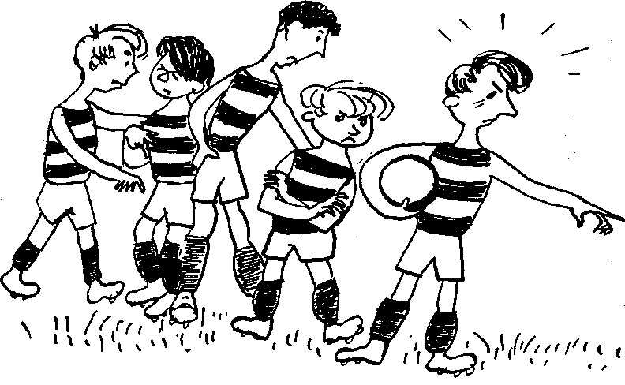
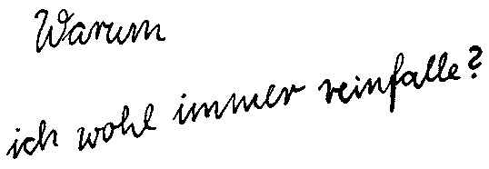
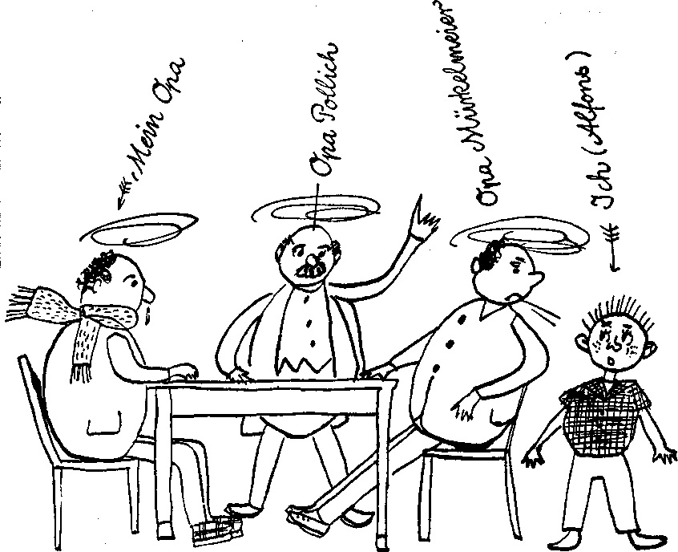

0
стр. з
0
сторінок

завантаження...
Г. Хольц-Баумерт
Альфонс Цитербаке. Истории одного неудачника
Книгу адаптировала Наталья Агеева
Метод чтения Ильи Франка
Inhalt
Ich habe immer Ärger mit meinem NamenWas mein Wellensittich Putzi und ich ertragen mussten. Teil 1Was mein Wellensittich Putzi und ich ertragen mussten. Teil 2Was mein Wellensittich Putzi und ich ertragen mussten. Teil 3Was mir mein Aprilscherz einbrachteMein GespensterbahnerlebnisAls ich ein falscher Betrunkener warMein Ärger mit KunstltderziegenhandschuhWie ich zu meinem ersten Kopfsprung kamWas alles passierte als ich die Spinne am Morgen sahWarum ich wohl immer reinfalle?Als ich den Karpfen Jumbo und andere Fische fingGroße Schlange und ich donnen mit dem KuchenblechWie ich mein Taschenmesser tauschteWarum man mich Feueralfons nenntAls mir ein Löwe auf der Treppe begegneteWas mir in der Straßenbahn passierteWarum ich die Pasaunenlawine ins Rollen brachte
Guten Tag (добрый день; der Tag)!
Ich heiße Alfons Zitterbacke und bin so alt wie ihr (меня зовут Альфонс Цитербаке и мне столько /же/ лет, сколько и вам). Und nun werdet ihr fragen, wie ich dazu gekommen bin, ein Buch zu schreiben (а теперь вы спросите, как я пришел к тому, чтобы написать книгу = как получилось так, что я решил написать книгу; das Buch); dabei sind meine Aufsätze gar nicht so gut (при этом мои сочинения не так уж и хороши; der Aufsatz). Aber das kam so (но это получилось так; kommen — приходить): Eines Tages ging ich zum Kinderbuchverlag (однажды я пошел в издательство детской литературы; gehen; der Kinderbuchverlag; das Kind — ребенок; das Kinderbuch — детская книга; der Verlag — издательство; verlegen — издавать). Ich hatte die Robinson-Zeitung gelesen und wollte am Preisausschreiben teilnehmen (я прочитал газету «Робинзон» и собирался принять участие в конкурсе; das Preisausschreiben — объявление конкурса; der Preis — премия, приз; ausschreiben — выписывать; делать выписки; объявлять /конкурс/). Damit meine Einsendung nicht verloren geht bei der Post, ging ich selber hin (чтобы мое отправление = отправленное мной письмо не потерялось на почте, я сам пошел туда; die Einsendung; einsenden — присылать; посылать, отправлять; die Post; verlieren — терять; verloren gehen — пропасть, потеряться: «уйти потерянным»; hingehen — сходить /куда-либо/).
Guten Tag!
Ich heiße Alfons Zitterbacke und bin so alt wie ihr. Und nun werdet ihr fragen, wie ich dazu gekommen bin, ein Buch zu schreiben; dabei sind meine Aufsätze gar nicht so gut. Aber das kam so: Eines Tages ging ich zum Kinderbuchverlag. Ich hatte die Robinson-Zeitung gelesen und wollte am Preisausschreiben teilnehmen. Damit meine Einsendung nicht verloren geht bei der Post, ging ich selber hin.
Unten im Kinderbuchverlag saß ein Mann (внизу в издательстве детской литературы сидел мужчина; sitzen; der Mann; der Kinderbuchverlag).
»Guten Tag (добрый день)«, sagte ich (сказал я), »ich möchte zu Robinson, etwas abgeben (я хотел бы = мне надо к Робинзону, кое-что отдать; geben — давать; abgeben — сдавать, отдавать).«
Der Mann sah in einer Liste nach (мужчина просмотрел в каком-то списке; die Liste; nachsehen). »Arbeitet bei uns nicht (/такой/ у нас не работает).«
»Natürlich (конечно)«, sagte ich ärgerlich (сказал я раздраженно; der Ärger — раздражение, досада). »Robinson ist hier im Kinderbuchverlag (Робинзон здесь, в детском издательстве).«
Aber der Mann wollte mich nicht durchlassen (но мужчина не хотел меня пропускать; lassen — пускать; durchlassen — пропускать; durch — сквозь, через). Ich wurde rot (я покраснел; rot — красный; rot werden — краснеть: «становиться красным»). Immer wenn ich ärgerlich werde, werde ich rot (я всегда, когда сержусь: «становлюсь сердитым/раздраженным», краснею).
Unten im Kinderbuchverlag saß ein Mann.
»Guten Tag«, sagte ich, »ich möchte zu Robinson, etwas abgeben.«
Der Mann sah in einer Liste nach. »Arbeitet bei uns nicht.«
»Natürlich«, sagte ich ärgerlich. »Robinson ist hier im Kinderbuchverlag.«
Aber der Mann wollte mich nicht durchlassen. Ich wurde rot. Immer wenn ich ärgerlich werde, werde ich rot.
Ich wusste gar nicht, was ich sagen sollte (я вовсе не знал, что сказать; wissen — знать). Zum Glück kam gerade eine schöne junge Dame vorbei (к счастью, мимо как раз проходила молодая красивая госпожа; das Glück — счастье; удача; vorbeikommen — проходить мимо; заходить; vorbei — мимо).
»Kollegin (коллега; die Kollégin — коллега /женщина/; der Kollége — коллега /мужчина/) «, sagte der Mann unten (сказал мужчина снизу), »dieser Junge will unbedingt zu Robinson (этот мальчик непременно хочет /попасть/ к Робинзону). Arbeitet der Kollege vielleicht in der Buchhaltung (быть может, коллега работает в бухгалтерии; die Buchhaltung; das Buch — книга; halten — держать)?«
Doch die Kollegin lachte nur und nahm mich gleich mit (однако коллега только рассмеялась и сразу взяла меня с собой; mitnehmen).
»Klar gibt's Robinson (конечно, Робинзон есть)«, sagte sie und blinzelte mir zu (сказала она и подмигнула мне; blinzeln — мигать, моргать; щурить глаза; жмуриться; подмигивать; jemandem zublinzeln — подмигнуть кому-либо), »sitzt im dritten Stock; ich bring dich hin (сидит на третьем этаже, я тебя отведу туда; der Stock; bringen — нести, hinbringen — относить, отводить /куда-либо/).«
Ich wusste gar nicht, was ich sagen sollte. Zum Glück kam gerade eine schöne junge Dame vorbei.
»Kollegin«, sagte der Mann unten, »dieser Junge will unbedingt zu Robinson. Arbeitet der Kollege vielleicht in der Buchhaltung?«
Doch die Kollegin lachte nur und nahm mich gleich mit.
»Klar gibt's Robinson«, sagte sie und blinzelte mir zu, »sitzt im dritten Stock; ich bring dich hin.«
Ich freute mich und sagte, ganz wie mir Mama immer gesagt hat, ich soll mich bei fremden Leuten vorstellen (я обрадовался и сказал, так как мне мама всегда говорила, что я должен представляться незнакомым/чужим людям):
»Ich heiße Alfons Zitterbacke (меня зовут Альфонс Цитербаке; zittern — дрожать; die Backe — щека; Zitterbacke — «дрожащая щека»).«
Die Kollegin war so nett und sagte (коллега была так = очень мила и сказала): »Und ich heiße Zweu (а меня зовут Цвой).«
Die Dame Zweu (Mama sagt, fremde Frauen sind immer Damen) wollte laufen (госпожа Цвой (мама говорит, незнакомые женщины — всегда госпожи) хотела идти пешком; laufen — ходить /пешком/; бегать). Ich sah aber, dass ein Fahrstuhl da war (но я увидел, что здесь был лифт; sehen; der Fahrstuhl — лифт; fahren — ехать; der Stuhl — стул). Ich wollte lieber fahren (я бы охотнее поехал /на лифте/; lieber — ср. степень от gern).
»Gut (хорошо)«, sagte die Dame Zweu (сказала госпожа Цвой), fahren wir Fahrstuhl, und du kannst ihn steuern (поедем на лифте, и ты сможешь им управлять; das Steuer — руль, колесо управления).«
Ich freute mich und sagte, ganz wie mir Mama immer gesagt hat, ich soll mich bei fremden Leuten vorstellen:
»Ich heiße Alfons Zitterbacke.«
Die Kollegin war so nett und sagte: »Und ich heiße Zweu.«
Die Dame Zweu (Mama sagt, fremde Frauen sind immer Damen) wollte laufen. Ich sah aber, dass ein Fahrstuhl da war. Ich wollte lieber fahren.
»Gut«, sagte die Dame Zweu, fahren wir Fahrstuhl, und du kannst ihn steuern.«
Ich machte die Tür zu und drückte auf ein paar Knöpfe (я закрыл дверь и нажал на несколько кнопок; zumachen — закрывать; der Knopf — пуговица; кнопка). Es ging aufwärts (/мы/ поехали вверх: «пошло вверх»).
»Viel schöner als auf dem Rummel (намного лучше, чем на ярмарке; der Rummel — ярмарка, гулянье /с балаганами, с аттракционами/) «, sagte ich (сказал я), »ich bin noch nie in so einem prima Fahrstuhl gefahren (я еще никогда не ездил на таком замечательном лифте; prima — первоклассный, высшего сорта; fahren).«
Dabei drückte ich aus Versehen noch auf einen Knopf (при этом я по неосторожности нажал еще на одну кнопку; das Versehen — ошибка, недосмотр). Da gab es einen Knall und der Fahrstuhl stand (тут раздался: «имелся» треск — и лифт остановился; geben — давать; es gibt — имеется; der Knall; stehen — стоять). Die Dame Zweu war ganz blass geworden (госпожа Цвой стала совсем бледной = сильно побледнела; blass werden — побледнеть). Ich bekam auch Angst, weil es so dunkel war im Fahrstuhl (я тоже испугался, потому что в лифте было так темно; die Angst — страх; Angst bekommen — испугаться, почувствовать страх: «получить страх»).
Ich machte die Tür zu und drückte auf ein paar Knöpfe. Es ging aufwärts.
»Viel schöner als auf dem Rummel«, sagte ich, »ich bin noch nie in so einem prima Fahrstuhl gefahren.«
Dabei drückte ich aus Versehen noch auf einen Knopf. Da gab es einen Knall und der Fahrstuhl stand. Die Dame Zweu war ganz blass geworden. Ich bekam auch Angst, weil es so dunkel war im Fahrstuhl.
Ich fragte (я спросил): »Stürzen wir jetzt vielleicht ab (неужели мы сейчас упадем; abstürzen — упасть /с высоты/; vielleicht — может быть)?«
Die Dame Zweu hörte gar nicht auf mich (госпожа Цвой совсем меня не слушала), sie drückte immerzu an den Knöpfen herum, doch der Fahrstuhl stand fest (она беспрерывно нажимала на различные кнопки, но лифт стоял неподвижно; herum — вокруг; fest — крепкий).
»Aus (всё/кончено)! Jetzt können wir lange hier sitzen (теперь мы можем просидеть здесь долго)«, sagte sie endlich ganz traurig (сказала она в конце концов очень печально; endlich — наконец, в конце концов; das Ende — конец; ganz — совсем; очень; traurig — печальный, грустный; die Trauer — печаль, скорбь).
Ich fragte: »Stürzen wir jetzt vielleicht ab?«
Die Dame Zweu hörte gar nicht auf mich, sie drückte immerzu an den Knöpfen herum, doch der Fahrstuhl stand fest.
»Aus! Jetzt können wir lange hier sitzen«, sagte sie endlich ganz traurig.
Ich hatte mich schon beruhigt (я уже успокоился; die Ruhe — покой; sich beruhigen — успокаиваться). Vielleicht musste die Feuerwehr kommen und uns mit einer Leiter retten (быть может, должна приехать пожарная команда и спасти нас при помощи лестницы; die Leiter — /приставная или веревочная/ лестница; die Feuerwehr — пожарная служба, пожарники; das Feuer — огонь; die Wehr — защита; sich wehren — защищаться), ich wollte nämlich gern mal auf einer Feuerwehrleiter sein (дело в том, что я охотно побывал бы на пожарной лестнице: «я хотел именно охотно разок быть на пожарной лестнице»; nämlich — именно; дело в том, что), das hatte noch keiner in meiner Klasse geschafft (этого еще никто из моего класса: «в моем классе» не делал). Hauptsache, wir stürzen nicht ab (самое главное, мы не падаем; die Hauptsache — главное: «главная вещь»; das Haupt — глава).
Ich hatte mich schon beruhigt. Vielleicht musste die Feuerwehr kommen und uns mit einer Leiter retten, ich wollte nämlich gern mal auf einer Feuerwehrleiter sein, das hatte noch keiner in meiner Klasse geschafft. Hauptsache, wir stürzen nicht ab.
»Haben Sie was zum Essen mit (у вас есть с собой что-нибудь поесть: «вы имеете что-то для еды с собой»; das Essen — еда, пища; essen — есть, кушать; mithaben — иметь с собой) «, fragte ich (спросил я), »wenn's lange dauert (если это долго продлится)?«
»Ach du lieber Himmel (Боже ты мой; der Himmel — небо, небеса; lieb — любимый) «, sagte die Dame Zweu (сказала госпожа Цвой), »ich habe doch eine wichtige Sitzung (у меня ведь важное совещание; sitzen — сидеть)!«
»Schlimm (плохо)?«, fragte ich (спросил я).
»Und wie (еще как: «и как»), unser Direktor ist doch so sehr pünktlich (ведь наш директор такой пунктуальный; der Diréktor; doch — же, ведь).«
Ich sagte (я сказал): »Die Lehrer bei uns in der Schule auch (учителя у нас в школе тоже; der Lehrer; die Schule).«
Die Dame Zweu bummerte gegen die Wand und rief (госпожа Цвой заколотила в стену и закричала; rufen — звать; кричать): »Ich muss doch zur Sitzung, hilft uns denn keiner (мне надо: «я должна» на совещание, неужели нам никто не поможет; helfen; denn — же /при вопросе/)?«
»Haben Sie was zum Essen mit«, fragte ich, »wenn's lange dauert?«
»Ach du lieber Himmel«, sagte die Dame Zweu, »ich habe doch eine wichtige Sitzung!«
»Schlimm?«, fragte ich.
»Und wie, unser Direktor ist doch so sehr pünktlich.«
Ich sagte: »Die Lehrer bei uns in der Schule auch.«
Die Dame Zweu bummerte gegen die Wand und rief: »Ich muss doch zur Sitzung, hilft uns denn keiner?«
»Seien Sie nur ruhig (вы только успокойтесь: «вы будьте только спокойны»; ruhig — спокойный) «, sagte ich (сказал я), »ich wollte auch mein Preisausschreiben abgeben (я тоже хотел сдать свое конкурсное сочинение), und wenn wir jetzt hier zwei Tage sitzen (но если мы сейчас просидим здесь два дня), schaffe ich den Termin nicht und kriege vielleicht keinen Preis (то я не успею /сдать/ в срок и, пожалуй, не получу приз; schaffen — сделать, справиться; der Termín — срок; дата).«
»Seien Sie nur ruhig«, sagte ich, »ich wollte auch mein Preisausschreiben abgeben, und wenn wir jetzt hier zwei Tage sitzen, schaffe ich den Termin nicht und kriege vielleicht keinen Preis.«
Es war eine ganze Weile still (некоторое время было тихо; die Weile — промежуток времени; eine Weile — некоторое время; eine ganze Weile — довольно продолжительное время: «целый промежуток времени»).
Die Dame Zweu sagte (госпожа Цвой сказала): »Erzähl mir doch was, Alfons (расскажи же мне что-нибудь, Альфонс), wir sind eben wie Robinson auf einer Insel (мы сейчас, как Робинзон на острове; die Insel) und müssen uns die Zeit vertreiben (и нам надо скоротать время: «и должны нам = для нас прогнать время»; vertreiben — прогонять; коротать /время/; treiben — гнать).«
Es war eine ganze Weile still.
Die Dame Zweu sagte: »Erzähl mir doch was, Alfons, wir sind eben wie Robinson auf einer Insel und müssen uns die Zeit vertreiben.«
»Gut (хорошо)«, sagte ich; ich kam mir richtig vor wie Robinson in seiner Höhle (я действительно чувствовал себя, как Робинзон в своей пещере; sich vorkommen — казаться себе; die Höhle). Und nun erzählte ich ihr was (и тогда я рассказал ей кое-что; was = etwas — что-то, кое-что). Zuerst die Abenteuer mit meinem Wellensittich (сперва/сначала историю с моим волнистым попугайчиком; der Wellensittich; die Welle — волна; der Sittich — попугай) und wie ich immer wegen meinem Namen Ärger habe (и то, как я всегда = постоянно имею неприятности из-за своего имени; der Name; der Ärger — раздражение, досада; неприятность). Und weil ihr das gefiel (и так как ей это понравилось; gefallen), erzählte ich die Sache mit Schlange und dem Streuselkuchen auf der Schulter (то я рассказал еще историю про змею и про пирог на плече; der Streuselkuchen — сладкий пирог с посыпкой; der/das Streusel — крошка; смесь из сахарного песка, крошек теста и корицы /для посыпки пирога/, посыпка; die Sache — дело, обстоятельство; die Schlange; die Schulter), auch den Aprilscherz (а также апрельский розыгрыш; der Apríl — апрель; der Scherz — шутка, розыгрыш) und den Ärger mit dem Taschenmesser und alles andere (и досадный случай с перочинным ножиком, и многое другое; das Taschenmesser; die Tasche — карман; das Messer — нож).
»Gut«, sagte ich; ich kam mir richtig vor wie Robinson in seiner Höhle. Und nun erzählte ich ihr was. Zuerst die Abenteuer mit meinem Wellensittich und wie ich immer wegen meinem Namen Ärger habe. Und weil ihr das gefiel, erzählte ich die Sache mit Schlange und dem Streuselkuchen auf der Schulter, auch den Aprilscherz und den Ärger mit dem Taschenmesser und alles andere.
Die Dame Zweu hat laut gelacht und gerufen (госпожа Цвой громко смеялась и кричала; rufen): »Das machen wir, Alfons, das machen wir (это мы сделаем, Альфонс, это мы сделаем) “.
Ich hab gar nicht richtig verstanden, was das bedeuten sollte (я даже не совсем понял, что это значит: «должно было означать»; richtig — правильно; как следует; verstehen). Aber sie ließ nicht locker (но она не отпускала = не давала мне останавливаться; lassen — пускать, отпускать; locker — свободный, незакрепленный; lockerlassen — отпускать, ослаблять), ich musste ihr noch die Sache erzählen, wo Onkels Emaillekanne eine Briefmarke wurde (я был вынужден рассказать ей еще историю: «вещь», в которой: «где» дядин эмалированный чайник превратился в почтовую марку; der Onkel — дядя; die Kanne — /заварочный/ чайник; die Emaille — эмаль; die Briefmarke; der Brief — письмо).
Die Dame Zweu hat laut gelacht und gerufen: »Das machen wir, Alfons, das machen wir.
Ich hab gar nicht richtig verstanden, was das bedeuten sollte. Aber sie ließ nicht locker, ich musste ihr noch die Sache erzählen, wo Onkels Emaillekanne eine Briefmarke wurde.
Auf einmal ruckte der Fahrstuhl an (вдруг лифт рывком сдвинулся с места; anrucken — рывком взять с места, двинуться; der Ruck — толчок, рывок), es wurde hell, und wir sausten nach oben (стало светло, и мы помчались вверх). Vor dem Fahrstuhl warteten schon zwei Herren (у лифта уже ждали два господина; der Herr). Ein Herr, der aussah wie ein Lehrer (один господин, который выглядел как учитель = был похож на учителя; aussehen), und ein kleinerer mit einer Brille und ganz scharfen Augen (и другой, поменьше /ростом/, в очках, с очень зоркими глазами; die Brille; das Auge; scharf — острый).
Auf einmal ruckte der Fahrstuhl an, es wurde hell, und wir sausten nach oben. Vor dem Fahrstuhl warteten schon zwei Herren. Ein Herr, der aussah wie ein Lehrer, und ein kleinerer mit einer Brille und ganz scharfen Augen.
Der erste Herr sagte (первый господин сказал): »Kollegin Zweu, wir hatten Sie doch zu Punkt zwei Uhr bestellt (коллега Цвой, мы ведь просили вас прийти ровно в два часа; bestellen — заказывать; пригласить, звать, велеть/просить прийти).« Und er zog seine Taschenuhr (и он вытащил свои карманные часы; ziehen — тянуть, тащить; die Taschenuhr — карманные часы; die Tasche — карман; die Uhr — часы) und sah mit gefurchter Stirn darauf (и посмотрел на них, сморщив лоб: «со сморщенным лбом»; sehen; furchen — бороздить, проводить/оставлять борозду; морщить, сморщивать; gefurcht — в морщинах; die Furche — борозда; морщина; die Stirn — лоб; darauf — на это/на него/на нее/на них).
Sie flüsterte (она прошептала): »Unser Direktor (наш директор).«
Der erste Herr sagte: »Kollegin Zweu, wir hatten Sie doch zu Punkt zwei Uhr bestellt.« Und er zog seine Taschenuhr und sah mit gefurchter Stirn darauf.
Sie flüsterte: »Unser Direktor.«
Ich sagte (я сказал): »Verzeihung, Kollege Direktor (простите, коллега директор; die Verzeihung — прощение, извинение; verzeihen — прощать), aber schuld bin ich, das kann ich bezeugen (но виноват я, я могу это удостоверить; der Zeuge — свидетель; bezeugen — заверять, уверять; удостоверять, подтверждать, засвидетельствовать).«
Der jüngere Herr mit der Brille sagte zu mir (более молодой господин в очках сказал мне): »Wir haben dich nicht gefragt, mein Junge (мы тебя не спрашивали, мой мальчик), warte, bis du dran bist (подожди, пока подойдет твоя очередь; dran = daran — при этом; dran sein — быть на очереди = an der Reihe sein; die Reihe — ряд; очередь).«
Ich sagte: »Verzeihung, Kollege Direktor, aber schuld bin ich, das kann ich bezeugen.«
Der jüngere Herr mit der Brille sagte zu mir: »Wir haben dich nicht gefragt, mein Junge, warte, bis du dran bist.«
»Aber Kollegen (но коллеги)«, sagte meine Freundin (сказала моя подруга), »das ist doch Alfons Zitterbacke (это же Альфонс Цитербаке).«
»Na und (ну и /что/)?«, sagte der kleinere Herr mit der Brille (сказал меньшего роста господин в очках) und lachte höhnisch (и язвительно/недобро рассмеялся; der Hohn — насмешка, издевка; höhnisch — насмешливый, язвительный, иронический).
Der Direktor sah noch immer auf die Uhr (директор все еще смотрел на часы) und sagte leise (и тихо произнес):
»Ich muss doch sehr bitten (однако я вынужден очень попросить = однако я вас очень прошу)!«, und zog die Dame Zweu einfach mit (и просто потянул за собой госпожу Цвой; mitziehen — тянуть с собой/за собой).
»Aber Kollegen«, sagte meine Freundin, »das ist doch Alfons Zitterbacke.«
»Na und?«, sagte der kleinere Herr mit der Brille und lachte höhnisch.
Der Direktor sah noch immer auf die Uhr und sagte leise:
»Ich muss doch sehr bitten!«, und zog die Dame Zweu einfach mit.
So, nun sitze ich hier im Kinderbuchverlag (так = и вот, сейчас я сижу здесь, в издательстве детской литературы) und schreibe vor Langeweile alles auf, was ich eben erzählt habe (и от скуки = чтобы не скучать, записываю все, что я только что рассказал; die Langeweile; aufschreiben — записывать; schreiben — писать; eben — гладкий, ровный; только что, сейчас, сию минуту). Ich gehe hier nicht eher weg, bis die Dame Zweu wiederkommt (я не уйду отсюда раньше, чем вернется госпожа Цвой; weggehen — уходить; weg — прочь; eher — раньше; bis — до) und ich mein Robinson-Preisausschreiben losgeworden bin (и я не отдам свое конкурсное задание/сочинение про Робинзона; etwas loswerden — избавиться от чего-либо). Ganz schön, denke ich wütend (очень хорошо: «совсем прекрасно», злюсь я: «яростно думаю я»; wütend — яростный, рассвирепевший; die Wut — ярость, бешенство), erst im Fahrstuhl einsperren (сначала запереть в лифте), alles erzählen lassen (заставить все рассказать), und nicht einmal eine Limonade haben sie für einen übrig (а у самих не найдется для тебя даже стаканчика лимонада; nicht einmal — даже не; übrig — лишний).
So, nun sitze ich hier im Kinderbuchverlag und schreibe vor Langeweile alles auf, was ich eben erzählt habe. Ich gehe hier nicht eher weg, bis die Dame Zweu wiederkommt und ich mein Robinson-Preisausschreiben losgeworden bin. Ganz schön, denke ich wütend, erst im Fahrstuhl einsperren, alles erzählen lassen, und nicht einmal eine Limonade haben sie für einen übrig.

Ich habe immer Ärger mit meinem Namen
(У меня постоянно возникают неприятности из-за моего имени).
Wer mich kennt, weiß, dass ich mich nicht gern keile (кто со мной знаком, тот знает, что я не очень охотно дерусь = не люблю драться; kennen — знать, быть знакомым; wissen — знать /располагать информацией/; keilen — расклинивать, расщеплять клином; дубасить; sich keilen — /разг./ драться; der Keil — клин). Ich bin still und suche keinen Streit (я тихий /парень/ и не ищу ссор; der Streit — спор; ссора).
Neulich habe ich mich aber gekeilt (но недавно я подрался) und dann noch viel Ärger mit den Erwachsenen gehabt (и после этого были большие неприятности со взрослыми; der/die Erwachsene — взрослый/взрослая; wachsen — расти). Alles wegen meinem Namen (все из-за моего имени; der Name — имя /в широком смысле/; фамилия). Alfons ist schon schlimm genug (Альфонс — это уже довольно плохо; schlimm — плохо; genug — довольно, достаточно).
Wer mich kennt, weiß, dass ich mich nicht gern keile. Ich bin still und suche keinen Streit.
Neulich habe ich mich aber gekeilt und dann noch viel Arger mit den Erwachsenen gehabt. Alles wegen meinem Namen. Alfons ist schon schlimm genug.
Die in der Klasse finden Alfons komisch und nennen mich oft Alfonsius (в классе все считают /имя/ Альфонс смешным и часто называют меня Альфонсиус). Zitterbacke ist aber noch viel schlimmer (но Цитербаке еще намного хуже). Wenn ich mich wenigstens mit C schreiben würde oder mit K (если /мое имя/ хотя бы писалось через «С» или через « K»), aber richtig wie Zittern und richtig wie Backe (но не точно как «дрожать» и как «щека»). Das finden alle ganz und gar komisch (все находят это очень смешным; ganz und gar — очень, совершенно: «совсем и совсем»). In der Klasse wiehern sie dauernd (все в классе постоянно хохочут; wiehern — ржать; dauern — длиться; dauernd — все время, постоянно), und wenn ein Lehrer zum ersten Mal zu uns kommt (и если какой-нибудь учитель в первый раз приходит к нам; das erste Mal — первый раз) und ich ihm meinen Namen nenne, muss er auch lächeln (и я называю ему свое имя, то он тоже невольно улыбается: «он тоже должен улыбнуться»).
Die in der Klasse finden Alfons komisch und nennen mich oft Alfonsius. Zitterbacke ist aber noch viel schlimmer. Wenn ich mich wenigstens mit C schreiben würde oder mit K, aber richtig wie Zittern und richtig wie Backe. Das finden alle ganz und gar komisch. In der Klasse wiehern sie dauernd, und wenn ein Lehrer zum ersten Mal zu uns kommt und ich ihm meinen Namen nenne, muss er auch lächeln.
Am schlimmsten sind die Kinder in meiner Straße (но хуже всего ребята с моей улицы: «на моей улице»; das Kind; die Straße). Die rufen mir immer hinterher (они постоянно кричат мне вслед) »Zitterbacke — Hühnerk... ( Цитербаке — куриная к…; das Huhn — курица; der Kot — помет) « (das, was sie rufen, kann ich eigentlich gar nicht aussprechen (то, что они кричат, я, на самом деле, даже не могу произнести)). Aber weh tut's, wenn man das hört (но причиняет боль, когда это слышишь = все же больно слышать такое; weh tun — делать больно, причинять боль; болеть). Ich laufe dann die Straße entlang (я тогда бегу по улице: «вдоль улицы»), pfeife mir eins (насвистываю себе что-нибудь: «одно») und überlege mir Namen, wie ich heißen könnte (и размышляю, как меня могли бы звать: «обдумываю имя, каким я могбы зваться»): Alfons Zeppelin (Альфонс Цеппелин), Alfons Müller (Альфонс Мюллер), meinetwegen auch Alfons Knebelbart (пожалуй даже Альфонс Кнебельбарт; meinetwegen — ради меня, из-за меня; пожалуй, изволь/те/, не возражаю, как хотите), aber Zitterbacke (но Цитербаке)...?
Am schlimmsten sind die Kinder in meiner Straße. Die rufen mir immer hinterher »Zitterbacke — Hühnerk...« (das, was sie rufen, kann ich eigentlich gar nicht aussprechen). Aber weh tut's, wenn man das hört. Ich laufe dann die Straße entlang, pfeife mir eins und überlege mir Namen, wie ich heißen könnte: Alfons Zeppelin, Alfons Müller, meinetwegen auch Alfons Knebelbart, aber Zitterbacke...?
Da ging ich nun, und die aus meiner Straße riefen wieder hinterher (так вот я шел, а ребята с моей улицы снова кричали мне вслед; gehen; rufen): »Zitterbacke — Hühnerk...«
Nein, ich konnte es nicht mehr überhören (нет, я больше не мог пропускать это мимо ушей). Ich drehte mich um (я обернулся; drehen — крутить, вращать; sich umdrehen — обернуться), schrie etwas, was ich vergessen habe (крикнул что-то, что я уже забыл; schreien; vergessen), fuchtelte wütend mit den Armen (яростно поразмахивал руками; der Arm). Da setzte der Chor erst richtig ein (и тут хор вступил по-настоящему = запел в полную силу; der Chor [k-]; einsetzen), sogar die Kleinen aus der ersten Klasse fingen an (даже малыши из первого класса начали /подпевать/; anfangen). Ich rannte ein Stück (я пробежал небольшой отрезок /дороги/; rennen; das Stück — штука; кусок). Alle hinterher (все за мной). Sie lachten und schrien (они смеялись и кричали; schreien). Ich blieb stehen (я остановился; stehen bleiben — останавливаться: «оставаться стоять»). Da blieben sie auch stehen (тогда они тоже остановились). »Zitterbacke — Hühnerk...«
Da ging ich nun, und die aus meiner Straße riefen wieder hinterher »Zitterbacke — Hühnerk...«
Nein, ich konnte es nicht mehr überhören. Ich drehte mich um, schrie etwas, was ich vergessen habe, fuchtelte wütend mit den Armen. Da setzte der Chor erst richtig ein, sogar die Kleinen aus der ersten Klasse fingen an. Ich rannte ein Stück. Alle hinterher. Sie lachten und schrien. Ich blieb stehen. Da blieben sie auch stehen. »Zitterbacke — Hühnerk...«
In diesem Moment kam ein kleiner Junge, vielleicht vier Jahre alt (в этот момент подошел маленький мальчик, лет, наверное, четырех; kommen; der Momént; das Jahr), der hatte gehört, was die anderen riefen (он слышал, что кричали остальные: «другие»; rufen). Er stellte sich neben mich hin (он встал рядом со мной; stellen — ставить; sich hinstellen — встать куда-либо: «поставить себя»), lachte und sagte ganz deutlich, wie er es von den anderen gehört hatte (засмеялся и сказал очень отчетливо, так, как он слышал это от других): »Zitterbacke... ( Цитербаке…)«. Er kam nicht weiter (он не успел продолжить). Ich haute ihm eine an (я влепил ему оплеуху: «одну»). Nicht zu doll, aber doch so, dass es klatschte (не слишком сильно, но так, что был слышен шлепок: «так, что шлепнуло»; klatschen — шлепать, хлопать). Ehe ich mich versah, klatschte es bei mir ebenso (не успел я и оглянуться, как у меня: «при мне» /за ухом/ раздался такой же шлепок; sich versehen). Das war die Mutter von dem Jungen (это была мама мальчика).
In diesem Moment kam ein kleiner Junge, vielleicht vier Jahre alt, der hatte gehört, was die anderen riefen. Er stellte sich neben mich hin, lachte und sagte ganz deutlich, wie er es von den anderen gehört hatte: »Zitterbacke...« Er kam nicht weiter. Ich haute ihm eine an. Nicht zu doll, aber doch so, dass es klatschte. Ehe ich mich versah, klatschte es bei mir ebenso. Das war die Mutter von dem Jungen.
»Schämst du dich nicht (тебе не стыдно; sich schämen — стыдиться) «, sagte sie (сказала она), »so ein großer Junge und haut den Kleinen (такой большой мальчик и бьет маленького)«, und wieder hatte ich eine (и я снова получил: «имел» /затрещину/).
»Hat er dir denn was getan (разве он тебе что-то сделал; tun)?«
Schon kamen andere hinzu (уже подошли все остальные; kommen — приходить; hinzu — к этому/вдобавок; hinzukommen — подходить; добавляться, присоединяться). Die Kinder, die mich dazu angestachelt hatten, waren verschwunden (ребята, которые подначивали меня, исчезли; verschwinden; der Stachel — колючка, шип; жало). Aber die Erwachsenen standen herum, mich wütend von oben ansehend (но вокруг стояли взрослые, яростно = возмущенно смотря на меня сверху; herumstehen — стоять вокруг; jemanden ansehen — смотреть на кого-либо).
»Er hat den Kleinen gehauen (он ударил малыша; hauen — рубить; бить) ... er vergreift sich, so ein Lauser (он дерется, что за негодяй; der Lauser — озорник; негодяй; die Laus — вошь; sich vergreifen — неудачно схватиться; ошибиться; sich an jemandem vergreifen — поднимать руку, бить, ударить кого-либо; greifen — хватать, схватить)!«
»Schämst du dich nicht«, sagte sie, »so ein großer Junge und haut den Kleinen«, und wieder hatte ich eine.
»Hat er dir denn was getan?«
Schon kamen andere hinzu. Die Kinder, die mich dazu angestachelt hatten, waren verschwunden. Aber die Erwachsenen standen herum, mich wütend von oben ansehend.
»Er hat den Kleinen gehauen ... er vergreift sich, so ein Lauser!«
Ich dachte mir, wozu antworten (я подумал, зачем отвечать; denken; wozu — для чего), sie reden daher, wie es ihnen einkommt (они говорят все, что им в голову придет; daherreden — /без умолку/ говорить, болтать; reden — говорить; daher — оттуда), und verstehen überhaupt nichts (и вообще ничего не понимают). Wenn ihnen nun einer mal so ein Wort hinterherrufen würde (а если бы им однажды кто-нибудь крикнул вслед такое слово; das Wort)?
Ich dachte mir, wozu antworten, sie reden daher, wie es ihnen einkommt, und verstehen überhaupt nichts. Wenn ihnen nun einer mal so ein Wort hinterherrufen würde?
Da entdeckte ich Freddi, den Frechsten aus unserer Straße, hinter einem der Großen (тут я обнаружил Фредди, самого дерзкого на нашей улице, /он стоял/ за одним из больших = из взрослых). Ganz leise (совсем тихо), unhörbar formte er mit seinen Lippen die Worte (неслышно составил = произнес он /одними/ губами слова; hörbar — слышно; hören — слышать; die Lippe) »Zitterbacke — Hühnerk... (Цитербаке — куриная к…).« Ich drohte mit der Faust (я погрозил кулаком; die Faust). Freddi verschwand (Фредди исчез; verschwinden). Aber die Leute gerieten außer sich (но люди = собравшиеся вышли из себя; geraten — попасть; впасть /в какое-либо состояние/).
»Er hat noch nicht genug (ему еще недостаточно; genug — довольно, достаточно), seinen Eltern werden wir es erzählen (мы расскажем это его родителям).«
Ich machte, dass ich wegkam (я поспешил уйти/убраться: «сделал /так/, чтобы я ушел прочь»; wegkommen, ср.: mach, dass du wegkommst! — а ну-ка убирайся!).
Da entdeckte ich Freddi, den Frechsten aus unserer Straße, hinter einem der Großen. Ganz leise, unhörbar formte er mit seinen Lippen die Worte »Zitterbacke — Hühnerk...« Ich drohte mit der Faust. Freddi verschwand. Aber die Leute gerieten außer sich.
»Er hat noch nicht genug, seinen Eltern werden wir es erzählen.«
Ich machte, dass ich wegkam.
Abends sagte ich zu Papa (вечером я сказал папе): »Mein Name gefällt mir nicht mehr (мое имя мне больше не нравится; gefallen).«
Papa sagte (папа сказал): »Was du bloß hast, viele heißen nicht so (что вдруг с тобой: «что ты только имеешь», так зовут немногих: «многих так не зовут»). Schulze kann jeder heißen, aber Zitterbacke... (Шульце может зваться любой, но Цитербаке…)«
Wenn man so groß ist wie Papa, kann man auch Zitterbacke heißen (когда ты такой большой, как папа, то можно зваться и Цитербаке), aber wenn man zehn Jahre alt ist, kann man sich schon über seinen Namen ärgern (но когда тебе десять лет, то свое имя может и раздражать: «из-за своего имени можно и раздражаться»; sich über etwas ärgern — сердиться на что-либо), und dann rutscht einem eben die Hand aus (и тогда у тебя и соскальзывает рука; eben — как раз, именно; einem — Dativ от неопределенно-личного местоимения man).
»Zitterbacke«, murmelte Papa noch beim Essen (пробормотал папа за едой). »Der Name passt dir nicht — so (фамилия тебе не подходит — вот как)!« Ich sah, wie er ärgerlich wurde (я видел, как он огорчился; sehen).
Abends sagte ich zu Papa: »Mein Name gefällt mir nicht mehr.«
Papa sagte: »Was du bloß hast, viele heißen nicht so. Schulze kann jeder heißen, aber Zitterbacke...«
Wenn man so groß ist wie Papa, kann man auch Zitterbacke heißen, aber wenn man zehn Jahre alt ist, kann man sich schon über seinen Namen ärgern, und dann rutscht einem eben die Hand aus.
»Zitterbacke«, murmelte Papa noch beim Essen. »Der Name passt dir nicht — so!« Ich sah, wie er ärgerlich wurde.
»Wachse erst mal richtig (сначала подрасти как следует; erst mal — сначала, сперва; richtig — правильно; как следует), wir Zitterbackes sind alles große Kerle (мы, Цитербаке, — все большие парни; der Kerl), aber du bist nur ein dünnes Komma (а ты пока всего лишь тоненькая запятая; das Komma). Wenn du dich doch bloß mal richtig prügeln würdest (если бы ты хоть раз по-настоящему подрался), wie wir Zitterbackes es als Jungs immer getan haben (как это постоянно делали мы, Цитербаке, когда были мальчишками; tun), aber du (но ты = а ты что)?« Wenn du wüsstest, dachte ich (если бы ты знал, думал я; wissen; denken), mir brennen noch die Maulschellen auf der Backe (у меня на щеке все еще пылают оплеухи; die Maulschelle; das Maul — морда; пасть; die Schelle — бубенчик, колокольчик; /звонкая/ пощечина, оплеуха). Nein, ich kann meinen Namen nicht leiden (нет, я не выношу своего имени: «не могу терпеть моего имени»; leiden — страдать; терпеть, выносить).
»Wachse erst mal richtig, wir Zitterbackes sind alles große Kerle, aber du bist nur ein dünnes Komma. Wenn du dich doch bloß mal richtig prügeln würdest, wie wir Zitterbackes es als Jungs immer getan haben, aber du?« Wenn du wüsstest, dachte ich, mir brennen noch die Maulschellen auf der Backe. Nein, ich kann meinen Namen nicht leiden.
Was mein Wellensittich Putzi und ich ertragen mussten. Teil 1
(Что пришлось вынести мне и моему волнистому попугайчику Путци).
Часть I
Von Tante Sigrid bekam ich zum Geburtstag einen Wellensittich geschenkt (в подарок на день рождения я получил от тети Зигрид волнистого попугайчика; schenken — дарить; etwas geschenkt bekommen — получить что-либо в подарок: «получить подаренным»; der Geburtstag; die Geburt — роды; рождение). Es war mein schönstes Geschenk (это был мой самый замечательный подарок; das Geschenk). »Danke (спасибо)«, sagte ich (сказал я), »jetzt habe ich einen schönen Vogel (теперь у меня есть красивая птица).« Ich nannte ihn Putzi (я назвал его Путци; nennen) und nahm mir vor, ihn zu zähmen (и решил приручить его; sich etwas vornehmen — намереваться, решить /что-либо сделать/) und ihm das Reden beizubringen (и обучить его говорению = научить его говорить; reden — говорить). Gleich am nächsten Tage wollte ich damit beginnen (сразу же на следующий день я хотел начать с этим = начать заниматься этим; damit — с этим, этим).
Von Tante Sigrid bekam ich zum Geburtstag einen Wellensittich geschenkt. Es war mein schönstes Geschenk. »Danke«, sagte ich, »jetzt habe ich einen schönen Vogel.« Ich nannte ihn Putzi und nahm mir vor, ihn zu zähmen und ihm das Reden beizubringen. Gleich am nächsten Tage wollte ich damit beginnen.
Mama war einkaufen gegangen (мама ушла за покупками; einkaufen — покупать, делать покупки; gehen). Ich stellte mich an das Vogelbauer (я встал у птичьей клетки; stellen — ставить; sich stellen — ставить себя = вставать /куда-либо/) und öffnete ganz vorsichtig die kleine Gittertür (и очень осторожно открыл маленькую решетчатую дверцу; das Gitter — решетка; die Tür — дверь; die Vorsicht — осторожность). Ich wollte Putzi bloß in die Hand nehmen (я всего лишь хотел взять Путци на руку), damit er sich an meinen Geruch gewöhnt (чтобы он привыкал к моему запаху; der Geruch — запах; riechen — пахнуть). Es heißt doch, Tiere erkennen ihr Herrchen am Geruch (ведь говорят, что животные узнают своего хозяина по запаху; das Tier; das Herrchen — хозяин /животного/: «хозяйчик»; der Herr — господин). Ehe ich leise zugreifen konnte, war Putzi schon draußen (/но/ прежде чем я успел /его/ аккуратно схватить, Путци уже был снаружи /клетки/).
Mama war einkaufen gegangen. Ich stellte mich an das Vogelbauer und öffnete ganz vorsichtig die kleine Gittertür. Ich wollte Putzi bloß in die Hand nehmen, damit er sich an meinen Geruch gewöhnt. Es heißt doch, Tiere erkennen ihr Herrchen am Geruch. Ehe ich leise zugreifen konnte, war Putzi schon draußen.
Er kreiste in der Stube herum (он кружил по комнате; die Stube; der Kreis — круг; herum — вокруг; herumkreisen — кружить). Je mehr ich hinter ihm her war, desto schneller wurde er (чем больше я за ним бегал, тем быстрее он становился; hinter jemandem her sein — преследовать кого-либо). Setzte ich mich hin (если я садился; sich hinsetzen), setzte sich Putzi auch hin (то Путци тоже садился) — auf die Gardinenstange (на карниз; die Gardíne — занавеска, гардина; die Stange — — жердь; палка; штанга; die Gardinenstange — багет/карниз для гардин). Schlich ich näher (если я подкрадывался ближе; schleichen; nah — близко), tanzte Putzi hin und her (то Путци пританцовывал туда-обратно; tanzen — танцевать; hin — туда; her — сюда), und ehe ich ran war, flog er los (и прежде чем я его настигал, он взлетал; ran = heran — вперед, поближе, сюда; heransein — подходить /близко/, быть тут как тут; losfliegen — улетать; los— прочь; fliegen — летать). So beobachteten wir uns eine ganze Weile (так мы следили друг за другом долгое время: «целый промежуток»; beobachten — наблюдать).
Er kreiste in der Stube herum. Je mehr ich hinter ihm her war, desto schneller wurde er. Setzte ich mich hin, setzte sich Putzi auch hm — auf die Gardinenstange. Schlich ich näher, tanzte Putzi hin und her, und ehe ich ran war, flog er los. So beobachteten wir uns eine ganze Weile.
Da klingelte es (тут позвонили /в дверь/). Ich lief in den Korridor (я выбежал в коридор; laufen). Putzi hinter mir her (Путци за мной). Er saß auf dem schwarzen Gasometer (он сидел на черном газометре; der Gasométer). Ich dachte (я подумал; denken), wenn ich jetzt die Wohnungstür aufmache (если я открою сейчас входную дверь; die Wohnung — квартира), ist Putzi draußen (то Путци будет снаружи = вылетит наружу), und ich kriege ihn nie wieder (и я уже никогда его не поймаю; kriegen — получать /разг./; поймать; wieder — снова). Also fragte ich (потому я спросил): »Wer ist denn da (кто же это)?«
»Der Gasmann, Junge, ich komme kassieren (/это/ газовщик, мальчик, я пришел получить плату /за газ/; das Gas — газ).« Ach ja, Mama hatte mir das Geld schon auf dem Küchentisch zurechtgelegt (ах да, мама ведь приготовила мне деньги на кухонном столе; der Küchentisch; die Küche — кухня; zurechtlegen — уложить, положить наготове; legen — класть; zurecht — в надлежащем порядке, по правилам, как следует).
Da klingelte es. Ich lief in den Korridor. Putzi hinter mir her. Er saß auf dem schwarzen Gasometer. Ich dachte, wenn ich jetzt die Wohnungstür aufmache, ist Putzi draußen, und ich kriege ihn nie wieder. Also fragte ich: »Wer ist denn da?«
»Der Gasmann, Junge, ich komme kassieren.« Ach ja, Mama hatte mir das Geld schon auf dem Küchentisch zurechtgelegt.
Ich rief durch den Briefschlitz (я крикнул через почтовую щель; rufen; der Briefschlitz; der Brief — письмо): »Einen Moment bitte (пожалуйста, один момент)!«, und ging ins Zimmer zurück (и пошел обратно в комнату; zurückgehen). Putzi flog hinterher (Путци полетел за мной; fliegen; hinterher — вслед). Blitzschnell drehte ich mich um (я молниеносно развернулся; der Blitz — молния; schnell — быстро; sich umdrehen — развернуться; drehen — крутить, вращать), rannte hinaus und schloss die Tür (выбежал и закрыл дверь; hinausrennen — выбежать наружу; rennen — бежать; schließen). Doch Putzi schwirrte schon wieder im Korridor herum (но Путци уже снова со свистом носился по коридору; schwirren — просвистеть, прожужжать, пролететь /со свистом/).
»Na warte (ну подожди)«, sagte ich, »mach mal Kusch, Herrchen befiehlt (сделай куш = ложись, хозяин приказывает; befehlen; kuschen — ложиться /о животном/)!«
Aber Putzi kam nicht vom Gasometer herunter (но Путци не спускался с газометра; herunterkommen; herunter — вниз: «сюда-вниз»). Da ging ich zur Zimmertür und steckte den Kopf hindurch (тогда я пошел к комнатной двери и просунул голову /в дверной проем/; hindurch — сквозь: «туда-через»). War Putzi drin, wollte ich sie einfach zumachen (когда Путци будет внутри = залетит внутрь, я просто хотел ее /дверь/ закрыть; drin = darin — там внутри). Putzi aber flog nicht (но Путци не летел).
Ich rief durch den Briefschlitz: »Einen Moment bitte!«, und ging ins Zimmer zurück. Putzi flog hinterher. Blitzschnell drehte ich mich um, rannte hinaus und schloss die Tür. Doch Putzi schwirrte schon wieder im Korridor herum.
»Na warte«, sagte ich, »mach mal Kusch, Herrchen befiehlt!«
Aber Putzi kam nicht vom Gasometer herunter. Da ging ich zur Zimmertür und steckte den Kopf hindurch. War Putzi drin, wollte ich sie einfach zumachen. Putzi aber flog nicht.
»Nun mach endlich auf, Junge (мальчик, открывай, наконец; nun — теперь; ну; aufmachen — открывать), ich habe keine Zeit (у меня нет времени = я тороплюсь)«, sagte der Gasmann hinter der Wohnungstür (сказал газовщик /стоящий/ за входной дверью: «за квартирной дверью»; die Wohnung — квартира).
»Einen ganz kleinen Augenblick bitte noch (еще, пожалуйста, одно совсем маленькое мгновение)«, rief ich ihm durch den Schlitz zu (крикнул я ему сквозь щель; jemandem zurufen — крикнуть кому-либо). Ich wusste wirklich nicht, was ich machen sollte (я действительно не знал, что мне делать; wissen). Ich versuchte den Trick noch einmal (я попробовал эту уловку еще раз). War ich in der Stube, war Putzi auch in der Stube (если я находился: «был я» в комнате, то Путци тоже был в комнате). Sauste ich in den Korridor, war Putzi schon eher im Korridor (если я мчался в коридор, то Путци оказывался в коридоре еще раньше /чем я/). Ich ging zur Tür (я пошел к двери; gehen).
»Leider kann ich Ihnen nicht aufmachen (к сожалению, я не могу открыть вам /дверь/), mein Putzi spielt verrückt (мой Путци прикидывается сумасшедшим: «играет сумасшедшего»)«, rief ich (крикнул я; rufen).
»Nun mach endlich auf, Junge, ich habe keine Zeit«, sagte der Gasmann hinter der Wohnungstür.
»Einen ganz kleinen Augenblick bitte noch«, rief ich ihm durch den Schlitz zu. Ich wusste wirklich nicht, was ich machen sollte. Ich versuchte den Trick noch einmal. War ich in der Stube, war Putzi auch in der Stube. Sauste ich in den Korridor, war Putzi schon eher im Korridor. Ich ging zur Tür.
»Leider kann ich Ihnen nicht aufmachen, mein Putzi spielt verrückt«, rief ich.
»Machst du auf oder nicht (ты откроешь или нет)?«, fragte der Gasmann böse (зло/сердито спросил газовщик).
Er klopfte und klingelte (он постучал и позвонил). Ich hörte den Gasmann polternd weggehen (я услышал, как газовщик, громыхая = топая/шумно ступая, ушел; poltern — двигаться с шумом). Wenn das Ärger mit der Gasfabrik gibt (если из-за этого будут: «если это даст» неприятности с газовой фабрикой; der Ärger — гнев, досада, раздражение; неприятность, огорчение; die Gasfabrík; das Gas — газ) und sie uns den Hahn zudrehen, weil wir nicht bezahlt haben (и они перекроют нам кран, потому что мы не заплатили), kann Putzi was erleben (то Путци попадет: «Путци сможет кое-что пережить»; erleben — переживать, испытывать).
»Machst du auf oder nicht?«, fragte der Gasmann böse.
Er klopfte und klingelte. Ich hörte den Gasmann polternd weggehen. Wenn das Ärger mit der Gasfabrik gibt und sie uns den Hahn zudrehen, weil wir nicht bezahlt haben, kann Putzi was erleben.
Ich nahm einen Besen und jagte ihn ordentlich (я взял метлу и как следует погонял его; nehmen; jagen — гонять; охотиться; ordentlich — порядочно; хорошенько, изрядно, как следует; die Ordnung — порядок; ordnen — упорядочивать). Leider stieß ich dabei an das große Foto (к сожалению, я натолкнулся при этом на большую фотографию; stoßen), wo Mama und Papa Hochzeit drauf haben (где была изображена свадьба мамы и папы; die Hochzeit; drauf = darauf — на этом, на ней /на фотографии/). Es fiel auf die Erde und zersplitterte ein bisschen (она упала на землю = на пол и немного разбилась; fallen; der Splitter — осколок; обломок). Putzi flog bei der Jagd gegen eine kleine Blumenvase (Путци во время погони налетел на маленькую вазу с цветами; die Blume — цветок; fliegen) und goss das ganze Wasser über unser Büfett (и вылил всю воду на наш буфет; gießen; das Büfétt). Ich sprang aufs Sofa, Putzi setzte sich auf den Schrank (я вскочил на диван, Путци уселся на шкаф; springen).
Ich nahm einen Besen und jagte ihn ordentlich. Leider stieß ich dabei an das große Foto, wo Mama und Papa Hochzeit drauf haben. Es fiel auf die Erde und zersplitterte ein bisschen. Putzi flog bei der Jagd gegen eine kleine Blumenvase und goss das ganze Wasser über unser Büfett. Ich sprang aufs Sofa, Putzi setzte sich auf den Schrank.
Draußen schloss es (снаружи закрыли /дверь/; schließen), Mama kam (мама пришла). Wenn sie jetzt in die Küche geht und dann hier hereinkommt (если она сейчас пойдет на кухню и потом войдет сюда; herein — сюда /в помещение/: «сюда-внутрь»), fliegt mir Putzi weg (/то/ Путци от меня улетит: «мне улетит»), denn in der Küche steht das Fenster auf (потому что в кухне открыто окно; aufstehen — быть: «стоять» открытым). Ich hielt die Zimmertür zu (я закрыл дверь в комнату; zuhalten). Mama klinkte und rüttelte (мама нажала на дверную ручку и подергала /ее/; die Klinke — дверная ручка; /an der Tür/ klinken — нажимать дверную ручку).
»Lass die Späße, Alfi (оставь свои шутки, Альфи; der Spaß) «, sagte Mama im Korridor (сказала мама в коридоре; der Kórridor).
»Ist doch kein Spaß, Mama (мама, это не шутка), lass die Tür bitte zu (оставь, пожалуйста, дверь закрытой)«, bat ich (попросил я; bitten). Mama drückte weiter (мама продолжала давить /на ручку/: «давила дальше»).
Draußen schloss es, Mama kam. Wenn sie jetzt in die Küche geht und dann hier hereinkommt, fliegt mir Putzi weg, denn in der Küche steht das Fenster auf. Ich hielt die Zimmertür zu. Mama klinkte und rüttelte.
»Lass die Späße, Alfi«, sagte Mama im Korridor.
»Ist doch kein Spaß, Mama, lass die Tür bitte zu«, bat ich. Mama drückte weiter.
»Bitte die Tür zulassen (пожалуйста, оставь дверь закрытой), es geht um Putzi (это касается/речь идет о Путци)!«, schrie ich (прокричал я; schreien).
Mama rüttelte nicht mehr an der Klinke (мама больше не дергала = перестала дергать дверную ручку).
»Putzi fliegt mir weg, wenn du aufmachst (Путци улетит от меня, если ты откроешь).«
Mama ging in die Küche (мама прошла на кухню).
»Bitte die Tür zulassen, es geht um Putzi!«, schrie ich.
Mama rüttelte nicht mehr an der Klinke.
»Putzi fliegt mir weg, wenn du aufmachst.«
Mama ging in die Küche.
Putzi saß auf der Gardinenstange (Путци сидел на карнизе; sitzen). »Jetzt ist es genug (теперь достаточно = с меня достаточно)«, schrie ich wütend (прокричал я в ярости; schreien; wütend — яростный, рассвирепевший; die Wut — ярость). Ich kroch auf den Schrank (я залез на шкаф; kriechen — ползать), kraxelte am Ofen hoch (вскарабкался на печь; der Ofen) und sprang vom Sofa auf den Tisch (и спрыгнул с дивана на стол; springen) — ich schaffte Putzi nicht (Путци я не поймал; schaffen — /успешно/ сделать, управиться).
Putzi saß auf der Gardinenstange. »Jetzt ist es genug«, schrie ich wütend. Ich kroch auf den Schrank, kraxelte am Ofen hoch und sprang vom Sofa auf den Tisch — ich schaffte Putzi nicht.
Gerade lag ich auf dem Schrank (я как раз лежал на шкафу; gerade — прямо; как раз; liegen) und musste wegen dem Staub niesen, der oben war (и был вынужден чихнуть из-за пыли, которая была наверху; der Staub), als Mama hereinkam (когда вошла мама; hereinkommen). Zum Glück saß Putzi auf dem Ofen (к счастью, Путци сидел на печке; das Glück — удача, счастье; sitzen) und sah mich misstrauisch an (и недоверчиво/с подозрением меня разглядывал; ansehen; misstrauen — не доверять; trauen — доверять), sodass er nicht die offene Tür bemerkte (так что открытую дверь он не заметил). Mama schloss schnell die Tür und sah aber niemand (мама быстро закрыла дверь, но никого не увидела; schließen).
»Ich bin hier oben (я здесь, наверху)«, rief ich leise vom Schrank (тихо позвал я со шкафа; rufen).
Gerade lag ich auf dem Schrank und musste wegen dem Staub niesen, der oben war, als Mama hereinkam. Zum Glück saß Putzi auf dem Ofen und sah mich misstrauisch an, sodass er nicht die offene Tür bemerkte. Mama schloss schnell die Tür und sah aber niemand.
»Ich bin hier oben«, rief ich leise vom Schrank.
Mama erblickte mich und schlug die Hände zusammen (мама увидела меня и сложила вместе руки = и всплеснула руками; zusammenschlagen; zusammen — вместе; schlagen — бить; die Hand). Sie sah ganz traurig auf die schief hängenden Gardinen (она очень: «совсем» печально посмотрела на косо висящие = покосившиеся гардины; hängen — висеть), das abgefallene Bild (на упавшую картину; abfallen — отвалиться, свалиться; fallen — падать), die umgekippte Vase (на опрокинутую вазу; umkippen — опрокидывать) — auf alles (на все).
»Ich krieg ihn nicht (я не могу его поймать; kriegen — получать; ловить) «, sagte ich (сказал я), »was soll man da machen (что мне тут = в этой ситуации делать)?«
Mama erblickte mich und schlug die Hände zusammen. Sie sah ganz traurig auf die schief hängenden Gardinen, das abgefallene Bild, die umgekippte Vase — auf alles.
»Ich krieg ihn nicht«, sagte ich, »was soll man da machen?«
Ich fuchtelte mit dem Besen herum (я помахал метлой; der Besen), und Putzi sauste wie ein Propeller durch die Stube (и Путци, как пропеллер, со свистом пронесся по комнате; der Propéller) und blieb auf dem Ofen sitzen (и уселся на печь; sitzen bleiben). Mama half mir jetzt, Putzi zu fangen (теперь мама стала помогать мне ловить Путци). Ich jagte ihn hier, sie ihn da (я охотился за ним/гнал его здесь, она там). Zum Glück war es Mama, die die Tasse vom Tisch herunterriss (к счастью, это была мама, которая уронила со стола чашку = именно мама уронила /а не я/; herunterreißen — срывать; сдергивать; сносить: «срывать вниз»; herunter — вниз: «сюда-вниз»; reißen — рвать). Wenn ich das gewesen wäre (если бы это был я; ich bin gewesen — я был; ich wäre gewesen — я был бы)!
Ich fuchtelte mit dem Besen herum, und Putzi sauste wie ein Propeller durch die Stube und blieb auf dem Ofen sitzen. Mama half mir jetzt, Putzi zu fangen. Ich jagte ihn hier, sie ihn da. Zum Glück war es Mama, die die Tasse vom Tisch herunterriss. Wenn ich das gewesen wäre!
»Wir kriegen ihn niemals (мы никогда его не поймаем)«, sagte ich, und mir war ganz weinerlich zumute (и в душе мне захотелось расплакаться: «и на душе у меня было плаксиво»; weinerlich — плаксивый; weinen — плакать; zumute — на душе; der Mut — мужество; расположение духа, настроение, самочувствие). Ich sah Putzi schon irgendwo davonfliegen (я уже видел, как Путци куда-то улетает; irgendwo — где-то; davon — прочь: «от этого») und sich mit den Spatzen und Amseln zanken (и ссорится с воробьями и черными дроздами; der Spatz — воробей; die Amsel — черный дрозд; sich zanken — браниться, ссориться).
»Wir kriegen ihn niemals«, sagte ich, und mir war ganz weinerlich zumute. Ich sah Putzi schon irgendwo davonfliegen und sich mit den Spatzen und Amseln zanken.
Eine Stunde später kam Papa (часом позже пришел папа). Er kam an die Tür (он подошел к двери); diesmal hielt Mama zu (на этот раз мама держала /дверь закрытой/; zuhalten).
»Bitte nicht aufmachen, Paul (Пауль, пожалуйста, не открывай)«, sagte sie, »Putzi ist los (Путци вырвался /из клетки/; los — неприкрепленный; отвязанный, отвязавшийся; свободный, освободившийся).«
Eine Stunde später kam Papa. Er kam an die Tür; diesmal hielt Mama zu.
»Bitte nicht aufmachen, Paul«, sagte sie, »Putzi ist los.«
»Bitte warten (пожалуйста, подожди: «подождать»)«, rief ich vom Ofen herunter (крикнул я с печки: «с печки вниз»). Papa murmelte etwas von Hunger und sich ausziehen wollen (папа пробормотал что-то про голод и про то, что хотел бы раздеться; der Hunger). Mama sagte durchs Schlüsselloch (мама сказала через замочную скважину; das Schlüsselloch; der Schlüssel — ключ; das Loch — отверстие, дыра): »Schließ alle Türen (закрой все двери).«
Papa tat es (папа сделал это; tun).
»Bitte warten«, rief ich vom Ofen herunter. Papa murmelte etwas von Hunger und sich ausziehen wollen. Mama sagte durchs Schlüsselloch: »Schließ alle Türen.«
Papa tat es.
Dann durfte er hereinkommen (тогда он cмог войти = ему было позволено войти). Wie vorhin Mama, blieb Papa jetzt entsetzt stehen (как перед этим мама, папа остался стоять, объятый ужасом; entsetzen — ужасать, приводить в ужас; stehen bleiben — остаться стоять, остановиться). Er schüttelte den Kopf (он покачал головой; schütteln — трясти) und strich Mama den Staub vom Gesicht (и смахнул у мамы с лица пыль; streichen; das Gesicht).
»Ich dachte, ihr habt eine besondere Überraschung für mich (я думал, у вас для меня какой-то особенный сюрприз; denken; überraschen — застать врасплох) «, sagte er, »dabei macht ihr bloß unsere Wohnung kaputt (а вы просто гробите нашу квартиру; kaputtmachen — ломать; приводить в негодность; kaputt — сломанный).«
Dann durfte er hereinkommen. Wie vorhin Mama, blieb Papa jetzt entsetzt stehen. Er schüttelte den Kopf und strich Mama den Staub vom Gesicht.
»Ich dachte, ihr habt eine besondere Überraschung für mich«, sagte er, »dabei macht ihr bloß unsere Wohnung kaputt.“
»Du musst uns helfen, Papa (папа, ты должен нам помочь)«, sagte ich.
Papa reichte mir die Hand nach oben auf den Ofen und sagte (папа протянул мне руку наверх, на печь, и сказал):
»Da ist doch nichts Besonderes dran (в этом нет ничего сложного: «особенного»; dran = daran — в этом, при этом).«
Papa nahm den Futternapf (папа взял миску для корма; nehmen; der Futternapf; das Futter — корм) und zeigte ihn Putzi (и показал ее Путци). Der saß wieder auf der Gardinenstange (тот вновь сидел на карнизе; sitzen). Als er den Futternapf sah (когда он увидел миску для корма; sehen), hüpfte er aufgeregt hin und her (то взволнованно запрыгал взад и вперед; hin und her — туда и сюда; sich aufregen — волноваться; sich regen — шевелиться, двигаться).
»Du musst uns helfen, Papa«, sagte ich.
Papa reichte mir die Hand nach oben auf den Ofen und sagte:
»Da ist doch nichts Besonderes dran.«
Papa nahm den Futternapf und zeigte ihn Putzi. Der saß wieder auf der Gardinenstange. Als er den Futternapf sah, hüpfte er aufgeregt hin und her.
Papa stellte den Futternapf in das Bauer (папа поставил миску для корма в клетку). Putzi drehte eine Runde (Путци сделал круг; drehen — вертеть, крутить), kletterte vorsichtig durch die Tür in den Käfig (и через дверцу осторожно забрался в клетку; klettern — карабкаться, лезть). Papa hakte zu (папа закрыл /дверцу/ на крючок; der Haken — крюк, крючок). Papa war stolz (папа был горд /собой/). »Und jetzt beginnen wir mit den Aufräumungsarbeiten (а теперь начнем уборочные работы = начнем убирать /комнату/; die Aufräumungsarbeit; die Aufräumung — уборка; aufräumen — убираться; der Raum — пространство; помещение) «, sagte er. Putzi fraß seine Körnchen (Путци ел свои зернышки; fressen — есть /о животных/; жрать /о людях/; das Körnchen — зернышко; das Korn — зерно), und wir räumten noch bis zum Abend auf (а мы убирались еще до самого вечера; der Abend). Nachher hatten wir alle einen großen Hunger (после этого мы все очень сильно проголодались; Hunger haben — быть голодным, проголодаться).
Papa stellte den Futternapf in das Bauer. Putzi drehte eine Runde, kletterte vorsichtig durch die Tür in den Käfig. Papa hakte zu. Papa war stolz. »Und jetzt beginnen wir mit den Aufräumungsarbeiten«, sagte er. Putzi fraß seine Körnchen, und wir räumten noch bis zum Abend auf. Nachher hatten wir alle einen großen Hunger.
Kurz vor dem Schlafengehen entdeckte Mama (незадолго до отхода ко сну мама обнаружила; kurz — короткий; kurz vor… — незадолго до; schlafen — спать), dass das Gasgeld noch auf dem Küchentisch lag (что деньги на газ все еще лежали на кухонном столе; liegen).
»War der Gasmann nicht da (разве газовщик не приходил; da sein — быть здесь)?«, fragte sie mich (спросила она меня). Ich las gerade die ABC-Zeitung und versteckte mich dahinter (я как раз читал газету « ABC» и спрятался за ней; lesen; das Abc — алфавит, азбука).
»Ich weiß nicht (я не знаю; wissen) «, stotterte ich (пролепетал я, заикаясь; stottern — заикаться), »er muss wohl wieder weggegangen sein (вероятно, он снова ушел: «он должен был, пожалуй, снова уйти»; weggehen — уйти /сейчас/; weggegangen sein — уйти /раньше, в прошлом/: «быть ушедшим»).«
Kurz vor dem Schlafengehen entdeckte Mama, dass das Gasgeld noch auf dem Küchentisch lag.
»War der Gasmann nicht da?«, fragte sie mich. Ich las gerade die ABC-Zeitung und versteckte mich dahinter.
»Ich weiß nicht«, stotterte ich, »er muss wohl wieder weggegangen sein.«
Eine Woche später kam ein Brief von der Gasfabrik (неделю спустя пришло письмо с газовой фабрики; kommen; der Brief). Der Gasmann beschwerte sich, dass er nicht hereingelassen worden war (газовщик жаловался, что его не впустили /в дом/: «что он не был впущен»; herein — внутрь: «сюда-внутрь»; lassen — пускать; hereinlassen — пускать внутрь), und dass Familie Zitterbacke das Geld nicht bezahlt hat (и что семья Цитербаке не заплатила /деньги/), und wenn das nicht binnen drei Tagen gemacht wird (и если это не будет сделано в течение трех дней), gibt es kein Gas (то газ будет отключен: «то газа не будет»).
Eine Woche später kam ein Brief von der Gasfabrik. Der Gasmann beschwerte sich, dass er nicht hereingelassen worden war, und dass Familie Zitterbacke das Geld nicht bezahlt hat, und wenn das nicht binnen drei Tagen gemacht wird, gibt es kein Gas.
Das war gemein (это было подло). Mama wollte mich gerade fragen (мама как раз хотела меня спросить; gerade — прямо; как раз), wieso denn der Gasmann nicht hereingekommen war (почему же газовщик не вошел /в дом/; wieso — как так); doch in diesem Augenblick hatte Putzi die Tür seines Vogelbauers aufbekommen (но в этот момент Путци открыл дверцу своей клетки; aufbekommen — с усилием открыть: «получить открытым»; bekommen — получать; der Augenblick — мгновение; das Vogelbauer — птичья клетка) und schwirrte durchs Zimmer (и со свистом пронесся по комнате). Ich machte mich gleich auf die Jagd (я тотчас бросился в погоню; die Jagd — охота; погоня). Nun konnte Mama mich nicht mehr fragen (теперь мама уже не могла меня спрашивать).
Das war gemein. Mama wollte mich gerade fragen, wieso denn der Gasmann nicht hereingekommen war; doch in diesem Augenblick hatte Putzi die Tür seines Vogelbauers aufbekommen und schwirrte durchs Zimmer. Ich machte mich gleich auf die Jagd. Nun konnte Mama mich nicht mehr fragen.
Sie rief ängstlich (она кричала с испугом; die Angst — страх, испуг; rufen): »Vorsicht (осторожно: «осторожность»; die Vorsicht)! Das Bild (картина)! Vorsicht! Die Vase (ваза)! Vorsicht! Die Tasse (чашка)!«
Morgen schreibe ich an die Gasfabrik (завтра я напишу на газовую фабрику) und sage, dass mein Wellensittich Putzi an allem schuld ist (и объясню: «скажу», что во всем виноват мой волнистый попугайчик Путци; die Schuld — вина). Das soll nun ein schönes Geschenk von Tante Sigrid sein (да, это должен был быть хороший подарок от тети Зигрид = хорошенький же это был подарок)!
Sie rief ängstlich: »Vorsicht! Das Bild! Vorsicht! Die Vase! Vorsicht! Die Tasse!«
Morgen schreibe ich an die Gasfabrik und sage, dass mein Wellensittich Putzi an allem schuld ist. Das soll nun ein schönes Geschenk von Tante Sigrid sein!
Was mein Wellensittich Putzi und ich ertragen mussten. Teil 2
Часть II
Ich hatte gehört, dass Wellensittiche gut sprechen können (я слышал, что волнистые попугайчики умеют хорошо разговаривать). Mein Wellensittich Putzi sollte auch sprechen (мой волнистый попугайчик Путци тоже должен был говорить = я хотел, чтобы он говорил).
Erst wollte ich ihm Deutsch beibringen (сначала я хотел обучить его немецкому). Dann sollte er noch mit mir zusammen Russisch lernen (потом он должен был еще учить вместе со мной русский; Russisch).
So fing ich an, Putzi das Sprechen beizubringen (так я начал обучать Путци говорению; anfangen). Ich setzte mich vor sein Bauer und sagte (я сел перед его клеткой и сказал): »Mein lieber Putzi (дорогой Путци), pass mal auf (слушай внимательно; aufpassen — следить, быть внимательным), das Spielen hat jetzt ein Ende (с играми теперь покончено; das Ende — конец), jetzt wird fleißig gelernt (теперь придется прилежно учиться), hast du Lust dazu (есть у тебя желание /учиться/; die Lust — радость, удовольствие; желание, охота; dazu — к этому)?«
Ich hatte gehört, dass Wellensittiche gut sprechen können. Mein Wellensittich Putzi sollte auch sprechen.
Erst wollte ich ihm Deutsch beibringen. Dann sollte er noch mit mir zusammen Russisch lernen.
So fing ich an, Putzi das Sprechen beizubringen. Ich setzte mich vor sein Bauer und sagte: »Mein lieber Putzi, pass mal auf, das Spielen hat jetzt ein Ende, jetzt wird fleißig gelernt, hast du Lust dazu?«
Ich guckte ihn genau an (я внимательно посмотрел на него; jemanden ansehen/angucken — смотреть на кого-либо). Vielleicht würde er etwas sagen oder tun (быть может, он что-нибудь скажет или сделает). Putzi war nämlich sehr klug und zahm geworden (дело в том, что Путци стал очень разумным и кротким; zahm — ручной, укрощенный; nämlich — именно; дело в том, что). Putzi hatte aber keine große Lust zum Lernen (но у Путци не было большого желания учиться; das Lernen — учение). Er kletterte zum Fressnapf und begann zu fressen (он подобрался к миске для корма и начал есть; der Napf — миска, чашка; beginnen — начинать; fressen — есть /о животных/).
»Erst arbeiten — dann essen (сперва работать — потом есть)«, sagte ich (сказал я).
Putzi gehorchte nicht (Путци не повиновался; jemandem gehorchen — слушаться кого-либо, повиноваться кому-либо). Na, unsere Lehrer sind ja auch geduldig mit uns (ну /что ж/, наши учителя тоже терпеливы с нами; die Geduld — терпение). Ich wartete, bis er satt war (я подождал, пока он насытится: «был сыт»; satt — сытый), und begann (и начал).
Ich guckte ihn genau an. Vielleicht würde er etwas sagen oder tun. Putzi war nämlich sehr klug und zahm geworden. Putzi hatte aber keine große Lust zum Lernen. Er kletterte zum Fressnapf und begann zu fressen.
»Erst arbeiten — dann essen«, sagte ich.
Putzi gehorchte nicht. Na, unsere Lehrer sind ja auch geduldig mit uns. Ich wartete, bis er satt war, und begann.
»Sprich mir mal nach (повторяй /слова/ за мной; jemandem etwas nachsprechen — повторять за кем-либо что-либо),ich heiße Putzi Zitterbacke (меня зовут Путци Цитербаке)'.«
Putzi flatterte ein bisschen herum (Путци немного покружился; herum — вокруг; flattern — порхать) und krächzte zweimal (и два раза прокряхтел; krächzen — каркать; хрипеть, кряхтеть).
Ein guter Anfang (хорошее начало).
»Brav (отлично/молодцом; brav — добрый, славный; честный, порядочный: du bist ein braver Kerl! — молодец: «славный парень»!) «, sagte ich, »nun noch einmal (теперь еще раз). ,Ich heiße... (меня зовут…)«
»Sprich mir mal nach ,ich heiße Putzi Zitterbacke'.«
Putzi flatterte ein bisschen herum und krächzte zweimal.
Ein guter Anfang.
»Brav«, sagte ich, »nun noch einmal. ,Ich heiße...«
Putzi kreischte bloß, weil Mama ins Zimmer gekommen war (Путци только пронзительно закричал, потому что в комнату вошла мама; kreischen — визжать, пронзительно кричать). Ich bat sie, nicht hier zu bleiben (я попросил ее не оставаться здесь; bitten), weil ich mit Putzi zu arbeiten hätte (потому что мне надо бы поработать с Путци). Mama sah mich seltsam an, ging aber dann (мама странно посмотрела на меня, но потом ушла). Als ich diesen Satz über hundertmal gesagt hatte (когда я проговорил это предложение сотню раз), setzte sich Putzi hin (Путци сел; sich hinsetzen — садиться куда-либо), steckte sein Köpfchen unter die Flügel und schlief ein (засунул свою головку под крылья и заснул; der Kopf — голова; das Köpfchen — головка; der Flügel; einschlafen). Das war keine schöne Antwort (это не было хорошим ответом = не очень хороший ответ).
Putzi kreischte bloß, weil Mama ins Zimmer gekommen war. Ich bat sie, nicht hier zu bleiben, weil ich mit Putzi zu arbeiten hätte. Mama sah mich seltsam an, ging aber dann. Als ich diesen Satz über hundertmal gesagt hatte, setzte sich Putzi hin, steckte sein Köpfchen unter die Flügel und schlief ein. Das war keine schöne Antwort.
Am nächsten Tag begann ich von neuem (на следующий день я начала снова; beginnen). Doch er begriff nichts (но он ничего не понимал; begreifen), und langsam fing ich an zu zweifeln (и я потихоньку начал сомневаться; anfangen; der Zweifel — сомнение), ob Wellensittiche überhaupt sprechen können (могут ли вообще волнистые попугайчики говорить). Aber ich hatte es doch ganz bestimmt irgendwo gelesen (но ведь я об этом совершенно определенно где-то прочитал; lesen). Da fiel es mir ein (тут мне пришла в голову мысль; einfallen — прийти в голову /об идее/: «запасть внутрь»). Robinson auf seiner Insel hatte auch einen Wellensittich (у Робинзона на острове тоже был волнистый попугай), wohl ein bisschen größer (правда, немного больше /по размеру/), und mein Putzi sollte dümmer sein als die anderen (неужели мой Путци глупее: «должен быть глупее», чем остальные; dumm — глупый)?
Am nächsten Tag begann ich von neuem. Doch er begriff nichts, und langsam fing ich an zu zweifeln, ob Wellensittiche überhaupt sprechen können. Aber ich hatte es doch ganz bestimmt irgendwo gelesen. Da fiel es mir ein. Robinson auf seiner Insel hatte auch einen Wellensittich, wohl ein bisschen größer, und mein Putzi sollte dümmer sein als die anderen?
Über eine Woche sprach ich jeden Tag mit Putzi (в течение недели я каждый день разговаривал с Путци). Dann war ich ganz durcheinander (после этого я был в полном замешательстве; durcheinander — без разбора, как попало, вперемешку: «/одно/ через другое»). Aus Versehen sagte ich ein paar Mal zu Papa ,Putzi' (по ошибке я пару раз назвал папу «Путци»; das Versehen; das Mal). Und als Herr Filkendorf, der neue Turnlehrer, zu uns kam (и когда к нам пришел господин Филькендорф, новый учитель физкультуры; turnen — заниматься гимнастикой; делать гимнастические упражнения) und wir alle unseren Namen nennen mussten (и мы все должны были назвать свое имя), sagte ich: »Ich heiße Putzi Zitterbacke (меня зовут Путци Цитербаке).« Die Klasse lachte furchtbar (/весь/ класс ужасно смеялся).
Über eine Woche sprach ich jeden Tag mit Putzi. Dann war ich ganz durcheinander. Aus Versehen sagte ich ein paar Mal zu Papa ,Putzi'. Und als Herr Filkendorf, der neue Turnlehrer, zu uns kam und wir alle unseren Namen nennen mussten, sagte ich: »Ich heiße Putzi Zitterbacke.« Die Klasse lachte furchtbar.
Herr Filkendorf notierte sich etwas (господин Филькендорф записал себе что-то), und ich konnte mir schon denken, was er von mir dachte (и я уже мог себе представить, что он обо мне думает). Dabei habe ich es nur ganz in Gedanken gesagt (при этом я сказал это только целиком /погруженный/ в мысли = только потому, что был целиком погружен в мысли; der Gedanke). Nach der Pause ging ich zu Herrn Filkendorf und sagte (после перемены я подошел к господину Филькендорфу и сказал): »Herr Filkendorf ... ich entschuldige mich (я извиняюсь), es war gar kein Spaß (это была совсем не шутка; der Spaß); ich heiße nämlich nicht Putzi, sondern Alfons (то есть меня зовут не Путци, а Альфонс) — und Putzi soll sprechen lernen (а Путци должен научиться говорить). Und weil ich immerzu Putzi vorsage (и потому что я постоянно повторяю Путци /для запоминания/; vorsagen — подсказывать, суфлировать), geht mir das Wort gar nicht mehr aus dem Kopf (это слово теперь никак не выходит у меня из головы; der Kopf).«
Herr Filkendorf verstand mich wohl nicht (господин Филькендорф меня, пожалуй, не понял; verstehen; wohl — хорошо; пожалуй). Ich stotterte noch ein bisschen herum (я еще немного /что-то/ побормотал; stottern — заикаться, лепетать) und rannte dann einfach weg (и затем просто убежал; rennen — бежать; wegrennen — убегать: «бежать прочь»).
Herr Filkendorf notierte sich etwas, und ich konnte mir schon denken, was er von mir dachte. Dabei habe ich es nur ganz in Gedanken gesagt. Nach der Pause ging ich zu Herrn Filkendorf und sagte: »Herr Filkendorf ... ich entschuldige mich, es war gar kein Spaß; ich heiße nämlich nicht Putzi, sondern Alfons — und Putzi soll sprechen lernen. Und weil ich immerzu Putzi vorsage, geht mir das Wort gar nicht mehr aus dem Kopf.«
Herr Filkendorf verstand mich wohl nicht. Ich stotterte noch ein bisschen herum und rannte dann einfach weg.
Nein, so konnte es nicht weitergehen (нет, так больше продолжаться не может). Ich sprach mit Erwin (я поговорил с Эрвином). Der hat nämlich auch Tiere zu Hause (у него дома ведь тоже есть животные; das Tier; das Haus) und füttert die Tiere unserer Klasse, die in der grünen Ecke stehen (и он кормит животных нашего класса, которые стоят в зеленом уголке).
»Das ist ganz einfach (это очень просто: «совсем просто»)«, sagte Erwin, »das ist alles bloß Dressur (это все просто дрессировка; die Dressúr), du musst ihn richtig abrichten (ты должен его по-настоящему выдрессировать).«
Mehr wusste er auch nicht (больше = подробностей он тоже не знал). Er sagte mir noch (он сказал мне еще), ich soll aufpassen, dass ich keine Papageienkrankheit bekäme (что я должен быть внимательным, чтобы не получить = не подхватить попугайную болезнь; bekommen; die Krankheit — болезнь), die soll sehr gefährlich sein (она якобы очень опасна: «она должна быть очень опасной»; die Gefahr — опасность).
Nein, so konnte es nicht weitergehen. Ich sprach mit Erwin. Der hat nämlich auch Tiere zu Hause und füttert die Tiere unserer Klasse, die in der grünen Ecke stehen.
»Das ist ganz einfach«, sagte Erwin, »das ist alles bloß Dressur, du musst ihn richtig abrichten.«
Mehr wusste er auch nicht. Er sagte mir noch, ich soll aufpassen, dass ich keine Papageienkrankheit bekäme, die soll sehr gefährlich sein.
Ich erschrak ordentlich (я порядком испугался; erschrecken; ordentlich — аккуратный; упорядоченный; в надлежащем порядке; порядочный, значительный, немалый; хорошенько, изрядно, как следует; как полагается; по-настоящему, прямо-таки). Vielleicht ist es schon diese Papageienkrankheit (быть может, это и есть та самая попугайная болезнь), weil ich dauernd Putzi zu anderen Leuten und zu mir sage (поскольку я постоянно говорю другим людям и самому себе Путци; dauernd — все время; постоянно; dauern — длиться).
In den nächsten Tagen passte ich genau auf (в последующие дни я внимательно следил), ob sich die Krankheit noch ausbreiten würde (не начнет ли болезнь распространяться; breit — широкий; sich ausbreiten — расширяться, шириться, распространяться). Aber es ging alles gut (но все было: «шло» хорошо). Ich überlegte, wie ich Putzi richtig dressieren könnte (я обдумывал, как бы я мог по-настоящему дрессировать Путци). Von Erwin hatte ich noch einen neuen Vorschlag (от Эрвина у меня было еще новое предложение; der Vorschlag; vorschlagen — предлагать): Es sollte Bücher über Dressur geben (должны быть книги о дрессировке; das Buch). Ich räumte meine Sparbüchse aus und ging in einen Bücherladen (я вынул все из своей копилки и пошел в книжную лавку; die Sparbüchse; sparen — копить, экономить; die Büchse — банка; ausräumen — освобождать, очищать; опорожнять; der Laden — лавка, магазин).
Ich erschrak ordentlich. Vielleicht ist es schon diese Papageienkrankheit, weil ich dauernd Putzi zu anderen Leuten und zu mir sage.
In den nächsten Tagen passte ich genau auf, ob sich die Krankheit noch ausbreiten würde. Aber es ging alles gut. Ich überlegte, wie ich Putzi richtig dressieren könnte. Von Erwin hatte ich noch einen neuen Vorschlag: Es sollte Bücher über Dressur geben. Ich räumte meine Sparbüchse aus und ging in einen Bücherladen.
»Na, Kleiner (ну, малыш; klein — маленький) «, sagte die Verkäuferin (сказала продавщица; verkaufen — продавать), »was möchtest du denn (что ты желаешь: «хотел бы»), ein Bilderbuch oder ein schönes Märchenbuch (детскую книгу с картинками или красивую книгу со сказками; das Bild — картина; иллюстрация; das Märchen)?«
Ich wusste gar nicht (я вовсе не знал; wissen), was ich darauf antworten sollte (что мне на это ответить) und wurde ganz rot (и сильно покраснел: «стал совсем красным»; rot werden — краснеть: «становиться красным»). Ich bin doch kein Kleiner mehr (ведь я уже не малыш)! Wir sahen uns eine ganze Weile stumm an (некоторое время мы молча смотрели друг на друга).
»Na, was wünschst du denn (ну, так что ты желаешь)?«, fragte sie (спросила она).
Als ich immer noch schwieg wegen »Kleiner« und »Märchenbuch« (поскольку я все еще молчал из-за «малыша» и «книги со сказками»; schweigen), zog sie ein Buch aus dem Regal (она достала с полки какую-то книгу; das Regál; ziehen — тянуть). »Sieh mal, hier sind schöne Geschichten und Märchen drin (посмотри, здесь есть хорошие истории и сказки; die Geschichte; drin = darin — «там внутри» = в ней /в книге/).«
»Na, Kleiner«, sagte die Verkäuferin, »was möchtest du denn, ein Bilderbuch oder ein schönes Märchenbuch?«
Ich wusste gar nicht, was ich darauf antworten sollte und wurde ganz rot. Ich bin doch kein Kleiner mehr! Wir sahen uns eine ganze Weile stumm an.
»Na, was wünschst du denn?«, fragte sie.
Als ich immer noch schwieg wegen »Kleiner« und »Märchenbuch«, zog sie ein Buch aus dem Regal. »Sieh mal, hier sind schöne Geschichten und Märchen drin.«
Da drehte ich mich um und rannte einfach raus (тут я развернулся и просто выбежал /из магазина/; rausrennen; raus = heraus — наружу). Ob ich doch die Papageienkrankheit habe (может, все-таки у меня попугайная болезнь: «имею ли я…»)?
Ein paar Straßen weiter war ein anderer Laden (двумя улицами дальше был другой магазин; die Straße; der Laden). Ich ging hinein und sagte gleich zur Verkäuferin (я вошел и сразу сказал продавщице; hinein — «туда-внутрь»): »Guten Tag (добрый день), ich brauche ein Buch, wie man Tiere dressiert (мне нужна книга о том, как дрессировать зверей; das Tier).«
Es gab eine Menge schöner Bücher (было множество хороших книг; es gibt — есть, имеется), von Ameisen (про муравьев; die Ameise), Pferden (лошадей; das Pferd, die Pferde), Löwen (львов; der Löwe), Fröschen (лягушек; der Frosch, die Frösche), aber keins von Wellensittichen (но ни одной про волнистых попугайчиков). Sie zeigte mir auch Bücher von Singvögeln und Adlern (она показала мне еще книги про певчих птиц и орлов; der Singvogel, die Singvögel; singen — петь; der Adler).
»Aber von Wellensittichen (а про волнистых попугайчиков)?«, fragte ich (спросил я).
Sie hatte keins (такой у нее не было; keins = kein Buch von Wellensittichen).
Von Dressur überhaupt gab es nur eins (про дрессировку вообще была всего лишь одна): »Wie richte ich meinen Hund ab (как выдрессировать свою собаку: «как я дрессирую мою собаку»).«
Da drehte ich mich um und rannte einfach raus. Ob ich doch die Papageienkrankheit habe?
Ein paar Straßen weiter war ein anderer Laden. Ich ging hinein und sagte gleich zur Verkäuferin: »Guten Tag, ich brauche ein Buch, wie man Tiere dressiert.«
Es gab eine Menge schöner Bücher, von Ameisen, Pferden, Löwen, Fröschen, aber keins von Wellensittichen. Sie zeigte mir auch Bücher von Singvögeln und Adlern.
»Aber von Wellensittichen?«, fragte ich.
Sie hatte keins.
Von Dressur überhaupt gab es nur eins: »Wie richte ich meinen Hund ab.«
Aber Putzi war doch kein Hund (но Путци ведь не был собакой). Doch nun konnte ich auch hier nicht einfach weggehen (но теперь я не мог просто так уйти отсюда; weggehen — уйти, уйти прочь; weg — прочь). Ich kaufte es und ging (я купил ее /книгу/ и пошел). Es kostete 3,80 DM (она стоила 3,80 DM). Zu Hause las ich das ganze Buch durch (дома я прочитал всю книгу; durchlesen — прочитать; durch — сквозь). Vielleicht schaffe ich mir noch einen Hund an (быть может, я куплю себе еще собаку; sich etwas anschaffen — приобрести себе что-либо). Ein Hund kann neben mir gehen (собака может идти рядом со мной), sich auf Kommando setzen (садиться по команде; das Kommándo) und auch etwas, was ich verliere, wiederholen (а также приносить то, что я потеряю). Außerdem kann er meine Feinde beißen (кроме того, она может кусать моих врагов; der Feind). Dann sollen sie mich mal wegen meinem Namen ärgern (пускай только попробуют разозлить меня из-за моего имени)!
Aber Putzi war doch kein Hund. Doch nun konnte ich auch hier nicht einfach weggehen. Ich kaufte es und ging. Es kostete 3,80 DM. Zu Hause las ich das ganze Buch durch. Vielleicht schaffe ich mir noch einen Hund an. Ein Hund kann neben mir gehen, sich auf Kommando setzen und auch etwas, was ich verliere, wiederholen. Außerdem kann er meine Feinde beißen. Dann sollen sie mich mal wegen meinem Namen ärgern!
Vielleicht konnte ich mit Putzi aus diesem Buch üben (пожалуй, можно потренироваться с Путци по этой книге). Ich übte mit Putzi »Fuß« und »Platz« (я потренировал с Путци «нога» = «к ноге» и «место»; der Fuß; der Platz). Aber auch da gehorchte er nicht (но он и здесь не слушался). Nein, das Buch taugte nicht, um meinem Putzi das Sprechen beizubringen (нет, книга не годилась для того, чтобы научить моего Путци говорению).
Ich fing von vorn an (я начал все с начала; anfangen — начинать). Zwei Wochen lang sagte ich jeden Tag zu ihm eine Stunde lang (на протяжении двух недель каждый день в течение одного часа я говорил ему) »Putzi, Putzi, Putzi...«
Vielleicht konnte ich mit Putzi aus diesem Buch üben. Ich übte mit Putzi »Fuß« und »Platz«. Aber auch da gehorchte er nicht. Nein, das Buch taugte nicht, um meinem Putzi das Sprechen beizubringen.
Ich fing von vorn an. Zwei Wochen lang sagte ich jeden Tag zu ihm eine Stunde lang »Putzi, Putzi, Putzi...«
Dann wurde ich krank (потом я заболел: «стал больным»; krank — больной). Ich bekam Gaumensegellähmung (у меня был паралич неба; bekommen — получать; die Gaumensegellähmung; das Gaumensegel — небная занавеска, мягкое небо; das Segel — парус; der Gaumen — небо; lahm — парализованный; lähmen — парализовать). Der Arzt sagte, ich habe mich völlig überanstrengt (врач сказал, что я перенапрягся; sich anstrengen — напрягаться; sich überanstrengen — перенапрягаться). Ich kam nach Hause und war sehr wütend über Putzi (я пришел домой и был очень зол на Путци; wütend — яростный, злой; die Wut — бешенство; ярость).
»Du bist ja doof (ты ведь глупый), schrie ich (закричал я; schreien).
Putzi nickte (Путци кивнул) und sah mich mit seinen kleinen Kohlenaugen an (и посмотрел на меня своими маленькими черными глазками; das Kohlenauge; die Kohle — уголь) und krähte (и прохрипел) »doof, doof, doof...«
Ich raste in die Küche (я помчался на кухню). »Mama, Putzi spricht (мама, Путци говорит), ich habe ihm das Sprechen beigebracht (я научил его говорению = научил его разговаривать; jemandem etwas beibringen — обучать кого-либо чему-либо).« Doch Putzi sagte nichts mehr (но Путци ничего больше не сказал).
Dann wurde ich krank. Ich bekam Gaumensegellähmung. Der Arzt sagte, ich habe mich völlig überanstrengt. Ich kam nach Hause und war sehr wütend über Putzi.
»Du bist ja doof, schrie ich.
Putzi nickte und sah mich mit seinen kleinen Kohlenaugen an und krähte »doof, doof, doof...«
Ich raste in die Küche. »Mama, Putzi spricht, ich habe ihm das Sprechen beigebracht.« Doch Putzi sagte nichts mehr.
Das nächste Mal sprach er erst (в следующий раз он заговорил только тогда), als Tante Anna zu uns kam (когда к нам пришла тетя Анна).
»Ei, was hast du für ein kleines hübsches Vögelchen (ой, какая у тебя маленькая миленькая птичка; hübsch — красивый; der Vogel — птица; das Vögelchen — птичка) «, sagte sie.
»Hier ist Putzi (это Путци)«, sagte ich.
Putzi saß brav auf meinem Finger (Путци послушно сидел на моем пальце; der Finger) und sah Tante Anna an (и смотрел на тетю Анну).
»Na komm, komm her, Putzilein (ну, иди, иди сюда; Путцик; - lein — /уменшительно-ласкательный суффикс/) «, lockte sie ihn (поманила она его).
Putzi saß ganz still (Путци сидел совсем тихо), schaute Tante Anna an (взглянул на тетю Анну) und krächzte (и прокряхтел): »Doof, doof... (глупая, глупая…)«
Das nächste Mal sprach er erst, als Tante Anna zu uns kam.
»Ei, was hast du für ein kleines hübsches Vögelchen«, sagte sie.
»Hier ist Putzi«, sagte ich.
Putzi saß brav auf meinem Finger und sah Tante Anna an.
»Na komm, komm her, Putzilein«, lockte sie ihn.
Putzi saß ganz still, schaute Tante Anna an und krächzte: »Doof, doof...«
Es hat furchtbaren Ärger gegeben (/после этого/ были страшные неприятности; die Furcht — страх; der Ärger — гнев, досада, раздражение; неприятность, огорчение; ärgern — сердить; sich ärgern — сердиться). Mama sagt, ich vergraule so die ganze Verwandtschaft (мама говорит, я распугаю таким образом всю родню; vergraulen — запугивать; verwandt — родственный: ich bin mit ihm verwandt — мы с ним родственники; der/die Verwandte — родственник/родственница). Ich habe beschlossen, Putzi nicht mehr abzurichten (я решил, больше не дрессировать Путци; beschließen). Aber wenn ich mir einen Hund kaufe (но когда я куплю себе собаку), da will ich's noch mal versuchen (тогда я попытаюсь еще раз). Tante Anna habe ich gestern auf der Straße getroffen (тетю Анну я встретил вчера на улице; treffen). Als ich ihr »Guten Tag« sagte (когда я сказал ей «добрый день»), hat sie bloß genickt (она просто кивнула). Sie sprach kein Wort zu mir (она не сказала мне ни слова).
Es hat furchtbaren Ärger gegeben. Mama sagt, ich vergraule so die ganze Verwandtschaft. Ich habe beschlossen, Putzi nicht mehr abzurichten. Aber wenn ich mir einen Hund kaufe, da will ich's noch mal versuchen. Tante Anna habe ich gestern auf der Straße getroffen. Als ich ihr »Guten Tag« sagte, hat sie bloß genickt. Sie sprach kein Wort zu mir.
Was mein Wellensittich Putzi und ich ertragen mussten. Teil 3
Часть III
Seit Putzi zu Tante Anna so unhöflich war (c того момента, когда Путци был столь невежлив с тетей Анной), ist eine ganze Zeit vergangen (прошло много времени: «прошло целое время»; vergehen). Weiter hatte er noch nichts gelernt (больше он ничего не выучил). Immer nur dieses eine dumme Wort (только лишь это единственное дурацкое слово), und das sagte er immer dann, wenn er es nicht sagen sollte (и он всегда говорил его тогда, когда он не должен был бы его говорить = когда нельзя было этого делать). Ich hatte jedenfalls viel Ärger mit ihm (во всяком случае, у меня было с ним много неприятностей; der Ärger), und viele dachten, ich hätte ihm das bloß beigebracht (и многие думали, что я научил его этому только для того; denken; beibringen), damit er die anderen Menschen beleidigen soll (чтобы он оскорблял других людей; der Mensch — человек). Das habe ich doch aber gar nicht (но ведь я этого не сделал = но ведь это совсем не так; gar — вовсе)!
Seit Putzi zu Tante Anna so unhöflich war, ist eine ganze Zeit vergangen. Weiter hatte er noch nichts gelernt. Immer nur dieses eine dumme Wort, und das sagte er immer dann, wenn er es nicht sagen sollte. Ich hatte jedenfalls viel Ärger mit ihm, und viele dachten, ich hätte ihm das bloß beigebracht, damit er die anderen Menschen beleidigen soll. Das habe ich doch aber gar nicht!
Aber sonst war er ganz zahm geworden (но в остальном он стал очень послушным; sonst — иначе, а то, не то, в противном случае; кроме того; еще; обычно, обыкновенно; werden — становиться). Er flog im Zimmer herum (он кружился по комнате; herumfliegen — летать вокруг, летать повсюду), setzte sich auf meine Schulter (садился на мое плечо; die Schulter), zwickte mich ins Ohr (щипал меня за ухо; das Ohr), setzte sich auch gern auf meinen Kopf (и охотно садился = любил садиться на мою голову; der Kopf). Mittags kam er an den Tisch (во время обеда он подлетал к столу; der Mittag — полдень; обед; kommen — приходить, прибывать) und pickte an meinem Teller herum (и клевал из моей тарелки; der Teller; herum — вокруг; herumpicken — поклевывать, клевать то там, то сям).
Wenn ich zweimal hintereinander pfiff (если я два раза подряд свистел; pfeifen; hintereinander — один за другим, друг за другом; последовательно, поочередно), kam er gleich zu mir (то он тотчас подлетал ко мне). Er wusste, ich hatte dann einen Leckerbissen für ihn (он знал, что у меня, значит, есть для него какое-то лакомство; wissen; der Leckerbissen — лакомство, лакомый кусок; lecker — лакомый, вкусный; der Bissen — кусок; beißen — кусать).
Aber sonst war er ganz zahm geworden. Er flog im Zimmer herum, setzte sich auf meine Schulter, zwickte mich ins Ohr, setzte sich auch gern auf meinen Kopf. Mittags kam er an den Tisch und pickte an meinem Teller herum.
Wenn ich zweimal hintereinander pfiff, kam er gleich zu mir. Er wusste, ich hatte dann einen Leckerbissen für ihn.
Eines Tages kam ein Zirkus in unsere Stadt (однажды в наш город приехал цирк; der Zirkus). Ich ging natürlich hin (я, конечно же, пошел туда; hingehen — пойти куда-либо). Es gefiel mir alles sehr (мне все очень понравилось; gefallen). Besonders interessiert habe ich mich für die Tiernummern (особенно я интересовался = особенно интересны были мне номера с животными; die Nummer — номер). Da hatten sie einen Elefanten, der Handstand machte (у них был слон, который делал стойку «на руках» = на передних лапах; der Elefánt; der Handstand), ein paar Löwen, die durch Reifen sprangen (несколько львов, которые прыгали сквозь обруч; der Löwe; der Reifen; springen), Seehunde, die mit Bällen jonglierten (тюлени, которые жонглировали мячами; der Seehund; der Ball, die Bälle), und viele Pferde (и много лошадей; das Pferd).
Eines Tages kam ein Zirkus in unsere Stadt. Ich ging natürlich hin. Es gefiel mir alles sehr. Besonders interessiert habe ich mich für die Tiernummern. Da hatten sie einen Elefanten, der Handstand machte, ein paar Löwen, die durch Reifen sprangen, Seehunde, die mit Bällen jonglierten, und viele Pferde.
Zu Hause fiel mir ein (дома мне пришло на ум; einfallen — приходить на ум), dass gar keine Nummer mit einem Wellensittich dabei war (что не было ни одного номера с волнистым попугайчиком; dabei — при этом). Ich dachte mir, wenn ich mit Putzi hingehe (я подумал, что я если я пойду туда с Путци), und ich zeige ihnen (и покажу им), wie er auf einen Pfiff kommt (как он прилетает на свист; der Pfiff; pfeifen — свистеть) und auf Befehl ins Ohr kneift (и по команде кусает за ухо; der Befehl; befehlen — приказывать, командовать), vielleicht auch laut ins Mikrofon ruft (быть может, еще громко кричит в микрофон), könnte das sehr schön sein (то это может быть очень интересно: «прекрасно»).
Zu Hause fiel mir ein, dass gar keine Nummer mit einem Wellensittich dabei war. Ich dachte mir, wenn ich mit Putzi hingehe, und ich zeige ihnen, wie er auf einen Pfiff kommt und auf Befehl ins Ohr kneift, vielleicht auch laut ins Mikrofon ruft, könnte das sehr schön sein.
Wenn sie mir nun noch sagten (если бы они мне также сказали), wie man dem Wellensittich noch andere Tricks beibringen kann (как можно обучить волнистого попугайчика еще другим трюкам; der Trick), könnte ich vielleicht mal mit ihm im Zirkus auftreten (я бы, пожалуй, смог выступать с ним в цирке). Vielleicht nicht im Zirkus (быть может, не в цирке), aber irgendwo zu einer Rätselveranstaltung oder bei einem Elternabend (а где-нибудь на викторине или на каком-нибудь родительском вечере; die Rätselveranstaltung; das Rätsel — загадка; veranstalten — устраивать; die Veranstaltung — мероприятие; der Elternabend; die Eltern — родители). Das dachte ich mir, und ich nahm mir vor (я подумал об этом и решил; sich etwas vornehmen — вознамериться сделать что-либо, запланировать себе что-либо), einmal mit Putzi im Zirkus zu erscheinen (когда-нибудь появиться с Путци в цирке = сходить с Путци в цирк).
Wenn sie mir nun noch sagten, wie man dem Wellensittich noch andere Tricks beibringen kann, könnte ich vielleicht mal mit ihm im Zirkus auftreten. Vielleicht nicht im Zirkus, aber irgendwo zu einer Rätselveranstaltung oder bei einem Elternabend. Das dachte ich mir, und ich nahm mir vor, einmal mit Putzi im Zirkus zu erscheinen.
Schon am nächsten Tag klappte es (это удалось уже на следующий день). Mama war mittags nicht zu Hause (мамы в обед не было дома). Sie hätte bestimmt etwas dagegen gehabt, so mit Putzi durch die Straßen zu ziehen (она определенно была бы против того, чтобы тащиться с Путци по улицам; ziehen — тянуть; идти, шествовать, тянуться). Da nahm ich einen Schuhkarton (я взял обувную коробку; der Schuhkartón; der Schuh — ботинок), streute etwas Futter hinein (насыпал туда немного корма; das Futter), wickelte ein Handtuch drum (обвернул полотенцем; das Handtuch; drum = darum — «вокруг этого» = вокруг нее /коробки/) und ging zum Zirkus (и пошел в цирк).
Schon am nächsten Tag klappte es. Mama war mittags nicht zu Hause. Sie hätte bestimmt etwas dagegen gehabt, so mit Putzi durch die Straßen zu ziehen. Da nahm ich einen Schuhkarton, streute etwas Futter hinein, wickelte ein Handtuch drum und ging zum Zirkus.
Beim Zirkus war alles zu (в цирке все было закрыто; zu — закрыто; auf — открыто). Ich lief umher, irgendwo hörte ich Stimmen (я бегал взад и вперед, где-то были слышны голоса: «где-то я слышал голоса»; umherlaufen; die Stimme). Da sprang ich einfach über den Zaun (тогда я просто перепрыгнул через забор; der Zaun; springen) und ging zwischen den Wagen zum großen Zelt (и пошел между вагонами к большому шатру; der Wagen; das Zelt — палатка, шатер). Ich war ein paar Schritte gekommen, als ich plötzlich am Kragen gepackt wurde (я прошел несколько шагов, когда меня вдруг схватили за воротник: «когда я вдруг был схвачен за воротник»; der Schritt — шаг; schreiten — шагать; der Kragen; packen).
Beim Zirkus war alles zu. Ich lief umher, irgendwo hörte ich Stimmen. Da sprang ich einfach über den Zaun und ging zwischen den Wagen zum großen Zelt. Ich war ein paar Schritte gekommen, als ich plötzlich am Kragen gepackt wurde.
»Lassen Sie mich los (отпустите меня; loslassen)!«, sagte ich und drehte mich um (сказал я и обернулся). Aber, was sah ich da (но, что я увидел)? Es war gar kein Mensch (это был не человек; der Mensch). Ein Elefant stand hinter mir (позади меня стоял слон; stehen), hatte seinen langen Rüssel ausgestreckt (/он/ вытянул свой длинный хобот; der Rüssel; ausstrecken) und fuhr mir nun damit übers Gesicht (и провел им по моему лицу; fahren — возить, везти; провести /чем-либо по чему-либо/; das Gesicht) und blies mich an (и подул на меня; jemanden anblasen — подуть на кого-либо; blasen — дуть).
»Lassen Sie mich los!«, sagte ich und drehte mich um. Aber , was sah ich da? Es war gar kein Mensch. Ein Elefant stand hinter mir, hatte seinen langen Rüssel ausgestreckt und fuhr-mir nun damit übers Gesicht und blies mich an.
»Hilfe (помогите; die Hilfe — помощь)!«, schrie ich (закричал я; schreien), ließ meinen Karton mit Putzi los und rannte (отпустил свою картонную коробку с Путци и побежал; loslassen; rennen). Ich sauste eins, zwei um ein paar Ecken (я в два счета = очень быстро завернул: «промчался» за несколько углов; sausen — шуметь; свистеть /о ветре и т. п./; /разг./ мчаться, нестись; die Ecke) und prallte gegen einen dicken Mann mit einem schwarzen Bart (и натолкнулся на толстого мужчину с черной бородой; der Mann; der Bart). Von der Vorstellung her wusste ich, es war der Direktor (с представления я знал, что это директор; wissen).
»Hoppla (ай/упс)«, sagte er, »warum so eilig (почему такая спешка: «почему столь торопливо»; eilig — поспешно, торопливо)?«
»Ich ... der Elefant (слон)... Rüssel packen (хоботом хватать)...«, stotterte ich (лепетал я; stottern — заикаться; лепетать /что-то непонятное, невнятное/).
»Hilfe!«, schrie ich, ließ meinen Karton mit Putzi los und rannte. Ich sauste eins, zwei um ein paar Ecken und prallte gegen einen dicken Mann mit einem schwarzen Bart. Von der Vorstellung her wusste ich, es war der Direktor.
»Hoppla«, sagte er, »warum so eilig?«
»Ich ... der Elefant ... Rüssel packen...«, stotterte ich.
Aber der Direktor lachte nur und fragte (но директор только рассмеялся и спросил): »Dich hat Emir so erschreckt (это Эмир тебя так напугал; erschrecken-erschreckte-hat erschreckt — пугать)? Aber er tut doch niemandem etwas (но он никому ничего не сделает /плохого/). Er wollte nur eine kleine Leckerei von dir haben (он всего лишь хотел получить от тебя какое-нибудь маленькое лакомство; die Leckerei; lecker — вкусный, лакомый).«
Ich erschrak von neuem (я снова испугался; erschrecken-erschrak-ist erschrocken — пугаться). Wenn er nun den Karton mit Putzi als Leckerei auffraß (а если он теперь съест как лакомство картонную коробку с Путци; auffressen — съесть, сожрать /полностью, до конца/)? »Aber ich ... Putzi ... auffressen (съесть)...
Der Direktor lachte wieder (директор снова засмеялся), zog an seinem Bart und sagte (потянул за свою бороду и сказал; ziehen):
»Nun beruhige dich mal (ну успокойся; die Ruhe — спокойствие; ruhig — спокойный; sich beruhigen — успокоиться), ist ja schön, dass du gekommen bist (хорошо: «есть ведь прекрасно», что ты пришел). Da wollen wir gleich mal in die Manege gehen und üben (пойдем сразу на манеж и потренируемся; üben — упражнять/ся/).
Aber der Direktor lachte nur und fragte: »Dich hat Emir so erschreckt? Aber er tut doch niemandem etwas. Er wollte nur eine kleine Leckerei von dir haben.«
Ich erschrak von neuem. Wenn er nun den Karton mit Putzi als Leckerei auffraß? »Aber ich ... Putzi ... auffressen...
Der Direktor lachte wieder, zog an seinem Bart und sagte:
»Nun beruhige dich mal, ist ja schön, dass du gekommen bist. Da wollen wir gleich mal in die Manege gehen und üben.
Ich fiel von einem Schreck in den anderen (от одного испуга я перешел к другому = не успел оправиться от одного страха, как появился новый; der Schreck — испуг, страх, ужас; fallen — падать). Woher wusste er denn von meinem Plan (откуда же он знал о моем плане; der Plan)? Da entsann ich mich, dass hier auch ein Zauberer aufgetreten war (тут я вспомнил, что здесь также выступал волшебник; sich entsinnen — вспоминать, припоминать; der Zauberer — волшебник; der Zauber — колдовство, волшебство, чары; auftreten — выступать). Vielleicht hatte der meine Gedanken erraten (возможно, он разгадал мои мысли; der Gedanke; erraten — отгадывать)?
Der Direktor schrie (директор крикнул; schreien): »August, komm raus (Август, выходи; raus = heraus — «сюда-наружу»)!«
Ich fiel von einem Schreck in den anderen. Woher wusste er denn von meinem Plan. Da entsann ich mich, dass hier auch ein Zauberer aufgetreten war. Vielleicht hatte der meine Gedanken erraten?
Der Direktor schrie: »August, komm raus!«
Aus einem Wagen kletterte ein junger Mann (из вагона вылез молодой человек), der mir freundlich »Guten Tag« sagte (который сказал мне приветливо «добрый день») und sehr ernst aussah (и /который/ выглядел очень серьезно; aussehen).
»Das ist August, der Clown (это Август, клоун).«
Ich erkannte ihn überhaupt nicht wieder (я вообще не узнал его; wieder — снова; erkennen — узнать).
Und zu August sagte der Direktor (а Августу директор сказал): »Und das ist unser neuer Mitarbeiter (а это наш новый сотрудник).«
Ich sagte nichts (я ничего не сказал) und nahm mir vor, auch nichts weiter zu sagen (и решил и дальше ничего не говорить; sich etwas vornehmen — вознамериться сделать что-либо, запланировать что-либо). Ich wollte erst mal sehen, was wird (сначала я хотел посмотреть, что будет).
Aus einem Wagen kletterte ein junger Mann, der mir freundlich »Guten Tag« sagte und sehr ernst aussah.
»Das ist August, der Clown.«
Ich erkannte ihn überhaupt nicht wieder.
Und zu August sagte der Direktor: »Und das ist unser neuer Mitarbeiter.«
Ich sagte nichts und nahm mir vor, auch nichts weiter zu sagen. Ich wollte erst mal sehen, was wird.
Ich muss zugeben, dass ich in diesem Moment Putzi in seinem Karton ganz vergessen hatte (должен признаться, что в этот момент я совершенно позабыл о Путци в картонной коробке). Es war alles zu aufregend (все было слишком волнующе; aufregen — волновать). Wir gingen in die Manege (мы пошли на манеж). Es sah hier sehr kahl aus und roch ein bisschen nach Tieren (здесь было очень пусто и немного пахло животными; aussehen — выглядеть; riechen). In der Manege übten ein paar Jongleure (на манеже тренировалось несколько жонглеров).
Der Direktor sagte (директор сказал): »Kollegen, geht mal raus (коллеги, выйдите пока; der Kollége), wir wollen sehen, ob der Junge schon für die Nummer reif ist (мы хотим посмотреть, готов ли мальчик для номера; reif — зрелый; готовый).«
Ich muss zugeben, dass ich in diesem Moment Putzi in seinem Karton ganz vergessen hatte. Es war alles zu aufregend. Wir gingen in die Manege. Es sah hier sehr kahl aus und roch ein bisschen nach Tieren. In der Manege übten ein paar Jongleure.
Der Direktor sagte: »Kollegen, geht mal raus, wir wollen sehen, ob der Junge schon für die Nummer reif ist.«
»Willst du so probieren, oder hast du keinen Dress (ты хочешь так попробовать, или у тебя нет костюма)?« Ich sagte: »Vielleicht trete ich so auf, wenn Sie es meinen (пожалуй, я выступлю так, если вы это имели в виду; auftreten — выступать; meinen — подразумевать, иметь в виду).« »Mach dir aber nicht die Sachen schmutzig (не запачкай одежду; schmutzig — грязный; die Sache) «, sagte der Clown ernst (серьезно сказал клоун).
»Willst du so probieren, oder hast du keinen Dress?« Ich sagte: »Vielleicht trete ich so auf, wenn Sie es meinen.« »Mach dir aber nicht die Sachen schmutzig«, sagte der Clown ernst.
»Also probieren wir (итак, попробуем)«, rief der Direktor (крикнул директор). Tempo, Tempo, bringt das Pony rein (в темпе, в темпе, приведите пони; das Tempo; rein = herein — «сюда-внутрь»)!«
Der Direktor war sehr lebendig und ließ niemand zu Wort kommen (директор был очень энергичным и никому не давал отвечать; lebendig — живой, оживленный; jemanden zu Worte kommen lassen — позволить ответить; выслушать чей-либо ответ: «дать прийти = пустить к слову»), und es musste alles sehr eilig gehen (и все должно было идти = происходить очень быстро).
»Also probieren wir«, rief der Direktor. Tempo, Tempo, bringt das Pony rein!«
Der Direktor war sehr lebendig und ließ niemand zu Wort kommen, und es musste alles sehr eilig gehen.
»Also (итак)«, sagte er zu mir (сказал он мне), »es ist ja klar, dass du zusammen mit einem Clown auftrittst (понятно, что ты будешь выступать вместе с клоуном; auftreten). Am besten (лучше всего), du sitzt im Zuschauerraum (ты будешь сидеть в зрительном зале; der Raum — пространство; помещение; der Zuschauer — зритель) und kommst dann, wenn August seine Sache zu Ende hat, in die Manege (и выйдешь на манеж тогда, когда Август закончит свой номер: «будет иметь свою вещь = свое дело к концу»; das Ende — конец). Setz dich mal hinten hin (садись-ка сзади; sich hinsetzen — садиться куда-либо).«
»Also«, sagte er zu mir, »es ist ja klar, dass du zusammen mit einem Clown auftrittst. Am besten, du sitzt im Zuschauerraum und kommst dann, wenn August seine Sache zu Ende hat, in die Manege. Setz dich mal hinten hin.«
Ich gehorchte und setzte mich auf eine Bank (я послушался и сел на скамью). Ein Pony wurde hereingeführt (ввели пони: «пони был введен»; hereinführen — вводить; führen — вести). August, der Clown, versuchte sich darauf zu setzen (Август, клоун, пытался сесть на него /на пони/; darauf — на это, на него). Er sprang ganz ulkig auf (он очень потешно запрыгивал; aufspringen) und rutschte gleich auf der anderen Seite hinunter (и тотчас же скатывался с другой стороны; rutschen — скользить; hinunter — «туда-вниз»). Dann versuchte er es von hinten (потом он попробовал /запрыгнуть/ сзади), schoss aber kopfüber wieder in den Sand (но снова кувырком упал в песок; schießen — стрелять; устремиться, ринуться; kopfüber — вперед головой, кувырком).
Ich gehorchte und setzte mich auf eine Bank. Ein Pony wurde hereingeführt. August, der Clown, versuchte sich darauf zu setzen. Er sprang ganz ulkig auf und rutschte gleich auf der anderen Seite hinunter. Dann versuchte er es von hinten, schoss aber kopfüber wieder in den Sand.
Ich musste furchtbar lachen (я ужасно смеялся: «должен был ужасно смеяться» = невольно смеялся, не мог удержаться от смеха). Dann rannte ihm das Pony weg (потом пони убежал от него: «ему»; wegrennen; weg — прочь), August hinterher (Август — за ним). Aber er bekam es natürlich nicht (но, конечно же, он его не поймал; bekommen — получать) und hielt sich am Schwanz fest (и /он/ уцепился за хвост; der Schwanz; sich festhalten — крепко держаться; fest — крепко; halten — держать) und überschlug sich zweimal hintereinander in der Luft (и два раза подряд перекувырнулся в воздухе; sich überschlagen). Schließlich blieb er doch oben (в конце концов, он все-таки удержался наверху; bleiben — оставаться).
Er lag aber ganz komisch auf dem Pony (правда, он очень смешно лежал на пони; liegen), das mit ihm wild im Kreise galoppierte (который с ним /на спине/ дико галопировал по кругу; der Kreis). Schließlich fiel er mit einem Überschlag hinunter und rannte aus der Manege (наконец, он кувырком свалился вниз и выбежал из манежа; hinunterfallen; der Überschlag; rennen).
Ich musste furchtbar lachen. Dann rannte ihm das Pony weg, August hinterher. Aber er bekam es natürlich nicht und hielt sich am Schwanz fest und überschlug sich zweimal hintereinander in der Luft. Schließlich blieb er doch oben.
Er lag aber ganz komisch auf dem Pony, das mit ihm wild im Kreise galoppierte. Schließlich fiel er mit einem Überschlag hinunter und rannte aus der Manege.
»Bravo«, rief der Direktor (закричал директор; rufen), »sehr gut, August (очень хорошо, Август), jetzt muss unser Bambino kommen (теперь выходит: «должен прийти» наш Бамбино /итал.: мальчик/).«
Ich war sehr gespannt, was das für ein Tier war (я с нетерпением ждал, что же это за зверь; gespannt — натянутый, напряженный; gespannt sein auf etwas — с нетерпением ожидать чего-либо). Aber kein Tier kam (но никакой зверь не вышел).
Der Direktor schrie (директор закричал; schreien): »Jetzt bist du dran (теперь твоя очередь; ich bin an der Reihe = ich bin dran — я на очереди, /сейчас/ моя очередь; dran = daran — при этом, возле этого).«
»Bravo«, rief der Direktor, »sehr gut, August, jetzt muss unser Bambino kommen.«
Ich war sehr gespannt, was das für ein Tier war. Aber kein Tier kam.
Der Direktor schrie: »Jetzt bist du dran.«
Was, ich bin doch kein Bambino, dachte ich (что такое, я ведь никакой не Бамбино, подумал я; denken), und ich wollte doch eigentlich nur fragen (и, собственно, я всего лишь хотел спросить), ob man mit Putzi eine Zirkusnummer machen kann (можно ли сделать с Путци цирковой номер).
»Ich ... kann doch (могу ведь)...«, sagte ich.
Der Direktor hörte mich wohl gar nicht (директор, видимо, меня вовсе не слушал; wohl — хорошо; пожалуй, видимо).
Was, ich bin doch kein Bambino, dachte ich, und ich wollte doch eigentlich nur fragen, ob man mit Putzi eine Zirkusnummer machen kann.
»Ich ... kann doch...«, sagte ich.
Der Direktor hörte mich wohl gar nicht.
Er rief (он крикнул; rufen — кричать; звать): »Jetzt darf man keine Zeit verlieren (теперь нельзя терять время = ни минуты), sonst wird das Publikum unruhig (иначе публика начнет беспокоиться: «станет беспокойной»; die Unruhe — беспокойство), du musst sofort in die Manege (ты должен сразу /идти/ в манеж; sofort — сейчас, тотчас, немедленно, сию минуту). Spring (прыгай) — und rauf aufs Pony (и /забирайся/ на пони; rauf = herauf/hinauf — сюда/туда наверх).«
Was sollte ich denn bloß machen (что мне оставалось делать: «что же я должен был только делать»)? Ich gehorchte (я повиновался). Ich kletterte hinunter (я сполз вниз; klettern — карабкаться, лезть), das Pony rannte an mir vorbei (пони пронесся мимо меня; vorbeirennen — пробежать/пронестись мимо), und dann versuchte ich aufzuspringen (и после этого я попытался запрыгнуть /на него/). Ich hielt mich an der Mähne fest (я ухватился: «крепко держался» за гриву; die Mähne), und tatsächlich kam ich auch rauf (и, действительно, я забрался; die Tatsache — факт).
Er rief: »Jetzt darf man keine Zeit verlieren, sonst wird das Publikum unruhig, du musst sofort in die Manege. Spring — und rauf aufs Pony.«
Was sollte ich denn bloß machen? Ich gehorchte. Ich kletterte hinunter, das Pony rannte an mir vorbei, und dann versuchte ich aufzuspringen. Ich hielt mich an der Mähne fest, und tatsächlich kam ich auch rauf.
Der Direktor schrie (директор крикнул; schreien): »Gut, Bambino (хорошо, Бамбино), das sieht aus, als ob du noch nie auf einem Pferd gesessen hast (это выглядит так, будто ты еще никогда не сидел на лошади; aussehen; sitzen; das Pferd), da lachen die Zuschauer schon (тут уж зрители засмеются; schon — уже; уж). Und jetzt aufstehen (а теперь вставай: «встать»). Was (что)?, dachte ich (подумал я; denken). Ich hielt mich doch mit Mühe gerade auf dem Rücken (я ведь с трудом держусь как раз = едва на спине; sich halten; die Mühe; der Rücken; gerade — прямо; как раз /в данный момент/). Jetzt sollte ich mich noch aufs Pferd stellen (и теперь я еще должен встать на лошадь)?
Der Direktor schrie: »Gut, Bambino, das sieht aus, als ob du noch nie auf einem Pferd gesessen hast, da lachen die Zuschauer schon. Und jetzt aufstehen. Was?, dachte ich. Ich hielt mich doch mit Mühe gerade auf dem Rücken. Jetzt sollte ich mich noch aufs Pferd stellen?
»Tempo (в темпе), Tempo (в темпе), keine Zeit verlieren (не теряй времени: «не терять времени»)«, schrie der Direktor (кричал директор). Ich versuchte es (я попробовал /сделать/ это). Doch kaum hatte ich mich ein bisschen aufgerichtet (но едва я немного приподнялся; sich aufrichten — выпрямиться), verlor ich das Gleichgewicht (я потерял равновесие; verlieren; gleich — равный, ровный; das Gewicht — вес) und stürzte in den Sand (и свалился на песок).
»Tempo, Tempo, keine Zeit verlieren«, schrie der Direktor. Ich versuchte es. Doch kaum hatte ich mich ein bisschen aufgerichtet, verlor ich das Gleichgewicht und stürzte in den Sand.
»Kann passieren (/все/ может случиться)«, schrie der Direktor (кричал директор), »gleich wieder rauf (тотчас снова наверх /на пони/), Tempo, Tempo.«
Ich nahm einen neuen Anlauf (я взял новый разбег; nehmen; der Anlauf; anlaufen — разбежаться), und da das Pony sehr ruhig lief und wahrscheinlich sehr zahm war (и поскольку пони бежал очень спокойно и, вероятно, вообще был очень послушным; laufen; zahm — ручной /о животных/; прирученный, укрощенный; домашний; смирный, кроткий, безобидный; послушный), kam ich wieder gut rauf (я снова хорошо вскочил /на него/ = у меня получилось…) und versuchte mich hinzustellen (и попробовал встать; sich hinstellen — вставать куда-либо). Ganz sachte kniete ich mich hin (очень медленно я встал на колени; das Knie — колено; sich hinknien — встать куда-либо на колени; sachte, sacht — легкий, нежный; тихий; медленный; еле заметный; осторожный; легко, нежно; тихо; медленно; еле-еле; осторожно), stellte einen Fuß hoch (поднял /на седло/: «поставил высоко» одну ногу; hoch — высоко), dann den anderen (затем вторую). Kaum stand ich aber, kam ich wieder ins Rutschen (но едва я встал: «стоял», я снова заскользил вниз: «пришел в скольжение»; stehen; das Rutschen — скольжение; ins Rutschen kommen — заскользить). Mir wurde schwindlig (у меня закружилась голова: «мне стало головокружительно»; schwindlig — подверженный головокружению), und ich sprang ab (и я спрыгнул; abspringen). Leider fiel ich dem Direktor vor die Füße (к сожалению, я упал директору в ноги: «пред ноги»; fallen; der Fuß) und riss ihn um (и опрокинул = сбил его; umreißen; reißen — рвать).
»Kann passieren«, schrie der Direktor, »gleich wieder rauf, Tempo, Tempo.«
Ich nahm einen neuen Anlauf, und da das Pony sehr ruhig lief und wahrscheinlich sehr zahm war, kam ich wieder gut rauf und versuchte mich hinzustellen. Ganz sachte kniete ich mich hin, stellte einen Fuß hoch, dann den anderen. Kaum stand ich aber, kam ich wieder ins Rutschen. Mir wurde schwindlig, und ich sprang ab. Leider fiel ich dem Direktor vor die Füße und riss ihn um.
»Ja, der Teufel (да, черт)«, schrie er (закричал он; schreien) und zog an seinem schwarzen Bart (и потянул за свою черную бороду; ziehen; der Bart). »Hast du denn keine Nerven (у тебя что, нет нервов = мужества), wozu hast du denn so lange geübt (для чего тогда ты так долго тренировался)? Benimmst dich ja wie ein blutiger Anfänger, Bambino (Бамбино, ты ведешь себя как истинный новичок; sich benehmen; der Anfänger; anfangen — начинать; blutig — кровавый; /разг./ полный, крайний; das Blut — кровь)!«
»Ja, der Teufel«, schrie er und zog an seinem schwarzen Bart. »Hast du denn keine Nerven, wozu hast du denn so lange geübt? Benimmst dich ja wie ein blutiger Anfänger, Bambino!«
Ich lag im Sand (я лежал на песке; liegen; der Sand) und sah zu ihm auf (и посмотрел на него снизу вверх; aufsehen). »Aber ich bin doch bloß wegen Putzi (но ведь я только из-за Путци)...« In diesem Augenblick kam ein anderer Junge ins Zelt gesaust (в этот момент в шатер стремительно вбежал другой мальчик; der Augenblick; sausen — мчаться, нестись). Er sah klein und zierlich aus (он был маленьким и изящным; aussehen — выглядеть) und hatte langes schwarzes Haar (и у него были длинные черные волосы; das Haar). Mit ein paar Sprüngen war er in der Manege (несколькими прыжками он очутился на манеже; der Sprung, die Sprünge; springen — прыгать) und hopp, stand er auf dem Pony, die Arme ausgebreitet (и — гоп, он уже стоял на пони, разведя руки в стороны; der Arm) und schrie durchdringend (и пронзительно кричал; durchdringen — проникать /сквозь что-либо/): »Allez hopp, hopp (але-гоп-гоп; allez — идите/давайте /франц./).«
Ich lag im Sand und sah zu ihm auf. »Aber ich bin doch bloß wegen Putzi...« In diesem Augenblick kam ein anderer Junge ins Zelt gesaust. Er sah klein und zierlich aus und hatte langes schwarzes Haar. Mit ein paar Sprüngen war er in der Manege und hopp, stand er auf dem Pony, die Arme ausgebreitet und schrie durchdringend: »Allez hopp, hopp.«
»Teufel und Wetterleuchten (гром и молния: «дьявол и зарница»; das Wetterleuchten; das Wetter — погода; гроза; leuchten — сверкать) «, schrie der Direktor (крикнул директор), »wer bist du denn, wo kommst du her (кто ты такой, откуда ты взялся; denn — же /при вопросе/; wo kommst du her = woher kommst du? — откуда ты?)?«
Der andere Junge machte gerade einen Kopfstand auf dem Pony (другой мальчик как раз делал стойку на голове на /спине/ пони) und sagte von unten (и сказал снизу): »Na, Sie haben mich doch herbestellt (ну, так ведь вы меня пригласили; doch — же /при утверждении/; herbestellen — приглашать, вызывать: «вызывать сюда»; bestellen — заказывать; приглашать, звать, велеть прийти). Ich bin Bambino, meine Eltern kommen eine Stunde später (я Бамбино, мои родители придут часом позже). Wir wollen doch die neue Nummer probieren (мы хотим попробовать новый номер).«
Dabei richtete er sich auf und tanzte auf einem Bein (при этом он выпрямился и протанцевал на одной ноге; das Bein).
»Teufel und Wetterleuchten«, schrie der Direktor, »wer bist du denn, wo kommst du her?«
Der andere Junge machte gerade einen Kopfstand auf dem Pony und sagte von unten: »Na, Sie haben mich doch herbestellt. Ich bin Bambino, meine Eltern kommen eine Stunde später. Wir wollen doch die neue Nummer probieren.«
Dabei richtete er sich auf und tanzte auf einem Bein.
»Ja, und wer bist du (так, а кто ты такой)?«, fragte der Direktor erstaunt (удивленно спросил директор; erstaunen — удивлять, изумлять). »Ich bin Alfons Zitterbacke (я Альфонс Цитербаке)«, sagte ich, immer noch im Sande liegend (сказал я, все еще лежа на песке).
»Zitterbacke? Also aus einer Clownsfamilie (стало быть, из семьи клоунов).«
»Aber nein (совсем нет)«, sagte ich, »mein Papa geht richtig arbeiten (мой папа ходит на настоящую работу: «ходит по-настоящему работать»).«
Doch der Direktor hörte gar nicht zu (но директор совсем меня не слушал), klatschte in die Hände und sagte (/он/ хлопнул в ладоши и сказал; die Hand): »Bravo, Bambino (браво, Бамбино), ganz vorzüglich (просто превосходно). Jetzt üben wir bloß noch den Abgang (сейчас потренируем еще только соскок; der Abgang; abgehen — отходить, уходить), der muss besonders aufregend sein (он должен быть особо волнующим; aufregen — волновать, возбуждать).« Ich kroch vorsichtig ein Stück beiseite (я осторожно отполз немного в сторону; kriechen; das Stück — кусок, часть; die Vorsicht — осторожность).
»Ja, und wer bist du?«, fragte der Direktor erstaunt. »Ich bin Alfons Zitterbacke«, sagte ich, immer noch im Sande liegend.
»Zitterbacke? Also aus einer Clownsfamilie.«
»Aber nein«, sagte ich, »mein Papa geht richtig arbeiten.«
Doch der Direktor hörte gar nicht zu, klatschte in die Hände und sagte: »Bravo, Bambino, ganz vorzüglich. Jetzt üben wir bloß noch den Abgang, der muss besonders aufregend sein.« Ich kroch vorsichtig ein Stück beiseite.
»Und dann lassen wir die Löwen rein (а потом мы запустим львов; rein = herein — «сюда-внутрь») «, sagte der Direktor. Was (что)?, dachte ich (подумал я), wenn hier schon Elefanten rumlaufen (если здесь слоны /спокойно/ разгуливают), kommen Löwen vielleicht auch ohne Gitter in die Manege (то, возможно, львы тоже выходят на манеж без решетки; das Gitter). Und weil sie mich nicht kennen (и поскольку они меня не знают), halten sie mich vielleicht für ein Stück Futter (возможно, они примут меня за кусок корма)! Ich sprang auf (я вскочил; aufspringen) und rannte ebenso schnell, wie der richtige Bambino hereinkam, aus dem Zelt (и выбежал из шатра так же быстро, как туда вбежал настоящий Бамбино; rennen; hereinkommen; das Zelt).
»Und dann lassen wir die Löwen rein«, sagte der Direktor. Was?, dachte ich, wenn hier schon Elefanten rumlaufen, kommen Löwen vielleicht auch ohne Gitter in die Manege. Und weil sie mich nicht kennen, halten sie mich vielleicht für ein Stück Futter! Ich sprang auf und rannte ebenso schnell, wie der richtige Bambino hereinkam, aus dem Zelt.
Da fiel mir Putzi ein (тут я вспомнил о Путци: «тут мне пришел на ум Путци»).
Ich musste ihn retten (я должен был его спасти). Ich schielte um die Ecke (я заглянул за угол; schielen — косить; смотреть искоса, сбоку). Hinter dem Wagen stand der Elefant Emir (за вагоном стоял слон Эмир). Vor ihm lag das Paket (перед ним лежал пакет/сверток; liegen; das Pakét), und Emir war gerade dabei (и Эмир как раз собирался: «был при том»; dabei — при этом), das Handtuch aufzuknoten (распутать полотенце; der Knoten — узел), wahrscheinlich um mal nachzusehen (вероятно, чтобы проверить /что внутри/). Ich ging langsam näher, aber ganz vorsichtig (я медленно подошел поближе, но очень осторожно; nah — близко).
Da fiel mir Putzi ein.
Ich musste ihn retten. Ich schielte um die Ecke. Hinter dem Wagen stand der Elefant Emir. Vor ihm lag das Paket, und Emir war gerade dabei, das Handtuch aufzuknoten, wahrscheinlich um mal nachzusehen. Ich ging langsam näher, aber ganz vorsichtig.
»Darf ich das Paket wiederhaben, Emir (Эмир, могу я забрать обратно сверток; wiederhaben — получить обратно)?«, fragte ich den Elefanten (спросил я слона). Ich wollte ihn auf gar keinen Fall wütend machen (я ни в коем случае не хотел его разозлить; der Fall; wütend — яростный, рассвирепевший; die Wut — бешенство; ярость, злоба).
Der Elefant hob den Rüssel und schnaubte leise (слон поднял хобот и тихо фыркнул; heben). Aber was sollte das bedeuten (но что это должно было означать)? Ja oder nein (да или нет)? Ich suchte in meinen Taschen und fand einen klebrigen Bonbon (я поискал = порылся в карманах и нашел один липкий леденец; die Tasche; kleben — клеить; липнуть; finden).
»Darf ich das Paket wiederhaben, Emir?«, fragte ich den Elefanten. Ich wollte ihn auf gar keinen Fall wütend machen.
Der Elefant hob den Rüssel und schnaubte leise. Aber was sollte das bedeuten? Ja oder nein? Ich suchte in meinen Taschen und fand einen klebrigen Bonbon.
»Wollen wir tauschen (давай поменяемся: «хотим мы поменяться»)?«, sagte ich. »Du gibst mir Putzi (ты отдаешь мне Путци) und ich gebe dir einen schönen Bonbon (а я даю тебе один хороший = вкусный леденец; der Bonbón).« Der Elefant kam mit seinem Rüssel näher (слон пододвинул свой хобот) und nahm ganz vorsichtig und leise den klebrigen Bonbon aus meiner Hand (и тихо и осторожно взял из моей руки липкий леденец; nehmen). Inzwischen griff ich nach dem Paket (между тем я схватил сверток; greifen) und hörte drin Putzi »doof“ krächzen (и услышал, как Путци кричит внутри /коробки/ «глупый»).
»Wollen wir tauschen?«, sagte ich. »Du gibst mir Putzi und ich gebe dir einen schönen Bonbon.« Der Elefant kam mit seinem Rüssel näher und nahm ganz vorsichtig und leise den klebrigen Bonbon aus meiner Hand. Inzwischen griff ich nach dem Paket und hörte drin Putzi »doof“ krächzen.
Ich machte einen tiefen Diener vor dem Elefanten (я сделал перед слоном низкий поклон; der Diener — слуга; /низкий/ поклон) (was ich sonst ja nie mache (чего я, собственно, никогда не делаю; sonst — в других случаях, обычно)) und ging ganz langsam rückwärts (и очень медленно пошел = попятился назад; rückwärts — обратно, в обратном направлении; назад; задом). Der Elefant schaukelte mit dem Rüssel (слон качал хоботом; schaukeln) und sah mich mit seinen kleinen Augen an (и смотрел на меня своими маленькими глазками; das Auge; ansehen). Mir war beinah so, als ob er lachte (у меня было такое ощущение: «мне было почти так», будто он смеялся; beinah, beinahe — почти).
Ich machte einen tiefen Diener vor dem Elefanten (was ich sonst ja nie mache) und ging ganz langsam rückwärts. Der Elefant schaukelte mit dem Rüssel und sah mich mit seinen kleinen Augen an. Mir war beinah so, als ob er lachte.
Als ich über den Zaun war (когда я перепрыгнул через забор: «был через забор») und wieder auf der Straße stand (и снова стоял на улице; stehen), nahm ich mein Taschentuch hervor (я достал свой носовой платок; das Taschentuch; die Tasche — карман; das Tuch — платок; hervornehmen — доставать: «брать наружу»; hervor — наружу: «сюда-перед») und wischte mir den Schweiß ab, der ganz dick auf meiner Stirn stand (и вытер пот, который толстым слоем покрывал мой лоб: «очень густо стоял на моем лбу»; dick — толстый; густой, плотный), und machte, dass ich nach Hause kam (и поспешил домой; «и сделал, чтобы я пришел домой»).
Als ich über den Zaun war und wieder auf der Straße stand, nahm ich mein Taschentuch hervor und wischte mir den Schweiß ab, der ganz dick auf meiner Stirn stand, und machte, dass ich nach Hause kam.
Leider weiß ich nun noch immer nicht (к сожалению, я так до сих пор и не знаю), wie man Putzi richtig abrichtet (как надо правильно дрессировать Путци), und es wird wohl auch nichts mehr daraus werden (и, пожалуй, из этого ничего больше не выйдет; daraus — из этого). In der Klasse sagen sie aber, seit ich mein Erlebnis erzählt habe (но в классе все говорят, с тех пор как я рассказал о пережитом; das Erlebnis — переживание; пережитое, былое; событие; происшествие; приключение; erleben — переживать, испытывать что-либо) (genau wie es war, nicht anders (все точно как было, ничего лишнего)), ich bin ein Angeber (что я хвастун; der Angeber; angeben — указывать, сообщать; /разг./ хвастаться). Dabei stimmt doch alles (но ведь это все правда; stimmen — соответствовать истине, быть верным). Und auf den Plakaten des Zirkus steht jetzt eine große Nummer »Bambino, der kleine Kunstreiter« (и на афишах цирка = на цирковых афишах теперь стоит = заявлен большой номер «Бамбино, маленький наездник»; das Plakát; der Zirkus; reiten — ездить верхом, скакать на лошади). Das will ich mir unbedingt ansehen (я хочу непременно его посмотреть). Aber niemand wird mir glauben (но никто мне не поверит), dass der Direktor mal gedacht hat, ich bin Bambino (что директор однажды подумал, что я и есть Бамбино), und dass ich schon auf dem Pony ganz schöne Kunststücke fertig gebracht habe (и что я уже исполнил на пони несколько хороших трюков; das Kunststück — трюк, фокус; etwas fertig bringen — справиться с чем-либо, сделать что-либо).
Leider weiß ich nun noch immer nicht, wie man Putzi richtig abrichtet, und es wird wohl auch nichts mehr daraus werden. In der Klasse sagen sie aber, seit ich mein Erlebnis erzählt habe (genau wie es war, nicht anders), ich bin ein Angeber. Dabei stimmt doch alles. Und auf den Plakaten des Zirkus steht jetzt eine große Nummer »Bambino, der kleine Kunstreiter«. Das will ich mir unbedingt ansehen. Aber niemand wird mir glauben, dass der Direktor mal gedacht hat, ich bin Bambino, und dass ich schon auf dem Pony ganz schöne Kunststücke fertig gebracht habe.
Was mir mein Aprilscherz einbrachte
(Что принес мне мой апрельский розыгрыш).
Es war frühmorgens (это было рано утром; der Morgen — утро).
Ich zog mich an (я оделся; sich anziehen). Papa kam herein (вошел папа; hereinkommen; herein — «сюда-внутрь»). Er sagt mir immer, ehe er losgeht, auf Wiedersehen (он всегда, прежде чем уйти, говорит мне «до свидания»; losgehen — выходить, отправляться).
»Du, Alfons (послушай, Альфонс)«, sagte er stirnrunzelnd (сказал он, нахмурив лоб; runzeln — сморщить, нахмурить; die Stirn — лоб), »in deinem Strumpf ist ein fürchterlich großes Loch (на твоем носке ужасно большая дырка; der Strumpf, die Strümpfe — чулок; носок).«
Ich kann Löcher in den Strümpfen überhaupt nicht leiden (я вообще не могу терпеть дырки на носках) und sah gleich nach, fand aber kein Loch (и сразу же проверил, но не нашел никакой дырки; nachsehen; finden).
»Höher (выше; hoch — высоко) «, rief Papa, schon an der Tür stehend (крикнул папа, уже стоя у дверей; rufen; die Tür), »etwas weiter links (немного левее: «немного дальше слева»). Na siehst du denn das große Loch nicht (ну неужели ты не видишь большую дырку)?«
Es war frühmorgens.
Ich zog mich an. Papa kam herein. Er sagt mir immer, ehe er losgeht, auf Wiedersehen.
»Du, Alfons«, sagte er stirnrunzelnd, »in deinem Strumpf ist ein fürchterlich großes Loch.«
Ich kann Löcher in den Strümpfen überhaupt nicht leiden und sah gleich nach, fand aber kein Loch.
»Höher«, rief Papa, schon an der Tür stehend, »etwas weiter links. Na siehst du denn das große Loch nicht?«
Ich renkte mir bald den Hals aus (я чуть не свихнул себе шею; ausrenken), aber so viel ich auch suchte, es war kein Loch zu entdecken (но сколько я ни искал, не мог найти никакой дырки; entdecken — открывать, обнаруживать; decken — покрывать, укрывать).
»April, April (апрель, апрель; der Apríl)...«, sagte Papa, lachte laut und schloss schnell die Tür (сказал папа, громко засмеялся и быстро закрыл дверь; schließen — закрывать, запирать).
Da war ich schön reingefallen (вот тут я попал впросак: reinfallen — попасть впросак: «упасть внутрь») und ärgerte mich heute zum ersten Mal (и разозлился сегодня в первый раз; sich ärgern — сердиться, злиться). Am besten wäre es (лучше всего было бы; es war — было; es wäre — было бы), ich würde jetzt ein paar andere Leute anführen (если я разыграл бы сейчас нескольких людей; ich wurde — я стал; ich würde… — я стал бы /что-то делать/), damit ich selbst über sie lachen könnte (чтобы я сам мог над ними посмеяться; ich konnte — я мог; ich könnte — я мог бы).
Auf dem Schulweg riefen mir ein paar kleine Jungen nach (по дороге в школу несколько маленьких мальчишек крикнули мне вслед; der Schulweg; die Schule — школа; der Weg — дорога; der Junge; jemandem etwas nachrufen — крикнуть кому-либо что-либо вслед):
»He, du hast dein Taschentuch verloren (эй, ты потерял носовой платок; das Taschentuch; verlieren)!«
Ich renkte mir bald den Hals aus, aber so viel ich auch suchte, es war kein Loch zu entdecken.
»April, April...«, sagte Papa, lachte laut und schloss schnell die Tür.
Da war ich schön reingefallen und ärgerte mich heute zum ersten Mal. Am besten wäre es, ich würde jetzt ein paar andere Leute anführen, damit ich selbst über sie lachen könnte.
Auf dem Schulweg riefen mir ein paar kleine Jungen nach:
»He, du hast dein Taschentuch verloren!«
Ich drehte mich gar nicht erst um (я сначала даже и не обернулся; gar — вовсе; erst — сначала), sondern tippte nur mit dem Zeigefinger an die Stirn und dachte (а только постучал указательным пальцем по лбу и подумал; der Zeigefinger; zeigen — показывать, указывать; denken): Die denken wohl, ich bin blöd (они, вероятно, думают, что я дурак; blöd — глупый, дурацкий), ein zweites Mal falle ich heute nicht rein (во второй раз сегодня я не попадусь).
Nachher in der Schule, als ich laut niesen musste (после этого в школе, когда я громко чихнул), merkte ich, dass ich mein Taschentuch wirklich verloren hatte (я заметил, что действительно потерял свой носовой платок; verlieren), und der Ärger begann von neuem (и я снова разозлился/огорчился: «и злоба началась заново»; beginnen). Kaum war ich in der Klasse (едва я вошел в класс), sagte mir Erwin, er hätte heute große Angst vor Erdkunde (Эрвин сказал мне, что он очень боится географии: «у него сегодня большой страх перед географией»; die Angst; die Erdkunde; er hatte — он имел; er hätte — он имел бы /здесь — для передачи косвенной речи, т.е. по его словам, якобы/), Herr Bock will eine Klassenarbeit schreiben (господин Бок хочет написать классную работу = хочет, чтобы мы написали контрольную работу).
»Heute (сегодня)?«, fragte ich erstaunt (спросил я удивленно; erstaunen — удивлять).
Erwin nickte betrübt (Эрвин опечаленно кивнул; betrüben — печалить, огорчать; trübe — мрачный; пасмурный).
Ich drehte mich gar nicht erst um, sondern tippte nur mit dem Zeigefinger an die Stirn und dachte: Die denken wohl, ich bin blöd, ein zweites Mal falle ich heute nicht rein.
Nachher in der Schule, als ich laut niesen musste, merkte ich, dass ich mein Taschentuch wirklich verloren hatte, und der Ärger begann von neuem. Kaum war ich in der Klasse, sagte mir Erwin, er hätte heute große Angst vor Erdkunde, Herr Bock will eine Klassenarbeit schreiben.
»Heute?«, fragte ich erstaunt.
Erwin nickte betrübt.
Ich hatte überhaupt nichts davon gewusst (я вовсе ничего об этом не знал; wissen). Schnell holte ich mein Buch hervor (я быстро достал свой учебник; das Buch; holen — доставать; hervorholen — доставать, вытаскивать наружу; hervor — наружу) und prägte mir noch vor dem Klingeln alle möglichen Dinge ein (и запоминал до того, как прозвенит звонок = и пытался успеть запомнить до звонка всевозможные вещи; das Ding; das Klingeln; klingeln — звонить; prägen — чеканить, тиснить; sich etwas einprägen — запечатлеть в своей памяти, запомнить что-либо). Herr Bock schrieb keine Klassenarbeit (господин Бок не написал = не задал никакой контрольной работы; schreiben). Ich sah fragend zu Erwin (я вопросительно посмотрел на Эрвина; sehen; fragen — спрашивать).
Der grinste und formte mit den Lippen die Worte (он ухмыльнулся и произнес одними губами слова: «и сформировал одними губами слова»; die Lippe; das Wort, die Wörter — слово; die Worte — слова /в смысле связной речи/): »April, April (апрель, апрель)...«
Es hörte keiner, aber ich verstand ganz genau (это никто не услышал, но я все понял совершенно точно; verstehen).
Ich hatte überhaupt nichts davon gewusst. Schnell holte ich mein Buch hervor und prägte mir noch vor dem Klingeln alle möglichen Dinge ein. Herr Bock schrieb keine Klassenarbeit. Ich sah fragend zu Erwin.
Der grinste und formte mit den Lippen die Worte: »April, April...«
Es hörte keiner, aber ich verstand ganz genau.
Nun versuchte ich auch einen Aprilscherz anzubringen (тогда я тоже попытался устроить апрельский розыгрыш; der Scherz — шутка). Ich sagte zu Pit, dass er Löcher im Strumpf hätte (я сказал Питу, что у него на носке дырки; das Loch; der Strumpf — чулок; носок).
Er sah mich gar nicht an und knurrte nur (он даже не посмотрел на меня, а только пробурчал): »Du bist der Sechste mit diesem blöden Zeug (ты уже шестой с этой дурацкой штукой = шуткой; das Zeug — материя, ткань; /презр./ штука, штуковина). Lass das sein (оставь это: «оставь это быть»)!«
Nun versuchte ich auch einen Aprilscherz anzubringen. Ich sagte zu Pit, dass er Löcher im Strumpf hätte.
Er sah mich gar nicht an und knurrte nur: »Du bist der Sechste mit diesem blöden Zeug. Lass das sein!«
Bei Erwin probierte ich die Sache mit dem verlorenen Taschentuch (с Эрвином я попробовал розыгрыш с потерянным носовым платком; verlieren; das Taschentuch). Er zog seins gleich aus der Hosentasche (он сразу же вытащил свой /платок/ из кармана брюк; ziehen; die Hosentasche; die Hose — брюки), hielt es mir vors Gesicht und sagte (протянул мне его перед лицо = сунул его мне под нос и сказал; halten — держать; das Gesicht): »Irrtum, Alfons (заблуждаешься, Альфонс; der Irrtum — ошибка, заблуждение; sich irren — заблуждаться). Auf so eine Idee wie mit der Klassenarbeit in Erdkunde kommst du natürlich nicht (такая идея, как контрольная работа по географии, тебе, конечно же, в голову не придет; auf eine Idee kommen — напасть на мысль; die Erdkunde; die Erde — земля; die Kunde — известие, весть; здесь: научная дисциплина). Dir fallen bloß abgeklapperte Sachen ein (тебе приходят в голову только заезженные/всем давно известные розыгрыши; klappern — громыхать, стучать; abklappern — отбарабанивать, небрежно исполнять /муз. произведение/).«
Bei Erwin probierte ich die Sache mit dem verlorenen Taschentuch. Er zog seins gleich aus der Hosentasche, hielt es mir vors Gesicht und sagte: »Irrtum, Alfons. Auf so eine Idee wie mit der Klassenarbeit in Erdkunde kommst du natürlich nicht. Dir fallen bloß abgeklapperte Sachen ein.«
Ich fand, dass der l. April ein ganz blöder Tag war (я признал, что первое апреля — это дурацкий день; finden — находить; der Tag) und probierte auch keinen Aprilscherz mehr (и больше не пробовал /провести/ никаких розыгрышей). Bei mir versuchten sie es noch öfter (со мной их пробовали /провести/ еще довольно часто = меня пробовали разыграть еще довольно часто): zweimal mit »kaputten« Strümpfen (два раза с «рваными» носками), viermal mit »verlorenen« Taschentüchern (четыре раза с «потерянными» носовыми платками) und einmal mit einem »Loch« im Anzug (и один раз с «дыркой» в костюме; der Anzug). Ich unterbrach sie immer gleich, wenn sie davon anfingen (я их тотчас же прерывал, как только они начинали; unterbrechen; anfangen). »Bei mir nicht nötig (со мной не надо; nötig — нужный, необходимый) «, sagte ich (говорил я), »nicht mit so abgeklapperten Sachen (не с такими заезженными розыгрышами).«
Ich fand, dass der l. April ein ganz blöder Tag war und probierte auch keinen Aprilscherz mehr. Bei mir versuchten sie es noch öfter: zweimal mit »kaputten« Strümpfen, viermal mit »verlorenen« Taschentüchern und einmal mit einem »Loch« im Anzug. Ich unterbrach sie immer gleich, wenn sie davon anfingen. »Bei mir nicht nötig«, sagte ich, »nicht mit so abgeklapperten Sachen.«
Nach und nach ließen die Aprilscherze in unserer Klasse auch nach (апрельские розыгрыши в нашем классе мало-помалу прекратились; nachlassen — отпускать, ослаблять /поводья/; ослабевать, уменьшаться, утихать; прекращаться; спадать, идти на убыль). Bis zum Mittag ging alles gut (до обеда все шло хорошо; der Mittag). Ich war wachsam und ließ mich nicht mehr anführen (я был бдителен и не позволял больше меня провести; lassen — оставлять; пускать; позволять; wachen — бодрствовать).
Nach und nach ließen die Aprilscherze in unserer Klasse auch nach. Bis zum Mittag ging alles gut. Ich war wachsam und ließ mich nicht mehr anführen.
Zu Hause schickte mich Mama in den Keller, Suppengrün heraufholen (дома мама отправила меня в погреб, достать зелень для супа; der Keller; das Suppengrün; die Suppe — суп; holen — достать, принести; herauf — наверх: «сюда-наверх»).
»Wieso hast du Suppengrün im Keller (почему это у тебя зелень для супа в погребе)?«, fragte ich verwundert (спросил я удивленно).
»Es hält sich dort besser (она там лучше хранится; sich halten — держаться; сохраняться). Wenn Suppengrün lange im Hellen liegt (если зелень для супа долго находится на свету), schießt es ins Kraut, Alfi (то она буйно разрастается, Альфи; das Kraut — ботва, зелень; ins Kraut schießen — идти в ботву, разрастаться).«
Zu Hause schickte mich Mama in den Keller, Suppengrün heraufholen.
»Wieso hast du Suppengrün im Keller?«, fragte ich verwundert.
»Es hält sich dort besser. Wenn Suppengrün lange im Hellen liegt, schießt es ins Kraut, Alfi.«
Ich nahm den großen Schlüssel und ging in den Keller (я взял большой ключ и пошел в погреб; nehmen; gehen). Jedes Mal muss ich mich furchtbar abquälen (мне каждый раз приходится изрядно помучаться; die Qual — мука; sich quälen — мучиться), ehe ich das Schloss aufkriege (прежде чем открыть замок; auf — открытый; kriegen — получать; добиваться чего-либо). Doch im Keller fand ich kein Suppengrün (но я не нашел в погребе зелени для супа). Ich riss nur einen Kohlenstapel um, als ich es suchte (я только опрокинул угольный штабель/угольную груду, когда искал ее /зелень/; umreißen; der Stapel — штабель; куча, груда; die Kohle — уголь).
Ich nahm den großen Schlüssel und ging in den Keller. Jedes Mal muss ich mich furchtbar abquälen, ehe ich das Schloss aufkriege. Doch im Keller fand ich kein Suppengrün. Ich riss nur einen Kohlenstapel um, als ich es suchte.
»Ich habe überall gesucht (я искал повсюду)«, sagte ich, als ich schwarz vom Kohlenstaub aus dem Keller kam (когда я пришел из погреба, черный от угольной пыли; der Staub — пыль), »doch das Suppengrün ist nicht zu finden (но зелень для супа невозможно найти).«
»Kann auch nicht (и не может /быть найдена/)«, sagte Mama, erst ganz ernst (сначала очень серьезно), dann lachte sie los (затем она рассмеялась; loslachen). »Es liegt nämlich nur am 1. April unten (она ведь только первого апреля лежит внизу /в погребе/).«
»Ich habe überall gesucht«, sagte ich, als ich schwarz vom Kohlenstaub aus dem Keller kam, »doch das Suppengrün ist nicht zu finden.«
»Kann auch nicht«, sagte Mama, erst ganz ernst, dann lachte sie los. »Es liegt nämlich nur am 1. April unten.«
Sie setzte sich auf den Küchenschemel (она села на кухонную табуретку; die Küche — кухня; der Schemel — табуретка), »Suppengrün im Keller (зелень для супа в погребе)... sonst schießt's ins Kraut (иначе она прорастет)...«, rief sie immer von neuem (выкрикивала она снова и снова; rufen) und wischte sich die Tränen aus den Augen (и вытирала слезы из глаз; die Träne; das Auge, die Augen).
Ich ging raus (я вышел; rausgehen; raus — наружу) und setzte mich in die Stube an den Tisch und brütete (сел в комнате: «в комнату» за стол и долго размышлял; der Tisch; brüten — высиживать птенцов, сидеть на яйцах; /разг./ долго думать, размышлять). Einen ganz tollen Aprilscherz wollte ich mir überlegen (я хотел придумать какую-нибудь замечательную апрельскую шутку).
Draußen hörte ich Mama noch lachen (снаружи я слышал, как мама еще смеется = продолжает смеяться снаружи): »Suppengrün im Keller (зелень для супа в погребе)...« Ich beschloss, meinen großen Schlag beim Abendbrot zu führen (я решил нанести свой сильный удар за ужином; beschließen; der Schlag; das Abendbrot; der Abend — ужин; das Brot — хлеб).
Sie setzte sich auf den Küchenschemel, »Suppengrün im Keller ... sonst schießt's ins Kraut...«, rief sie immer von neuem und wischte sich die Tränen aus den Augen.
Ich ging raus und setzte mich in die Stube an den Tisch und brütete. Einen ganz tollen Aprilscherz wollte ich mir überlegen.
Draußen hörte ich Mama noch lachen: »Suppengrün im Keller...« Ich beschloss, meinen großen Schlag beim Abendbrot zu führen.
Papa kam nach Hause (папа пришел домой). Mama hatte nichts Eiligeres zu tun (у мамы не было ничего более срочного; eilig — спешный, торопливый), als ihm gleich die Geschichte mit dem Suppengrün im Keller zu erzählen (чем сразу же рассказать ему историю про зелень для супа /лежащую/ в погребе). Beim Abendessen blieb ich stumm (за ужином я молчал: «оставался немым»; das Abendessen; bleiben). Papa wunderte sich (папа удивлялся).
»Ist dir die Petersilie verhagelt, Alfons (Альфонс, у тебя петрушку градом побило = ты в плохом настроении из-за петрушки; verhageln — быть побитым градом; ihm ist die Petersílie verhagelt — /разг./ он в дурном настроении, он раздражен; der Hagel — град)?«, fragte er (спросил он). »Ich meine die Petersilie vom Suppengrün im Keller (я имею в виду петрушку из зелени для супа /лежащей/ в погребе).«
Papa kam nach Hause. Mama hatte nichts Eiligeres zu tun, als ihm gleich die Geschichte mit dem Suppengrün im Keller zu erzählen. Beim Abendessen blieb ich stumm. Papa wunderte sich.
»Ist dir die Petersilie verhagelt, Alfons?«, fragte er. »Ich meine die Petersilie vom Suppengrün im Keller.«
Erst wollte ich Papa drohend ansehen (сначала я хотел грозно/угрожающе посмотреть на папу; drohen — грозить, угрожать), unterließ es aber doch (но потом отказался = решил не делать этого; unterlassen) und löffelte nur still weiter (и спокойно продолжил черпать ложкой; der Löffel — ложка).
»Da ist doch was los (тут что-то произошло)«, sagte Papa zu Mama (сказал папа маме).
»Ärger in der Schule (неприятности в школе)?«, fragte er mich (спросил он меня). Nach dem Abendessen zeigte ich ihm nämlich immer meine Hefte (дело в том, что после ужина я всегда показывал ему свои тетради; das Heft; nämlich — именно; дело в том, что…). Also dachte er (стало быть, он подумал), ich bin so still geworden (я стал таким тихим), weil in einem der Hefte eine Vier oder Fünf steht (потому что в одной из тетрадей стоит четверка или пятерка; die Vier — четверка /соответствует двойке в России/; die Fünf — пятерка /соответствует единице в России/). »Na, raus mit der Sprache (ну, рассказывай: «наружу с речью»)«, sagte Papa.
Ich tat ganz traurig und stotterte herum (я сделался печальным = принял очень грустный вид и начал лепетать; tun): »Ich habe heute (я сегодня) ... weißt du (знаешь ли; wissen)... nämlich einen Tadel bekommen (получил замечание; der Tadel — порицание, выговор; tadeln — порицать).«
Erst wollte ich Papa drohend ansehen, unterließ es aber doch und löffelte nur still weiter.
»Da ist doch was los«, sagte Papa zu Mama.
»Ärger in der Schule?«, fragte er mich. Nach dem Abendessen zeigte ich ihm nämlich immer meine Hefte. Also dachte er, ich bin so still geworden, weil in einem der Hefte eine Vier oder Fünf steht. »Na, raus mit der Sprache«, sagte Papa.
Ich tat ganz traurig und stotterte herum: »Ich habe heute ... weißt du ... nämlich einen Tadel bekommen.«
Papa räusperte sich (папа откашлялся; sich räuspern). Das war ein schlechtes Zeichen (это был плохой знак; das Zeichen). Der erste Tadel in meiner ganzen Schulzeit (первое замечание за все время моей учебы в школе; die Schulzeit — годы учебы в школе), sonst hatte ich in Betragen immer eine Eins, nur manchmal gut (обычно у меня по поведению «единица»/«отлично», и лишь изредка «хорошо»; das Betragen; sich betragen — вести себя).
»So, ein Tadel, warum (так, замечание, почему)?«, fragte Papa kurz (коротко = резко спросил папа).
»Ich ... ich habe viermal die Schule geschwänzt (я четыре раза прогулял школу) und den Lehrer Holzkopf genannt (и назвал учителя дубовой головой/дураком; der Holzkopf; das Holz — дерево, древесина; der Kopf — голова; nennen).«
Mama schob ihren Stuhl entsetzt zurück (мама в ужасе отодвинула свой стул; entsetzt — объятый ужасом, испуганный; zurück — назад; schieben — двигать). Sie traute meinen Worten zuerst nicht (она сперва не поверила моим словам; das Wort — слово, die Worte — слова, речь).
»Du hast geschwänzt und deinen Lehrer (ты прогулял и своего учителя…)«, sie stockte (она запнулась), »du hast deinen Lehrer einen Holzkopf genannt (ты назвал своего учителя дубовой головой/дураком)?«
Papa räusperte sich. Das war ein schlechtes Zeichen. Der erste Tadel in meiner ganzen Schulzeit, sonst hatte ich in Betragen immer eine Eins, nur manchmal gut.
»So, ein Tadel, warum?«, fragte Papa kurz.
»Ich ... ich habe viermal die Schule geschwänzt und den Lehrer Holzkopf genannt.«
Mama schob ihren Stuhl entsetzt zurück. Sie traute meinen Worten zuerst nicht.
»Du hast geschwänzt und deinen Lehrer«, sie stockte, »du hast deinen Lehrer einen Holzkopf genannt?«
Ich sah auf meinen Teller und nickte (я смотрел на свою тарелку и кивал). Aber das genügte mir noch nicht (но этого мне было недостаточно). »Ich habe auch in die Klasse gespuckt (я еще плевался в классе), jetzt soll ich von der Schule fliegen (теперь я вылечу из школы; fliegen — летать).«
Ich hatte kaum zu Ende gesprochen (я едва договорил до конца; das Ende; sprechen), hieb Papa mit der Faust auf den Tisch (как папа ударил по столу кулаком; hauen; die Faust).
»Das ist ja unglaublich (это невероятно; glauben — верить), du benimmst dich in der Schule wie ein Wilder (ты ведешь себя в школе, как дикарь; sich benehmen; wild — дикий)...«
Mama war ganz blass geworden (мама сильно побледнела: «стала совсем бледной»; blass werden). Sie fragte bloß immerzu (она только беспрестанно спрашивала): »Was hast du dir dabei gedacht (о чем ты при этом думал)... was du dir dabei gedacht hast (о чем ты при этом думал)...?«
Ich sah auf meinen Teller und nickte. Aber das genügte mir noch nicht. »Ich habe auch in die Klasse gespuckt, jetzt soll ich von der Schule fliegen.«
Ich hatte kaum zu Ende gesprochen, hieb Papa mit der Faust auf den Tisch.
»Das ist ja unglaublich, du benimmst dich in der Schule wie ein Wilder...«
Mama war ganz blass geworden. Sie fragte bloß immerzu: »Was hast du dir dabei gedacht ... was du dir dabei gedacht hast...?«
Jetzt wollte ich sagen »April, April« (тут я хотел сказать «апрель, апрель») und »ihr seid aber schön reingefallen« (и «вы хорошенько попались»), doch ich kam nicht dazu (но я не успел /этого сделать/). Mama und Papa redeten auf mich ein (мама и папа делали мне внушения; einreden — внушать, убеждать). Papa presste meinen Arm, dass es mir weh tat (папа сжал мою руку так, что мне было больно; der Arm; weh tun — делать больно; болеть). Ich konnte gar nichts sagen (я не мог ничего сказать) und die Geschichte aufklären (и прояснить эту историю), sie ließen mich nicht zu Wort kommen (они не давали мне заговорить; lassen — оставлять; пускать; позволять;; jemanden nicht zu Worte kommen lassen — не давать ответить, не давать заговорить).
Jetzt wollte ich sagen »April, April« und »ihr seid aber schön reingefallen«, doch ich kam nicht dazu. Mama und Papa redeten auf mich ein. Papa presste meinen Arm, dass es mir weh tat. Ich konnte gar nichts sagen und die Geschichte aufklären, sie ließen mich nicht zu Wort kommen.
»Vielleicht nennst du nächstens auch mich einen Holzkopf (быть может, в скором времени ты и меня назовешь дураком; nächstens — впредь, в будущем; в следующий раз; в скором времени, на днях) «, sagte Papa zornig (гневно сказал папа; der Zorn — гнев, ярость) und presste meinen Arm noch stärker (и сжал мою руку еще сильнее; stark — сильный, сильно).
»Marsch ins Bett mit dir (марш в кровать; das Bett)!«, rief Mama (крикнула мама), die wohl glaubte (которая, вероятно, подумала; glauben — верить; думать, полагать), dass Papa noch wütender werden würde (что папа разозлится еще сильнее: «станет еще злее»). Ich wurde ins Schlafzimmer geschoben (меня затолкнули в спальню: «я был затолкнут в спальню»; das Schlafzimmer; schlafen — спать; schieben). Die Tür flog hinter mir zu (дверь за мной быстро захлопнулась; zufliegen — прилетать, подлетать; /разг./ быстро захлопнуться).
»Vielleicht nennst du nächstens auch mich einen Holzkopf«, sagte Papa zornig und presste meinen Arm noch stärker.
»Marsch ins Bett mit dir!«, rief Mama, die wohl glaubte, dass Papa noch wütender werden würde. Ich wurde ins Schlafzimmer geschoben. Die Tür flog hinter mir zu.
Ich wollte nun über meinen Aprilscherz lachen (я хотел было посмеяться над своей апрельской шуткой), dass er mir gut gelungen war (над тем, что она мне так хорошо удалась; gelingen). Aber ich hatte keine Lust mehr zum Lachen (но у меня уже не было желания смеяться; die Lust; das Lachen — смех, хохот). Wenn ich lache (если я засмеюсь), hört das Papa (то это услышит папа) und denkt, erst sage ich Holzkopf (и подумает, что сначала я говорю «дурак»), spucke in die Klasse (плюю в классе) und lache ihn dann noch aus (а потом еще над ним смеюсь; jemanden auslachen — высмеивать кого-либо).
Ich wollte nun über meinen Aprilscherz lachen, dass er mir gut gelungen war. Aber ich hatte keine Lust mehr zum Lachen. Wenn ich lache, hört das Papa und denkt, erst sage ich Holzkopf, spucke in die Klasse und lache ihn dann noch aus.
Nach einer Weile ging ich wieder in die Stube (через какое-то время я снова пошел в комнату; die Weile — промежуток времени; eine Weile — некоторое время). Jetzt wollte ich wirklich alles aufklären (сейчас я, действительно, хотел все прояснить).
»Ich habe doch nur (я же только)...«
Papa unterbrach mich sofort (папа тотчас прервал меня; unterbrechen). »Ich will keine faulen Ausreden hören, Alfons (Альфонс, я не хочу слушать пустые отговорки; die Ausrede; faul — гнилой; ленивый, нерадивый; /разг./ сомнительный, подозрительный).«
Mama nickte dazu (мама кивнула/согласилась кивком /головы/; dazu — к этому = на это). »Und überhaupt, wir haben dich doch zum Schlafengehen geschickt (и вообще, мы тебя отправили спать; schicken — посылать), weshalb bist du noch nicht ausgezogen (почему ты еще не раздет; ausziehen — раздевать)?'
Nach einer Weile ging ich wieder in die Stube. Jetzt wollte ich wirklich alles aufklären.
»Ich habe doch nur...«
Papa unterbrach mich sofort. »Ich will keine faulen Ausreden hören, Alfons.«
Mama nickte dazu. »Und überhaupt, wir haben dich doch zum Schlafengehen geschickt, weshalb bist du noch nicht ausgezogen?'
Krach (трах/бац)!, flog die Tür zu (захлопнулась дверь), und ich musste ins Bett gehen (и мне пришлось идти в постель). Langsam wurde ich auch wütend (постепенно я тоже начал злиться: «я тоже стал злым»; langsam — медленно; постепенно). Na gut, dachte ich zuletzt (ну хорошо, подумал я в конце концов/под конец), dann sage ich es euch eben nicht (тогда я вам этого и не скажу; eben — как раз).
Ich hörte noch (я еще слышал), wie Mama und Papa eine ganze Weile im Zimmer von mir sprachen (как мама и папа еще долгое время разговаривали обо мне /сидя/ в комнате; sprechen). Genau verstand ich es nicht, was sie sagten (я не понимал отчетливо, что они говорили; genau — точно; verstehen), ich hörte nur, ich soll in Zukunft etwas kürzer gehalten werden (я только слышал, что в будущем меня следует держать «несколько короче» = «на более коротком поводке»; die Zukunft; kurz — короткий).
Krach!, flog die Tür zu, und ich musste ins Bett gehen. Langsam wurde ich auch wütend. Na gut, dachte ich zuletzt, dann sage ich es euch eben nicht.
Ich hörte noch, wie Mama und Papa eine ganze Weile im Zimmer von mir sprachen. Genau verstand ich es nicht, was sie sagten, ich hörte nur, ich soll in Zukunft etwas kürzer gehalten werden.
Mitten in der Nacht wachte ich auf (я проснулся посреди ночи; die Nacht; wachen — бодрствовать; aufwachen — просыпаться). Ich hatte schlecht geträumt (мне приснился плохой сон; träumen — видеть во сне). Im Traum hatte ich in die Stube gespuckt (во сне я плюнул в комнату; der Traum), und Papa hatte mich dafür in einen Keller voll Suppengrün gesperrt (и за это пап запер меня в погребе, полном зелени для супа).
Nun wurde ich wach, und mir fiel gleich mein Aprilscherz ein (тут я проснулся: «стал бодрствующим», и мне сразу же пришла на ум моя апрельская шутка; wach — бодрствующий, бодрый; einfallen).
Mitten in der Nacht wachte ich auf. Ich hatte schlecht geträumt. Im Traum hatte ich in die Stube gespuckt, und Papa hatte mich dafür in einen Keller voll Suppengrün gesperrt.
Nun wurde ich wach, und mir fiel gleich mein Aprilscherz ein.
Leise stand ich auf (я тихо встал; aufstehen), nahm mir ein Blatt Papier und einen Füller (взял лист бумаги и авторучку; nehmen; das Blatt; das Papier; der Füller; füllen — наполнять) und ging damit in die Toilette (и пошел с этим в туалет). Dort machte ich Licht (там я включил свет; das Licht) und schrieb in großen Buchstaben einen Zettel (и большими буквами написал записку; der Buchstabe; der Zettel; schreiben).
Den Zettel stellte ich vor den Spiegel, wo Papa sich morgens rasiert (записку я поставил к зеркалу, у которого папа по утрам бреется; der Spiegel). Dann ging ich zufrieden ins Bett (после этого я, довольный, отправился в постель).
Leise stand ich auf, nahm mir ein Blatt Papier und einen Füller und ging damit in die Toilette. Dort machte ich Licht und schrieb in großen Buchstaben einen Zettel.
Den Zettel stellte ich vor den Spiegel, wo Papa sich morgens rasiert. Dann ging ich zufrieden ins Bett.
Am nächsten Morgen sah ich Papa nicht (папы на следующее утро я не видел; sehen). Er war, ohne mir, wie sonst, auf Wiedersehen zu sagen, weggegangen (он ушел, не сказав мне, как обычно, «до свиданья»; weggehen). Mama stellte mir schweigend mein Frühstück hin (мама молча поставила передо мной завтрак; das Frühstück; schweigen — молчать).
Am nächsten Morgen sah ich Papa nicht. Er war, ohne mir, wie sonst, auf Wiedersehen zu sagen, weggegangen. Mama stellte mir schweigend mein Frühstück hin.
Ich überlegte (я размышлял), ob sie mir meinen Aprilscherz übel genommen haben (не обиделись ли они на мою апрельскую шутку; übel — плохой, дурной; jemandem etwas übel nehmen — обижаться на кого-либо за что-либо), oder glaubten sie vielleicht (или, быть может, они подумали), ich habe wirklich den Tadel bekommen (что я действительно получил замечание) und wollte mich mit dem Zettelschreiben nur herausreden (и хотел лишь оправдаться при помощи этой записки; heraus — наружу; reden — говорить)?
Ich überlegte, ob sie mir meinen Aprilscherz übel genommen haben, oder glaubten sie vielleicht, ich habe wirklich den Tadel bekommen und wollte mich mit dem Zettelschreiben nur herausreden?
An diesem Tage, am 2. April, waren wir alle irgendwie ärgerlich (в этот день, второго апреля, мы все были как-то немного раздражены). Das hat man nun davon, wenn man auf einen wirklich guten Aprilscherz kommt (вот что получается: «это имеешь», когда придумываешь какую-нибудь действительно удачную апрельскую шутку).
An diesem Tage, am 2. April, waren wir alle irgendwie ärgerlich. Das hat man nun davon, wenn man auf einen wirklich guten Aprilscherz kommt.
Mein Gespensterbahnerlebnis
(Приключение на дороге привидений = в комнате страха).
Eines Tages kam ein Rummel in unsere Stadt (однажды в наш город приехала ярмарка; kommen — приходить, прибывать; der Rummel — ярмарка, гулянье /с балаганами, с аттракционами/). Wir Jungen waren gleich begeistert (мы, мальчишки, были в полном восторге: «сразу же были восторженными»; begeistern — воодушевлять, восхищать). Mama wollte mich nicht hinlassen (мама не хотела меня отпускать; hin — туда).
»Es kostet zu viel Geld (это слишком дорого стоит: «это стоит слишком много денег»; das Geld) «, sagte sie (сказала она), »und außerdem ist es auch gefährlich auf dem Riesenrad (и кроме того, это очень опасно /кататься/ на колесе обозрения/гигантском колесе; das Riesenrad; der Riese — великан, гигант; die Gefahr — опасность)!«
Eines Tages kam ein Rummel in unsere Stadt. Wir Jungen waren gleich begeistert. Mama wollte mich nicht hinlassen.
»Es kostet zu viel Geld«, sagte sie, »und außerdem ist es auch gefährlich auf dem Riesenrad!«
Ich merkte schon, Papa wollte am liebsten mitkommen (я уже заметил, что папа тоже очень хотел бы пойти /со мной/). Doch er hatte irgendeine Sitzung vor (но ему предстояло какое-то заседание; die Sitzung; vorhaben — иметь намерение, намереваться /сделать что-либо, заняться чем-либо/; планировать; иметь что-либо предстоящим). Heimlich gab er mir aber eine Mark (но он украдкой дал мне одну марку; heimlich — тайно, украдкой; geben).
»Sag's nicht unbedingt Mama (необязательно говорить об этом маме; unbedingt — обязательно: «необусловлено/независимо») «, flüsterte er mir zu (прошептал он мне; flüstern).
Ich merkte schon, Papa wollte am liebsten mitkommen. Doch er hatte irgendeine Sitzung vor. Heimlich gab er mir aber eine Mark.
»Sag's nicht unbedingt Mama«, flüsterte er mir zu.
Als ich ging, steckte Mama mir noch einen Fünfziger in die Tasche (когда я пошел, мама сунула мне в карман еще пятьдесят пфеннигов).
Wir waren vier (мы были вчетвером), Erwin, Peter, Bruno und ich (Эрвин, Петер, Бруно и я). Zuerst rannten wir nur zwischen den Buden und Karussells umher (поначалу мы просто носились между палатками и каруселями; rennen — бежать, мчаться; die Bude; das Karusséll).
Als ich ging, steckte Mama mir noch einen Fünfziger in die Tasche.
Wir waren vier, Erwin, Peter, Bruno und ich. Zuerst rannten wir nur zwischen den Buden und Karussells umher.
»Fangen wir mit Riesenrad an (давайте начнем с колеса обозрения; mit etwas anfangen — начать с чего-либо) «, sagte Erwin (сказал Эрвин).
Ich hatte keine richtige Lust (у меня не было большого желания: «настоящего желания»; richtig — правильный, соответствующий), mir wird so leicht schwindlig (у меня легко начинает кружиться голова; schwindlig — подверженный головокружению).
»Bist wohl feige, Zitterbacke ( Цитербаке, ты что, трус: «ты, пожалуй, труслив»; feige — трусливый)?«, sagten die anderen (сказали остальные: «другие»).
»Fangen wir mit Riesenrad an«, sagte Erwin.
Ich hatte keine richtige Lust, mir wird so leicht schwindlig.
»Bist wohl feige, Zitterbacke?«, sagten die anderen.
Ich tat, als ob ich nichts gehört hätte (я сделал вид, будто ничего не слышал; tun). Da gingen wir weiter zur Achterbahn (тогда: «тут» мы пошли дальше, к американским горкам; die Achterbahn; der Achter — восьмерка; die Bahn — дорога, трасса).
»Los, rauf (давайте, поедем: «наверх/на них»)!«, rief Erwin (крикнул Эрвин). Gerade donnerte eine Achterbahn vorbei (мимо как раз прогремел поезд /американских горок/; der Donner — гром; грохот; donnern — греметь, грохотать), und die Mädchen schrien ganz laut (и девочки очень громко закричали; schreien; das Mädchen).
»Ist mir ein bisschen zu teuer (для меня это немного дороговато)«, sagte ich (сказал я), für Kinder 'n Fünfziger (для детей пятьдесят пфеннигов), da kann ich mir bloß noch einen großen Apfel und Zuckerwatte kaufen (на него я мог бы купить себе еще одно большое яблоко или сахарную вату; der Apfel; die Zuckerwatte; der Zucker — сахар).«
Ich tat, als ob ich nichts gehört hätte. Da gingen wir weiter zur Achterbahn.
»Los, rauf!«, rief Erwin. Gerade donnerte eine Achterbahn vorbei, und die Mädchen schrien ganz laut.
»Ist mir ein bisschen zu teuer«, sagte ich, für Kinder 'n Fünfziger, da kann ich mir bloß noch einen großen Apfel und Zuckerwatte kaufen.«
Erwin wurde wütend (Эрвин разозлился: «стал яростным»; die Wut — бешенство; ярость).
»Ich sag's ja, du traust dich bloß nicht rauf (я говорю ведь, что ты просто боишься: «не решаешься на них»; sich trauen — осмеливаться, решаться; trauen — доверять).«
Aber auch Peter hatte keine rechte Lust (но у Петера тоже не было большого: «настоящего» желания) und sagte, es ist ihm zu teuer (и он сказал, что для него: «ему» это слишком дорого).
»Ich Erwin wurde wütend.
»Ich sag's ja, du traust dich bloß nicht rauf.«
Aber auch Peter hatte keine rechte Lust und sagte, es ist ihm zu teuer.
Da gingen wir wieder weiter (тут мы опять пошли дальше), und wir kamen an die Gespensterbahn (и пришли к комнате страха: «к дороге привидений/призраков»; das Gespenst — привидение, призрак). Es war eine große Bude mit einer Leuchtschrift oben drauf (это была большая палатка со светящейся надписью наверху; die Schrift — надпись; leuchten — светиться, сверкать; drauf = darauf — наверху: «на ней» = на палатке).
Ich las das laut vor (я громко прочитал это вслух; vorlesen — прочесть вслух) und merkte, wie mir eine kalte Hand langsam den Rücken entlangkrabbelte (и заметил, как холодная рука медленно поползла вдоль моей спины = что у меня по спине поползли мурашки; der Rücken; entlang — вдоль; krabbeln — ползать, копошиться). Peter und Bruno blieben ganz still (Петер и Бруно молчали: «оставались совершенно безмолвными»; bleiben — оставаться), nur Erwin knurrte (только Эрвин /что-то/ ворчал; knurren — рычать, ворчать /например, о собаке/; ворчать, брюзжать; бурчать).
Da gingen wir wieder weiter, und wir kamen an die Gespensterbahn. Es war eine große Bude mit einer Leuchtschrift oben drauf.
Ich las das laut vor und merkte, wie mir eine kalte Hand langsam den Rücken entlangkrabbelte. Peter und Bruno blieben ganz still, nur Erwin knurrte.
Wer noch nicht gruseln gelernt hat (кто еще не научился чувствовать ужас) — hier lernt er es bestimmt (здесь обязательно этому научится)!
Cäsar Stillmanns Gespensterbahn (дорога привидений Цезара Штильмана) treibt den stärksten Männern die Angsttränen in die Augen (выгонит сильнейшим мужчинам слезы страха на глаза; treiben — гнать) und Schüttelfrost über die Haut (и /пустит/ мороз по коже; der Schüttelfrost озноб; schütteln — трясти; der Frost — мороз).
Wer noch nicht gruseln gelernt hat — hier lernt er es bestimmt!
Cäsar Stillmanns Gespensterbahn treibt den stärksten Männern die Angsttränen in die Augen und Schüttelfrost über die Haut.
Die Bude hatte zwei Tore (у палатки было двое ворот; das Tor). Dazwischen gingen Schienen, auf denen kleine Wagen entlangfuhren (между ними проходили рельсы, по которым ездили маленькие вагончики; die Schiene; der Wagen; entlangfahren). Man stieg ein (ты забирался /в вагон/; einsteigen — садиться /в транспорт/; steigen — подниматься, залезать), der Wagen sauste los (вагон срывался с места; sausen — шуметь; свистеть /о ветре и т. п./; мчаться, нестись), eine Tür knallte (громко захлопывалась дверь; knallen — щелкать, хлопать), und weg war man (и ты пропадал /вдали/: «и ты/кто-либо был прочь»). Nach einer ganzen Weile kam man zum anderen Tor wieder heraus (через какое-то /продолжительное/ время: «после целого промежутка времени» ты выезжал обратно через другие ворота; herauskommen; heraus — «сюда-наружу»).
Aber wie (но какой)!
Die Bude hatte zwei Tore. Dazwischen gingen Schienen, auf denen kleine Wagen entlangfuhren. Man stieg ein, der Wagen sauste los, eine Tür knallte, und weg war man. Nach einer ganzen Weile kam man zum anderen Tor wieder heraus.
Aber wie!
Die Frauen und Mädchen versteckten sich immer an den Schultern der Männer (женщины и девушки постоянно прятались на плечах мужчин = прижимаясь к плечам мужчин; die Frau; das Mädchen; die Schulter; der Mann), und die Männer hatten ihren Hut in die Stirn gezogen (а мужчины натягивали на лоб свою шляпу; der Hut; ziehen). Aus dem Lautsprecher der Bude kam Heulen und Kreischen (из громкоговорителя на палатке слышались вой и визжание; der Lautsprecher; das Heulen; das Kreischen; heulen — выть; kreischen — визжать). Wir standen immer noch davor und sagten nichts (мы все еще стояли /перед палаткой/ и молчали: «ничего не говорили»; davor — перед этим; перед ним/ней).
Die Frauen und Mädchen versteckten sich immer an den Schultern der Männer, und die Männer hatten ihren Hut in die Stirn gezogen. Aus dem Lautsprecher der Bude kam Heulen und Kreischen. Wir standen immer noch davor und sagten nichts.
Da sagte Erwin (тут Эрвин сказал): »Ich finde, dreißig Pfennige für eine Fahrt sind ein bisschen viel (я думаю: «нахожу», тридцать пфеннигов за одну поездку это слегка многовато: «немножко много»; die Fahrt; der Pfennig).«
»Bist wohl feige, was (ты что, трус, а: «ты, пожалуй, трус, что»; feige — трусливый)?«, fragte ich (спросил я). Ich dachte (я думал), er würde »ja« sagen (он скажет «да»), und dann würden wir weitergehen (и тогда мы пойдем дальше) und brauchten nicht in diese Gespensterbude hinein (и нам не нужно будет /входить/ в эту «комнату страха»/палатку привидений; hinein — «туда-внутрь»).
Erwin war schon wütend von vorhin (Эрвин был уже зол с предыдущего раза; vorhin — прежде, недавно, ранее, до этого; только что). Er schrie mich an (он крикнул на меня; jemanden anschreien — кричать на кого-либо): »Selber feige (сам ты трус; feige — трусливый)!«
Da sagte Erwin: »Ich finde, dreißig Pfennige für eine Fahrt sind ein bisschen viel.«
»Bist wohl feige, was?«, fragte ich. Ich dachte, er würde »ja« sagen, und dann würden wir weitergehen und brauchten nicht in diese Gespensterbude hinein.
Erwin war schon wütend von vorhin. Er schrie mich an: »Selber feige!«
»Ich ein Feigling (я трус; der Feigling)?«, sagte ich. »Ich trau mich Gespensterbahn zu fahren, aber du nicht (я не боюсь поехать в комнату страха, а ты боишься; sich etwas trauen — осмеливаться; рисковать; решаться /сделать что-либо/)!«
Eigentlich hatte ich keine große Lust (собственно говоря, у меня не было большого желания), und Papa sagt oft, ich bin für einen richtigen Zitterbacke nicht mutig genug (и папа часто говорит, что для настоящего Цитербаке я недостаточно мужественный; mutig — мужественный, смелый; der Mut — мужество, смелость). Aber feige wollte ich mich nicht so oft nennen lassen (но я не мог позволить, чтобы меня так часто называли трусливым).
»Los, komm (давай, пойдем: «иди /сюда/»)!«, sagte ich. »Fahren wir ab (поехали; abfahren — отъезжать; отправляться, трогаться).«
»Gut (хорошо)«, sagte Erwin finster (мрачно сказал Эрвин) und kramte sein Geld hervor (и вытащил свои деньги; hervorkramen — выкапывать, доставать на свет Божий; der Kram — мелочной товар; хлам). Wir gingen zur Kasse (мы пошли к кассе; die Kasse). Peter und Bruno blieben zurück (Петер и Бруно остались /стоять/; zurückbleiben — остаться позади, отстать).
»Ich ein Feigling?«, sagte ich. »Ich trau mich Gespensterbahn zu fahren, aber du nicht!«
Eigentlich hatte ich keine große Lust, und Papa sagt oft, ich bin für einen richtigen Zitterbacke nicht mutig genug. Aber feige wollte ich mich nicht so oft nennen lassen.
»Los, komm!«, sagte ich. »Fahren wir ab.«
»Gut«, sagte Erwin finster und kramte sein Geld hervor. Wir gingen zur Kasse. Peter und Bruno blieben zurück.
Sie wollten aufpassen, was mit uns geschieht (они хотели посмотреть, что с нами произойдет; geschehen — случаться, происходить). Der Mann an der Kasse sagte (мужчина у кассы сказал): »Kommen Sie rein (входите), hier werden Sie das Klappern Ihrer Zähne hören (здесь вы услышите стук своих зубов = как стучат Ваши зубы; der Zahn), hier werden Sie zittern wie Hunde im Winter (здесь вы будете дрожать, как собаки зимой; der Hund; der Winter).« Ich merkte, wie mir die kalte Hand wieder auf dem Rücken herumkrabbelte (я заметил, что холодная рука вновь поползла по моей спине = как у меня по спине вновь побежали мурашки; der Rücken).
Sie wollten aufpassen, was mit uns geschieht. Der Mann an der Kasse sagte: »Kommen Sie rein, hier werden Sie das Klappern Ihrer Zähne hören, hier werden Sie zittern wie Hunde im Winter.« Ich merkte, wie mir die kalte Hand wieder auf dem Rücken herumkrabbelte.
Erwin und ich stiegen in einen Wagen (Эрвин и я сели в вагон; steigen — подниматься; залезать). Als wir an Peter und Bruno vorbeifuhren (когда мы проезжали мимо Петера и Бруно; vorbeifahren — проезжать мимо), winkten wir ihnen lächelnd zu (мы, улыбаясь, помахали им /рукой/; lächeln — улыбаться). Das Lächeln tat in den Backen weh (улыбка причиняла боль в щеках = от улыбки было больно щекам; weh tun — делать больно; die Backe). Der Wagen machte einen Ruck (вагон сделал рывок; der Ruck — толчок; рывок), eine große Tür knallte uns um die Ohren (большая дверь прогремела мимо наших ушей; das Ohr), und wir fuhren ins Dunkel (и мы поехали в темноту; das Dunkel; fahren).
Erwin und ich stiegen in einen Wagen. Als wir an Peter und Bruno vorbeifuhren, winkten wir ihnen lächelnd zu. Das Lächeln tat in den Backen weh. Der Wagen machte einen Ruck, eine große Tür knallte uns um die Ohren, und wir fuhren ins Dunkel.
Überall heulte und jaulte es (вокруг все выло и визжало). Es ging im Zick-Zack (дорога шла зигзагом; der Zick-Zack — зигзаг; излом), wir mussten uns festhalten (нам надо было крепко держаться), damit wir nicht aus dem Wagen flogen (чтобы не вылететь из вагона; fliegen). Plötzlich blickte uns etwas mit rotglühenden Augen an (вдруг на нас глянуло что-то с горящими красным цветом глазами; rotglühend — раскаленный докрасна; glühen — накаляться; гореть, пылать; das Auge, die Augen; jemanden anblicken — глянуть на кого-либо), und wir sausten unter einer riesigen Eule durch (и мы пронеслись под огромной совой; die Eule).
Überall heulte und jaulte es. Es ging im Zick-Zack, wir mussten uns festhalten, damit wir nicht aus dem Wagen flogen. Plötzlich blickte uns etwas mit rotglühenden Augen an, und wir sausten unter einer riesigen Eule durch.
Wir bumsten wieder gegen ein paar Türen (мы снова ударились в несколько дверей; bumsen — бухать, колотить, стучать; бухнуться, грохнуться; die Tür), und ich duckte mich schon etwas ins Polster (и я уже немного вжался в сиденье; das Polster — мягкая обивка, набивка /мебели/; валик /дивана/; ducken — нагибать, наклонять /голову/; sich ducken — нагибаться, наклоняться), weil ich Angst hatte (потому что я боялся: «имел страх»; die Angst — страх), es ginge mir an die Ohren (что мне сейчас придется туго: «придет на уши»; das Ohr). Da erschien plötzlich ganz blaurot ein Gespenst und drohte uns (тут внезапно возникло привидение, совершенно иссиня-красное, и погрозило нам; erscheinen; das Gespenst; blaurot — иссиня-красный).
Wir bumsten wieder gegen ein paar Türen, und ich duckte mich schon etwas ins Polster, weil ich Angst hatte, es ginge mir an die Ohren. Da erschien plötzlich ganz blaurot ein Gespenst und drohte uns.
»Raus (вылезай; raus = heraus/hinaus — «сюда/туда-наружу» = наружу) «, schrie Erwin (закричал Эрвин; schreien), »weg von hier (прочь отсюда)!«
Aber wie konnten wir aus dem Wagen steigen (но как могли мы выбраться из вагона), der fuhr doch mit uns weiter (который продолжал вместе с нами ехать; weiterfahren — ехать дальше, продолжать ехать; weiter — дальше), und es ging erst richtig los (и, на самом деле, все только началось: «только по-настоящему началось»; losgehen — отправляться; /разг./ начинаться)!
»Raus«, schrie Erwin, »weg von hier!«
Aber wie konnten wir aus dem Wagen steigen, der fuhr doch mit uns weiter, und es ging erst richtig los!
Lange zittrige Finger griffen nun nach unseren Köpfen (длинные, дрожащие пальцы хватали теперь нас за головы; der Finger; zittern — дрожать; greifen; der Kopf, die Köpfe) und fuhren über unser Gesicht (и скользили по нашим лицам; fahren — ехать; проводить /чем-либо по чему-либо/; das Gesicht).
»Totenfinger (пальцы мертвецов; tot — мертвый, неживой; der/die Tote — мертвец /мужчина или женщина/) «, schrie ich und schloss die Augen (закричал я и закрыл глаза; schreien; schließen). Dann schlug ein Blitz neben uns ein (затем рядом с нами ударила молния; der Blitz; einschlagen), und Donner rollte (и прогремел гром; der Donner; rollen — катиться). Damit wir die Augen aufmachten (для того, чтобы мы открыли глаза), blendete uns Licht (нас ослепил свет; das Licht), und zwei Hexen umtanzten unseren Wagen (и две ведьмы заплясали вокруг нашего вагончика; die Hexe; umtanzen — плясать вокруг: «обтанцовывать»).
Lange zittrige Finger griffen nun nach unseren Köpfen und fuhren über unser Gesicht.
»Totenfinger«, schrie ich und schloss die Augen. Dann schlug ein Blitz neben uns ein, und Donner rollte. Damit wir die Augen aufmachten, blendete uns Licht, und zwei Hexen umtanzten unseren Wagen.
Nun kam das Schlimmste (тут случилось самое ужасное; schlimm — плохой, скверный). Die Fahrt wurde auf einmal langsamer (движение вдруг стало медленнее), es wurde ein bisschen heller (стало немного светлее), Erwin und ich guckten uns an (Эрвин и я посмотрели друг на друга) und wollten gerade aufatmen, da entdeckten wir es (и уже хотели /облегченно/ вздохнуть, как обнаружили это; aufatmen — вздыхать /перевести дыхание/; atmen — дышать).
Nun kam das Schlimmste. Die Fahrt wurde auf einmal langsamer, es wurde ein bisschen heller, Erwin und ich guckten uns an und wollten gerade aufatmen, da entdeckten wir es.
In einer beleuchteten Nische stand ein Gerippe (в освещенной нише стоял скелет; das Gerippe; beleuchten — освещать) und winkte uns zu (и махал нам /рукой/; jemandem zuwinken — кивать кому-либо; махать кому-либо; /знаком/ подзывать кого-либо). Wir fuhren ganz langsam drauf los (мы совсем медленно ехали к нему; drauf = darauf — на это, на него; auf etwas losfahren — ехать /прямо/ на что-то). Immer, immer näher (все ближе и ближе; nah — близко). Mir stiegen die Haare zu Berge (у меня волосы встали дыбом; der Berg — гора; steigen — подниматься). Ich sprang auf und schrie (я вскочил и закричал; aufspringen; schreien): »Ich kann nicht mehr (я больше не могу)...« Erwin wollte mich festhalten (Эрвин хотел меня удержать), da machte der Wagen einen Ruck (тут вагон сделал рывок; der Ruck), und ich lag auf dem kalten Sand und sah nichts (и я лежал = остался лежать на холодном песке и ничего не видел; liegen; der Sand; sehen). Ich hörte nur noch Erwin von ferne jammern (я лишь слышал еще, как Эрвин кричит издалека; nur noch — только, лишь: «только еще»; jammern — громко плакать, причитать, голосить; вопить): »Hilfe, Zitterbacke, wo bist du (на помощь, Цитербаке, ты где; die Hilfe)?«
In einer beleuchteten Nische stand ein Gerippe und winkte uns zu. Wir fuhren ganz langsam drauf los. Immer, immer näher. Mir stiegen die Haare zu Berge. Ich sprang auf und schrie: »Ich kann nicht mehr...« Erwin wollte mich festhalten, da machte der Wagen einen Ruck, und ich lag auf dem kalten Sand und sah nichts. Ich hörte nur noch Erwin von ferne jammern: »Hilfe, Zitterbacke, wo bist du?«
Ich war in der Gespensterbude allein (я был один в палатке привидений/комнате страха). Raus wollte ich und rappelte mich auf (я хотел выйти: «наружу хотел я» и поднялся на ноги; sich aufrappeln — /разг./ подняться, встать на ноги /после падения/). Als ich stand, sauste ein neuer Wagen vorbei (когда я встал: «стоял», мимо пронесся новый вагончик), und eine Frauenstimme rief (и женский голос прокричал; rufen): »Ewald, schon wieder ein Gespenst (Эвальд, снова: «уже снова» привидение)!«
Die meinte wohl mich (она, видимо, имела в виду меня).
Ich war in der Gespensterbude allein. Raus wollte ich und rappelte mich auf. Als ich stand, sauste ein neuer Wagen vorbei, und eine Frauenstimme rief: »Ewald, schon wieder ein Gespenst!«
Die meinte wohl mich.
Ich tastete mich langsam vorwärts (я медленно, наощупь пробирался вперед; tasten — щупать; sich vorwärts tasten — ощупью пробираться вперед). Beim Licht des nächsten Wagens merkte ich (при свете следующего вагона я заметил; das Licht), dass ich gerade neben dem Gerippe stand (что я стоял как раз около скелета; gerade — прямо; как раз).
Ich erschrak furchtbar (я ужасно испугался; erschrecken; die Furcht — страх, ужас) und fiel mit dem Gerippe zusammen um (и свалился вместе со скелетом; umfallen — свалиться). Pfui Deibel (фу-ты черт), staubte es (сколько пыли; stauben — пылить, поднимать пыль; der Staub — пыль), das Gerippe war auseinander gebrochen (скелет развалился на части; brechen — ломаться; auseinander — врозь: «друг из друга»). Nur im Kopf leuchtete noch eine grüne Glühbirne (только в голове еще светилась зеленая лампочка; die Glühbirne — лампа накаливания; glühen — накалять, раскалять; die Birne — груша; /электрическая/ лампочка /в форме груши/). Schwindel (надувательство; der Schwindel), dachte ich, mit Glühbirnen leuchten (светить лампочками)!
Ich tastete mich langsam vorwärts. Beim Licht des nächsten Wagens merkte ich, dass ich gerade neben dem Gerippe stand.
Ich erschrak furchtbar und fiel mit dem Gerippe zusammen um. Pfui Deibel, staubte es, das Gerippe war auseinander gebrochen. Nur im Kopf leuchtete noch eine grüne Glühbirne. Schwindel, dachte ich, mit Glühbirnen leuchten!
Ich tappte weiter (я пошел наощупь дальше; tappen — тяжело ступать; брести/идти ощупью) und passte immer auf die kleinen Glühbirnen auf (и все время следил за маленькими лампочками), die hier und da brannten (которые горели тут и там; brennen), und passte auch auf, dass ich nicht von einem Wagen angefahren wurde (а также следил за тем, чтобы на меня не наехал какой-нибудь вагон: «чтобы я не был сбит каким-либо вагоном»).
Ich tappte weiter und passte immer auf die kleinen Glühbirnen auf, die hier und da brannten, und passte auch auf, dass ich nicht von einem Wagen angefahren wurde.
Ich hatte allerdings nicht gesehen, dass ich schon bei dem Gespenst angekommen war (однако я не заметил, что уже дошел до привидения; das Gespenst) und verwickelte mich in dessen weißen weiten Mantel (и запутался в его белом широком пальто; der Mantel). »Blödes Gespenst (дурацкое привидение)«, sagte ich, »alles nur Pappe (всего-навсего картон; die Pappe).«
Ich hatte allerdings nicht gesehen, dass ich schon bei dem Gespenst angekommen war und verwickelte mich in dessen weißen weiten Mantel. »Blödes Gespenst«, sagte ich, »alles nur Pappe.«
Es fuhr gerade ein Wagen mit zwei Mädchen vorbei (мимо как раз проезжал вагон с двумя девочками; das Mädchen; vorbeifahren). »Es lebt, es bewegt sich (он живет = он живой, он двигается)«, wimmerten sie (захныкали они; wimmern — жалобно стонать; хныкать) und verschwanden laut weinend wieder im Dunkel (и, громко плача, исчезли в темноте; verschwinden — исчезать, пропадать; weinen — плакать; das Dunkel).
Ich tapste weiter (я неуклюже шагал дальше; tapsen — неуклюже шагать; спотыкаться; топать; der Tapps — удар /тяжелым/; шлепок; Hans Tapps — увалень) und fand auch die Leichenfinger von vorhin wieder (и нашел также пальцы мертвеца, с которыми встречался ранее; wiederfinden — снова найти; der Finger — палец /руки/; die Leiche — труп, мертвец). Haha, es waren Bindfadenschnüre (ха-ха, это были веревочные шнуры; die Bindfadenschnur; der Bindfaden — шпагат, веревка; binden — связывать; der Faden — нить), die von der Decke herunterhingen (которые свешивались с потолка; die Decke; hängen — висеть; herunter — вниз: «сюда-вниз»; herunterhängen — свешиваться). Das war vielleicht ein Betrug hier mit der ganzen Angst (вероятно, весь страх здесь — это просто надувательство: «это было, возможно, обман со всем этим страхом»; der Betrug — обман, мошенничество; betrügen — обманывать). Doch so viel ich herumtapste (но сколько я ни бродил; herum — вокруг), ich fand den Ausgang nicht mehr (я не мог найти выхода; der Ausgang; ausgehen — выходить; mehr — больше).
Es fuhr gerade ein Wagen mit zwei Mädchen vorbei. »Es lebt, es bewegt sich«, wimmerten sie und verschwanden laut weinend wieder im Dunkel.
Ich tapste weiter und fand auch die Leichenfinger von vorhin wieder. Haha, es waren Bindfadenschnüre, die von der Decke herunterhingen. Das war vielleicht ein Betrug hier mit der ganzen Angst. Doch so viel ich herumtapste, ich fand den Ausgang nicht mehr.
Da kam ich auf die Idee (тут я напал на идею = тут мне в голову пришла идея), bei der nächsten Gelegenheit auf einen Wagen aufzuspringen (при ближайшей возможности запрыгнуть на вагончик; die Gelegenheit) und so endlich aus dieser albernen Gespensterbahn herauszukommen (и таким образом, наконец выбраться из этой дурацкой комнаты страха/дороги привидений; die Gespensterbahn). Beim Gerippe fuhren die Wagen ja immer langsam (около скелета вагоны ведь всегда проезжали медленно; das Gerippe; fahren), da wollte ich springen (тут я и хотел прыгнуть). Ich fand auch nach langem Suchen wieder dahin zurück (после долгих поисков я нашел, как попасть обратно /к скелету/; finden; das Suchen; suchen — искать; dahin — туда) und wartete (и ждал).
Da kam ich auf die Idee, bei der nächsten Gelegenheit auf einen Wagen aufzuspringen und so endlich aus dieser albernen Gespensterbahn herauszukommen. Beim Gerippe fuhren die Wagen ja immer langsam, da wollte ich springen. Ich fand auch nach langem Suchen wieder dahin zurück und wartete.
Erst kam ein besetzter Wagen (сначала приехал занятый вагон = вагон, где все места были заняты), da saßen ein junger Mann und ein Mädchen drin (в нем сидели молодой человек и девушка; sitzen; der Mann; das Mädchen; drin = darin — там внутри, в этом = в вагончике). Die hatten die Augen geschlossen und küssten sich (они закрыли глаза и целовались; das Auge; schließen).
»Huhu, ihr kommt in die Hölle (ху-ху, вы попадете в ад)«, rief ich, um sie zu ärgern (закричал я, чтобы их позлить/рассердить; rufen). Aber sie ließen sich gar nicht stören (но они вовсе не позволили помешать себе = но они никак на это не отреагировали; lassen).
Erst kam ein besetzter Wagen, da saßen ein junger Mann und ein Mädchen drin. Die hatten die Augen geschlossen und küssten sich.
»Huhu, ihr kommt in die Hölle«, rief ich, um sie zu ärgern. Aber sie ließen sich gar nicht stören.
Schon beim nächsten Wagen hatte ich mehr Glück (уже со следующим вагоном мне повезло уже намного больше: «при следующем вагоне у меня было больше удачи»; das Glück — счастье; удача). Meine Augen hatten sich an die Dunkelheit gewöhnt (мои глаза привыкли к темноте; dunkel — темный; sich an etwas gewöhnen — привыкнуть к чему-либо), ich sah im Schummerlicht (в свете сумерек я увидел; das Schummerlicht; der Schummer — сумерки), dass eine ältere dicke Dame allein im Wagen saß (что в вагоне сидела одна пожилая толстая дама; sitzen).
Als ich zu ihr in den Wagen sprang, wollte ich sagen (когда я запрыгнул к ней в вагон, то хотел сказать; springen): »GutenTag (добрый день), bitte um Entschuldigung (прошу прощения; die Entschuldigung; entschuldigen — извинять, прощать), aber ich habe mich hier in der Gespensterbahn verlaufen (но я заблудился здесь, в комнате страха/на дороге привидений).«
Schon beim nächsten Wagen hatte ich mehr Glück. Meine Augen hatten sich an die Dunkelheit gewöhnt, ich sah im Schummerlicht, dass eine ältere dicke Dame allein im Wagen saß.
Als ich zu ihr in den Wagen sprang, wollte ich sagen: »GutenTag, bitte um Entschuldigung, aber ich habe mich hier in der Gespensterbahn verlaufen.«
Doch dazu kam ich gar nicht (однако я до этого не дошел = но до этого дело не дошло). Die Dame machte ein Geschrei (дама издала: «сделала» крик; das Geschrei), wie ich es in meinem Leben noch nicht gehört habe (какого я еще никогда в своей жизни не слышал; das Leben). Dann wurde sie ganz still (потом она стала совершенно безмолвной = потом она замолчала) und legte sich auf mich (и улеглась на меня), dass ich Mühe hatte, nicht wieder herauszufallen (так что мне пришлось приложить все усилия, чтобы снова не выпасть; die Mühe — труд; старание, усилие). Sie war ohnmächtig (она была в обмороке; die Ohnmacht — слабость, бессилие; беспомощность; обморок; ohnmächtig — слабый, бессильный; обморочный, в обмороке, без сознания, без чувств; die Macht — мощь; власть).
Doch dazu kam ich gar nicht. Die Dame machte ein Geschrei, wie ich es in meinem Leben noch nicht gehört habe. Dann wurde sie ganz still und legte sich auf mich, dass ich Mühe hatte, nicht wieder herauszufallen. Sie war ohnmächtig.
Bei den neuen Tricks in der Bude hatte ich keine Angst mehr (у меня не было больше страха перед новыми трюками /встречающимися/ в палатке; der Trick). Die blutende Hand auf dem Tisch (кровоточащая рука на столе; bluten — кровоточить; das Blut — кровь) und die von der Decke baumelnden Beine eines Erhängten konnten mich nicht erschrecken (и свисающие с потолка ноги повешенного уже не могли меня напугать; baumeln — болтаться, висеть /покачиваясь/; das Bein; erhängen — повесить). »Alles Pappe (все картон; die Pappe), alles Quatsch (все ерунда; der Quatsch — болтовня; вздор, чепуха, ерунда) «, sagte ich wütend (сказал я зло; die Wut — бешенство; ярость, злоба).
Bei den neuen Tricks in der Bude hatte ich keine Angst mehr. Die blutende Hand auf dem Tisch und die von der Decke baumelnden Beine eines Erhängten konnten mich nicht erschrecken. »Alles Pappe, alles Quatsch«, sagte ich wütend.
Da fuhren wir schon ins Freie (тут мы уже выехали на свободу; fahren; frei — свободный, независимый). Zuerst blendete mich das Licht (сначала меня ослепил свет). Doch dann sah ich Peter und Bruno stehen (но потом я увидел стоящих Петера и Бруно: «увидел Петера и Бруно стоять»). Sie blickten mich ganz steif und mit weit aufgerissenen Augen an (они глядели на меня застыв и широко раскрытыми глазами = они, застыв, смотрели на меня широко раскрытыми глазами; steif — жесткий, твердый; неподвижный, застывший; aufreißen — распахивать, широко раскрывать).
Da fuhren wir schon ins Freie. Zuerst blendete mich das Licht. Doch dann sah ich Peter und Bruno stehen. Sie blickten mich ganz steif und mit weit aufgerissenen Augen an.
Ein paar Mädchen in ihrer Nähe sahen mich auch an (несколько девочек /стоявших/ недалеко от них /от ребят/ тоже увидели меня; die Nähe — близость; in der Nähe — вблизи; jemanden ansehen — смотреть на кого-либо) und kreischten los (и завизжали; kreischen — визжать; loskreischen — завизжать). Die Dame neben mir atmete schwer (дама /сидевшая/ рядом со мной тяжело дышала) und weinte in ihr Taschentuch (и плакала в свой носовой платок). Ich blickte an mir herunter (я оглядел себя сверху донизу: «глянул по себе вниз»): Ich war ganz grau vor Staub (я был совершенно серым от пыли; der Staub), und an meiner Schulter hing ein großes Stück des weißen Gespenstertuches (и на моем плече висел большой кусок белой материи от привидения = белой материи, в которую было одето привидение; die Schulter; das Stück; das Gespenstertuch; das Tuch — платок; материал, ткань).
Ein paar Mädchen in ihrer Nähe sahen mich auch an und kreischten los. Die Dame neben mir atmete schwer und weinte in ihr Taschentuch. Ich blickte an mir herunter: Ich war ganz grau vor Staub, und an meiner Schulter hing ein großes Stück des weißen Gespenstertuches.
In meiner Hand hielt ich (в руке я держал; die Hand; halten), das hatte ich gar nicht bemerkt (я совсем этого не заметил), den abgebrochenen Arm des Pappgerippes (отломанную руку картонного скелета; der Arm; abbrechen; das Pappgerippe; die Pappe — картон). Wie der Blitz sprang ich aus dem Wagen und rannte los (я как молния выскочил из вагона и побежал прочь; springen; losrennen).
Ich konnte Bruno und Peter noch zurufen (я только лишь смог еще крикнуть Бруно и Петеру): »Tempo, abhauen (в темпе, убегаем; das Tempo; abhauen — убегать, смываться)!« Sie rannten mir nach und verschwanden im Park (они побежали следом за мной и исчезли в парке; jemandem nachrennen — побежать вслед за кем-либо; der Park; verschwinden).
In meiner Hand hielt ich, das hatte ich gar nicht bemerkt, den abgebrochenen Arm des Pappgerippes. Wie der Blitz sprang ich aus dem Wagen und rannte los.
Ich konnte Bruno und Peter noch zurufen: »Tempo, abhauen!« Sie rannten mir nach und verschwanden im Park.
»Wo ist Erwin (где Эрвин)?«, fragte ich prustend (спросил я, прыснув = прыснул я; prusten — фыркать, прыскать).
»Er kam ganz blass aus der Gespensterbude raus (он выехал из комнаты страха/палатки привидений совершенно бледный), raste los und rief uns zu (помчался прочь и крикнул нам; jemandem zurufen — крикнуть кому-либо): ,Alfons ist vom Gespenst geraubt (Альфонса украло привидение: «Альфонс украден привидением»; das Gespenst).' Weg war er (и он убежал/и его и след простыл: «прочь был он»).«
Peter und Bruno waren vor Schreck an der Bude stehen geblieben (от испуга Петер и Бруно остались стоять около палатки; der Schreck; bleiben) und wollten gerade die Polizei alarmieren wegen Kindesraub (и как раз хотели заявить в полицию о похищении ребенка; alarmieren — поднять по тревоге, вызвать по тревоге; der Alárm — тревога, сигнал тревоги; der Raub — грабеж, похищение; rauben — похитить, украсть), als ich dann rauskam (когда я выехал /из комнаты страха).
»Wo ist Erwin?«, fragte ich prustend.
»Er kam ganz blass aus der Gespensterbude raus, raste los und rief uns zu: ,Alfons ist vom Gespenst geraubt.' Weg war er.«
Peter und Bruno waren vor Schreck an der Bude stehen geblieben und wollten gerade die Polizei alarmieren wegen Kindesraub, als ich dann rauskam.
»War schlimm, was (было плохо = тяжело тебе пришлось, да)?«, fragte Bruno (спросил Бруно) und wies auf den abgebrochenen falschen Knochen (и указал на отломанную искусственную кость; falsch — фальшивый, ненастоящий; der Knochen; weisen — указывать; abbrechen — отламывать).
»Hatte ganz schön zu tun (было много дел: «имел совсем прекрасно делать»)«, sagte ich.
»War schlimm, was?«, fragte Bruno und wies auf den abgebrochenen falschen Knochen.
»Hatte ganz schön zu tun«, sagte ich.
Ich warf den Papparm und das Gespenstertuch weg (я выбросил прочь картонную руку и покрывало привидения; der Papparm; wegwerfen — выбрасывать: «бросать прочь»). Peter und Bruno bettelten (Петер и Бруно умоляли; betteln — нищенствовать; выпрашивать, молить), ich sollte noch mehr aus der Bude erzählen (чтобы я рассказал еще что-нибудь из палатки = о том, что произошло в палатке страха). Ich sagte aber nur (но я только сказал): »Ihr habt ja gesehen, wer feige war, Erwin oder ich (вы ведь видели, кто был трусом, Эрвин или я)? Wenn es richtig losgeht (когда начинается самое интересное: «когда это по-настоящему начинается»), haut er ab (он убегает; abhauen — смываться).«
Ich warf den Papparm und das Gespenstertuch weg. Peter und Bruno bettelten, ich sollte noch mehr aus der Bude erzählen. Ich sagte aber nur: »Ihr habt ja gesehen, wer feige war, Erwin oder ich? Wenn es richtig losgeht, haut er ab.«
Zu Hause sagte Papa (дома папа сказал): »Na, wie war's, Alfi (ну, Альфи, как все прошло: «как это было»)?«
»Ooch«, sagte ich, »eigentlich langweilig (вообще-то, скучно; eigentlich — собственно /говоря/). Du würdest dich auf diesem Rummel bloß ärgern (ты бы на этой ярмарке только разозлился/досадовал; der Rummel).«
Mama sagte (мама сказала): »Geh doch mal in den Keller und hole Kohlen, Alfons (Альфонс, сходи-ка в погреб и принеси угли; die Kohle — уголь).«
Ich wollte nicht richtig (я не очень хотел /идти/). Ehrlich gesagt (честно говоря; die Ehre — честь), habe ich furchtbare Angst (я ужасно боялся: «у меня был ужасный страх»), abends in den Keller zu gehen (ходить вечером в погреб). Und ich redete so lange herum, bis Papa mitkam (и я болтал так долго = до той поры, пока папа не пошел со мной; herumreden — болтать, говорить вокруг да около; reden — говорить; herum — вокруг; mitkommen — пойти вместе /с кем-либо/). Es sind zu viele Spinnweben da unten (там внизу слишком много паутины; die Spinnwebe; spinnen — плести; weben — ткать; die Webe — ткань; паутина), es soll auch Ratten geben (еще там должны быть крысы; die Ratte), wer weiß, was sich sonst noch dort versteckt (кто знает, что там еще может прятаться = быть спрятанным; wissen).
Zu Hause sagte Papa: »Na, wie war's, Alfi?«
»Ooch«, sagte ich, »eigentlich langweilig. Du würdest dich auf diesem Rummel bloß ärgern.«
Mama sagte: »Geh doch mal in den Keller und hole Kohlen, Alfons.«
Ich wollte nicht richtig. Ehrlich gesagt, habe ich furchtbare Angst, abends in den Keller zu gehen. Und ich redete so lange herum, bis Papa mitkam. Es sind zu viele Spinnweben da unten, es soll auch Ratten geben, wer weiß, was sich sonst noch dort versteckt.
Als ich ein falscher Betrunkener war
(Когда я был пьяным понарошку).
Diesmal war nicht mein Geburtstag, sondern Brunos (на этот раз был не мой день рождения, а Бруно; der Geburtstag; die Geburt — рождение). Seine Freunde durften am Nachmittag zum Kaffee kommen (его друзья могли прийти после обеда на кофе = были приглашены после обеда на чашечку кофе; der Freund; der Nachmittag; der Kaffee). Wir waren ganz allein in der Wohnung (мы были в квартире совершенно одни), weil Brunos Eltern arbeiten (потому что родители Бруно работают). Seine Mutter hatte einen schönen Kaffeetisch gedeckt mit Sandtorte (его мама накрыла очень красивый стол с песочным тортом; die Sandtorte; der Sand — песок) und einer großen Kaffeekanne unter einem bunten Pudel (и с большим кофейником под пестрым пуделем; der Pudel). Es war ein prima Geburtstag (это был прекрасный день рождения; prima — первоклассный; высшего качества, первосортный; /разг./ отличный).
Diesmal war nicht mein Geburtstag, sondern Brunos. Seine Freunde durften am Nachmittag zum Kaffee kommen. Wir waren ganz allein m der Wohnung, weil Brunos Eltern arbeiten. Seine Mutter hatte einen schönen Kaffeetisch gedeckt mit Sandtorte und einer großen Kaffeekanne unter einem bunten Pudel. Es war ein prima Geburtstag.
Nachdem wir satt waren, spielten wir (после того как мы насытились: «были сытыми», мы играли; satt — сытый). Zuerst Indianer (сначала в индейцев; der Indiáner)! Bruno war, weil er Geburtstag hatte, unser Häuptling (Бруно был нашим вождем, потому что у него был день рождения; der Häuptling — вождь; das Haupt — глава, голова). Sonst ist er nur gewöhnlicher Indianer (обычно он всего лишь простой индеец) und heißt »Schielende Natter« (и зовут его «косящая/косоглазая змея»; schielen — косить, быть косоглазым; die Natter — змея, гадюка). Heute durfte er sich »Fernsehauge« nennen (сегодня ему было разрешено назваться «зоркий глаз»; das Auge — глаз; fern — далекий, дальний; sehen — видеть). Ich war Medizinmann und hieß »Weiser Zitteraal« (я был шаманом и звали меня «мудрый угорь»; die Medizín — лекарство, медицина; der Zitteraal — электрический угорь; der Aal — угорь; zittern — дрожать).
Nachdem wir satt waren, spielten wir. Zuerst Indianer! Bruno war, weil er Geburtstag hatte, unser Häuptling. Sonst ist er nur gewöhnlicher Indianer und heißt »Schielende Natter«. Heute durfte er sich »Fernsehauge« nennen. Ich war Medizinmann und hieß »Weiser Zitteraal«.
Die Friedenspfeife, die ich als Medizinmann dauernd rauchen musste, schmeckte mir nur nicht (мне только не пришлась по вкусу трубка мира, которую я, как шаман, должен был постоянно курить; der Friede — мир; schmecken — быть вкусным), Bruno hatte die Pfeife von seinem Papa hervorgekramt (Бруно разыскал трубку своего отца; hervor — наружу; kramen — рыться, шарить, перебирать); natürlich ohne Tabak (конечно, без табака; der Tábak), aber trotzdem wurde mir ganz schlecht davon (но все равно от нее мне сделалось совсем плохо; davon — от этого, от него/нее) (ich werde auch als Großer nie Pfeife rauchen (даже когда вырасту большой: «даже в качестве взрослого», я никогда не буду курить трубку)).
Die Friedenspfeife, die ich als Medizinmann dauernd rauchen musste, schmeckte mir nur nicht, Bruno hatte die Pfeife von seinem Papa hervorgekramt; natürlich ohne Tabak, aber trotzdem wurde mir ganz schlecht davon (ich werde auch als Großer nie Pfeife rauchen).
Später spielten wir Seeräuber (позже мы играли в пиратов/морских разбойников; der Seeräuber; die See — море; der Räuber — разбойник; rauben — грабить). Es war auch ganz schön (это тоже было очень здорово). Das Sofa war das Seeräuberschiff (софа была пиратским кораблем; das Schiff — корабль), und der Teppich war das andere Schiff (а ковер был другим кораблем). Bruno wurde wieder wegen Geburtstag zum Kapitän ernannt (Бруно был снова, в честь дня рождения, назначен капитаном; wegen — из-за; ernennen — назначать; rnennen — называть).
Später spielten wir Seeräuber. Es war auch ganz schön. Das Sofa war das Seeräuberschiff, und der Teppich war das andere Schiff. Bruno wurde wieder wegen Geburtstag zum Kapitän ernannt.
Leider brach bei dem Kampf ein Sofabein ab (к сожалению, во время борьбы сломалась ножка софы; der Kampf; kämpfen — бороться, биться; abbrechen — отломить/ся/; das Sofabein), und wir hörten lieber auf (и мы перестали /играть/: «и мы охотнее перестали»; aufhören — перестать). Bruno wusste einen Ausweg (Бруно знал выход /из ситуации/; der Ausweg; wissen). Er nahm einen Packen Bücher aus dem Bücherschrank seines Papas (он взял стопу книг из книжного шкафа своего отца; der Packen; das Buch; nehmen; der Bücherschrank), und dann stand das Sofa wieder fest (и тогда софа снова стала стоять устойчиво; fest — твердый, крепкий; устойчивый; stehen).
Leider brach bei dem Kampf ein Sofabein ab, und wir hörten lieber auf. Bruno wusste einen Ausweg. Er nahm einen Packen Bücher aus dem Bücherschrank seines Papas, und dann stand das Sofa wieder fest.
Jetzt wussten wir nichts mehr zu spielen (теперь мы больше не знали, во что поиграть; wissen).
»Ich weiß was (я знаю кое-что; was = etwas — кое-что, нечто) «, rief ich (крикнул я; rufen), »ratet mal, was wir spielen (отгадайте, во что мы поиграем).«
»Feuerwehr (в пожарных; die Feuerwehr — пожарная команда; пожарная охрана; das Feuer — огонь; die Wehr — оборона; sich wehren — защищаться, обороняться)?«, fragte Bruno (спросил Бруно).
Ich lachte bloß (я только рассмеялся).
»Arzt und Kranker (во врача и больного)?«
»Verstecken (в прятки; das Verstecken; sich verstecken — прятаться)?«
»Eisenbahn (в железную дорогу; die Eisenbahn; das Eisen — железо)?«
»Grenzpolizei (в пограничную полицию; die Grenzpolizei; die Grenze — граница)?«
Nein, keiner kam darauf (нет, никто не мог придумать; kommen — приходить; darauf kommen = auf einen Gedanken kommen — напасть на мысль).
Jetzt wussten wir nichts mehr zu spielen.
»Ich weiß was«, rief ich, »ratet mal, was wir spielen.«
»Feuerwehr?«, fragte Bruno.
Ich lachte bloß.
»Arzt und Kranker?«
»Verstecken?«
»Eisenbahn?«
»Grenzpolizei?«
Nein, keiner kam darauf.
»Wir spielen Restaurant und feiern Brunos Geburtstag (мы поиграем в ресторан и отпразднуем день рождения Бруно; das Restauránt [-an]). Nachher sind wir betrunken (после этого мы будем пьяны; sich betrinken — напиваться).«
Damit waren alle gleich einverstanden (с этим все сразу же были согласны). Wir verkleideten uns (мы переоделись; die Kleidung — одежда; sich kleiden — одеваться; sich verkleiden — переодеваться /кем-либо/, рядиться). Ich war Brunos Opa (я был дедушкой Бруно) und bekam einen Hut und Handschuhe (и получил шляпу и перчатки; bekommen; der Hut; der Handschuh). Erwin war Kellner (Эрвин был официантом), und wir alle waren Gäste (а мы все были гостями = клиентами/посетителями; der Gast) und setzten uns an den Tisch (и сели за стол).
»Herr Ober (господин официант)«, rief ich (крикнул я; rufen).
Aber Erwin, der in der Küche kramte, kam nicht (но Эрвин, который копошился на кухне, не пришел; kramen — перебирать; /разг./ рыться; der Kram — мелочной товар, хлам; die Küche).
Ich rief (я крикнул): »Herr Ober (господин официант), das Beschwerdebuch (книгу жалоб; die Beschwerde — жалоба; sich beschweren — жаловаться)!«
»Wir spielen Restaurant und feiern Brunos Geburtstag. Nachher sind wir betrunken.«
Damit waren alle gleich einverstanden. Wir verkleideten uns. Ich war Brunos Opa und bekam einen Hut und Handschuhe. Erwin war Kellner, und wir alle waren Gäste und setzten uns an den Tisch.
»Herr Ober«, rief ich.
Aber Erwin, der in der Küche kramte, kam nicht.
Ich rief: »Herr Ober, das Beschwerdebuch!«
Nun kam Erwin schnell (тут быстро пришел Эрвин). Er hatte ein weißes Handtuch über dem Arm (у него на руке: «через руку» висело белое полотенце; das Handtuch; der Arm).
»Mein Enkelsohn Bruno hat Geburtstag (у моего внука Бруно день рождения; der Enkelsohn = der Enkel) «, sagte ich langsam und mit tiefer Stimme (сказал я медленно и низким голосом; die Stimme; tief — глубокий). »Bitte bringen Sie uns fünf Gläser zu trinken (принесите нам, пожалуйста, пять стаканов/рюмок выпивки: «пять стаканов, чтобы выпить»; das Glas).«
Nun kam Erwin schnell. Er hatte ein weißes Handtuch über dem Arm.
»Mein Enkelsohn Bruno hat Geburtstag«, sagte ich langsam und mit tiefer Stimme. »Bitte bringen Sie uns fünf Gläser zu trinken.«
Erwin schrieb etwas auf seinen Zettel (Эрвин записал что-то на своем листке; schreiben; der Zettel — записка, листок /бумаги/) und verschwand in der Küche (и исчез на кухне; verschwinden). Er kam zurück mit einem Tablett und Gläsern (он вернулся с подносом и стаканами; das Tablétt), darin war etwas rote Flüssigkeit (в которых была /налита/ красноватая жидкость; die Flüssigkeit; flüssig — жидкий; darin — в этом, в нем/в них).
Wir stießen an und sagten (мы чокнулись и сказали; anstoßen — чокаться; stoßen — толкать): »Auf deine Gesundheit, Bruno (за твое здоровье, Бруно; gesund — здоровый) «, und tranken die Gläser aus (и опустошили стаканы; austrinken — выпить /полностью, до конца/, допить). Es war Brause (это был лимонад; die Brause; brausen — шипеть, пениться /о напитках/).
Erwin schrieb etwas auf seinen Zettel und verschwand in der Küche. Er kam zurück mit einem Tablett und Gläsern, darin war etwas rote Flüssigkeit.
Wir stießen an und sagten: »Auf deine Gesundheit, Bruno«, und tranken die Gläser aus. Es war Brause.
Wir mussten furchtbar lachen (мы очень сильно рассмеялись: «мы должны были ужасно смеяться»; furchtbar — страшно, ужасно), weil es wirklich wie Schnaps aussah (потому что это выглядело действительно как водка; der Schnaps). Peter bestellte noch einmal (Петер заказал еще раз). Wir tranken wieder (мы снова выпили; trinken).
Erwin sagte, er will auch mittrinken (Эрвин сказал, что он тоже хочет пить с нами; mittrinken — пить /с кем-либо вместе/). Er war aber Kellner und durfte nicht (но он был официантом, и ему было не положено: «он не мог»).
Wir mussten furchtbar lachen, weil es wirklich wie Schnaps aussah. Peter bestellte noch einmal. Wir tranken wieder.
Erwin sagte, er will auch mittrinken. Er war aber Kellner und durfte nicht.
Da sagte Bruno (тут Бруно сказал): »Er soll sich ruhig ein Glas holen (он вполне может взять себе один стакан; ruhig — спокойно; /разг./ вполне, смело; holen — доставать, приносить), bei Geburtstagsfeiern können Kellner mittrinken (на празднованиях дня рождения официанты тоже могут пить; die Feier — празднование, праздник; feiern — праздновать).«
Als jeder fünf Gläser Brause-Schnaps getrunken hatte (когда каждый выпил пять стаканов лимонада-водки; trinken), sagte ich: »Jetzt sind wir alle betrunken und tanzen (я сказал: теперь мы все пьяны и будем танцевать).«
Da sagte Bruno: »Er soll sich ruhig ein Glas holen, bei Geburtstagsfeiern können Kellner mittrinken.«
Als jeder fünf Gläser Brause-Schnaps getrunken hatte, sagte ich: »Jetzt sind wir alle betrunken und tanzen.«
Wir schrien und tanzten (мы кричали и танцевали; schreien). Ich torkelte durchs Zimmer (я, шатаясь, прошел по комнате; torkeln — /разг./ шататься, нетвердо держаться на ногах), stopfte mir ein Kissen unter den Bauch (засунул себе под живот подушку; das Kissen; der Bauch) und rief (и крикнул): »Noch ... ein Glas Schn ... aps (еще..один стакан шна...пса), Herr Ober (господин официант).«
Es war wirklich ein sehr schönes Spiel (это, действительно, была очень хорошая игра; das Spiel).
Wir schrien und tanzten. Ich torkelte durchs Zimmer, stopfte mir ein Kissen unter den Bauch und rief: »Noch ... ein Glas Sehn ... aps, Herr Ober.«
Es war wirklich ein sehr schönes Spiel.
Brunos Mutter fand das gar nicht (но мама Бруно так вовсе не думала; finden — находить). Sie war hereingekommen, ohne dass wir es gehört hatten (она вошла так, что мы ее не слышали: «без того, чтобы мы ее услышали»). Und sie war ganz erstaunt (и она была очень удивлена), als ich ihr vor die Füße torkelte (когда я шатнулся ей под ноги; der Fuß).
»Was ist denn los (что тут случилось)?«, sagte sie laut (сказала она громко).
Brunos Mutter fand das gar nicht. Sie war hereingekommen, ohne dass wir es gehört hatten. Und sie war ganz erstaunt, als ich ihr vor die Füße torkelte.
»Was ist denn los?«, sagte sie laut.
Bruno blinzelte mir zu (Бруно подмигнул мне), er wollte weiterspielen (он хотел продолжить играть: «играть дальше»).
»'n Tag, Mamü (добрый день, мамю)«, sagte er ganz komisch (очень забавно сказал он), »der Schna ... ps ... schmeckt ja so gut (шна...пс… ведь такой вкусный; schmecken — нравиться по вкусу, быть вкусным)!«
Ich rief (я крикнул): »Herr Ober (господин официант), noch ein Gläs ... chen (еще один стакан…чик; das Gläschen).«
Bruno blinzelte mir zu, er wollte welterspielen.
»'n Tag, Mamü«, sagte er ganz komisch, »der Schna ... ps ... schmeckt ja so gut!«
Ich rief: »Herr Ober, noch ein Gläs ... chen.«
Brunos Mutter lief schnell zum Tisch (мама Бруно быстро подбежала к столу; der Tisch; laufen) und sah die Schnapsgläser an (и осмотрела стопки; das Schnapsglas — стопка, рюмка).
»Ja, was macht ihr denn (так, что же вы делаете), ihr seid ja alle betrunken (вы ведь все пьяны)!«
Wir lachten alle (мы все засмеялись), weil das Spiel so gut gelungen war (потому что игра так хорошо удалась; gelingen).
Brunos Mutter lief schnell zum Tisch und sah die Schnapsgläser an.
»Ja, was macht ihr denn, ihr seid ja alle betrunken!«
Wir lachten alle, weil das Spiel so gut gelungen war.
»Wo habt ihr den Schnaps her (откуда у вас шнапс; woher — откуда), wer hat euch angestiftet (кто вас к этому подговорил; zu etwas anstiften — подстрекать к чему-либо; подговаривать на что-либо)?«
Brunos Mutter schleppte uns aufs Sofa (мама Бруно оттащила нас на диван; schleppen — тащить).
»Mama«, sagte Bruno und musste immerzu lachen (мама, — сказал Бруно, постоянно посмеиваясь), »du kannst dir nicht vorstellen, was das für'n Spaß macht (ты не можешь себе представить, какое это доставляет удовольствие; der Spaß; was für'n Spaß = was für einen Spaß — что за удовольствие).«
»Wo habt ihr den Schnaps her, wer hat euch angestiftet?«
Brunos Mutter schleppte uns aufs Sofa.
»Mama«, sagte Bruno und musste immerzu lachen, »du kannst dir nicht vorstellen, was das für'n Spaß macht.«
»Spaß (удовольствие)? Ich werde euch helfen (я вам помогу)!«
Sie war so ernst und böse (она была такой серьезной и сердитой), dass wir zu lachen aufhörten (что мы перестали смеяться), und Bruno wollte alles erklären (и Бруно захотел все объяснить).
»Mama, nun muss ich dir sagen (мама, теперь я должен тебе сказать)...«, er konnte nicht zu Ende sprechen (он не смог договорить до конца; das Ende).
»Bruno, wer hat euch gesagt (Бруно, кто сказал вам), dass ihr Schnaps trinken sollt (что вы должны пить шнапс), sag mir's (скажи мне: «скажи мне это»).
»Spaß? Ich werde euch helfen!«
Sie war so ernst und böse, dass wir zu lachen aufhörten, und Bruno wollte alles erklären.
»Mama, nun muss ich dir sagen...«, er konnte nicht zu Ende sprechen.
»Bruno, wer hat euch gesagt, dass ihr Schnaps trinken sollt, sag mir's.
Bruno wollte immer wieder sagen (Бруно то и дело пытался сказать), dass alles Brause war (что это был лимонад; die Brause) und dass wir nur so spielten (и что мы просто так играли), aber seine Mutter fragte nur immer (но его мать только непрерывно спрашивала), jedes Mal böser und lauter (каждый раз = раз от раза все злее и громче; böse — злой): »Wer war es, sag die Wahrheit, Bruno (кто это был, скажи правду, Бруно; wahr — истинный, настоящий), wer war es (кто это был).«
Da zeigte er auf mich (тут он показал на меня). »Zitterbacke war es (это был Цитербаке).«
Brunos Mutter nickte (мама Бруно кивнула). »Natürlich, du machst so etwas nicht, Bruno (конечно, ты такое не делаешь, Бруно; so etwas — нечто такое, подобное).«
Bruno wollte immer wieder sagen, dass alles Brause war und dass wir nur so spielten, aber seine Mutter fragte nur immer, jedes Mal böser und lauter: »Wer war es, sag die Wahrheit, Bruno, wer war es.«
Da zeigte er auf mich. »Zitterbacke war es.«
Brunos Mutter nickte. »Natürlich, du machst so etwas nicht, Bruno.«
Ich wurde ganz rot (я стал совершенно красным = я сильно покраснел; rot werden) und der Schweiß trat mir auf die Stirn (и у меня на лбу выступил пот; treten — ступать, выступать).
»Du bist ganz rot vom Schnapstrinken (ты стал совсем красным от питья шнапса = от выпитого шнапса)«, sagte Brunos Mutter (сказала мама Бруно).
»Aber wir haben doch nichts Schlechtes gemacht (но ведь мы не сделали ничего плохого)«, stotterte ich (сказал я, запинаясь; stottern — заикаться; лепетать /непонятное/).
»Was, das ist nichts Schlechtes (что, это /значит/ ничего плохого)? Ich komme gleich mit zu dir nach Hause (я сейчас же пойду с тобой к тебе домой). Das werde ich deinen Eltern erzählen (я расскажу это твоим родителям).«
Ich wurde ganz rot und der Schweiß trat mir auf die Stirn.
»Du bist ganz rot vom Schnapstrinken«, sagte Brunos Mutter.
»Aber wir haben doch nichts Schlechtes gemacht«, stotterte ich.
»Was, das ist nichts Schlechtes? Ich komme gleich mit zu dir nach Hause. Das werde ich deinen Eltern erzählen.«
Wir durften nichts mehr sagen (нам больше ничего нельзя было сказать), alle mussten nach Hause gehen (все должны были идти домой), und ich ging mit Brunos Mutter zu meinen Eltern (и я пошел с мамой Бруно к моим родителям; gehen). Ich drohte Bruno noch (я еще погрозил Бруно) und flüsterte ihm ins Ohr (и прошептал ему на ухо; das Ohr): »Verräter (предатель; der Verräter; verraten — предавать)!«
Mama wurde ganz blass (мама стала совершенно бледной = мама сильно побледнела), als ich mit Brunos Mutter vor der Tür stand (когда увидела, что я стою перед дверью вместе с мамой Бруно: «когда я вместе с мамой Бруно стоял перед дверью»; die Tür; stehen).
»Ist was Schlimmes passiert (произошло что-то плохое)?«, fragte sie gleich (сразу же спросила она).
Ich schüttelte den Kopf (я покачал головой; schütteln — трясти; качать /головой/).
Wir durften nichts mehr sagen, alle mussten nach Hause gehen, und ich ging mit Brunos Mutter zu meinen Eltern. Ich drohte Bruno noch und flüsterte ihm ins Ohr: »Verräter!«
Mama wurde ganz blass, als ich mit Brunos Mutter vor der Tür stand.
»Ist was Schlimmes passiert?«, fragte sie gleich.
Ich schüttelte den Kopf.
»Kann ich Sie sprechen, Frau Zitterbacke (могу я с вами поговорить, госпожа Цитербаке)?«, fragte Brunos Mutter (спросила мама Бруно). Ich musste auf dem Korridor bleiben (мне пришлось остаться в коридоре; der Kórridor) und hörte, wie die Frauen in der Stube sich erzählten (и слушал, как женщины разговаривали: «рассказывали себе = друг другу» в комнате).
»Komme ich nach Hause (прихожу я домой)... ahnungslos (ни о чем не подозревающая; die Ahnung — предчувствие; ahnen — предчувствовать), alles durcheinander (все в страшном беспорядке: «/одно/ через другое») ... die Kinder betrunken (дети пьяны), Ihr Sohn der Anstifter (ваш сын — зачинщик; der Sohn; anstiften — подстрекать, подговаривать), Schnaps aus Gläsern (шнапс из стаканов/рюмок).«
Das hörte ich durch die Tür (это я слышал сквозь дверь).
Ich wurde hereingerufen (меня позвали внутрь: «я был позван внутрь»).
»Kann ich Sie sprechen, Frau Zitterbacke?«, fragte Brunos Mutter. Ich musste auf dem Korridor bleiben und hörte, wie die Frauen in der Stube sich erzählten.
»Komme ich nach Hause ... ahnungslos, alles durcheinander ... die Kinder betrunken, Ihr Sohn der Anstifter, Schnaps aus Gläsern.«
Das hörte ich durch die Tür.
Ich wurde hereingerufen.
»Hast du das getan, Alfons (это ты сделал, Альфонс)?«, fragte Mama ganz verzweifelt (спросила мама, полная отчаяния; verzweifelt — отчаявшийся, полный отчаяния; verzweifeln — отчаиваться).
»Nein, wir haben gar nicht Schnaps getrunken (нет, мы пили вовсе не шнапс; trinken).«
Brunos Mutter war empört (мама Бруно была возмущена; empören — возмущать). »Sag die Wahrheit (скажи правду)«, rief sie (крикнула она; rufen).
»Ja, wir haben getrunken (да, мы пили)...«
»Aber warum sagst du (но почему ты говоришь), dass ihr keinen Schnaps getrunken habt (что вы пили не шнапс)?«, fragte Mama leise (спросила мама тихо).
»Hast du das getan, Alfons?«, fragte Mama ganz verzweifelt.
»Nein, 'wir haben gar nicht Schnaps getrunken.«
Brunos Mutter war empört. »Sag die Wahrheit«, rief sie.
»Ja, wir haben getrunken...«
»Aber warum sagst du, dass ihr keinen Schnaps getrunken habt?«, fragte Mama leise.
»Ja, wir haben ja nicht getrunken (да, мы ведь не пили).«
Also, ich verwirrte mich (итак, я запутался; wirr — запутанный, спутанный; sich verwirren — запутаться).
»Wir haben doch getrunken (мы все-таки пили)«, sagte ich (сказал я).
»Er weiß schon nicht mehr (он уже сам не знает; wissen), was er sagt (что говорит), Frau Zitterbacke (госпожа Цитербаке)«, sagte Brunos Mutter und schüttelte den Kopf (сказала мама Бруно и покачала головой).
»Ja, wir haben ja nicht getrunken.«
Also, ich verwirrte mich.
»Wir haben doch getrunken«, sagte ich.
»Er weiß schon nicht mehr, was er sagt, Frau Zitterbacke«, sagte Brunos Mutter und schüttelte den Kopf.
Ich schwieg jetzt (теперь я молчал; schweigen), mir war alles gleich (мне было все равно). Sie fragte mich noch (она только еще спросила меня), ob mich jemand dazu angestiftet hat (подговорил ли кто-нибудь меня к этому).
Ich sagte: »Nein, das habe ich alles ganz allein gemacht (нет, все это я сделал совершенно один).«
»Ja, mein Bruno tut so etwas nicht (да, мой Бруно такого бы не сделал: «такое не делает»)«, sagte Brunos Mutter noch einmal (сказала мама Бруно еще раз).
Da rief ich ärgerlich (тут я крикнул раздраженно; der Ärger — раздражение), dass Bruno ein Feigling ist (что Бруно — трус; der Feigling; feige — трусливый) und alles abwälzen will (и хочет все свалить /на меня/; wälzen — катать; перекатывать), dass er aber auch mitgetrunken hat (что он также пил с нами; mittrinken) und ebenso getorkelt ist (и точно также шатался).
Ich schwieg jetzt, mir war alles gleich. Sie fragte mich noch, ob mich jemand dazu angestiftet hat.
Ich sagte: »Nein, das habe ich alles ganz allein gemacht.«
»Ja, mein Bruno tut so etwas nicht«, sagte Brunos Mutter noch einmal.
Da rief ich ärgerlich, dass Bruno ein Feigling ist und alles abwälzen will, dass er aber auch mitgetrunken hat und ebenso getorkelt ist.
Mama saß ganz gebrochen da (мама сидела совершенно сломленная; sitzen; gebrochen — сломанный; brechen — ломать, разбивать). »Was soll aus dir werden, Alfons (что из тебя получится, Альфонс), das hast du doch nicht von mir (это же в тебе не от меня).«
Ich musste natürlich gleich ins Bett (конечно, я сразу же должен был идти в кровать; das Bett). Da lag ich nun an diesem schönen Tag wegen ein paar Gläschen Brause zur Strafe im Bett (так в этот прекрасный день из-за пары стаканчиков лимонада я лежал в качестве наказания в постели; liegen; das Glas — стакан; das Gläschen — стаканчик; die Brause; die Strafe). Sonst trinke ich viel mehr (обычно я пью намного больше), und niemand sagt etwas (и никто ничего не говорит).
Mama saß ganz gebrochen da. »Was soll aus dir werden, Alfons, das hast du doch nicht von mir.«
Ich musste natürlich gleich ins Bett. Da lag ich nun an diesem schönen Tag wegen ein paar Gläschen Brause zur Strafe im Bett. Sonst trinke ich viel mehr, und niemand sagt etwas.
Mama erzählte Papa alles sofort (мама все тотчас рассказала папе). Papa lachte zuerst (папа сначала рассмеялся), und Mama musste ihm sagen (и мама была вынуждена сказать ему), wie gefährlich es war (как это было опасно; die Gefahr — опасность), damit er ernst wurde (чтобы папа стал серьезным = чтобы папа отнесся к этому серьезно). Papa kam an mein Bett und sagte (папа подошел к моей кровати и сказал; kommen), ich sollte ihm alles erzählen (я должен ему все рассказать). Ich erzählte genau (я рассказал все точно так), wie es gewesen war (как было), dass der Schnaps Brause war (что шнапсом был лимонад). Papa hörte zu und lachte (папа слушал и смеялся), dass der Spiegel wackelte (так что зеркало закачалось).
Mama erzählte Papa alles sofort. Papa lachte zuerst, und Mama musste ihm sagen, wie gefährlich es war, damit er ernst wurde. Papa kam an mein Bett und sagte, ich sollte ihm alles erzählen. Ich erzählte genau, wie es gewesen war, dass der Schnaps Brause war. Papa hörte zu und lachte, dass der Spiegel wackelte.
Nun kam Mama zornig herein (тут гневно вошла мама = тут вошла разгневавшаяся мама; zornig — гневный, яростный; der Zorn — гнев). Papa sagte ihr alles (папа все ей сказал). Und da musste Mama auch lachen (и тут мама тоже рассмеялась: «должна была смеяться = невольно рассмеялась»). Ich durfte aufstehen (мне было позволено встать), und zum Abendbrot ließ ich mir Brause in einem kleinen Schnapsglas geben (и на ужин мне подали лимонад в маленькой рюмке; lassen; das Abendbrot; die Brause; der Abend — вечер; das Schnapsglas).
Nun kam Mama zornig herein. Papa sagte ihr alles. Und da musste Mama auch lachen. Ich durfte aufstehen, und zum Abendbrot ließ ich mir Brause in einem kleinen Schnapsglas geben.
Jedes Mal, wenn ich Brunos Mama sehe (каждый раз, когда я вижу маму Бруно), fange ich an zu torkeln (я начинаю шататься), als wenn ich betrunken bin (как будто я пьян). Ich weiß, das sollte ich nicht tun (я знаю, что не должен бы этого делать; wissen). Aber Strafe muss sein (но должно /же/ быть наказание; die Strafe), sagt unsere Lehrerin Fräulein Ecke auch immer (всегда говорит наша учительница фройляйн Эке).
Jedes Mal, wenn ich Brunos Mama sehe, fange ich an zu torkeln, als wenn ich betrunken bin. Ich weiß, das sollte ich nicht tun. Aber Strafe muss sein, sagt unsere Lehrerin Fräulein Ecke auch immer.
Mein Ärger mit Kunstltderziegenhandschuh
(Мои неприятности с перчаткой из искусственной кожи козы).
Eines Tages fand ich einen Handschuh auf der Straße (в один из дней = однажды я нашел на улице перчатку; finden; der Handschuh; die Hand — рука; der Schuh — ботинок, башмак). Er sah noch sehr gut aus (она выглядела еще очень хорошо; aussehen), aus rotem Leder mit einem gelben Druckknopf (из красной кожи с желтой кнопкой; der Druckknopf — кнопочная застежка; der Knopf — пуговица; кнопка; drücken — давить, нажимать). Er musste wohl gerade jemandem aus der Manteltasche gefallen sein (должно быть, она выпала у кого-то из кармана пальто; die Manteltasche; der Mantel — пальто). Vorn lief eine Frau (впереди шла женщина; laufen — бежать; идти пешком). Ich rannte hin (я побежал за ней: «туда»; rennen).
Ganz ohne Puste fragte ich sie (совсем без дыхания = задыхаясь /после быстрого бега/ я спросил ее; die Puste — /разг./ дыхание; pusten — тяжело дышать, пыхтеть): »Haben Sie ... haben Sie vielleicht (быть может, вы)...«
»Ich gebe kein Geld (я не даю денег; das Geld), bettle hier nicht herum (не попрошайничай здесь; betteln — попрошайничать; herum — вокруг; herumbetteln — попрошайничать /с оттенком неодобрения, ср.: herumstehen — стоять без дела/) «, sagte die Frau böse (зло сказала женщина) und sah mich durch ihre funkelnde Brille an (и посмотрела на меня сквозь свои блестящие очки; jemanden ansehen — посмотреть на кого-либо; die Brille; funkeln — сверкать).
Eines Tages fand ich einen Handschuh auf der Straße. Er sah noch sehr gut aus, aus rotem Leder mit einem gelben Druckknopf. Er musste wohl gerade jemandem aus der Manteltasche gefallen sein. Vorn lief eine Frau. Ich rannte hin.
Ganz ohne Puste fragte ich sie: »Haben Sie ... haben Sie vielleicht...«
»Ich gebe kein Geld, bettle hier nicht herum«, sagte die Frau böse und sah mich durch ihre funkelnde Brille an.
Ich hielt ihr den Handschuh entgegen (я протянул ей перчатку; entgegenhalten; entgegen — навстречу; halten — держать), sah aber schon (но уже увидел; sehen), dass sie grüne Handschuhe trug (что она носит зеленые перчатки = что на ней надеты зеленые перчатки; tragen — носить; иметь надетым) und rannte weiter (и побежал дальше; weiterrennen).
Sie rief mir noch nach (она еще прокричала мне вслед; nachrufen): »Frecher Bengel (наглый мальчишка)!«
Ich hielt ihr den Handschuh entgegen, sah aber schon, dass sie grüne Handschuhe trug und rannte weiter.
Sie rief mir noch nach: »Frecher Bengel!«
Gleich darauf kam ich bei einer alten Frau an (сразу после этого я подбежал к пожилой женщине; ankommen — прибывать, достигать).
Haben Sie den Handschuh verloren (вы потеряли перчатку; verlieren)?«, fragte ich (спросил я) und zeigte ihn mit seinem gelben Knopf vor (и показал ее с желтой кнопкой = эту перчатку с желтой кнопкой). »Was (что)? Es ist keine Ruh vor den Toren (никакого спокойствия перед воротами; die Ruhe — покой, спокойствие; das Tor, die Tore — ворота)?«, fragte mich die alte Frau (спросила меня пожилая женщина); sie hörte wohl schwer (она, видимо, плохо слышала; schwer — тяжело; трудно, с трудом).
Gleich darauf kam ich bei einer alten Frau an.
Haben Sie den Handschuh verloren?«, fragte ich und zeigte ihn mit seinem gelben Knopf vor. »Was? Es ist keine Ruh vor den Toren?«, fragte mich die alte Frau; sie hörte wohl schwer.
Ich schrie (я прокричал; schreien): »Aber nein (да нет: «но нет»), ich meine (я имею в виду), ist das Ihr Handschuh (это ваша перчатка)?« »Natürlich (конечно)«, antwortete sie mir (ответила она мне), »mach dir ruhig das Band zu (смело завязывай себе ленту).«
Ich schrie noch lauter (я закричал еще громче): »Ge-h-ö-r-t d-e-r H-a-n-d-s-c-h-u-h Ih-n-e ---n (эта пер-чат-ка при-над-ле-жит вам)?«
»Was schreist du die alte Frau so an (что ты кричишь так на пожилую женщину)? Lümmel (невежа; der Lümmel)!«, sagte ein Mann, der gerade vorbeiging (сказал мужчина, который как раз проходил мимо; vorbeigehen — проходить мимо), und packte mich am Kragen (и схватил меня за воротник; der Kragen).
»Ich schrei ja gar nicht (я ведь вовсе не кричу), ich meine ja nur den Handschuh (я ведь только говорю про перчатку). Ist er Ihrer (это ваша)?«
»Noch frech werden, was (еще дерзишь: «еще дерзким становиться»; frech — дерзкий)?«, sagte der Mann erbost (сказал мужчина рассерженно; erbosen — сердить, злить). Ich machte, dass ich wegkam (я поспешил уйти: «сделал, чтобы я ушел прочь»; wegkommen).
Ich schrie: »Aber nein, ich meine, ist das Ihr Handschuh?« »Natürlich«, antwortete sie mir, »mach dir ruhig das Band zu.«
Ich schrie noch lauter: »Ge-h-ö-r-t d-e-r H-a-n-d-s-c-h-u-h Ih-n-e ---n?«
»Was schreist du die alte Frau so an? Lümmel!«, sagte ein Mann, der gerade vorbeiging, und packte mich am Kragen.
»Ich schrei ja gar nicht, ich meine ja nur den Handschuh. Ist er Ihrer?«
»Noch frech werden, was?«, sagte der Mann erbost. Ich machte, dass ich wegkam.
Dann fragte ich noch eine ganze Menge Leute (после этого я спросил еще целую толпу людей; die Menge — множество), einen Eisenbahner (железнодорожника; die Eisenbahn — железная дорога), eine junge Dame (молодую даму), einen Motorradfahrer, der gerade sein Rad reparierte (мотоциклиста, который как раз ремонтировал свое колесо; das Motorrad — мотоцикл; das Rad), einen älteren Jungen, der mir einen Katzenkopf dafür gab (старшего мальчика, который дал мне за это подзатыльник; der Katzenkopf — кошачья голова; /разг./ подзатыльник; geben) , eine Dame und einen Herrn (одну даму и одного господина).
Dann fragte ich noch eine ganze Menge Leute, einen Eisenbahner, eine junge Dame, einen Motorradfahrer, der gerade sein Rad reparierte, einen älteren Jungen, der mir einen Katzenkopp dafür gab, eine Dame und einen Herrn.
Der Herr war sehr nett und sagte (господин был очень любезен и сказал), der Handschuh sei aus Ziegenleder (что перчатка /сделана/ из козьей кожи; das Ziegenleder; die Ziege — коза) und sehr geschmackvoll (и со вкусом; der Geschmack — вкус; voll — полный); die Dame sagte, das sei Quatsch (дама сказала, что это чепуха; der Quatsch — чепуха, ерунда) der Handschuh sei bloß aus Kunstleder (перчатка всего лишь из искусственной кожи; das Kunstleder; die Kunst — искусство; das Leder — /дубленая/ кожа), und sie möchte nie solch Ding tragen (и она никогда бы не хотела носить подобную вещь; das Ding).
Der Herr war sehr nett und sagte, der Handschuh sei aus Ziegenleder und sehr geschmackvoll; die Dame sagte, das sei Quatsch, der Handschuh sei bloß aus Kunstleder, und sie möchte nie solch Ding tragen.
Das war genug (этого было достаточно). Mit einem Kunstlederziegenhandschuh wollte ich nicht weiter herumlaufen (я больше не хотел бегать с «перчаткой из искусственной кожи козы»), alle Leute ansprechen (обращаться ко всем людям) und mich dafür beleidigen lassen (и чтобы меня за это оскорбляли: «и меня за это позволять оскорблять»). Ich nahm den Handschuh (я взял перчатку; nehmen) und stieß ihn mit dem Fuß in hohem Bogen auf die Straße (и бросил ее ногой по большой дуге прямо на улицу; der Fuß; der Bogen; stoßen). Und Peng, hatte ich eine Maulschelle hinter den Ohren (и шлеп, у меня за ушами уже прозвучала оплеуха; die Maulschelle — /разг./ оплеуха: das Maul — морда; die Schelle — бубенчик, колокольчик; das Ohr).
»Lausebengel (негодяй: «вшивый мальчик»; die Laus — вошь) «, rief eine Frauenstimme mir ins Ohr (прокричал женский голос прямо мне в ухо; rufen), »spielt mit meinem Handschuh Fußball (играет в футбол моей перчаткой; der Fußball; der Ball — мяч).«
Ich musste ihn vom Damm aufheben (мне пришлось поднять ее /перчатку/ с мостовой; der Damm — дамба, плотина; /сев.-нем./ мостовая) und ihn der Frau bringen (и отнести ее женщине).
Das war genug. Mit einem Kunstlederziegenhandschuh wollte ich nicht weiter herumlaufen, alle Leute ansprechen und mich dafür beleidigen lassen. Ich nahm den Handschuh und stieß ihn mit dem Fuß in hohem Bogen auf die Straße. Und Peng, hatte ich eine Maulschelle hinter den Ohren.
»Lausebengel«, rief eine Frauenstimme mir ins Ohr, »spielt mit meinem Handschuh Fußball.«
Ich musste ihn vom Damm aufheben und ihn der Frau bringen.
Die Frau fing an, lange mit mir zu reden (женщина начала долго со мной беседовать; anfangen). Alles habe ich nicht mehr behalten (все я не запомнил; behalten — сохранить, оставить себе; запомнить), doch manches (но некоторое да): »Ist das denn hilfsbereit (неужели это помощь; die Hilfe — помощь; bereit — готовый, наготове; hilfsbereit — готовый помочь, услужливый), wenn du einen Handschuh findest (если ты найдешь перчатку), und du bist ein ehrlicher Finder (а ты честный нашедший; der Finder; finden — находить), dann spielst du damit nicht Fußball (тогда ты не будешь играть ею в футбол), sondern bringst du ihn dem zurück (а отнесешь ее тому), der ihn verloren hat (кто ее потерял; verlieren). Hättest du das gemacht (если бы ты это сделал), hätte ich dir einen kleinen Finderlohn gegeben (я бы дала тебе небольшое вознаграждение за находку; der Finderlohn — вознаграждение за находку; der Lohn — вознаграждение), aber so (но так)...«
Die Frau fing an, lange mit mir zu reden. Alles habe ich nicht mehr behalten, doch manches: »Ist das denn hilfsbereit, wenn du einen Handschuh findest, und du bist ein ehrlicher Finder, dann spielst du damit nicht Fußball, sondern bringst du ihn dem zurück, der ihn verloren hat. Hättest du das gemacht, hätte ich dir einen kleinen Finderlohn gegeben, aber so...«
»Bäääh!«, machte ich (бэээ, — сделал = признес/изобразил я; bäh — бэ!, бе! /блеяние овцы/, bäh machen — блеять). Das mach ich sonst nie (обычно я никогда так не делаю) und bin nie frech zu Erwachsenen (и я никогда не дерзок со взрослыми = не веду себя дерзко со взрослыми; der/die Erwachsene — взрослый/взрослая; wachsen — расти; erwachsen — выросший, взрослый). Diesmal aber war es doch wohl erlaubt (но на этот раз это же было, пожалуй, позволено = позволительно; erlauben — позволять, разрешать). Bloß Mama (/вот/ только мама), die gerade vorüberkam (которая как раз проходила мимо) und zum Milchmann wollte (и хотела /пойти/ к молочнику; die Milch — молоко), hatte eine andere Meinung (была другого мнения; die Meinung; meinen — думать, полагать). Ich bekam einen Tag Stubenarrest dafür (за это я получил один день домашнего ареста; bekommen; der Stubenarrést; die Stube — комната). Ist das Gerechtigkeit (и это справедливость; die Gerechtigkeit; gerecht — справедливый, правильный)?
»Bäääh!«, machte ich. Das mach ich sonst nie und bin nie frech zu Erwachsenen. Diesmal aber war es doch wohl erlaubt. Bloß Mama, die gerade vorüberkam und zum Milchmann wollte, hatte eine andere Meinung. Ich bekam einen Tag Stubenarrest dafür. Ist das Gerechtigkeit?
Wie ich zu meinem ersten Kopfsprung kam
(Как я совершил свой первый прыжок в воду головой вниз).
Eines schönen Tages war ich so unvorsichtig zu erzählen (в один прекрасный день я был так неосторожен рассказать = это было так неосторожно с моей стороны рассказать в один прекрасный день; der Tag; die Vorsicht — осторожность), dass ich keinen Kopfsprung schaffe (что я не могу сделать прыжок в воду головой вниз; der Kopfsprung; der Kopf — голова; springen — прыгать; etwas schaffen — сделать что-либо, справиться с чем-либо). Ich wollte mein Freischwimmerzeugnis machen (я хотел сделать свой аттестат пловца = я хотел выполнить норму по вольному плаванию; das Zeugnis — свидетельство, аттестат; von etwas zeugen — свидетельствовать о чем-либо; der Freischwimmer — пловец, выполнивший норму по вольному плаванию), dazu brauche ich den Kopfsprung (для этого мне был нужен прыжок в воду головой вниз).
Eines schönen Tages war ich so unvorsichtig zu erzählen, dass ich keinen Kopfsprung schaffe. Ich wollte mein Freischwimmerzeugnis machen, dazu brauche ich den Kopfsprung.
»Nicht einmal vom Ein-Meter-Brett traust du dich (ты не отважишься даже с однометрового трамплина; das Ein-Meter-Brett; das Meter — метр; das Brett — доска; nicht eimal — даже не)?«, fragte Papa (спросил папа).
Und ich hörte schon am Ton (и я слышал уже по тону; der Ton), dass er es ganz und gar nicht richtig fand (что он считал это совершенно неправильным; finden — находить; ganz und gar nicht — вовсе не: «совсем и вовсе не»).
»Nicht einmal vom Ein-Meter-Brett traust du dich?«, fragte Papa.
Und ich hörte schon am Ton, dass er es ganz und gar nicht richtig fand.
»Doch trau ich mich (нет, я отважусь; doch — да нет же, напротив) «, sagte ich schnell (быстро сказал я). »Ich würde mich schon trauen (я бы уж решился), aber wenn alle zugucken (но когда все глядят /на меня/; gucken — глядеть; jemandem zugucken — глядеть на кого-либо), kann ich's nicht (я не могу /сделать это/); dann gibt es einen Bauchklatscher (тогда получается удар животом об воду; der Bauchklatscher; der Bauch — живот; klatschen — хлопать, шлепать), und alle lachen (и все смеются).«
»Doch trau ich mich«, sagte ich schnell. »Ich würde mich schon trauen, aber wenn alle zugucken, kann ich's nicht; dann gibt es einen Bauchklatscher, und alle lachen.«
»Das sind faule Ausreden, Alfons (это все сомнительные отговорки, Альфонс; faul — гнилой; ленивый; /разг./ сомнительный, подозрительный; die Ausrede), du traust dich einfach nicht herunterzuspringen (ты просто не решаешься спрыгнуть вниз; herunter — вниз).«
»Kerze springe ich ja (свечкой я ведь прыгаю; die Kerze), bloß Kopfsprung (только вот прыжок вниз головой)...«
Papa winkte ab (папа махнул рукой; abwinken — отмахнуться, махнуть рукой). Er meinte, ich solle ihm nicht mit solchen Sachen kommen (он сказал /свое мнение/, я не должен подходить к нему с такими вещами = такое рассказывать), es wäre nur Feigheit (это была: «была бы = /по его словам/ была» только трусость; die Feigheit; feige — трусливый).
»Das sind faule Ausreden, Alfons, du traust dich einfach nicht herunterzuspringen.«
»Kerze springe ich ja, bloß Kopfsprung...«
Papa winkte ab. Er meinte, ich solle ihm nicht mit solchen Sachen kommen, es wäre nur Feigheit.
»Also, mein Sohn Alfons Zitterbacke traut sich keinen Kopfsprung zu (итак, мой сын Альфонс Цитербаке не отваживается сделать прыжок в воду головой вниз). Wie alt bist du eigentlich (собственно говоря, сколько тебе лет; eigentlich — собственно /говоря/)?«
Ich schwieg (я молчал; schweigen), denn er wusste es ja genauso gut wie ich (потому что он также хорошо, как я, знал), wie alt ich bin (сколько мне лет).
»Antworte (отвечай)!«
»Na zehn (ну десять)«, antwortete ich ärgerlich (ответил я раздраженно; der Ärger — досада, раздражение; sich ärgern — сердиться), »das weißt du doch (ты же знаешь).«
»Also, mein Sohn Alfons Zitterbacke traut sich keinen Kopfsprung zu. Wie alt bist du eigentlich?«
Ich schwieg, denn er wusste es ja genauso gut wie ich, wie alt ich bin.
»Antworte!«
»Na zehn«, antwortete ich ärgerlich, »das weißt du doch.«
»Mit zehn Jahren bin ich schon vom Drei-Meter-Brett gesprungen (в десять лет я уже прыгал с трехметрового трамплина; das Jahr; springen), aber Kopfsprung (но прыжок головой вниз)!«
Mutter schaltete sich ein (тут мама подключилась /к разговору/). »Lass ihn doch in Ruhe, Paul (оставь же его в покое, Пауль)«, sagte sie zu Papa (сказала она папе). »Muss er denn überhaupt Kopfsprung können (а должен ли он вообще уметь /выполнять/ этот прыжок в воду головой вниз)? Er kommt doch auch ohne diesen blödsinnigen Sprung durchs Leben (он и без этого дурацкого прыжка проживет: «пройдет по жизни»; das Leben; der Sprung). Ich kann auch keinen Kopfsprung (я тоже не могу /делать/ прыжок головой вниз). Ja, ich traue mich überhaupt nicht vom Sprungbrett zu springen (да я вообще не отважусь прыгнуть с трамплина; das Sprungbrett).«
Ich sah Mama dankbar an (я посмотрел на маму благодарно = с благодарностью; ansehen).
»Mit zehn Jahren bin ich schon vom Drei-Meter-Brett gesprungen, aber Kopfsprung!«
Mutter schaltete sich ein. »Lass ihn doch in Ruhe, Paul«, sagte sie zu Papa. »Muss er denn überhaupt Kopfsprung können? Er kommt doch auch ohne diesen blödsinnigen Sprung durchs Leben. Ich kann auch keinen Kopfsprung. Ja, ich traue mich überhaupt nicht vom Sprungbrett zu springen.«
Ich sah Mama dankbar an.
Papa hatte seinen Teller beiseite geschoben (папа отодвинул в сторону свою тарелку; der Teller; schieben — двигать; beiseite — в сторону; die Seite — сторона) und biss anstatt in sein Brot auf seinem Ärger herum (от досады он перестал жевать свой хлеб: «вместо хлеба покусывал свою досаду»; beißen — кусать; das Brot).
»Von dir verlangt es ja auch keiner (от тебя этого ведь никто и не требует)«, sagte Papa zu Mama (сказал папа маме), »aber ein Junge in seinem Alter (но мальчик в его возрасте; das Alter), der sich keinen Kopfsprung traut (который не решается на прыжок вниз головой), das ist einfach eine Schande (это просто позор).«
»Ich traue mich ja (я ведь решаюсь), bloß wenn es kein richtiger Köpfer wird (просто когда не получается настоящий прыжок), lachen die anderen (все смеются)«, maulte ich (проворчал я). Denn das mit der Schande gefiel mir überhaupt nicht (потому что это /высказывание/ про позор мне совсем не понравилось; gefallen).
Papa hatte seinen Teller beiseite geschoben und biss anstatt in sein Brot auf seinem Ärger herum.
»Von dir verlangt es ja auch keiner«, sagte Papa zu Mama, »aber ein Junge in seinem Alter, der sich keinen Kopfsprung traut, das ist einfach eine Schande.«
»Ich traue mich ja, bloß wenn es kein richtiger Köpfer wird, lachen die anderen«, maulte ich. Denn das mit der Schande gefiel mir überhaupt nicht.
»Du hast Angst (у тебя страх = ты боишься), du hast überhaupt Angst, basta (ты просто боишься, баста = вот и все)!«
So ging es eine ganze Weile hin und her (некоторое время все продолжалось в том же духе: «шло туда и сюда»; eine ganze Weile — довольно долго: «целый промежуток времени»), und Mama versuchte uns immer wieder zu beruhigen (а мама то и дело: «всегда снова» пыталась нас успокоить).
»Kopfsprung ist Männersache (прыжок головой вниз — это мужское дело; die Männersache; die Sache — вещь; дело), und Alfons ist feige (а Альфонс — трус; feige — трусливый) «, sagte Papa zum Schluss (сказал папа в заключение; der Schluss — конец, заключение; schließen — закрывать, заканчивать), und Mama ging in die Küche (и мама пошла на кухню).
»Du hast Angst, du hast überhaupt Angst, basta!«
So ging es eine ganze Weile hin und her, und Mama versuchte uns immer wieder zu beruhigen.
»Kopfsprung ist Männersache, und Alfons ist feige«, sagte Papa zum Schluss, und Mama ging in die Küche.
Wir schwiegen eine Weile (некоторое время мы молчали; schweigen). Endlich sagte Papa (наконец папа сказал), und ich merkte, dass wir uns jetzt vertragen wollten (и я заметил, что теперь мы с ним захотели помириться; vertragen — терпеть, выносить, переносить; sich vertragen — ладить, уживаться, sich mit jemandem wieder vertragen — помириться с кем-либо): »Gut, nehmen wir an (хорошо, давай предположим; annehmen — принять; предположить), du traust dich (что ты отваживаешься = что у тебя хватает смелости), du genierst dich bloß (ты просто стесняешься), weil du die Technik nicht beherrschst (потому что ты не владеешь техникой).«
Ich nickte erfreut, so war es (я обрадовано кивнул, так все и было; erfreuen — радовать).
Wir schwiegen eine Weile. Endlich sagte Papa, und ich merkte, dass wir uns jetzt vertragen wollten: »Gut, nehmen wir an, du traust dich, du genierst dich bloß, weil du die Technik nicht beherrschst.«
Ich nickte erfreut, so war es.
»Ich will es dir einmal genau zeigen (я хочу тебе один раз показать все в подробностях = покажу-ка я тебе…; genau — точно, подробно).« Papa räumte die Stühle beiseite (папа отодвинул в сторону стулья; räumen — чистить, убирать; отодвигать; der Stuhl), zog sein Jackett aus (снял свой пиджак; das Jackétt; ausziehen) und stellte sich vor den Teppich (и встал перед ковром). Der Teppich sollte das Wasser sein (ковер как бы был водой: «должен был быть водой»).
»Ich will es dir einmal genau zeigen.« Papa räumte die Stühle beiseite, zog sein Jackett aus und stellte sich vor den Teppich. Der Teppich sollte das Wasser sein.
»Die Arme nimmst du gestreckt über den Kopf (вытянутые руки поднимаешь над головой: «руки ты берешь протянутыми над головой»; der Arm; der Kopf; nehmen; strecken — вытягивать), Kinn an die Binde (подбородок прижимаешь; das Kinn; die Binde — повязка, бинт; галстук; binden — связывать), nun lässt du dich vornüber fallen (и теперь падаешь головой вперед: «пускаешь себя упасть…»). Langsam (медленно)... so (так), und wenn der kritische Moment gekommen ist (и когда наступает критический момент), wo du denkst (когда ты думаешь), du klappst wie ein Taschenmesser zusammen (что ты сложишься, как перочинный ножик; das Taschenmesser; die Tasche — карман; zusammenklappen — захлопывать; складывать; klappen — хлопнуть), dann stößt du dich kräftig ab (тогда ты сильно отталкиваешься; sich abstoßen — отталкиваться; stoßen — толкать; die Kraft — сила), ganz gestreckt (полностью вытянувшись); spreize die Füße nicht (не разводи ноги; der Fuß), winkle sie nicht an (не сгибай их; anwinkeln — сгибать /под углом/; der Winkel — угол), das ist ein alter Fehler (это старая = частая ошибка; der Fehler).«
»Die Arme nimmst du gestreckt über den Kopf, Kinn an die Binde, nun lässt du dich vornüber fallen. Langsam ... so, und wenn der kritische Moment gekommen ist, wo du denkst, du klappst wie ein Taschenmesser zusammen, dann stößt du dich kräftig ab, ganz gestreckt; spreize die Füße nicht, winkle sie nicht an, das ist ein alter Fehler.«
Wir übten vor dem Teppichwasser (мы тренировались перед ковровой водой; das Wasser — вода; der Teppich — ковер), und es ging glänzend (и все шло блестяще; glänzen — блестеть; блистать).
Papa sagte mir noch ein paar Tricks (папа рассказал мне еще несколько приемов; der Trick), dass man zum Beispiel die Zehen fest um das Brett klammern muss (например, что пальцы ног надо крепко зацепить за доску/трамплин = пальцами ног надо крепко зацепиться за доску; klammern — сцеплять, скреплять; die Klammer — скоба, зажим; die Zehe — палец ноги; das Beispiel — пример), damit man sich besser abstoßen kann (чтобы можно было лучше оттолкнуться). Wir übten eine ganze Stunde (мы тренировались целый час). Es war sehr schön (это было очень здорово). Ich glaube, in unserem Zimmer war ich ein hervorragender Kopfspringer (я думаю, в нашей комнате я был выдающимся прыгуном в воду головой вниз; das Zimmer; hervorragen — возвышаться; выделяться, отличаться; hervor — наружу: «сюда-вперед»; ragen — выситься, выступать, выдаваться).
Wir übten vor dem Teppichwasser, und es ging glänzend.
Papa sagte mir noch ein paar Tricks, dass man zum Beispiel die Zehen fest um das Brett klammern muss, damit man sich besser abstoßen kann. Wir übten eine ganze Stunde. Es war sehr schön. Ich glaube, in unserem Zimmer war ich ein hervorragender Kopfspringer.
Am nächsten Tag ging ich ins Freibad (на следующий день я пошел в открытый бассейн; das Freibad). Ich machte alles so, wie wir es geübt hatten (я делал все так, как на тренировках: «как мы упражняли»). Doch komisch (однако странно), ich kam immer nur so weit (каждый раз я доходил только до того места; kommen), bis ich wie ein Taschenmesser zusammenklappen wollte (когда я хотел сложиться как карманный/перочинный ножик; das Taschenmesser). Wenn es nun aber doch ein Bauchklatscher wurde (а вдруг сейчас все-таки произойдет удар животом об воду)? Ich richtete mich wieder auf (я снова выпрямлялся; sich aufrichten).
Am nächsten Tag ging ich ins Freibad. Ich machte alles so, wie wir es geübt hatten. Doch komisch, ich kam immer nur so weit, bis ich wie ein Taschenmesser zusammenklappen wollte. Wenn es nun aber doch ein Bauchklatscher wurde? Ich richtete mich wieder auf.
Ein paar kleine Jungen wurden schon auf mich aufmerksam (несколько маленьких мальчиков уже обратили на меня внимание; aufmerksam — внимательный; der Junge; merken — замечать; auf jemanden aufmerksam werden — обратить на кого-либо внимание: «стать внимательным»). Sie riefen (они кричали): »Na, mach schon (ну, сделай уж = давай уж). Wir wollen es mal ordentlich klatschen hören (мы хотим услышать, как ты хорошенько шлепнешься; ordentlich — аккуратно, прилично; /разг./ хорошенько, изрядно, как следует).«
Ich rannte hinter ihnen her (я помчался за ними; rennen — бежать; hinter jemandem herrennen — бежать/гнаться за кем-либо) und verjagte sie (и прогнал их) und kam dabei auch vom Sprungbrett weg (и при этом как раз ушел с доски /для прыжков/; wegkommen). So ging ich ohne Kopfsprung nach Hause (таким образом, домой я ушел без прыжка головой вниз = не сделав прыжка в воду головой вниз).
Ein paar kleine Jungen wurden schon auf mich aufmerksam. Sie riefen: »Na, mach schon. Wir wollen es mal ordentlich klatschen hören.«
Ich rannte hinter ihnen her und verjagte sie und kam dabei auch vom Sprungbrett weg. So ging ich ohne Kopfsprung nach Hause.
Papa hatte den Kopfsprung wohl vergessen (папа, пожалуй, забыл про прыжок). Ich hoffte es sehr (я очень на это надеялся), und der Abend ging auch ohne eine Frage nach dem Erfolg unserer Teppichübung vorbei (и вечер прошел без вопросов о результате нашей тренировки на ковре; der Erfolg — успех, результат; vorbeigehen; die Übung — упражнение; üben — упражнять/ся/, тренировать/ся/).
Papa hatte den Kopfsprung wohl vergessen. Ich hoffte es sehr, und der Abend ging auch ohne eine Frage nach dem Erfolg unserer Teppichübung vorbei.
In den nächsten Tagen mied ich das Bad (в последующие дни я избегал бассейна; meiden). Ich überlegte (я размышлял), ob ich nicht auf das Freischwimmerzeugnis verzichten könnte (не мог бы ли я отказаться от аттестата пловца). Vielleicht war ich ein Talent in Leichtathletik (быть может, я талант в легкой атлетике; das Talént; die Leichtathlétik; leicht — легкий)? Ich kam nicht dazu, mich richtig zu entscheiden (я не дошел до того, чтобы принять окончательное решение: «решиться окончательно»), weil am Sonnabend mitten beim Abendessen (потому что в субботу прямо во время ужина; der Sonnabend; das Abendessen) (es gab Bratkartoffeln mit saurem Hering (/на ужин/ был жареный картофель с маринованной селедкой; braten — жарить; die Kartóffel — картофель, картофелина; der Hering — сельдь; селедка; sauer — кислый) — mein Leibgericht (мое любимое блюдо; das Leibgericht; der Leib — тело; нутро, утроба), und ich war in bester Stimmung (и я был в прекрасном настроении: «в лучшем настроении»; die Stimmung)) sich Papa plötzlich an den Kopfsprung erinnerte (папа вдруг вспомнил о прыжке в воду).
In den nächsten Tagen mied ich das Bad. Ich überlegte, ob ich nicht auf das Freischwimmerzeugnis verzichten könnte. Vielleicht war ich ein Talent in Leichtathletik? Ich kam nicht dazu, mich richtig zu entscheiden, weil am Sonnabend mitten beim Abendessen (es gab Bratkartoffeln mit saurem Hering — mein Leibgericht, und ich war in bester Stimmung) sich Papa plötzlich an den Kopfsprung erinnerte.
»Na, Alfi, warst du schon wieder schwimmen (ну, Альфи, ты уже ходил плавать: «ты был уже снова плавать»)?«
Ich nickte (я кивнул) und stopfte mir den Mund voll Bratkartoffeln (и набил полный рот жареным картофелем; braten — жарить). So brauchte ich wenigstens nicht zu antworten (так хотя бы мне не надо было отвечать = я мог не отвечать; wenigstens — по крайней мере, по меньшей мере, хотя бы; wenig — мало). Mama sieht es nämlich nicht gern (так как мама не любит: «неохотно наблюдает»; sehen), wenn man mit vollem Mund spricht (когда кто-то говорит с полным/набитым ртом; sprechen).
»Na, Alfi, warst du schon wieder schwimmen?«
Ich nickte und stopfte mir den Mund voll Bratkartoffeln. So brauchte ich wenigstens nicht zu antworten. Mama sieht es nämlich nicht gern, wenn man mit vollem Mund spricht.
Papa wartete (папа ждал), und ehe ich wieder meinen Mund mit Bratkartoffeln voll stopfen konnte (и прежде чем я снова смог набить полный рот жареного картофеля), fragte er (он спросил): »Jetzt hat der Kopfsprung geklappt (теперь прыжок получился; klappen — хлопать, стучать; /разг./ ладиться, клеиться), nicht wahr (не так ли/не правда ли; wahr — правдивый, истинный)?«
Da hatte ich den Mund schon wieder voll (теперь рот у меня уже снова был полон) und kaute und kaute (и я жевал и жевал).
»Und wie war's (и как это было)? Es ging gut mit unserer Methode (все прошло хорошо по нашему методу; die Methóde), stimmt's (правда; stimmen — соответствовать истине, быть верным)?«
Papa wartete, und ehe ich wieder meinen Mund mit Bratkartoffeln voll stopfen konnte, fragte er: »Jetzt hat der Kopfsprung geklappt, nicht wahr?«
Da hatte ich den Mund schon wieder voll und kaute und kaute.
»Und wie war's? Es ging gut mit unserer Methode, stimmt's?«
Ich konnte nichts sagen (я ничего не мог сказать), ich hatte gerade einen halben Hering im Mund (у меня во рту как раз находилась половинка селедки; halb — половинный; der Mund; der Hering), und die Senfkörner kamen zwischen die Zähne (и горчичные зерна попали между зубов; das Senfkorn; der Senf — горчица; der Zahn; kommen — приходить).
»Bist du stumm (ты что, немой)?«, fragte Papa (спросил папа), und eine Falte erschien auf seiner Stirn (и на его лбу появилась складка; die Falte; erscheinen; die Stirn).
Ich konnte nichts sagen, ich hatte gerade einen halben Hering im Mund, und die Senfkörner kamen zwischen die Zähne.
»Bist du stumm?«, fragte Papa, und eine Falte erschien auf seiner Stirn.
»Du siehst doch, der Junge hat den Mund voll (ты же видишь, у мальчика полный рот)«, sagte Mama (сказала мама).
Ich glaube (я думаю), sie merkte (она заметила), dass ich in der Klemme saß (что я был в затруднительном положении; die Klemme — тиски; in der Klemme sitzen — находиться в затруднительном положении) und wollte mir helfen (и хотела мне помочь). Ich murmelte (я пробормотал) »hmmm.«
»Gut, ich warte, bis du aufgegessen hast (хорошо, я подожду, пока ты съешь/прожуешь; aufessen — съесть /все, до конца/). Ich kann mir schon denken (я могу уже себе представить), warum du nicht sprechen kannst (почему ты не можешь говорить), du hast dich wieder nicht getraut (ты снова не решился).«
»Du siehst doch, der Junge hat den Mund voll«, sagte Mama.
Ich glaube, sie merkte, dass ich in der Klemme saß, und wollte mir helfen. Ich murmelte »hmmm.«
»Gut, ich warte, bis du aufgegessen hast. Ich kann mir schon denken, warum du nicht sprechen kannst, du hast dich wieder nicht getraut.«
Ich murmelte wieder etwas mit meinem Bratkartoffel- und Heringsmund (я снова что-то пробормотал ртом, набитым жареным картофелем и селедкой: «ртом с жареным картофелем и селедкой»), aber Papa winkte sofort ab (но папа сразу же отмахнулся рукой).
»Ein elfjähriger Junge, und macht keinen Kopfsprung (одиннадцатилетний мальчик, и не делает прыжок вниз головой).«
Ich murmelte wieder etwas mit meinem Bratkartoffel- und Heringsmund, aber Papa winkte sofort ab.
»Ein elfjähriger Junge, und macht keinen Kopfsprung.«
»Ich bin erst zehn Jahre alt (мне только еще десять лет)«, sagte ich. (Immer wenn Papa was an mir auszusetzen hat (всегда, когда папа хочет что-то во мне покритиковать), macht er mich älter (он делает меня старше).).
»Du wirst bald elf (тебе скоро будет одиннадцать), und da muss man einen Kopfsprung können (и тогда надо уже уметь /делать/ прыжок головой вниз).« Papa überlegte kurz (папа недолго: «коротко» подумал), dann sagte er (потом сказал): »Morgen ist Sonntag (завтра воскресенье; der Sonntag), da gehen wir beide schwimmen (мы вместе пойдем плавать), und du lernst den Kopfsprung (и ты научишься /делать/ прыжок), das kannst du glauben (этому ты можешь поверить = вот увидишь).«
»Ich bin erst zehn Jahre alt«, sagte ich. (Immer wenn Papa was an mir auszusetzen hat, macht er mich älter.).
»Du wirst bald elf, und da muss man einen Kopfsprung können.« Papa überlegte kurz, dann sagte er: »Morgen ist Sonntag, da gehen wir beide schwimmen, und du lernst den Kopfsprung, das kannst du glauben.«
Ich zuckte zusammen (я вздрогнул; zusammenzucken — вздрагивать; zucken — вздрогнуть, сделать внезапное, судорожное движение; подергиваться). Auch Mama (мама тоже).
»Du bist doch nicht grob zu ihm (только ты не будь с ним груб = резок)?«, bat Mama (попросила мама; bitten).
Papa sagte: »Ich bringe ihm nur einen Kopfsprung bei (я только научу его прыжку в воду; jemandem etwas beibringen — обучить кого-либо чему-либо), nichts weiter (ничего больше: «дальше»).«
Ich zuckte zusammen. Auch Mama.
»Du bist doch nicht grob zu ihm?«, bat Mama.
Papa sagte: »Ich bringe ihm nur einen Kopfsprung bei, nichts weiter.«
Wenn es doch bloß an diesem Sonntag geregnet hätte (если бы в это воскресенье пошел дождь; der Regen — дождь; regnen — идти /о дожде/; es regnet — идет дождь). Es hätte meinetwegen mitten im Juli sogar schneien können (я бы не возражал даже, если посреди июля пошел бы снег; der Juli; meinetwegen — ради меня; пожалуй, изволь/те/, не возражаю, как хотите/хочешь; es schneit — идет снег), ich wäre gern Schlittschuh gelaufen (я бы охотно покатался на коньках; der Schlittschuh) oder sonst etwas (или еще что-нибудь) — es wurde ein herrlicher Tag (это был превосходный день; herrlich — великолепный, прекрасный, замечательный).
Wenn es doch bloß an diesem Sonntag geregnet hätte. Es hätte meinetwegen mitten im Juli sogar schneien können, ich wäre gern Schlittschuh gelaufen oder sonst etwas — es wurde ein herrlicher Tag.
Papa war guter Laune (папа был в хорошем настроении; die Laune), er sang beim Rasieren (он пел во время бритья; das Rasieren; rasieren — брить).
»Na, Alfi, jetzt wollen wir beide uns so richtig im Wasser austoben (ну, Альфи, теперь мы оба по-настоящему порезвимся в воде; das Wasser; toben — бушевать, неистовствовать; sich austoben — перебеситься, отвести душу).«
Mama musste zwei Frottiertücher bringen (маме пришлось принести два махровых полотенца; das Frottiertuch; frottieren — растирать /полотенцем/), dazu ein riesiges Stullenpaket (к этому еще огромный сверток с бутербродами; das Stullenpakét; die Stulle — ломоть; /разг./ бутерброд). Sie winkte uns nach, als wir loszogen (она махала нам вслед, когда мы отправились /в бассейн/; losziehen — /разг./ отправляться, двигаться в путь), und ich sah, dass sie ein bisschen Angst um mich hatte (и я увидел, что она немного за меня боится; die Angst — страх).
Papa war guter Laune, er sang beim Rasieren.
»Na, Alfi, jetzt wollen wir beide uns so richtig im Wasser austoben.«
Mama musste zwei Frottiertücher bringen, dazu ein riesiges Stullenpaket. Sie winkte uns nach, als wir loszogen, und ich sah, dass sie ein bisschen Angst um mich hatte.
Unterwegs machte Papa Witze (по дороге папа шутил; unterwegs — в пути, по пути; во время пути; по дороге, дорогой; der Weg — путь; der Witz — шутка, острота) und erzählte dem Fährmann (и рассказывал паромщику; die Fähre — паром), der uns zum Freibad übersetzte (который перевозил нас к открытому бассейну), ich sei die neueste Olympiahoffnung im Turmspringen (будто я новая олимпийская надежда по прыжкам в воду; die Olympiahoffnung; die Olympia — олимпиада, Олимпийские игры; das Turmspringen; der Turm — башня; вышка /для прыжков/), und er würde mich trainieren (и /что/ он будет меня тренировать).
Unterwegs machte Papa Witze und erzählte dem Fährmann, der uns zum Freibad übersetzte, ich sei die neueste Olympiahoffnung im Turmspringen, und er würde mich trainieren.
Im Bad war zuerst alles in Ordnung (поначалу в бассейне все было в порядке; das Bad; die Ordnung). Wir kraulten (мы плавали кролем) und übten Rückenschwimmen (и упражнялись в плавании на спине; das Rückenschwimmen; der Rücken — спина). Ich kam gut mit (я не отставал: «хорошо поспевал»; mitkommen). Doch beim Langstreckentauchen schlug mich Papa haushoch (но в нырянии на дальние дистанции папа меня сильно обошел; das Langstreckentauchen; die Langstrecke — длинная дистанция, длинное расстояние; lang — длинный; schlagen — /спорт./ побеждать, обыгрывать; haushoch — огромный: «высокий как дом»). Als er so lange wegblieb (когда его так долго не было; wegbleiben — отсутствовать: «оставаться прочь»), dachte ich, er sei ertrunken (я подумал, что он утонул; denken; ertrinken), und wurde schon ganz unruhig (и уже было забеспокоился: «стал уже совсем беспокойным»). Auf einmal tauchte er ganz hinten auf (вдруг он вынырнул далеко позади; tauchen — нырять; auftauchen — выныривать). Da bewunderte ich ihn (тут я им восхитился), und er freute sich darüber (и он этому порадовался).
Im Bad war zuerst alles in Ordnung. Wir kraulten und übten Rückenschwimmen. Ich kam gut mit. Doch beim Langstreckentauchen schlug mich Papa haushoch. Als er so lange wegblieb, dachte ich, er sei ertrunken, und wurde schon ganz unruhig. Auf einmal tauchte er ganz hinten auf. Da bewunderte ich ihn, und er freute sich darüber.
Ich passte während der ganzen Zeit auf (все это время я следил; die Zeit; aufpassen — быть внимательным/осторожным, следить), dass wir nicht zu nahe an den Sprungturm kamen (чтобы мы не подходили слишком близко к вышке; der Sprungturm; der Sprung — прыжок). Ein ganz klein bisschen Hoffnung hatte ich schon (у меня еще была совсем маленькая надежда; die Hoffnung; hoffen — надеяться), dass er den vermaledeiten Kopfsprung vergessen würde (что он забудет про проклятый прыжок).
Ich passte während der ganzen Zeit auf, dass wir nicht zu nahe an den Sprungturm kamen. Ein ganz klein bisschen Hoffnung hatte ich schon, dass er den vermaledeiten Kopfsprung vergessen würde.
»Und wie wäre es jetzt mit einem eleganten Kopfsprung (а сейчас как насчет одного элегантного прыжка в воду головой вниз: «а как было бы сейчас…»; elegánt)?«, fragte Papa (спросил папа), klopfte mir freundlich auf den Rücken (дружелюбно похлопал меня по спине; der Freund — друг) und blinzelte mir zu (и подмигнул мне; jemandem zublinzeln — подмигнуть кому-либо; blinzeln — мигать, моргать; щурить глаза). Wir gingen langsam zum Sprungturm (мы медленно пошли к вышке).
»Und wie wäre es jetzt mit einem eleganten Kopfsprung?«, fragte Papa, klopfte mir freundlich auf den Rücken und blinzelte mir zu. Wir gingen langsam zum Sprungturm.
Ich stellte mich auf das Brett (я встал на доску), krampfte die Zehen fest (крепко сжал пальцы ног; die Zehe), schloss die Arme über dem Kopf (сомкнул руки над головой; der Arm; schließen), knickte ein (согнулся; einknicken — загибать/ся/, изгибать/ся/; надламывать/ся/) — und richtete mich gleich wieder auf (и тотчас же снова выпрямился; sich aufrichten).
»War das so richtig, Papa (папа, так было правильно)?«, fragte ich (спросил я).
Er sagte: »Ja, ja«, und ich sollte doch jetzt den Kopfsprung machen (и все-таки я должен был сделать теперь этот прыжок в воду).
Ich stellte mich auf das Brett, krampfte die Zehen fest, schloss die Arme über dem Kopf, knickte ein — und richtete mich gleich wieder auf.
»War das so richtig, Papa?«, fragte ich.
Er sagte: »Ja, ja«, und ich sollte doch jetzt den Kopfsprung machen.
»Weißt du, wegen der Füße habe ich noch Angst (знаешь, я еще боюсь из-за ног; der Fuß — нога /ступня/). Wie kriege ich die bloß zusammen (как я смогу соединить их вместе)? Wenn meine Beine herumhenkeln, lachen alle (когда мои ноги болтаются, все смеются; das Bein — нога).« Ich wollte Zeit gewinnen (я хотел выиграть время; die Zeit).
»Weißt du, wegen der Füße habe ich noch Angst. Wie kriege ich die bloß zusammen? Wenn meine Beine herumhenkeln, lachen alle.« Ich wollte Zeit gewinnen.
Auf Papas Stirn erschien die Falte (на папином лбу появилась складка; erscheinen; die Stirn), aber er sagte ruhig (но он спокойно сказал): »Damit du mal einen exakten Kopfsprung siehst (для того, чтобы ты хотя бы раз увидел точный прыжок в воду головой вниз; exákt), mache ich ihn dir vor (я покажу его тебе; vormachen — продемонстрировать). Pass gut auf (смотри внимательно). Sieh dir alles genau an (все хорошо рассмотри), dann kannst du es (тогда ты сможешь /сделать это/).«
Auf Papas Stirn erschien die Falte, aber er sagte ruhig: »Damit du mal einen exakten Kopfsprung siehst, mache ich ihn dir vor. Pass gut auf. Sieh dir alles genau an, dann kannst du es.«
Nun stellte sich Papa auf das Brett (тут папа встал на доску), krampfte die Zehen (сжал пальцы ног), beugte sich ganz langsam (медленно согнулся)... Ob er es nun zu langsam gemacht hatte (сделал ли он это сейчас слишком медленно) oder warum sonst (или может еще что: «почему помимо /этого»), weiß ich nicht (я не знаю; wissen), jedenfalls schoss Papa senkrecht ins Wasser (во всяком случае папа устремился вертикально вниз, в воду; schießen — стрелять; устремляться), und er schlug mit den Füßen um sich (и он бил ногами вокруг себя = мотал ногами; schlagen).
Nun stellte sich Papa auf das Brett, krampfte die Zehen, beugte sich ganz langsam... Ob er es nun zu langsam gemacht hatte oder warum sonst, weiß ich nicht, jedenfalls schoss Papa senkrecht ins Wasser, und er schlug mit den Füßen um sich.
Als er dann auftauchte (когда он потом вынырнул), musste er wohl gesehen haben (то, должно быть, видел: «должен был, пожалуй, увидеть»), wie ich lachte (как я смеялся). Ich verbiss es mir zwar gleich (правда, я сразу же перестал; verbeißen — резко сжимать /губы/; сдерживаться, подавлять), und als er wieder neben mir stand (и когда он снова стоял рядом со мной; stehen), wollte ich etwas Anerkennendes sagen (я хотел сказать ему что-то похвальное; anerkennend — одобрительный, похвальный; anerkennen — признавать).
Doch Papa brummte nur (но папа только пробурчал): »Meine Haltung war wohl nicht ganz einwandfrei, glaube ich (я думаю, моя стойка была не совсем безупречна; die Haltung — вид, осанка; поза; манера держать себя; halten — держать; der Einwand — возражение, упрек). Ich zeige es dir noch einmal (я покажу тебе еще раз).«
Als er dann auftauchte, musste er wohl gesehen haben, wie ich lachte. Ich verbiss es mir zwar gleich, und als er wieder neben mir stand, wollte ich etwas Anerkennendes sagen.
Doch Papa brummte nur: »Meine Haltung war wohl nicht ganz einwandfrei, glaube ich. Ich zeige es dir noch einmal.«
Auch diesmal war mir (и на этот раз мне показалось), als wären die Beine nicht ganz geschlossen (будто ноги были сведены не совсем вместе; das Bein; schließen) und die Knie etwas eingeknickt (и колени были слегка согнуты; das Knie). Ich sagte ihm das auch (ему я об этом тоже сказал).
»Papperlapapp, das war ein exakter Sprung (вздор, это был точный прыжок; papperlapapp! — та-та-та!; ерунда! вздор!). Fang nicht an, an meinen Sprüngen herumzumäkeln (не начинай придираться к моим прыжкам; der Sprung, die Sprünge; mäkeln — пачкать, марать, пятнать; an etwas /Dat./ mäkeln — придираться к чему-либо; привередничать; herummäkeln — /постоянно/) придираться, быть недовольным). Zeig lieber selber was (лучше сам покажи что-нибудь; selber – selbst; was = etwas)!«
Auch diesmal war mir, als wären die Beine nicht ganz geschlossen und die Knie etwas eingeknickt. Ich sagte ihm das auch.
»Papperlapapp, das war ein exakter Sprung. Fang nicht an, an meinen Sprüngen herumzumäkeln. Zeig lieber selber was!«
Ich musste wieder aufs Brett (мне надо было снова /идти/ на доску). Wieder ging alles bis zum kritischen Moment gut (снова все до критического момента шло хорошо; gehen; der Momént). Doch wie von Zauberhand aufgehalten, konnte ich nicht weiter (но дальше я не мог, будто меня задержала какая-то колдовская рука: «будто задержанный колдовской рукой»; die Zauberhand; der Zauber — колдовство). Ich richtete mich wieder hoch (я снова выпрямился; sich hochrichten = sich aufrichten).
Ich musste wieder aufs Brett. Wieder ging alles bis zum kritischen Moment gut. Doch wie von Zauberhand aufgehalten, konnte ich nicht weiter. Ich richtete mich wieder hoch.
»Was hast du nun für eine Ausrede (какая теперь у тебя будет отговорка)?«, fragte Papa böse (спросил папа зло).
»Gar keine (вовсе никакой). Ich glaube, unten ist gerade einer durchgetaucht (я думаю, внизу как раз сейчас кто-то нырнул), da kann ich doch nicht springen (потому я не могу сейчас прыгать).«
Papa sah angestrengt ins Wasser (папа напряженно посмотрел в воду; anstrengen — напрягать; sehen) und blickte mich dann nur von der Seite an (и только потом со стороны = искоса посмотрел на меня; die Seite).
»Los jetzt (вперед: «давай теперь»)!«, befahl er (приказал он; befehlen).
»Was hast du nun für eine Ausrede?«, fragte Papa böse.
»Gar keine. Ich glaube, unten ist gerade einer durchgetaucht, da kann ich doch nicht springen.«
Papa sah angestrengt ins Wasser und blickte mich dann nur von der Seite an.
»Los jetzt!«, befahl er.
Ich beugte mich vorsichtig (я осторожно наклонился). Da griff Papa zu (тут вмешался папа; zugreifen). Er hat so große und feste Hände (у него такие большие и крепкие руки; die Hand). Er fasste mich an den Fußknöcheln (он схватил меня за щиколотки; der Fußknöchel) und hob mich hoch (и поднял меня вверх; hochheben — поднимать вверх; heben — поднимать).
»Nein«, rief ich noch (крикнул я). Doch der kritische Punkt war schon vorbei (но критический пункт уже миновал). Ich plumpste ins Wasser (я плюхнулся в воду). Und da ich keine Bewegung machte (и так как я не делал никаких движений; die Bewegung; bewegen — двигать, шевелить), bin ich wohl wie ein Brett hineingefallen (то я упал как доска). Diesmal tauchte aber wirklich einer unten durch (в этот раз действительно кто-то поднырнул снизу). Ich stieß ihm kräftig in die Seite (я с силой толкнул его в бок; kräftig — сильно; die Kraft — сила; stoßen).
Ich beugte mich vorsichtig. Da griff Papa zu. Er hat so große und feste Hände. Er fasste mich an den Fußknöcheln und hob mich hoch.
»Nein«, rief ich noch. Doch der kritische Punkt war schon vorbei. Ich plumpste ins Wasser. Und da ich keine Bewegung machte, bin ich wohl wie ein Brett hineingefallen. Diesmal tauchte aber wirklich einer unten durch. Ich stieß ihm kräftig in die Seite.
Meinen Bauch reibend (потирая свой живот; der Bauch), kletterte ich rasch die Leiter zum Sprungturm hoch (я быстро вскарабкался вверх по лестнице на трамплин; der Sprungturm). Hinter mir hörte ich heftiges Schnaufen (позади себя я слышал интенсивное сопение; das Schnaufen; schnaufen — сопеть, пыхтеть). Der Herr, den ich eben angestoßen hatte (господин, которого я только что толкнул), kam mir empört nach (возмущенно следовал за мной; nachkommen; empören — возмущать). Ich versteckte mich hinter Papa (я спрятался за папу).
»Lausebengel (негодяй: «вшивый парень»; der Bengel — мальчишка; парень; die Laus — вошь), ich klebe dir eine (я влеплю тебе /оплеуху/; kleben — клеить; наклеивать)...«
»Halt, hier wird nicht geklebt (остановитесь, здесь не дают оплеух = нельзя давать оплеухи; halt! — стой!; halten — держать; останавливаться).«
Meinen Bauch reibend, kletterte ich rasch die Leiter zum Sprungturm hoch. Hinter mir hörte ich heftiges Schnaufen. Der Herr, den ich eben angestoßen hatte, kam mir empört nach. Ich versteckte mich hinter Papa.
»Lausebengel, ich klebe dir eine...«
»Halt, hier wird nicht geklebt.«
»Na hören Sie mal (ну, послушайте)«, erwiderte der andere Herr (возразил господин). Er war ziemlich dick (он был довольно-таки толстым). »Haben Sie denn nicht gesehen (неужели вы не видели), wie der Junge auf mir herumgetrampelt ist (как мальчик прошелся по мне; trampeln — топать/стучать /ногами/)?«
»So ein kleiner Junge (такой маленький мальчик), machen Sie sich doch' nicht lächerlich (не выставляйте себя на посмешище; lächerlich — смешной /в негативном смысле/; sich lächerlich machen — стать посмешищем, делать из себя посмешище) «, erwiderte Papa sehr richtig (справедливо возразил папа).
»Ach was (да что вы/бросьте: «ах что»)«, sagte der andere (сказал тот: «другой»), »mischen Sie sich nicht in fremde Dinge ein (не вмешивайтесь в чужие дела; das Ding — вещь; sich einmischen).«
»Das sind meine eigenen (это мои собственные /дела/)«, sagte Papa.
»Na hören Sie mal«, erwiderte der andere Herr. Er war ziemlich dick. »Haben Sie denn nicht gesehen, wie der Junge auf mir herumgetrampelt ist?«
»So ein kleiner Junge, machen Sie sich doch' nicht lächerlich«, erwiderte Papa sehr richtig.
»Ach was«, sagte der andere, »mischen Sie sich nicht in fremde Dinge ein.«
»Das sind meine eigenen«, sagte Papa.
Ich fand das auch (я тоже так считал; finden). Schließlich hatte er mich hineingeworfen (в конце концов, это он меня выбросил /в воду/; hineinwerfen; hinein — «туда-внутрь»). Der andere Herr wollte an Papa vorbei (тот господин хотел/попытался пройти мимо папы), vielleicht wollte er mir wirklich eine kleben (быть может, он действительно хотел влепить мне /оплеуху/). Papa vertrat ihm den Weg (папа преградил ему дорогу; jemandem den Weg vertreten — преграждать путь кому-либо). Dabei drückte er mich, ohne es zu merken, zur Seite (при этом он оттолкнул меня, сам того не заметив, в сторону; drücken — давить). So kam ich an den Rand des Brettes (таким образом я попал на край доски /для прыжков/; kommen; der Rand) und fiel ins Wasser (и упал в воду; fallen). Als ich merkte (когда я заметил), dass ich fiel (что падаю), stieß ich mich ordentlich ab (я как следует оттолкнулся; sich abstoßen). Es ist kaum zu glauben (в это едва ли можно поверить), ich machte einen vorzüglichen Kopfsprung (я сделал превосходный прыжок в воду головой вниз; der Vorzug — предпочтение; превосходство).
Ich fand das auch. Schließlich hatte er mich hineingeworfen. Der andere Herr wollte an Papa vorbei, vielleicht wollte er mir wirklich eine kleben. Papa vertrat ihm den Weg. Dabei drückte er mich, ohne es zu merken, zur Seite. So kam ich an den Rand des Brettes und fiel ins Wasser. Als ich merkte, dass ich fiel, stieß ich mich ordentlich ab. Es ist kaum zu glauben, ich machte einen vorzüglichen Kopfsprung.
Wie Seide schmiegte sich das Wasser an meine Haut (вода, как шелк, прижималась к моей коже = вода, как шелк, ласково скользила по моей коже; die Seide; die Haut). Ich riss die Augen auf (я открыл глаза; aufreißen — разорвать; распахнуть; reißen — рвать) und freute mich (и порадовался), wie alles so grün vorbeiglitt (как все, такое зеленое, скользит мимо меня; gleiten — скользить). So einfach ist das also (оказывается, это так просто), dachte ich (подумал я; denken) und beeilte mich, nach oben zu kommen (и поспешил выбраться наверх; die Eile — спешка; sich beeilen — спешить). Vater und der andere dicke Herr sprachen noch miteinander (отец и тот толстый господин еще разговаривали друг с другом; sprechen).
»Ein schöner Vater (хороший же отец), der sein eigenes Kind ins Wasser wirft (который своего собственного ребенка бросает в воду; werfen) und noch dazu anderen Leuten auf den Kopf (и к тому же еще на голову другим людям; die Leute — люди).«
Wie Seide schmiegte sich das Wasser an meine Haut. Ich riss die Augen auf und freute mich, wie alles so grün vorbeiglitt. So einfach ist das also, dachte ich und beeilte mich, nach oben zu kommen. Vater und der andere dicke Herr sprachen noch miteinander.
»Ein schöner Vater, der sein eigenes Kind ins Wasser wirft und noch dazu anderen Leuten auf den Kopf.«
»In meine Familienangelegenheiten hat sich niemand einzumischen (в мои семейные дела никому не стоит вмешиваться; die Angelegenheit — дело; вопрос; die Famílie — семья), Sie schon gar nicht (тем более вам: «вы уж вовсе нет»).«
»Der Junge kann einem Leid tun (мальчику можно посочувствовать: «мальчик может одному/тебе сделать жалость»; das Leid — горе, страдание; огорчение; einem — Dativ от неопределенно-личного местоимения ‚man’) «, hörte ich gerade noch als ich mich (услышал я как раз в тот момент, когда я), ohne dass sie es merkten (так что они не заметили = совершенно незамеченный ими), an beiden vorbeidrückte (протиснулся мимо обоих) und wieder sprang (и снова прыгнул; springen).
Wie schön, so zu fliegen (как здорово так летать)! Kopfsprung macht Spaß (прыжок в воду головой вниз доставляет удовольствие; der Spaß).
»In meine Familienangelegenheiten hat sich niemand einzumischen, Sie schon gar nicht.«
»Der Junge kann einem Leid tun«, hörte ich gerade noch als ich mich, ohne dass sie es merkten, an beiden vorbeidrückte und wieder sprang.
Wie schön, so zu fliegen! Kopfsprung macht Spaß.
Als ich wieder hoch kam (когда я снова поднялся наверх; kommen), gingen Papa und der andere Herr gerade weg (папа и тот господин как раз ушли; weggehen). Ich bekam einen Schreck (я испугался: «я получил испуг»; der Schreck). Wenn sie jetzt zur Polizei gehen — meinetwegen (если они сейчас пойдут в полицию — по моей вине; die Polizei)? Ich schlich hinterher (я медленно двинулся за ними: «вслед»; schleichen — красться).
Als ich wieder hoch kam, gingen Papa und der andere Herr gerade weg. Ich bekam einen Schreck. Wenn sie jetzt zur Polizei gehen — meinetwegen? Ich schlich hinterher.
Da hörte ich, wie Papa sagte (тут я услышал, как папа сказал): »Es ist doch kaum zu glauben (в это едва ли можно поверить), dass du der Alfred bist (что ты /тот самый/ Альфред), das ist ja unglaublich (это невероятно). Da muss man sich erst streiten (так вот надо сначала поругаться; streiten — спорить, ссориться), ehe man das rauskriegt (прежде чем это выяснишь; raus — наружу; kriegen — получать).«
Da hörte ich, wie Papa sagte: »Es ist doch kaum zu glauben, dass du der Alfred bist, das ist ja unglaublich. Da muss man sich erst streiten, ehe man das rauskriegt.«
Der Herr sagte zu Papa »Paul« (господин говорил/обращался к папе «Пауль»), was sonst nur Mama darf (что обычно разрешается только маме). Nun verstand ich gar nichts mehr (теперь я уже ничего не понимал; verstehen). Die beiden setzten sich an einen Tisch des Restaurants (оба сели за один столик в ресторане; der Tisch; das Restaurant). Da ging ich zum Sprungbrett zurück und sprang (тогда я пошел назад к вышке и прыгнул). Ich übte so lange Kopfsprung (я тренировал прыжок в воду так долго = до того момента), bis mir ganz schwindlig wurde (пока у меня не начала кружиться голова: «пока мне совсем не стало головокружительно»). Dann suchte ich Papa (потом я разыскал папу). Er saß mit dem anderen Herrn noch immer am Tisch (он все еще сидел за столом с тем господином; sitzen). Sie tranken Bier (они пили пиво; trinken; das Bier).
Der Herr sagte zu Papa »Paul«, was sonst nur Mama darf. Nun verstand ich gar nichts mehr. Die beiden setzten sich an einen Tisch des Restaurants. Da ging ich zum Sprungbrett zurück und sprang. Ich übte so lange Kopfsprung, bis mir ganz schwindlig wurde. Dann suchte ich Papa. Er saß mit dem anderen Herrn noch immer am Tisch. Sie tranken Bier.
»Gib mal dem Herrn die Hand (дай/протяни господину руку)«, sagte Papa.
Der Herr lächelte (господин улыбнулся) und zeigte auf seine rechte Seite (и показал на свой правый бок; die Seite).
»Entschuldige dich (извинись).«
Ich sah Papa groß an (я посмотрел на папу с широко открытыми /от удивления/ глазами; ansehen).
»Na du hast doch (ну, ты ведь)...«, sagte ich.
Aber der andere Herr lachte und sagte (но тот господин засмеялся и сказал): »Alles vergessen (все забыто).«
»Gib mal dem Herrn die Hand«, sagte Papa.
Der Herr lächelte und zeigte auf seine rechte Seite.
»Entschuldige dich.«
Ich sah Papa groß an.
»Na du hast doch...«, sagte ich.
Aber der andere Herr lachte und sagte: »Alles vergessen.«
Es stellte sich heraus (выяснилось; sich herausstellen — выясняться), dass der dicke Herr, den ich torpediert hatte (что толстый господин, которого я торпедировал), Papas Schulfreund war (был папин школьный товарищ; die Schule — школа; der Freund — друг). Sie hatten früher auf einer Bank zusammengesessen (они раньше сидели на одной скамье = за одной партой; die Bank; sitzen) und sich seit dreißig Jahren nicht gesehen (и не видели друг друга уже тридцать лет; das Jahr, die Jahre).
Es stellte sich heraus, dass der dicke Herr, den ich torpediert hatte, Papas Schulfreund war. Sie hatten früher auf einer Bank zusammengesessen und sich seit dreißig Jahren nicht gesehen.
»Wie dick du geworden bist, Alfred (Альфред, какой ты стал толстый)«, sagte Papa lachend (сказал папа, смеясь; lachen — смеяться).
Und der Herr zeigte auf Papas Kopf (а толстый господин показал на папину голову; der Kopf): »Und du hast auch schon deine Locken verloren, Paul (а ты тоже уже потерял свои локоны, Пауль; die Locke — локон; verlieren).«
Das ärgerte mich (это меня разозлило), als ob Papa je Locken gehabt hätte (как будто у папы когда-то были локоны)!
»Wie dick du geworden bist, Alfred«, sagte Papa lachend.
Und der Herr zeigte auf Papas Kopf: »Und du hast auch schon deine Locken verloren, Paul.«
Das ärgerte mich, als ob Papa je Locken gehabt hätte!
Dann gingen sie beide mit mir zum Sprungturm (потом они оба пошли со мной к вышке для прыжков) und sagten, sie wollten mir jetzt gemeinsam Kopfsprung beibringen (и сказали, что они теперь вместе будут учить меня прыжку в воду). Ich rannte vor (я пробежал вперед; vorrennen — побежать вперед /перед кем-либо/) und flog wie ein Pfeil durch die Luft (и как стрела = стрелой пролетел в воздухе: «через воздух»; der Pfeil; fliegen), ohne einen überflüssigen Spritzer tauchte ich ins Wasser (без лишних брызг я нырнул в воду; der Spritzer; spritzen — брызгать).
»Toll (здорово)!«, rief Papa mir zu (крикнул мне папа; jemandem zurufen), als ich wieder oben war (когда я снова появился на верху). Und der andere Herr nickte anerkennend (и второй господин одобрительно кивнул; anerkennen — признавать, ценить).
Dann gingen sie beide mit mir zum Sprungturm und sagten, sie wollten mir jetzt gemeinsam Kopfsprung beibringen. Ich rannte vor und flog wie ein Pfeil durch die Luft, ohne einen überflüssigen Spritzer tauchte ich ins Wasser.
»Toll!«, rief Papa mir zu, als ich wieder oben war. Und der andere Herr nickte anerkennend.
Am späten Nachmittag kamen wir nach Hause (поздним вечером мы пришли домой; der Nachmittag; kommen).
»Du hast ja Bier getrunken, Paul (Пауль, ты ведь пил пиво; trinken; das Bier) «, sagte Mama erstaunt (сказала мама удивленно; erstaunen — удивлять).
»Ihr seid doch hoffentlich wirklich baden gewesen (я надеюсь, вы действительно ходили купаться; hoffen — надеяться)?«
Am späten Nachmittag kamen wir nach Hause.
»Du hast ja Bier getrunken, Paul«, sagte Mama erstaunt.
»Ihr seid doch hoffentlich wirklich baden gewesen?«
Papa und ich lachten (папа и я засмеялись). Papa erzählte von seinem Freund Alfred (папа рассказал про своего друга Альфреда), den er im Freibad wiedergetroffen hatte (которого он встретил в бассейне; das Freibad — открытый бассейн; wiedertreffen — снова встретить). Er vergaß dabei zu sagen (он забыл при этом сказать; vergessen), wie das gekommen war (как это случилось) und wie gut ich jetzt Kopfsprung konnte (и как хорошо я теперь умею /делать/ прыжок в воду головой вниз). Erst beim Abendbrot (только за ужином; das Abendbrot), als Mama meine roten Augen auffielen (когда мама обратила внимание на мои красные глаза; das Auge; auffallen — поражать, обращать на себя внимание: «падать на»), konnte ich es anbringen (я смог это объяснить: «пристроить»; anbringen — устанавливать, приделывать, прикреплять; устраивать).
»Das kommt von den vielen Kopfsprüngen, die ich gemacht habe (это от большого количества прыжков в воду, которые я сделал).«
Papa bestätigte das (папа это подтвердил). »Siehst du, Luise (видишь, Луиза), da muss erst der Vater kommen, um ihm das beizubringen (надо было прийти отцу, чтобы научить его этому). Jetzt kann er es (теперь он это умеет).«
Papa und ich lachten. Papa erzählte von seinem Freund Alfred, den er im Freibad wiedergetroffen hatte. Er vergaß dabei zu sagen, wie das gekommen war und wie gut ich jetzt Kopfsprung konnte. Erst beim Abendbrot, als Mama meine roten Augen auffielen, konnte ich es anbringen.
»Das kommt von den vielen Kopfsprüngen, die ich gemacht habe.«
Papa bestätigte das. »Siehst du, Luise, da muss erst der Vater kommen, um ihm das beizubringen. Jetzt kann er es.«
Da fiel ihm plötzlich etwas ein (вдруг ему что-то пришло на ум; einfallen — приходить в голову/на ум: «падать внутрь»). »Wann hast du eigentlich den ersten richtigen Kopfsprung gemacht (а собственно, когда ты сделал первый правильный прыжок)?«, fragte Papa misstrauisch (спросил папа недоверчиво; trauen — доверять; misstrauen — не доверять).
Aber ich habe es nicht gesagt (но я этого не сказал). Es wäre für Papa doch unangenehm gewesen (все-таки папе было бы неприятно; angenehm — приятно), Mama die ganze Geschichte zu erzählen (рассказывать маме всю историю). Es muss unter Männern Geheimnisse geben (у мужчин должны быть секреты; das Geheimnis — тайна, секрет; geheim — тайный; die Männer — мужчины; unter Männern — между мужчинами).
Da fiel ihm plötzlich etwas ein. »Wann hast du eigentlich den ersten richtigen Kopfsprung gemacht?«, fragte Papa misstrauisch.
Aber ich habe es nicht gesagt. Es wäre für Papa doch unangenehm gewesen, Mama die ganze Geschichte zu erzählen. Es muss unter Männern Geheimnisse geben.
Was alles passierte als ich die Spinne am Morgen sah
(Что произошло, когда я увидел утром паука).
Ich zog mich an diesem Morgen schnell an (в это утро = этим утром я оделся быстро; sich anziehen; der Morgen), da ich etwas später als nötig aufgestanden war (потому что я встал немного позже, чем /было/ необходимо; aufstehen). Da sah ich eine Spinne (тут я увидел паука; sehen; die Spinne). Sie lief über die Schlafzimmerdecke (он бежал по потолку спальни; das Schlafzimmer — спальня; schlafen — спать; laufen). Ich versteckte meinen Kopf unter dem Hemd und rief (я спрятал голову под рубашку и крикнул; das Hemd; rufen): »Komm schnell mit dem Besen, Mama (мама иди сюда скорее с метлой = иди сюда скорее и принеси метлу; der Besen), hier ist eine Spinne (здесь паук).«
Ich zog mich an diesem Morgen schnell an, da ich etwas später als nötig aufgestanden war. Da sah ich eine Spinne. Sie lief über die Schlafzimmerdecke. Ich versteckte meinen Kopf unter dem Hemd und rief: »Komm schnell mit dem Besen, Mama, hier ist eine Spinne.«
Ich wusste, dass Mama Spinnen nicht leiden kann (я знал, что мама терпеть не может пауков; wissen) und sie aus der Wohnung haben will (и хочет, чтобы они исчезли из квартиры: «хочет иметь = получить их из квартиры»; die Wohnung).
Aus der Küche antwortete Mama (мама ответила с кухни): »Pfui Teufel (тьфу-ты, черт), Spinne am Morgen bringt Kummer und Sorgen (паук /увиденный/ утром приносит печаль и заботы; der Kummer — печаль; die Sorge — забота)!« Sie kam schnell und holte die Spinne mit dem Besen herunter (она быстро прибежала и метлой сняла паука; holen — доставать; herunter — вниз).
Ich wusste, dass Mama Spinnen nicht leiden kann und sie aus der Wohnung haben will.
Aus der Küche antwortete Mama: »Pfui Teufel, Spinne am Morgen bringt Kummer und Sorgen!« Sie kam schnell und holte die Spinne mit dem Besen herunter.
Ich hatte es eilig (я торопился; eilig — спешный, поспешный; ich habe es eilig — я спешу) und schnürte mir meine Schuhe zu (и зашнуровывал свои ботинки: «мне ботинки»; der Schuh).
Peng, da riss ein Senkel (бац — порвался шнурок; reiße — рвать/ся/; der Senkel). Ich hüpfte zu Mama in die Küche (я поскакал к маме на кухню; hüpfen — прыгать, скакать).
Sie gab mir einen neuen Senkel und sagte dazu (она дала мне новый шнурок и добавила: «сказала к этому»; geben): »Das fängt gut an mit der Spinne (да, это все начинается с паука), nicht wahr, Alfons (не правда ли, Альфонс)?«
Ich hatte es eilig und schnürte mir meine Schuhe zu.
Peng, da riss ein Senkel. Ich hüpfte zu Mama in die Küche.
Sie gab mir einen neuen Senkel und sagte dazu: »Das fängt gut an mit der Spinne, nicht wahr, Alfons?«
Als Fräulein Ecke mich in der Klasse rügte (когда фройляйн Эке отругала меня в классе; das Fräulein; rügen — порицать), weil ich zu spät kam (из-за того, что я опоздал: «пришел слишком поздно»; kommen) (sie konnte das mit dem Schnürsenkel ja nicht wissen (она ведь не могла знать про это /происшествие/ со шнурком; der Schnürsenkel)), dachte ich an die Spinne (я подумал о пауке; denken), und ich nahm mir vor (и я решил для себя; sich etwas vornehmen — наметить что-либо, решить /сделать что-либо/), heute besonders gut aufzupassen (сегодня быть особенно внимательным; aufpassen — быть внимательным, следить).
Als Fräulein Ecke mich in der Klasse rügte, weil ich zu spät kam (sie konnte das mit dem Schnürsenkel ja nicht wissen), dachte ich an die Spinne, und ich nahm mir vor, heute besonders gut aufzupassen.
Bei Fräulein Ecke wurde ich aufgefordert (фройляйн Эке потребовала), nach vorn zu kommen (выйти вперед) und die Hausaufgaben vorzutragen (и ответить домашние задания; die Aufgabe — задание; vortragen — нести впереди; докладывать, делать доклад; читать лекцию). Vielen Dank, Spinne (большое спасибо, паук; der Dank — благодарность), dachte ich wütend (зло подумал я; die Wut — бешенство; ярость, злоба). Und weil mir immerzu die Spinne einfiel (и так как мне то и дело приходил на ум паук; einfallen — приходить на ум: «западать»; immerzu — постоянно, беспрерывно, все время; то и дело), antwortete ich auf ihre Fragen stockend (то на ее вопросы я отвечал с запинками; stocken — застревать; запинаться /в речи/; die Frage; fragen — спрашивать). Es gab eine knappe Drei (это была слабая тройка; die Drei; geben; knapp — тесный, узкий; скудный) und eine erneute Ermahnung von Fräulein Ecke (и новый выговор от фройляйн Эке; ermahnen — призывать; поучать, наставлять; erneuen — обновлять).
Bei Fräulein Ecke wurde ich aufgefordert, nach vorn zu kommen und die Hausaufgaben vorzutragen. Vielen Dank, Spinne, dachte ich wütend. Und weil mir immerzu die Spinne einfiel, antwortete ich auf ihre Fragen stockend. Es gab eine knappe Drei und eine erneute Ermahnung von Fräulein Ecke.
Es ging aber noch weiter (но это продолжалось еще дальше). In der Deutschstunde bekamen wir ein Diktat zurück (на уроке немецкого языка мы получили обратно диктант; zurückbekommen; das Diktát). Ich habe wieder bloß eine knappe Drei geschrieben (я снова написал только на слабую тройку; schreiben), weil ich drei Kommas vergessen (потому что я забыл три запятые; das Komma), Kele ohne h und Stievater ohne f geschrieben habe (и написал « Kele» без «h» и «Stievater» без «f»; die Kehle — горло; der Stiefvater — отчим).
Es ging aber noch weiter. In der Deutschstunde bekamen wir ein Diktat zurück. Ich habe wieder bloß eine knappe Drei geschrieben, weil ich drei Kommas vergessen, Kele ohne h und Stievater ohne f geschrieben habe.
In der Turnstunde schaffte ich die Bauchwelle am Reck nicht (на уроке физкультуры я не смог сделать оборот на турнике; das Reck; die Turnstunde; turnen — заниматься гимнастикой; die Bauchwelle; der Bauch — живот; die Welle — волна). »Spinne, Spinne (паук, паук)«, murmelte ich wütend (зло бормотал я), warf meine Beine nach vorn (забросил свои ноги вперед; werfen; das Bein) und spannte die Bauchmuskeln an (и напряг мышцы живота; der Bauchmuskel). Es half nichts (ничего не помогло; helfen), ich schaffte die Bauchwelle nicht (я не мог сделать оборот) und musste mir das Grinsen von unseren Sportlern gefallen lassen (и мне пришлось стерпеть ухмылку наших физкультурников: «должен был дать мне понравиться ухмылку от наших спортсменов»; der Sportler; sich etwas gefallen lassen — смириться с чем-либо, стерпеть что-либо /унизительное/).
In der Turnstunde schaffte ich die Bauchwelle am Reck nicht. »Spinne, Spinne«, murmelte ich wütend, warf meine Beine nach vorn und spannte die Bauchmuskeln an. Es half nichts, ich schaffte die Bauchwelle nicht und musste mir das Grinsen von unseren Sportlern gefallen lassen.
Dabei vergessen sie (при этом они забывают), dass ich im Schwimmen besser bin als sie (что в плавании я лучше, чем они; das Schwimmen) und einen prima Kopfsprung kann (и я могу делать первоклассный прыжок в воду вниз головой). Vielleicht sollte ich noch sagen (быть может, следовало еще сказать), dass ich mir beim Werkunterricht ein bisschen in den Finger hobelte (что на уроке труда я слегка срезал палец; der Werkunterricht; das Werk — дело, труд; der Finger — палец /руки/; hobeln — строгать).
Dabei vergessen sie, dass ich im Schwimmen besser bin als sie und einen prima Kopfsprung kann. Vielleicht sollte ich noch sagen, dass ich mir beim Werkunterricht ein bisschen in den Finger hobelte.
Wie froh war ich (как я был рад), als die Schule aus war (когда школа закончилась = когда закончились уроки); weil ich so froh war (и потому что я был так рад), vergaß ich, Fräulein Ecke zu grüßen (я забыл попрощаться с фройляйн Эке; vergessen; grüßen — приветствовать), als wir nach Hause gingen (когда мы пошли домой).
»Zitterbacke, du bist reichlich unhöflich geworden (Цитербаке, ты стал чрезвычайно невежливым; reich — богатый, обильный; reichlich — /более чем/) достаточный, обильный; весьма, очень, достаточно, основательно), sagst nicht einmal guten Tag (никогда не говоришь «добрый день») und nimmst auch die Mütze nicht ab (и не снимаешь шапку; abnehmen — снимать /о шапке, очках/).«
Wie froh war ich, als die Schule aus war; weil ich so froh war, vergaß ich, Fräulein Ecke zu grüßen, als wir nach Hause gingen.
»Zitterbacke, du bist reichlich unhöflich geworden, sagst nicht einmal guten Tag und nimmst auch die Mütze nicht ab.«
»Alte Giftspinne (старая ядовитая паучиха; das Gift — яд), knurrte ich (проворчал я).
»Sagtest du etwas (ты что-то сказал)?«, fragte Fräulein Ecke böse (зло спросила фройляйн Эке).
Ich wurde ganz rot (я сильно покраснел: «стал совсем красным»). Natürlich habe ich sie nicht damit gemeint (конечно же, это я не ее имел в виду), sondern die blöde Spinne von heute früh (а дурацкого паука /которого видел/ сегодня утром), die mir dauernd Pech bringt (который на протяжении долгого времени приносит мне неудачу; dauernd — постоянно, надолго; dauern — длиться; das Pech — смола; вар; /разг./ неудача).
»Alte Giftspinne«, knurrte ich.
»Sagtest du etwas?«, fragte Fräulein Ecke böse.
Ich wurde ganz rot. Natürlich habe ich sie nicht damit gemeint, sondern die blöde Spinne von heute früh, die mir dauernd Pech bringt.

»Nein, nein«, stotterte ich (пролепетал я), »ich habe Sie nicht gesehen (я вас не видел) und bitte um Entschuldigung (и прошу прощения; die Entschuldigung; entschuldigen — извинять, прощать; die Schuld — вина).« Und ich zog meine Mütze (и я снял свою шапку; ziehen; die Mütze). Dabei rieselten einige Papierschnipsel hervor (при этом высыпалось несколько обрезков бумаги; das Papierschnipsel; das Papier — бумага), die mir bestimmt Erwin, der Streiche-Macher, unter die Mütze gesteckt hat (которые мне под шапку наверняка засунул Эрвин, зачинщик всех проказ; der Streich — выходка, проделка, проказа; der Macher — зачинщик, заправила: «делатель»).
»Nein, nein«, stotterte ich, »ich habe Sie nicht gesehen und bitte um Entschuldigung.« Und ich zog meine Mütze. Dabei rieselten einige Papierschnipsel hervor, die mir bestimmt Erwin, der Streiche-Macher, unter die Mütze gesteckt hat.
Ich nahm mir vor, heute nicht mehr aus dem Haus zu gehen (я решил не выходить сегодня больше из дома), damit die Spinne keinen Anlass hatte (чтобы у паука не было никакого повода; der Anlass), mir weiter Kummer und Sorgen zu bringen (продолжать доставлять мне неприятности и заботы; der Kummer; die Sorge). Doch Mama schickte mich einkaufen (но мама отправила меня за покупками; einkaufen — покупать, делать покупки). Ich verlor das Wechselgeld, 54 Pfennige (я потерял сдачу, 54 пфеннига; das Wechselgeld — разменные деньги; сдача; der Wechsel — размен, обмен /денег/; wechseln — менять).
Ich nahm mir vor, heute nicht mehr aus dem Haus zu gehen, damit die Spinne keinen Anlass hatte, mir weiter Kummer und Sorgen zu bringen. Doch Mama schickte mich einkaufen. Ich verlor das Wechselgeld, 54 Pfennige.
Worauf Mama sagte (на что мама сказала): »Du wirst immer kindischer, Alfons (Альфонс, ты все больше становишься детским = ведешь себя, как маленький ребенок; kindisch — мальчишеский, ребячливый, детский). Je älter du wirst (чем старше ты становишься), desto weniger kann man sich auf dich verlassen (тем меньше на тебя можно положиться).«
Ich erwiderte (я возразил): »Dafür kann ich nicht (я ничего не могу с этим поделать), du hast doch selbst gesagt (ты же сама сказала), dass die Spinne (что паук)...«
Auf einmal wollte Mama nichts mehr davon wissen (но тут мама не захотела ничего больше об этом знать; auf einmal — вдруг; сразу).
Worauf Mama sagte: »Du wirst immer kindischer, Alfons. Je älter du wirst, desto weniger kann man sich auf dich verlassen.«
Ich erwiderte: »Dafür kann ich nicht, du hast doch selbst gesagt, dass die Spinne...«
Auf einmal wollte Mama nichts mehr davon wissen.
Entschuldige deine Schusseligkeit bitte nicht mit der Spinne (не оправдывай, пожалуйста, свою рассеянность пауком; schusselig — рассеянный, неловкий; вертлявый). Damit redest du dich nur heraus (таким образом ты себя только выгораживаешь).«
Ich ging spielen (я пошел играть), zu Hause gab es ja doch bloß Ärger (дома ведь были одни неприятности; der Ärger). Unsere Straße spielte gegen die vom Meierplatz Fußball (наша улица играла в футбол против ребят с Майерплатц)! Wir verloren 18:7 (мы проиграли 18:7 /18 zu 7/).
Entschuldige deine Schusseligkeit bitte nicht mit der Spinne. Damit redest du dich nur heraus.«
Ich ging spielen, zu Hause gab es ja doch bloß Ärger. Unsere Straße spielte gegen die vom Meierplatz Fußball! Wir verloren 18:7.
Und alle sagten, der Torwart und ich (и все сказали, что вратарь и я; das Tor — ворота), wir seien die schwächsten Leute gewesen (мы были самыми слабыми людьми = игроками; schwach — слабый). Das stimmt (это правда), denn ich hatte mich dauernd mit der Spinne beschäftigt (потому что я постоянно думал о пауке; sich mit etwas beschäftigen — заниматься чем-либо). Wie die es eigentlich fertig brachte (каким образом ему: «ей» все-таки удалось; etwas fertigbringen — доводить что-либо до конца; справляться с чем-либо; bringen — приносить, привозить; fertig — готовый /сделанный/), so viel Kummer über den Tag auszuschütten (устроить за этот день так много неприятностей; der Kummer — горе, печаль; ausschütten — высыпать, вытряхивать)! Ich schrie meine Mannschaftskameraden an (я закричал на своих товарищей по команде; jemanden anschreien — кричать на кого-либо; die Mannschaft — команда; der Kamerád):
»Was kann ich dafür (что я могу поделать с этим; ich kann nichts dafür — я ничего не могу с этим поделать/я не виноват), ich habe heute früh eine Spinne gesehen (сегодня рано утром я увидел паука), und die bringt Kummer und Sorgen (а он приносит неприятности и заботы).«
Und alle sagten, der Torwart und ich, wir seien die schwächsten Leute gewesen. Das stimmt, denn ich hatte mich dauernd mit der Spinne beschäftigt. Wie die es eigentlich fertig brachte, so viel Kummer über den Tag auszuschütten! Ich schrie meine Mannschaftskameraden an:
»Was kann ich dafür, ich habe heute früh eine Spinne gesehen, und die bringt Kummer und Sorgen.«
Aber die Freunde verstanden mich nicht (но друзья меня не поняли; der Freund; verstehen) und setzten mich als Stürmer ab (и отстранили меня как нападающего; stürmen — атаковать, штурмовать).
Abends sagte Papa (вечером папа сказал), als er merkte (когда заметил), dass ich etwas schlechter Laune war (что я немного в плохом настроении; die Laune): »Was ist los, Alfons (что случилось, Альфонс), Kummer in der Schule (неприятности в школе)?«
Ich nickte und sagte (я кивнул и сказал): »Ja, Kummer und Sorgen (да, неприятности и заботы)«, und erzählte ihm die ganzen Sachen (и рассказал ему все истории; die Sache), die mir an diesem Tage passiert waren (которые произошли со мной за этот день).
Aber auch Papa wollte davon nichts wissen (но папа тоже не хотел ничего об этом знать). »Du hast dich schlecht vorbereitet (ты плохо подготовился; bereit — готовый /к чему-либо/; sich vorbereiten — готовиться) und warst zerstreut, das ist alles (и был рассеян, это все). Und Bauchwelle habe ich auch nie geschafft (а оборот /на перекладине/ я тоже никогда не умел делать; die Bauchwelle; etwas schaffen — справиться с чем-либо).«
Aber die Freunde verstanden mich nicht und setzten mich als Stürmer ab.
Abends sagte Papa, als er merkte, dass ich etwas schlechter Laune war: »Was ist los, Alfons, Kummer in der Schule?«
Ich nickte und sagte: »Ja, Kummer und Sorgen«, und erzählte ihm die ganzen Sachen, die mir an diesem Tage passiert waren.
Aber auch Papa wollte davon nichts wissen. »Du hast dich schlecht vorbereitet und warst zerstreut, das ist alles. Und Bauchwelle habe ich auch nie geschafft.«
Das mit der Bauchwelle freute mich (/этот факт/ с оборотом меня порадовал), aber ich blieb dabei (но я остался при том = остался уверенным в том; dabeibleiben), dass die Spinne an allem schuld sei (что виноват во всем был паук). Papa wurde ungeduldig (папа стал нетерпелив = папа начал терять терпение; die Geduld — терпение; dulden — терпеть). »Im Ernst, Alfons, du glaubst doch nicht etwa diesen Unsinn (Альфонс, /скажи/ серьезно, ты же не веришь в эту чепуху; der Ernst — серьезность; der Unsinn — бессмыслица, чепуха; der Sinn — смысл):
Papa wandte sich zu Mama (папа повернулся к маме; sich wenden): »Und du, Luise, hast dem Jungen diesen Floh ins Ohr gesetzt (а ты, Луиза внушила мальчику эту глупую мысль; der Floh — блоха; das Ohr; jemandem Floh ins Ohr setzen — внушить кому-либо глупую, нелепую мысль: «посадить блоху в ухо»): Spinne am Morgen (паук утром)!«
Mama bestritt das (мама оспорила это; streiten — спорить; bestreiten — оспаривать).
Papa sagte, das sei alles dummer Aberglaube (папа сказал, что это все глупое суеверие; der Aberglaube — суеверие; der Glaube — вера; glauben — верить). Er fuchtelte mit seinen Händen über den Tisch (он размахивал над столом своими руками; die Hand, die Hände) und stieß dabei das Salz um (и при этом опрокинул соль; umstoßen — опрокинуть; stoßen — толкать).
Das mit der Bauchwelle freute mich, aber ich blieb dabei, dass die Spinne an allem schuld sei. Papa wurde ungeduldig. »Im Ernst, Alfons, du glaubst doch nicht etwa diesen Unsinn:
Papa wandte sich zu Mama: »Und du, Luise, hast dem Jungen diesen Floh ins Ohr gesetzt: Spinne am Morgen!«
Mama bestritt das.
Papa sagte, das sei alles dummer Aberglaube. Er fuchtelte mit seinen Händen über den Tisch und stieß dabei das Salz um.
»Jetzt gibt es Ärger (теперь будут неприятности; der Ärger) «, sagte Mama leise (тихо сказала мама).
»Er ist schon da (они уже здесь)«, erwiderte Papa (возразил папа).
Ich nickte (я кивнул). »Wir haben im Fußball verloren (мы проиграли в футбол; verlieren; der Fußball), und da hat die Spinne schuld (и в этом виноват паук) und das Salz auch (и соль тоже).«
»Jetzt gibt es Ärger«, sagte Mama leise.
»Er ist schon da«, erwiderte Papa.
Ich nickte. »Wir haben im Fußball verloren, und da hat die Spinne schuld und das Salz auch.«
So stritten wir noch lange (так спорили мы еще долго; streiten). Papa wurde sehr zornig (папа очень разозлился; zornig — гневный; der Zorn — гнев). Mama schwieg (мама молчала; schweigen). Und ich saß da und dachte mir (и я сидел тут и думал; sitzen; denken), das ist noch ein schöner Kummer am Abend dazu (к этому еще хорошая печаль = большая неприятность вечером = к тому же и вечером хорошенькая неприятность). Später sprachen wir nicht mehr zusammen (позже мы уже больше не разговаривали друг с другом; sprechen). Papa las in seiner Zeitung (папа читал свою газету: «в своей газете»; lesen; die Zeitung), knurrte ab und zu (время от времени бурчал; ab und zu — время от времени: «от и к»): »Lieber mehr Schularbeiten machen (лучше делать больше домашних работ; die Schularbeit)... Spinne am Morgen (паук утром)... auf den Hosenboden setzen (садиться на зад брюк; der Hosenboden — зад брюк; sich auf den Hosenboden setzen — засесть за зубрежку; die Hose — брюки)...«
So stritten wir noch lange. Papa wurde sehr zornig. Mama schwieg. Und ich saß da und dachte mir, das ist noch ein schöner Kummer am Abend dazu. Später sprachen wir nicht mehr zusammen. Papa las in seiner Zeitung, knurrte ab und zu: »Lieber mehr Schularbeiten machen ... Spinne am Morgen ... auf den Hosenboden setzen...«
Mama stopfte schweigend Papas und meine Socken (мама молча штопала мои и папины носки; die Socke; schweigen — молчать). Ich saß und malte lauter Spinnen auf meinen Zeichenblock (я сидел и рисовал в своем блокноте исключительно пауков; sitzen; der Zeichenblock — блокнот для рисования; zeichnen — рисовать /карандашом/; чертить), welche mit drei Beinen (некоторых с тремя ногами; das Bein, die Beine), mit fünf Beinen (с пятью ногами), mit einem Kreuz darauf (с крестом /на спине/; das Kreuz) und andere, ganz ungeheuer große (и других, неслыханно больших; das Ungeheuer — чудовище; ungeheuer — чудовищный; огромный; неслыханный).
Mama stopfte schweigend Papas und meine Socken. Ich saß und malte lauter Spinnen auf meinen Zeichenblock, welche mit drei Beinen, mit fünf Beinen, mit einem Kreuz darauf und andere, ganz ungeheuer große.
Ich überlegte mir (я размышлял), Mama und ich (мама и я), wir haben doch Recht (мы ведь правы; das Recht — право, правота; Recht haben — быть правым), Spinnen und umgeschüttetes Salz bringen Ärger (пауки и рассыпанная соль приносят огорчение; das Salz; umschütten — просыпать, опрокидывать; der Ärger).
Das hatte sich ja bewiesen (это ведь подтвердилось: «доказало себя»; beweisen — доказывать), wir saßen stumm und ärgerlich alle zusammen (мы все сидели молчаливые и раздраженные; sitzen), weil es so vorausgesagt war (потому что так было предсказано/предначертано; voraus — вперед, раньше; voraussagen — предсказывать).
Bloß Papa wollte das nicht wahrhaben (только папа не хотел этому верить; wahr — правда, действительно; etwas nicht wahrhaben wollen — не допускать возможности чего-либо).
Ich überlegte mir, Mama und ich, wir haben doch Recht, Spinnen und umgeschüttetes Salz bringen Ärger.
Das hatte sich ja bewiesen, wir saßen stumm und ärgerlich alle zusammen, weil es so vorausgesagt war.
Bloß Papa wollte das nicht wahrhaben.

Warum ich wohl immer reinfalle?
(Почему я всегда попадаю впросак).
Alle sagen, ich habe Schuld (все говорят, это моя вина; die Schuld), aber ich bin ganz unschuldig (но я вовсе не виноват: «совершенно невинен»). Was soll ich tun (что мне делать)? Ich bin doch wirklich unschuldig (я ведь действительно не виноват)! Am schlimmsten war es in den letzten Tagen (хуже всего было в последние дни; der Tag, die Tage; schlimm — плохой, скверный). Das fing mit dem neuen Lehrer an (это началось с нового учителя; der Lehrer; anfangen). Er heißt Herr Girtzig (его зовут господин Гиртциг) und ist ein sehr sympathischer Mensch (и он очень симпатичный человек). Gleich als er in die Klasse trat (как только он вошел в класс; treten — ступать), dachte ich mir (я подумал; denken): Mit dem werde ich gut auskommen (с этим я хорошо полажу).
Alle sagen, ich habe Schuld, aber ich bin ganz unschuldig. Was soll ich tun? Ich bin doch wirklich unschuldig! Am schlimmsten war es in den letzten Tagen. Das fing mit dem neuen Lehrer an. Er heißt Herr Girtzig und ist ein sehr sympathischer Mensch. Gleich als er in die Klasse trat, dachte ich mir: Mit dem werde ich gut auskommen.
Dann nahm er das Klassenbuch und sagte (потом он взял классный журнал и сказал; nehmen): »Jetzt wollen wir uns einmal ordentlich bekannt machen (давайте сейчас как следует познакомимся; sich bekannt machen — знакомиться; bekannt — знакомый), und damit es nicht so langweilig ist (и чтобы это не было так скучно), fange ich von hinten an (я начну сзади = с конца списка). Zitterbacke, Alfons (Цитербаке Альфонс), wer ist das (кто это)?«
Dann nahm er das Klassenbuch und sagte: »Jetzt wollen wir uns einmal ordentlich bekannt machen, und damit es nicht so langweilig ist, fange ich von hinten an. Zitterbacke, Alfons, wer ist das?«
Das bin ich (это я). Aber ich schämte mich so (но я так стыдился = мне было так стыдно), im Buch ganz hinten zu stehen (стоять в журнале совсем позади = в самом конце) und als Erster aufzustehen (а вставать первым), dass ich sitzen blieb und nichts sagte (что я остался сидеть и ничего не сказал; sitzen bleiben — остаться сидеть). Es entstand eine dumme Pause (возникла дурацкая пауза; entstehen).
Herr Girtzig sagte (господин Гиртциг сказал): »Da fehlt schon gleich der Erste (уже самый первый отсутствует).«
Das bin ich. Aber ich schämte mich so, im Buch ganz hinten zu stehen und als Erster aufzustehen, dass ich sitzen blieb und nichts sagte. Es entstand eine dumme Pause.
Herr Girtzig sagte: »Da fehlt schon gleich der Erste.«
Alle grienten (все ухмылялись). Mir wurde ganz heiß (мне стало совсем жарко), und der Schweiß trat mir auf die Stirn (и пот выступил у меня на лбу; treten), aber ich traute mich einfach nicht aufzustehen (но я просто не решался встать). Vielleicht hätte Herr Girtzig dann gesagt (быть может, господин Гиртциг сказал бы потом): »Zitterbacke, schläfst du denn (Цитербаке, ты спишь что ли; denn — же /при вопросе/, что ли)?«
Alle grienten. Mir wurde ganz heiß, und der Schweiß trat mir auf die Stirn, aber ich traute mich einfach nicht aufzustehen. Vielleicht hätte Herr Girtzig dann gesagt: »Zitterbacke, schläfst du denn?«
Ich genierte mich entsetzlich (я ужасно стеснялся), und Herr Girtzig schrieb ins Klassenbuch ein (и господин Гиртциг записал в классный журнал; einschreiben — записывать): »Fehlt (отсутствует)!«
Erwin sagte nach der Stunde (Эрвин сказал после урока): »Zitterbäckchen, weshalb hast du dich nicht gemeldet (Циттербакушка, почему ты не вызвался/не поднял руку; sich melden — вызваться, заявить о своей готовности)? Du machst doch sonst nicht solche Streiche (обычно ты не совершаешь такие выходки; der Streich)?«
Ich sagte: »Ich habe mich eben nicht getraut (я просто не решился).« Am nächsten Tag sagte Herr Girtzig (на следующий день господин Гиртциг сказал): »Ist heute Zitterbacke, Alfons da (сегодня Цитербаке Альфонс здесь)?«
Ich sagte kleinlaut (я робко ответил; der Laut — звук, тон): »Hier (здесь)!«
Ich genierte mich entsetzlich, und Herr Girtzig schrieb ins Klassenbuch ein: »Fehlt!«
Erwin sagte nach der Stunde: »Zitterbäckchen, weshalb hast du dich nicht gemeldet? Du machst doch sonst nicht solche Streiche?«
Ich sagte: »Ich habe mich eben nicht getraut.« Am nächsten Tag sagte Herr Girtzig: »Ist heute Zitterbacke, Alfons da?«
Ich sagte kleinlaut: »Hier!«
Unser neuer Lehrer hatte nicht bemerkt (наш новый учитель не заметил), dass ich gestern auch da gewesen war (что вчера я тоже был здесь). Er kannte noch nicht alle Gesichter (он знал еще не все лица; kennen; das Gesicht). »Na, wo warst du gestern (ну, где ты был вчера)?«, fragte er freundlich (спросил он дружелюбно).
Ich begann zu stottern (я начал лепетать; beginnen): »Ich...« Wieder trat mir der Schweiß auf die Stirn (у меня на лбу снова выступил пот; treten), und ich glaube, ich wurde ganz rot (и я думаю, я сильно покраснел: «я стал совершенно красным»).
Unser neuer Lehrer hatte nicht bemerkt, dass ich gestern auch da gewesen war. Er kannte noch nicht alle Gesichter. »Na, wo warst du gestern?«, fragte er freundlich.
Ich begann zu stottern: »Ich...« Wieder trat mir der Schweiß auf die Stirn, und ich glaube, ich wurde ganz rot.
Herr Girtzig runzelte die Stirn (господин Гиртциг нахмурил лоб; die Runzel — морщина, складка). »Na, Zitterbacke, was ist los (ну, Цитербаке, что случилось)?«
Ich brachte endlich heraus (наконец, я произнес это; herausbringen — выносить, выводить; произносить), denn ich hatte es mir vorher gut überlegt (так как перед этим я все хорошо обдумал; vorher — раньше, прежде): »Ich war ja hier, Herr Girtzig (я ведь был здесь).«
Herr Girtzig runzelte die Stirn. »Na, Zitterbacke, was ist los?«
Ich brachte endlich heraus, denn ich hatte es mir vorher gut überlegt: »Ich war ja hier, Herr Girtzig.«
Das Gesicht des Lehrers wurde finster (лицо учителя стало мрачным).
»Hör mal (послушай), solche Spaße gibt's in unserer Schule nicht (таких шуток в нашей школе нет = такие шутки недопустимы; der Spaß; die Schule), der Lehrer ist dein Freund (учитель — твой друг), den kann man nicht ,auf den Arm' nehmen (его нельзя разыгрывать; der Arm — рука; jemanden auf den Arm nehmen — разыгрывать, дурачить). Wo ist dein Entschuldigungszettel (где твоя оправдательная записка; der Zettel — записка; die Entschuldigung — извинение, оправдание)?«
»Ich habe keinen (у меня нет /записки/)«, sagte ich. Wozu sollte ich denn auch einen haben (и зачем бы она мне была нужна).
»Also geschwänzt (значит, прогулял)!«, sagte Herr Girtzig. »Ich muss sagen, das enttäuscht mich (я должен сказать, это меня разочаровывает).«
Nach dem Unterricht übergab er mir einen Brief an meine Mutter (после занятия он передал мне письмо для моей матери; der Unterricht; übergeben). Ich konnte mir schon denken, was drin stand (я мог себе уж представить, что там было написано: «внутри стояло»; schon — уже; уж).
Zu Haus legte ich ihn schweigend auf den Tisch (дома я положил его молча на стол; schweigen — молчать).
Das Gesicht des Lehrers wurde finster.
»Hör mal, solche Spaße gibt's m unserer Schule nicht, der Lehrer ist dein Freund, den kann man nicht ,auf den Arm' nehmen. Wo ist dein Entschuldigungszettel?«
»Ich habe keinen«, sagte ich. Wozu sollte ich denn auch einen haben.
»Also geschwänzt!«, sagte Herr Girtzig. »Ich muss sagen, das enttäuscht mich.«
Nach dem Unterricht übergab er mir einen Brief an meine Mutter. Ich konnte mir schon denken, was drin stand.
Zu Haus legte ich ihn schweigend auf den Tisch.
Mutter las ihn (мама прочитала его; lesen) und blieb ganz gebrochen auf dem Schemel sitzen (и совершенно разбитая = и с разбитым видом осталась сидеть на табуретке; der Schemel; brechen — ломать, разбивать). Sie sagte nur (она только сказала): »Womit habe ich das verdient (чем я это заслужила; dienen — служить; verdienen — заслуживать)? Du bist doch sonst ganz anständig, Alfons (Альфонс, ты же обычно очень порядочный = ведешь себя очень порядочно; der Anstand — приличие; умение себя вести).«
»Ich habe nicht (я не..)...«, begann ich wieder (снова начал я; beginnen). Aber weiter kam ich nicht (но продолжить я не смог; weiter kommen — продвигаться вперед; weiter — дальше).
Mutter sagte (мама сказала): »Junge, bleib bei der Wahrheit (мальчик, говори правду; die Wahrheit; bei der Wahrheit bleiben — говорить правду, придерживаться истины: «оставаться при правде»).«
Mutter las ihn und blieb ganz gebrochen auf dem Schemel sitzen. Sie sagte nur: »Womit habe ich das verdient? Du bist doch sonst ganz anständig, Alfons.«
»Ich habe nicht...«, begann ich wieder. Aber weiter kam ich nicht.
Mutter sagte: »Junge, bleib bei der Wahrheit.«
Sie legte mir die Hand auf die Schulter (она положила руку мне на плечо). »Du bist zu weich, Alfons (Альфонс, ты слишком мягок)«, sagte sie, »du musst versuchen, ein richtiger Mann zu sein (ты должен попробовать = постараться быть настоящим мужчиной). Manchmal bist du zu schüchtern (иногда ты слишком нерешителен; schüchtern — робкий, застенчивый; нерешительный, несмелый), und dann lässt du dich anstiften (и тогда ты позволяешь тебя подстрекать). Ich glaube schon, dass du nicht von selbst geschwänzt hast (я все-таки думаю, что ты не сам прогулял = что ты не сам догадался прогулять). Unter welchen schlechten Einfluss bist du nur geraten (под какое плохое влияние ты попал; geraten — попадать /в какую-либо ситуацию/)?«
Sie legte mir die Hand auf die Schulter. »Du bist zu weich, Alfons«, sagte sie, »du musst versuchen, ein richtiger Mann zu sein. Manchmal bist du zu schüchtern, und dann lässt du dich anstiften. Ich glaube schon, dass du nicht von selbst geschwänzt hast. Unter welchen schlechten Einfluss bist du nur geraten?«
Mutter und ich ließen den Kopf hängen (мама и я опустили головы: «пустили голову висеть = позволили голове повиснуть»; hängen lassen). Nach einer Stunde sagte sie (через час она сказала): »Ach, Alfons, geh lieber einkaufen (ах, Альфонс, лучше сходи за покупками), ich mag deine Trauermiene jetzt nicht sehen (я не хочу сейчас видеть твое печальное выражение лица; mögen; die Miene — выражение лица; die Trauer — печаль, скорбь).«
Ich sollte Tee (я должен был чай; der Tee), Butter (масло; die Butter), Brot und ein Glas Senf einholen (хлеб и стакан горчицы купить; das Brot; das Glas; der Senf; einholen — доставать, добывать; покупать /продукты/: sie ist einholen gegangen — она пошла в магазин /за продуктами/).
Mutter und ich ließen den Kopf hängen. Nach einer Stunde sagte sie: »Ach, Alfons, geh lieber einkaufen, ich mag deine Trauermiene jetzt nicht sehen.«
Ich sollte Tee, Butter, Brot und ein Glas Senf einholen.
Im Konsum war es sehr voll (магазин был полон народа = в магазине было полно народа; der Konsúm — потребление; /потребительский/ кооператив). Ich fand nie das Ende (я никак не мог найти конец; finden; nie — никогда), wo ich mich anstellen sollte (где я мог бы встать /в очередь/), und lief zwischen den Leuten herum (и бегал между людьми; herumlaufen — бегать туда-сюда; herum — вокруг). Dauernd schoben sich welche davor (постоянно некоторые проталкивались перед = становились передо мной; sich schieben). Als ich endlich in der richtigen Reihe war (когда я, наконец, оказался в нужной очереди; die Reihe — ряд; очередь), stellte ich fest, dass mir eine Mark fehlte (я выяснил, что у меня не хватает одной марки; feststellen — установить, выяснить; fest — крепко; stellen — ставить).
Im Konsum war es sehr voll. Ich fand nie das Ende, wo ich mich anstellen sollte, und lief zwischen den Leuten herum. Dauernd schoben sich welche davor. Als ich endlich in der richtigen Reihe war, stellte ich fest, dass mir eine Mark fehlte.
Wie ich mich ganz erschreckt umwandte (когда я, совершенно испуганный, обернулся; erschrecken — пугать; sich umwenden), erblickte ich einen Jungen (то увидел мальчика), der vielleicht einen Kopf größer war als ich (который был, вероятно, на голову выше меня; der Kopf) und gerade eine Mark aufhob (и как раз поднимал одну марку; aufheben). Ich sah ihm in die Augen (я посмотрел ему в глаза; das Auge; sehen). Er nickte und sagte (он кивнул и сказал): »Ich habe sie eben verloren (я ее только что потерял; verlieren; eben — как раз).«
Wie ich mich ganz erschreckt umwandte, erblickte ich einen Jungen, der vielleicht einen Kopf größer war als ich und gerade eine Mark aufhob. Ich sah ihm in die Augen. Er nickte und sagte: »Ich habe sie eben verloren.«
Ich trat wieder aus der Reihe (я снова вышел из очереди; treten) und stellte mich in die Ecke (и встал в угол) und beobachtete den Jungen, bis er dran war (и наблюдал за мальчиком, пока не подошла его очередь). Er kaufte Bonbons (он покупал конфеты; der Bonbón).
Die Verkäuferin bemerkte mich (меня заметила продавщица), weil ich immer nur herumstand (потому что я все это время только стоял; herumstehen — стоять /без дела/).
Ich trat wieder aus der Reihe und stellte mich in die Ecke und beobachtete den Jungen, bis er dran war. Er kaufte Bonbons.
Die Verkäuferin bemerkte mich, weil ich immer nur herumstand.
Sie sagte plötzlich ganz laut (вдруг она сказала очень громко): »Junge, was stehst du dauernd hier herum (мальчик, почему ты так долго здесь толчешься; dauernd — все время; постоянно; dauern — длиться, продолжаться), immer in der Nähe der Bonbonschale (все время вблизи от блюда с конфетами; die Nähe; die Schale — чаша; блюдо, мелкая миска), kaufst nichts und schleichst hier durch den Laden (ничего не покупаешь и бродишь тут по магазину; schleichen — медленно двигаться, красться)!«
Alle sahen mich an und murmelten (все посмотрели на меня и заворчали), und manche sagten (а некоторые сказали): »Ja, ja!«
Sie sagte plötzlich ganz laut: »Junge, was stehst du dauernd hier herum, immer in der Nähe der Bonbonschale, kaufst nichts und schleichst hier durch den Laden!«
Alle sahen mich an und murmelten, und manche sagten: »Ja, ja!«
Ich wurde ganz rot (я сильно покраснел). Sie dachten doch nicht etwa (они ведь не подумали = неужели они подумали; denken), dass ich hier Bonbons klauen wollte (что я хотел украсть здесь конфеты)? Da rannte ich aus dem Laden fort (тогда я выбежал из магазина; fortrennen; fort — прочь) und versteckte mich hinter der Litfaßsäule (и спрятался за тумбой для афиш и объявлений; die Litfaßsäule: Litfaß — Литфас /фамилия человека, который первый внедрил тумбы для афиш/; die Säule — колонна, столб).
Ich wurde ganz rot. Sie dachten doch nicht etwa, dass ich hier Bonbons klauen wollte? Da rannte ich aus dem Laden fort und versteckte mich hinter der Litfaßsäule.
Der Junge trat aus dem Laden (мальчик вышел из магазина; treten; der Laden) und lutschte gemütlich einen Bonbon nach dem anderen (и неторопливо посасывал одну конфету за другой). Ich folgte ihm heimlich (я тайно последовал за ним). Schließlich verschwand er in einem großen Haus (в конце концов он исчез в большом доме; verschwinden; schließlich — наконец; в конце концов; в заключение; schließen — закрывать; запирать; кончать, оканчивать) und schlug krachend die große Holztür zu (и с грохотом захлопнул большую деревянную дверь; schlagen — бить; zuschlagen — захлопнуть; krachen — трещать, грохотать). Ich wartete noch ein Weilchen und ging hinterher (я подождал еще чуть-чуть и пошел следом; das Weilchen — промежуточек /времени/; hinterher — позади, сзади, следом). Als ich die Tür aufmachte (когда я открыл дверь), prallte ich mit einem großen Mann zusammen (то столкнулся с высоким мужчиной). Es war wohl der Hauswart (это, видимо был домоправитель).
Der Junge trat aus dem Laden und lutschte gemütlich einen Bonbon nach dem anderen. Ich folgte ihm heimlich. Schließlich verschwand er in einem großen Haus und schlug krachend die große Holztür zu. Ich wartete noch ein Weilchen und ging hinterher. Als ich die Tür aufmachte, prallte ich mit einem großen Mann zusammen. Es war wohl der Hauswart.
»Na, Bürschchen (ну, паренек; das Bürschchen; der Bursche — парень) «, sagte er wütend (сказал он разъяренно), »hab ich dich endlich (наконец я тебя поймал)?«
»Wieso (как так)?«, sagte ich stotternd (сказал я, запинаясь).
»Du bist es doch, der die Tür so zuwirft (это ведь ты тот /парень/, который так хлопает дверью; zuwerfen), dass das ganze Haus zittert (что весь дом трясется)!«
Mir trat der Schweiß auf die Stirn (у меня на лбу выступил пот; treten), ich fühlte, wie ich ganz rot wurde (я почувствовал, как я покраснел). Ich schwieg und biss mir auf die Lippen (я молчал и кусал губы; schweigen; die Lippe; beißen).
»Na, Bürschchen«, sagte er wütend, »hab ich dich endlich?«
»Wieso?«, sagte ich stotternd.
»Du bist es doch, der die Tür so zuwirft, dass das ganze Haus zittert!«
Mir trat der Schweiß auf die Stirn, ich fühlte, wie ich ganz rot wurde. Ich schwieg und biss mir auf die Lippen.
Der Mann schüttelte mich (мужчина встряхнул меня).
»Deshalb sage ich dir zum letzten Mal (поэтому я говорю тебе в последний раз), schließe die Tür, wie es sich gehört (закрывай дверь, как полагается)! In diesem Haus wohnen Leute (в этом доме живут люди), die arbeiten des Nachts (которые по ночам работают) und wollen am Tage schlafen (а днем хотят поспать), hast du verstanden (ты понял; verstehen)?«
Ich nickte (я кивнул).
Der Mann schüttelte mich.
»Deshalb sage ich dir zum letzten Mal, schließe die Tür, wie es sich gehört! In diesem Haus wohnen Leute, die arbeiten des Nachts und wollen am Tage schlafen, hast du verstanden?«
Ich nickte.
»Jetzt schließe noch einmal die Tür, aber leise (теперь закрой еще раз дверь, только тихо)«, sagte der Mann.
Ich musste die Tür leise zumachen (я был вынужден тихо закрыть дверь), noch einmal und noch einmal (потом еще раз и еще раз).
»Damit du es begreifst (для того, чтобы ты это усвоил; begreifen — постичь, понять)!«, sagte der Mann.
Und dann durfte ich gehen (после этого я смог/мне было разрешено уйти; dürfen — мочь /получить позволение/).
»Jetzt schließe noch einmal die Tür, aber leise«, sagte der Mann.
Ich musste die Tür leise zumachen, noch einmal und noch einmal.
»Damit du es begreifst!«, sagte der Mann.
Und dann durfte ich gehen.
Meine Mutter sagte, schon als ich in die Tür trat (моя мама сказала, уже когда я входил в дверь; treten): »Alfons, was ist denn los (Альфонс, что случилось), was machst du für ein Gesicht (что у тебя за гримаса на лице: «что за лицо ты делаешь»; das Gesicht — лицо)?«
Ich hob die Schultern (я поднял плечи; heben; die Schulter) und zeigte das Portmonee (и показал портмоне), in dem die Mark fehlte (в котором недоставало одной марки). Sagen konnte ich nichts (сказать я ничего не мог).
»Ich werde in Zukunft allein einkaufen gehen (в будущем я буду ходить за покупками сама; die Zukunft) «, sagte die Mutter.
Meine Mutter sagte, schon als ich in die Tür trat: »Alfons, was ist denn los, was machst du für ein Gesicht?«
Ich hob die Schultern und zeigte das Portmonee, in dem die Mark fehlte. Sagen konnte ich nichts.
»Ich werde in Zukunft allem einkaufen gehen«, sagte die Mutter.
Ich schwieg weiter (я продолжал молчать: «молчал дальше»; schweigen) und trottete auf die Straße (и, тяжело ступая, вышел на улицу; trotten — тяжело ступать).
Donnerwetter (черт побери; das Donnerwetter — /разг./ гром и молния, черт побери; der Donner — гром; das Wetter — погода; гроза), dachte ich, die Gruppe wollte sich ja im Pionierzimmer treffen (подумал я, группа хотела встретиться в пионерской комнате; denken; das Pionierzimmer; der Pioníer — пионер). Ich rannte los (я побежал/пустился бежать; losrennen). Richtig, der Gruppennachmittag hatte begonnen (правильно, сбор пионерского отряда начался; beginnen). Ich stand in der Tür und hörte Stimmen (я стоял в дверях и слышал голоса; stehen; die Stimme). Sollte ich jetzt etwa eintreten (должен ли я сейчас войти)? Ganz allein vor allen stehen (стоять один перед всеми) und dann sagen (и потом сказать), weshalb ich zu spät komme (почему я опоздал: «пришел слишком поздно»)?
Ich schwieg weiter und trottete auf die Straße.
Donnerwetter, dachte ich, die Gruppe wollte sich ja im Pionierzimmer treffen. Ich rannte los. Richtig, der Gruppennachmittag hatte begonnen. Ich stand in der Tür und hörte Stimmen. Sollte ich jetzt etwa eintreten? Ganz allein vor allen stehen und dann sagen, weshalb ich zu spät komme?
Ich würde mich bestimmt verhaspeln (я бы определенно запутался), und dann käme ich wieder in schlechtes Licht (и тогда снова бы попал в плохой свет = и тогда снова выставил бы себя в плохом свете; kommen; das Licht).
Ich hielt die Hand auf der Klinke und dachte nach (я держал руку на дверной ручке и размышлял; halten; die Klinke; nachdenken). Mit einem Ruck flog die Tür auf (вдруг дверь рывком = резко распахнулась; der Ruck — рывок, толчок; auffliegen — распахнуться; fliegen — лететь), und Peter, unser Vorsitzender, stand an der Tür (и Петер, наш председатель, стоял у двери), an der anderen Seite stand ich (с другой стороны стоял я; die Seite), und alle sahen mich an (и все смотрели на меня; jemanden ansehen — смотреть на кого-либо).
»Er hat gehorcht (он подслушивал)«, sagte Peter, »ich hab's doch gemerkt, dass an der Klinke etwas war (я заметил, что что-то было на дверной ручке = что-то странное происходило с дверной ручкой). Das hätte ich dir nicht zugetraut, Alfons (я думал, что ты на такое не способен, Альфонс; jemandem etwas zutrauen — считать кого-либо способным на что-либо).«
Ich würde mich bestimmt verhaspeln, und dann käme ich wieder in schlechtes Licht.
Ich hielt die Hand auf der Klinke und dachte nach. Mit einem Ruck flog die Tür auf, und Peter, unser Vorsitzender, stand an der Tür, an der anderen Seite stand ich, und alle sahen mich an.
»Er hat gehorcht«, sagte Peter, »ich hab's doch gemerkt, dass an der Klinke etwas war. Das hätte ich dir nicht zugetraut, Alfons.«
Schweiß trat mir auf die Stirn (пот выступил у меня на лбу: «мне на лоб»), und ich fühlte, dass ich rot wurde (и я почувствовал, что краснею).
»Aber ich (но я..)...«
»Jawohl (точно)«, sagte Peter, »du warst zu feige, das anzuhören (ты был слишком труслив, чтобы выслушать то), was wir eben über dich gesprochen haben (что мы только что про тебя говорили): Was ist bloß mit dir los (что же с тобой случилось)?«
»Ich...«
Ja, so ist es mit mir, ich bin immer unschuldig (да, так уж со мной случается, я всегда не виноват), und immer falle ich rein (и всегда я попадаю впросак; fallen — падать; rein = herein/hinein — «сюда/туда внутрь»). Ist denn das gerecht (неужели это справедливо)?
Schweiß trat mir auf die Stirn, und ich fühlte, dass ich rot wurde.
»Aber ich...«
»Jawohl«, sagte Peter, »du warst zu feige, das anzuhören, was wir eben über dich gesprochen haben: Was ist bloß mit dir los?«
»Ich...«
Ja, so ist es mit mir, ich bin immer unschuldig, und immer falle ich rein. Ist denn das gerecht?
Als ich den Karpfen Jumbo und andere Fische fing
(Как я ловил карпа Юмбо и других рыб)
Papa ging sonnabends öfter angeln (по субботам папа часто ходил удить рыбу; der Sonnabend — суббота; die Angel — удочка). Mich nahm er nie mit (меня с собой он никогда не брал; mitnehmen). Wenn ich bettelte, sagte er (когда я упрашивал его, он говорил; betteln — попрошайничать, просить милостыню): »Es geht nicht Alfi (Альфи, так не пойдет), es hat keinen Zweck (это не имеет смысла; der Zweck — цель); du sitzt im Kahn nicht still (ты не сможешь сидеть в лодке тихо; der Kahn), verscheuchst mir die Fische (распугаешь рыбу; der Fisch), und angeln tust du sowieso nichts (а ловить на удочку ты так и так не будешь; sowieso — так или иначе, все равно).«
Als ich neulich eine Eins für meine Rechenarbeit bekam (когда я недавно получил за работу по арифметике единицу/отлично; rechnen — считать, вычислять; bekommen), sagte mein Papa (папа сказал мне): »Ich lade dich für nächsten Sonntag zum Angeln ein (я приглашаю тебя в следующее воскресенье на рыбалку; das Angeln; einladen).«
Papa ging sonnabends öfter angeln. Mich nahm er nie mit. Wenn ich bettelte, sagte er: »Es geht nicht Alfi, es hat keinen Zweck; du sitzt im Kahn nicht still, verscheuchst mir die Fische, und angeln tust du sowieso nichts.«
Als ich neulich eine Eins für meine Rechenarbeit bekam, sagte mein Papa: »Ich lade dich für nächsten Sonntag zum Angeln ein.«
Wir fuhren Sonnabendnachmittag los (мы выехали в субботу вечером; losfahren; der Sonnabendnachmittag) und übernachteten in einem Gasthof (и переночевали в гостинице; der Gasthof; der Gast — гость, посетитель; der Hof — двор; гостиница).
»Um halb vier müssen wir aufstehen (в половине четвертого мы должны встать), also gehe gleich schlafen (потому иди сразу же спать)«, ordnete Papa an (распорядился папа; anordnen — располагать /в определенном порядке/, расставлять предписывать, приказывать; распоряжаться).
So früh war ich noch nie aufgestanden (так рано я еще никогда не вставал; aufstehen). Ich hatte Angst zu verschlafen (я боялся проспать; die Angst — страх). Als ich das erste Mal wach wurde (когда я первый раз проснулся: «стал бодрствующим»; wach werden), war es noch ganz dunkel (было еще совсем темно), und ich musste Papa lange rütteln (и мне пришлось долго трясти папу), ehe er munter würde (прежде чем он проснулся; munter — бодрый). Er knipste das Licht an (он зажег свет), sah auf die Uhr (посмотрел на часы).
»Dreh dich um (отворачивайся; drehen — крутить; sich umdrehen — обернуться, отвернуться) «, sagte er ärgerlich (сказал он раздраженно), »und lass dir nicht noch einmal einfallen, mich zu wecken (и больше не вздумай меня будить).«
Die Uhr war gerade viertel eins (на часах была как раз четверть первого).
Wir fuhren Sonnabendnachmittag los und übernachteten in einem Gasthof.
»Um halb vier müssen wir aufstehen, also gehe gleich schlafen«, ordnete Papa an.
So früh war ich noch nie aufgestanden. Ich hatte Angst zu verschlafen. Als ich das erste Mal wach wurde, war es noch ganz dunkel, und ich musste Papa lange rütteln, ehe er munter würde. Er knipste das Licht an, sah auf die Uhr.
»Dreh dich um«, sagte er ärgerlich, »und lass dir nicht noch einmal einfallen, mich zu wecken.«
Die Uhr war gerade viertel eins.
Dann wurde ich wieder wach (потом я снова проснулся). Jetzt glaubte ich bestimmt, dass wir verschlafen hatten (на этот раз я твердо верил/полагал, что мы проспали). Ich machte selbst Licht und sah auf die Uhr (я сам включил свет и посмотрел на часы). Nun war es gerade zwei Uhr (теперь было как раз два часа; gerade — прямо; как раз).
»Zum Donnerwetter (к черту)«, knurrte Papa und gähnte (проворчал папа и зевнул), »man kommt ja überhaupt nicht zum Schlafen (так вообще не удастся поспать: «не приходишь ко сну»; das Schlafen — спанье; schlafen — спать).«
Dann wurde ich wieder wach. Jetzt glaubte ich bestimmt, dass wir verschlafen hatten. Ich machte selbst Licht und sah auf die Uhr. Nun war es gerade zwei Uhr.
»Zum Donnerwetter«, knurrte Papa und gähnte, »man kommt ja überhaupt nicht zum Schlafen.«
Ich legte mich hin und überlegte (я лег и размышлял), ob ich nicht besser bis halb vier wach bleiben sollte (не стоит ли мне лучше продолжить бодрствовать до половины четвертого; wach — бодрствующий; bleiben — оставаться, пребывать /в каком-либо состоянии/). Es ging aber nicht (но так не получилось). Ich schlief ein (я заснул; einschlafen) und träumte, ein goldener Fisch ist an meiner Angel (и мне приснилось, что на моей удочке висит золотая рыбка; träumen — видеть во сне; der Traum — сон, сновидение) und bittet mich, sein Leben zu schonen (и /она/ просит меня, пощадить ее жизнь: «его жизнь»; das Leben). Als Lohn wollte er mir immer beim Rechnen helfen (в качестве награды она будет всегда помогать мне по арифметике; das Rechnen; der Lohn).
Ich legte mich hin und überlegte, ob ich nicht besser bis halb vier wach bleiben sollte. Es ging aber nicht. Ich schlief ein und träumte, ein goldener Fisch ist an meiner Angel und bittet mich, sein Leben zu schonen. Als Lohn wollte er mir immer beim Rechnen helfen.
Als ich ihn mit großer Mühe auf meinen Kahn heraufzog (когда я ее с большим трудом вытащил на свою лодку; der Kahn; heraufziehen; die Mühe), war der Traum zu Ende (сон подошел к концу = закончился; das Ende; zu Ende kommen — закончиться), denn ich fiel aus dem Bett (потому что я упал с кровати; fallen; das Bett). Papa erschreckte sich sehr und schimpfte (папа сильно испугался и выругался). Es war fünf Minuten vor drei (было без пяти минут три; die Minúte).
Ich glaube, er sagte leise (я думаю, он тихо сказал): »Hätte ich den Bengel bloß nicht mitgenommen (если бы я только не взял парня с собой; der Bengel; mitnehmen — брать с собой).«
Als ich ihn mit großer Mühe auf meinen Kahn heraufzog, war der Traum zu Ende, denn ich fiel aus dem Bett. Papa erschreckte sich sehr und schimpfte. Es war fünf Minuten vor drei.
Ich glaube, er sagte leise: »Hätte ich den Bengel bloß nicht mitgenommen.«
Aber wir schliefen wieder ein (но мы снова заснули; einschlafen), und als wir aufwachten, war die Uhr schon halb fünf (и когда мы проснулись, на часах была уже половина пятого).
»Zu spät (слишком поздно)...«, schrie Papa (закричал папа), »du bist schuld, tanzt die ganze Nacht herum (ты виноват, пляшешь всю ночь), jetzt sind die Aale weg (теперь уже все угри уплыли; der Aal; weg — прочь, вдаль).«
Aber wir schliefen wieder ein, und als wir aufwachten, war die Uhr schon halb fünf.
»Zu spät...«, schrie Papa, »du bist schuld, tanzt die ganze Nacht herum, jetzt sind die Aale weg.«
Wir rannten zum Boot und fuhren los (мы побежали к лодке и отправились /в путь/; rennen; losfahren; das Boot). Es war herrlich (это было великолепно). Über dem Wasser hing ein großer grauer Vorhang aus Nebel (над водой висел большой серый занавес из тумана; hängen; das Wasser; der Vorhang; der Nebel), und im Wald rief ein Pirol (а в лесу кричала иволга; rufen; der Pirol). Ich versuchte, wie er zu flöten (я попробовал посвистеть, как она; die Flöte — флейта).
Wir rannten zum Boot und fuhren los. Es war herrlich; Über dem Wasser hing ein großer grauer Vorhang aus Nebel, und im Wald rief ein Pirol. Ich versuchte, wie er zu flöten.
»Ruhe im Kahn (тишина/спокойствие в лодке; die Ruhe) «, schrie Papa (крикнул папа; schreien), »ich sage es dir zum letzten Mal (говорю тебе это в последний раз; das Mal), sonst fliegst du raus (иначе ты вылетишь; rausfliegen; raus — наружу).«
Er würde mich doch nicht hier auf dem See ins Wasser werfen (он ведь не будет выбрасывать меня здесь, посреди озера, в воду; der See; das Wasser)! Nun ruderte Papa vorsichtig (теперь папа греб осторожно; das Ruder — весло). Wir waren angelangt (мы приплыли; anlangen — прибывать, приезжать; добираться) und befestigten den Kahn an zwei Stangen (и прикрепили лодку к двум шестам; die Stange).
»Ruhe im Kahn«, schrie Papa, »ich sage es dir zum letzten Mal, sonst fliegst du raus.«
Er würde mich doch nicht hier auf dem See ins Wasser werfen! Nun ruderte Papa vorsichtig. Wir waren angelangt und befestigten den Kahn an zwei Stangen.
Papa gab mir eine kleine Angel (папа дал мне маленькую удочку), machte einen Regenwurm fest (прикрепил дождевого червя; der Regenwurm; der Regen — дождь; festmachen) und zeigte mir, wie es ist (и показал мне, как это происходит), wenn ein Fisch anbeißt (когда рыба клюет; der Fisch; anbeißen — клевать; beißen — кусать) und wie man ihn rauszieht (и как ее надо вытаскивать). Er selbst nahm eine lange Angel (сам он взял длинную удочку; nehmen) und warf sie weit hinaus (и забросил ее далеко вперед; hinauswerfen; hinaus — «туда-наружу»). Nun warteten wir (теперь мы ждали).
Lange saßen wir so (так мы сидели долго). Plötzlich zuckte es an meiner Pose (вдруг мой поплавок дернулся; die Pose — поза; поплавок). »Bei mir beißt was (у меня что-то клюет)«, schrie ich (закричал я; schreien).
Papa gab mir eine kleine Angel, machte einen Regenwurm fest und zeigte mir, wie es ist, wenn ein Fisch anbeißt und wie man ihn rauszieht. Er selbst nahm eine lange Angel und warf sie weit hinaus. Nun warteten wir.
Lange saßen wir so. Plötzlich zuckte es an meiner Pose. »Bei mir beißt was«, schrie ich.
»Ruhe (спокойствие)«, schrie Papa, »zieh an (тяни)!«
Ich zog (я потянул; ziehen). Unten im Wasser zuckelte etwas (внизу, в воде, что-то дергалось; das Wasser). Dann kam ein schöner großer Fisch an die Oberfläche (потом на поверхности показалась красивая большая рыба; kommen — приходить, прибывать), und meine Angel bog sich (и моя удочка согнулась; sich biegen).
»Ziehen (тянуть)!«, schrie Papa.
Ich zog und schrie (я тянул и кричал): »Ich habe einen Hecht (у меня щука), hurraa, ich habe einen Hecht (ура, у меня щука; der Hecht)!«
Da schrie Papa wieder (тут папа снова закричал): »Ruhe im Boot (тишина/спокойствие в лодке)!«
»Ruhe«, schrie Papa, »zieh an!«
Ich zog. Unten im Wasser zuckelte etwas. Dann kam ein schöner großer Fisch an die Oberfläche, und meine Angel bog sich.
»Ziehen!«, schrie Papa.
Ich zog und schrie: »Ich habe einen Hecht, hurraa, ich habe einen Hecht!«
Da schrie Papa wieder: »Ruhe im Boot!«
Ich holte den Fisch heraus (я вытянул рыбу). Er klatschte auf Papas Hose (она шлепнулась на папины брюки) und machte sie ganz schleimig (и сделала их скользкими = они намокли и стали скользкими; schleimig — слизистый, скользкий; der Schleim — слизь; мокрота).
»Es ist ein Schlei (это линь; der Schlei), ein gutes halbes Pfund schwer (весом в добрую половину фунта; schwer — тяжелый, грузный; das Pfund) «, sagte Papa. Aber er runzelte die Stirn (но он нахмурил лоб; die Runzel — морщина, складка), und ich wusste, es freute ihn nicht sehr (и я знал, это его не очень радовало; wissen), dass ich den ersten Fisch gefangen hatte (что я поймал первую рыбу).
Ich holte den Fisch heraus. Er klatschte auf Papas Hose und machte sie ganz schleimig.
»Es ist ein Schlei, ein gutes halbes Pfund schwer«, sagte Papa. Aber er runzelte die Stirn, und ich wusste, es freute ihn nicht sehr, dass ich den ersten Fisch gefangen hatte.
Papa machte meine Angel wieder fertig (папа снова подготовил: «сделал готовой» мою удочку). Ich warf sie ins Wasser (я забросил ее в воду) und hatte gleich wieder einen Biss (и снова у меня появилась поклевка; der Biss — укус; поклевка). Diesmal ging es schon besser (на это раз все прошло лучше). Doch leider war der Fisch etwas kleiner (к сожалению, только рыба была немного меньше). Es war ein Barsch (это был окунь; der Barsch).
Papa machte meine Angel wieder fertig. Ich warf sie ins Wasser und hatte gleich wieder einen Biss. Diesmal ging es schon besser. Doch leider war der Fisch etwas kleiner. Es war ein Barsch.
»Möchte bloß wissen, warum sie bei dir beißen (хотелось бы просто узнать, почему они у тебя клюют)«, knurrte Papa (ворчал папа). Seine Angel hing ganz still im Wasser (его удочка висела в воде совершенно неподвижно; hängen; still — тихо, спокойно; неподвижно).
Nach einer Weile biss es wieder bei mir (через какое-то время у меня снова клюнуло; die Weile — промежуток времени; beißen — кусать; клевать /о рыбе/). Ich riss an meiner Angel (я дернул свою удочку; reißen — рвать), aber bestimmt zu früh (но явно слишком рано; bestimmt — определенно). Der leere Haken zischte aus dem Wasser (пустой крючок с шипением вырвался из воды; zischen — шипеть), flog direkt an Papas Ohr vorbei (пролетел как раз мимо папиного уха; das Ohr; vorbeifliegen) und bohrte sich in seine Joppe (и зацепился за его куртку; die Joppe; bohren — сверлить, буравить; втыкать, вонзать). Der Haken war gut (крючок был хороший), er saß so fest im Stoff (он так крепко засел в материи; sitzen; der Stoff), dass wir ihn nicht herausbekamen (что мы никак не могли его вытащить; herausbekommen; heraus — «сюда-наружу»; bekommen — получить).
»Möchte bloß wissen, warum sie bei dir beißen«, knurrte Papa. Seine Angel hing ganz still im Wasser.
Nach einer Weile biss es wieder bei mir. Ich riss an meiner Angel, aber bestimmt zu früh. Der leere Haken zischte aus dem Wasser, flog direkt an Papas Ohr vorbei und bohrte sich in seine Joppe. Der Haken war gut, er saß so fest im Stoff, dass wir ihn nicht herausbekamen.
Wir mussten ihn endlich abkneifen (в конце концов нам пришлось его отрезать; abkneifen — отщипывать; kneifen — щипать), und Papa hatte nun einen Haken in seiner Joppe (и у папы в куртке теперь остался крючок), für immer (навсегда). Der neue Haken mit dem Köder war kaum ins Wasser getunkt (новый крючок с наживкой был едва опущен в воду; der Köder), als er wie ein Blitz verschwand (как он стремительно: «как молния» исчез; der Blitz). Diesmal ließ ich mir mehr Zeit (на этот раз я не торопился; sich Zeit lassen — не спешить, не торопиться: «дать/позволить себе время»). Ich zog (я тянул; ziehen), und unten gab der Fisch durch Zappeln Antwort (а рыба внизу давала ответ барахтаньем = барахталась в ответ; das Zappeln; zappeln — барахтаться; die Antwort; geben). Es war ein fetter Barsch (это был жирный окунь). Ich zeigte Papa meine drei Fische und sagte (я показал папе три своих рыбины и сказал):
»Ganz schön, nicht (здорово: «совсем прекрасно», не правда ли)?«
Wir mussten ihn endlich abkneifen, und Papa hatte nun einen Haken in seiner Joppe, für immer. Der neue Haken mit dem Köder war kaum ins Wasser getunkt, als er wie ein Blitz verschwand. Diesmal ließ ich mir mehr Zeit. Ich zog, und unten gab der Fisch durch Zappeln Antwort. Es war ein fetter Barsch. Ich zeigte Papa meine drei Fische und sagte:
»Ganz schön, nicht?«
Papa nickte bloß (папа только кивнул). Er starrte auf seine Pose (он смотрел на свой поплавок), die ganz still stand (который стоял совершенно неподвижно). In der nächsten halben Stunde fing ich noch einen kleinen Barsch (в следующие полчаса я поймал еще одного маленького окуня; fangen), zwei Plötzen (две плотвицы; die Plötze) und einen Schlei (и одного линя; der Schlei). Papa fing nichts (папа не поймал ничего). Er holte öfter seine Angel heraus (он часто вынимал свою удочку; herausholen — вынимать; heraus — наружу: «сюда-из»; holen — доставать) und besah sie ganz genau (очень тщательно ее осматривал; besehen), als ob etwas daran kaputt wäre (как будто что-то в ней сломалось: «словно в ней что-то было бы сломано»; kapútt — разбитый, испорченный; daran — в этом, в нем/в ней). Es war aber alles in Ordnung (но все было в порядке; die Ordnung).
Papa nickte bloß. Er starrte auf seine Pose, die ganz still stand. In der nächsten halben Stunde fing ich noch einen kleinen Barsch, zwei Plötzen und einen Schlei. Papa fing nichts. Er holte öfter seine Angel heraus und besah sie ganz genau, als ob etwas daran kaputt wäre. Es war aber alles in Ordnung.
Endlich biss es auch bei ihm (наконец, у него тоже клюнуло; beißen).
»Hau an (подсекай; hauen — рубить) «, sagte ich.
»Nein«, sagte Papa, »ich lass ihn erst beißen (я дам ей сначала укусить), er soll sich sicher fühlen (она должна: «он должен» чувствовать себя уверенно).«
»Los jetzt (давай уже: «сейчас»)«, schrie ich (кричал я; schreien), »sonst haut er ab (иначе она уйдет; abhauen — свалить, смыться)!«
Endlich biss es auch bei ihm.
»Hau an«, sagte ich.
»Nein«, sagte Papa, »ich lass ihn erst beißen, er soll sich sicher fühlen.«
»Los jetzt«, schrie ich, »sonst haut er ab!«
Papa zog (папа потянул; ziehen), aber die Rute bog sich nicht (но удилище не согнулось; sich biegen). Ein Fischchen, lang wie ein Zeigefinger, zappelte unten (внизу плескалась рыбка, длиной с указательный палец; das Fischchen; der Zeigefinger; zeigen — указывать). Ich lachte laut (я громко засмеялся), und Papa sah mich mit einem bösen Blick an (и папа посмотрел на меня злым взглядом; der Blick). Gleich darauf fing ich einen neuen Fisch (сразу после этого я поймал новую рыбу), dreimal so lang wie Papas Zeigefingerchen (в три раза длиннее, чем папин указательный пальчик; das Zeigefingerchen).
Papa zog, aber die Rute bog sich nicht. Ein Fischchen, lang wie ein Zeigefinger, zappelte unten. Ich lachte laut, und Papa sah mich mit einem bösen Blick an. Gleich darauf fing ich einen neuen Fisch, dreimal so lang wie Papas Zeigefingerchen.
Als ich meine Angel wieder ins Wasser werfen wollte (когда я собрался закинуть свою удочку в воду), da wollte Papa seine auch ins Wasser werfen (то папа тоже захотел забросить в воду свою). Da verhedderten sich die Schnüre (тут лески спутались; die Schnur — веревка, шнур). Es dauerte eine halbe Stunde (это длилось полчаса = прошло полчаса), bis wir sie wieder auseinander gebracht hatten (пока мы их снова распутали; auseinanderbringen — разделить, распутать; bringen — приносить; приводить; auseinander — врозь, далеко друг от друга).
Als ich meine Angel wieder ins Wasser werfen wollte, da wollte Papa seine auch ins Wasser werfen. Da verhedderten sich die Schnüre. Es dauerte eine halbe Stunde, bis wir sie wieder auseinander gebracht hatten.
Papa schimpfte dauernd (папа долго ругался; dauern — длиться; dauernd — все время), er sagte (он сказал): »Es wäre besser gewesen, wenn du zu Hause geblieben wärst (было бы лучше, если бы ты остался дома; es war — было; es wäre — было бы).«
Ich sagte dann (я сказал тогда): »Aber ich fange doch die besten Fische (но ведь я ловлю лучшие рыбины; der Fisch).« Da war Papa still (тут папа промолчал: «был тих/безмолвен»; still — тихий, нешумный; молчаливый, безмолвный).
Nun fing ich noch einen Barsch (потом я поймал еще одного окуня) und zwei Plötzen (и две плотвицы) und Papa wieder nichts (а папа снова ничего /не поймал/).
»Komm, wir tauschen die Plätze (давай, мы поменяемся местами; der Platz) «, sagte Papa.
Ich maulte (я проворчал): »Du willst bloß die Fische wegfangen (ты просто хочешь переманить моих рыб).«
Papa schimpfte dauernd, er sagte: »Es wäre besser gewesen, wenn du zu Hause geblieben wärst.«
Ich sagte dann: »Aber ich fange doch die besten Fische.« Da war Papa still.
Nun fing ich noch einen Barsch und zwei Plötzen und Papa wieder nichts.
»Komm, wir tauschen die Plätze«, sagte Papa.
Ich maulte: »Du willst bloß die Fische wegfangen.«
Aber ich musste es machen (но мне пришлось это сделать). Als wir den Platz wechseln wollten (когда мы хотели поменяться местами), kam ich ins Rutschen (я поскользнулся: «пришел в скольжение»; kommen; das Rutschen — скольжение; rutschen — скользить). Der Kahn schaukelte ordentlich (лодка сильно качнулась; ordentlich — аккуратно, прилично; /разг./ изрядно, порядком), und mir fiel die Angel aus der Hand (и у меня: «мне» выпала удочка из рук; fallen). Sie trieb gleich weg (она тотчас уплыла; wegtreiben). Papa musste den Kahn losbinden (папе пришлось отвязать лодку) und der Angel hinterherfahren (и плыть за удочкой). Jetzt war er sehr wütend (сейчас он был очень зол).
Er sagte nur (он только сказал): »Mit dem Angeln ist's hier jetzt aus (с рыбалкой здесь теперь покончено), die Fische haben wir endgültig vertrieben (мы окончательно распугали/разогнали рыб; vertreiben — прогнать; treiben — гнать; das Ende — конец; gültig — действительный, действующий).«
Wir machten woanders am Schilf fest (мы пришвартовались в другом месте у тростника; das Schilf) und angelten von neuem (и снова начали рыбачить).
Aber ich musste es machen. Als wir den Platz wechseln wollten, kam ich ins Rutschen. Der Kahn schaukelte ordentlich, und mir fiel die Angel aus der Hand. Sie trieb gleich weg. Papa musste den Kahn losbinden und der Angel hinterherfahren. Jetzt war er sehr wütend.
Er sagte nur: »Mit dem Angeln ist's hier jetzt aus, die Fische haben wir endgültig vertrieben.«
Wir machten woanders am Schilf fest und angelten von neuem.
Papa sagte: »Pass mal auf meine Angel auf (последи за моей удочкой), ich will meine Spinnangel fertig machen (я хочу подготовить свой спиннинг; die Spinnangel; spinnen — прясть).«
Na gut, ich passte auf seine Angel auf (ну хорошо, я следил за его удочкой). Es gab einen Biss (была поклевка; der Biss). Ich zog und glaubte erst (я потянул и сначала подумал; ziehen; denken), die Angel steckt am Grund fest (что удочка застряла в грунте; der Grund). Es war aber ein Karpfen von zwei Pfund (но это был карп весом два фунта), den ich hoch holte (которого я поднял наверх) und Papa mit dem Kescher herausfischte (а папа выловил сачком; der Kescher).
»Ich habe ihn gefangen (я его поймал)«, sagte ich zu ihm (сказал я ему).
Papa antwortete (папа ответил): »Es war meine Angel (это была моя удочка).«
Papa sagte: »Pass mal auf meine Angel auf, ich will meine Spinnangel fertig machen.«
Na gut, ich passte auf seine Angel auf. Es gab einen Biss. Ich zog und glaubte erst, die Angel steckt am Grund fest. Es war aber ein Karpfen von zwei Pfund, den ich hoch holte und Papa mit dem Kescher herausfischte.
»Ich habe ihn gefangen«, sagte ich zu ihm.
Papa antwortete: »Es war meine Angel.«
Wir stritten uns eine ganze Weile (мы долгое время спорили; sich streiten), wem der Fisch gehörte (кому принадлежит рыбина), ob mir, weil ich ihn gezogen hatte (мне, потому что я ее вытянул; ziehen), oder Papa, weil es seine Angel war (или папе, потому что это была его удочка). Wir kamen zu keinem Ergebnis (мы не пришли ни к какому результату; das Ergebnis; ergeben — выявлять, показывать, свидетельствовать; давать /в итоге/, составлять). Dann fingen wir eine ganze Weile nichts (после этого долгое время ничего не ловилось). Es wurde heiß, und ich wusste nicht, was ich tun sollte (стало жарко, и я не знал, что мне делать). Da gab ich meinen Fischen Namen (тогда я дал своим рыбинам имена; der Name; geben), der Karpfen hieß Jumbo (карпа звали Юмбо; heißen), der große Barsch Max (большого окуня — Макс) und die Plötzen nannte ich Anna und Petra (а плотвиц я назвал Анна и Петра; nennen).
Wir stritten uns eine ganze Weile, wem der Fisch gehörte, ob mir, weil ich ihn gezogen hatte, oder Papa, weil es seine Angel war. Wir kamen zu keinem Ergebnis. Dann fingen wir eine ganze Weile nichts. Es wurde heiß, und ich wusste nicht, was ich tun sollte. Da gab ich meinen Fischen Namen, der Karpfen hieß Jumbo, der große Barsch Max und die Plötzen nannte ich Anna und Petra.
Papa packte die Angeln zusammen (папа сложил удочки) und erklärte mir (и сказал: «объяснил» мне; erklären — объяснять; заявлять): »Du ruderst mich jetzt langsam über den See (ты сейчас медленно провезешь меня по озеру; rudern — грести, плыть на веслах), das wirst du doch wohl fertig bringen (с этим ты, пожалуй, справишься; fertig — готовый; etwas fertig bringen — справляться с чем-либо). Ich werfe meine Spinnangel aus (я заброшу свой спиннинг) und werde versuchen, Hechte zu fangen (и попытаюсь поймать = половить щук; der Hecht).«
Papa packte die Angeln zusammen und erklärte mir: »Du ruderst mich jetzt langsam über den See, das wirst du doch wohl fertig bringen. Ich werfe meine Spinnangel aus und werde versuchen, Hechte zu fangen.«
Er nahm eine kleine Angel mit einer Rolle unten (он взял маленькую удочку, у которой внизу была катушка: «с катушкой внизу»; die Rolle; nehmen), und an der Angel hing ein blinkendes Blechstückchen (и на удочке висел мерцающий кусочек жести; das Blechstückchen; das Blech — жесть; blinken — сверкать, мерцать). Ich lachte (я засмеялся). »Was soll denn das (что это такое)?«, sagte ich. »Du hast ja gar keinen Wurm dran (у тебя нет даже червя; der Wurm). Meinst du, die Fische sind doof und beißen auf Blech (ты думаешь, рыбы такие глупые и клюют на жесть)?«
Papa fasste sich an die Stirn (папа стукнул себя по лбу; fassen — хватать). »Mein Gott (боже мой), wen habe ich zum Angeln mitgenommen (кого я взял с собой на рыбалку; das Angeln; mitnehmen), das nennt man doch Blinker (это называется блесна /приманка для ловли рыбы в виде маленькой металлической рыбки или блестящей пластинки с крючками/).«
Er nahm eine kleine Angel mit einer Rolle unten, und an der Angel hing ein blinkendes Blechstückchen. Ich lachte. »Was soll denn das?«, sagte ich. »Du hast ja gar keinen Wurm dran. Meinst du, die Fische sind doof und beißen auf Blech?«
Papa fasste sich an die Stirn. »Mein Gott, wen habe ich zum Angeln mitgenommen, das nennt man doch Blinker.«
Aber die Fische fielen auf seinen Schwindel nicht rein (но рыбы не попадались на его уловку; der Schwindel — головокружение, /разг./ надувательство, обман). Ich ruderte (я греб), Papa angelte (папа удил), keiner biss (никто не клевал; beißen).
Plötzlich rief Papa (вдруг папа крикнул; rufen): »Alfons, halt den Kahn an (Альфонс, придержи лодку), ich sitz irgendwie fest (я где-то зацепился; irgendwie — как-то).«
Aber die Fische fielen auf seinen Schwindel nicht rein. Ich ruderte, Papa angelte, keiner biss.
Plötzlich rief Papa: »Alfons, halt den Kahn an, ich sitz irgendwie fest.«
Ich konnte den Kahn nicht mehr anhalten (я больше не мог сдерживать лодку), er drehte sich mit uns (она: «он» закружилась вместе с нами). Papa stand am Heck (папа стоял на корме; das Heck; stehen), und seine Angel bog sich wie ein Flitzbogen (и его удочка выгнулась, как лук; sich biegen; der Flitzbogen; flitzen — лететь стрелой; der Bogen — дуга, лук /оружие/).
»Zurück (назад)!«, rief er (крикнул он). »Du zerreißt mir das ganze Zeug (ты порвешь мне все /это дело/; das Zeug — материал; штуковина).«
Ich konnte den Kahn nicht mehr anhalten, er drehte sich mit uns. Papa stand am Heck, und seine Angel bog sich wie ein Flitzbogen.
»Zurück!«, rief er. »Du zerreißt mir das ganze Zeug.«
Wie es nun kam, weiß ich nicht mehr (как это получилось, я уже не знаю; kommen; wissen). Ich war zu aufgeregt (я был слишком взволнован; sich aufregen — волноваться). Ein Ruder fiel mir aus der Hand (весло выпало у меня из руки; das Ruder; fallen; die Hand), drehte sich am Kahn hin und her (и крутилось около лодки туда-сюда: «сюда и туда»); als ich es greifen wollte (когда я хотел его схватить), rutschte mir das zweite Ruder aus der Hand (у меня из руки выскользнуло второе весло). Die Schnur von Papas Angel riss (леска папиной удочки порвалась; reißen — рвать/ся/), unser Boot trieb auf den Wellen (наша лодка болталась на волнах; treiben — гнать; дрейфовать; das Boot).
»Was nun (что теперь)?«, sagte ich zu Papa (сказал я папе). »Wir haben keine Ruder mehr (у нас больше нет ни одного весла).«
Papa nickte nur traurig (папа только печально кивнул).
Wie es nun kam, weiß ich nicht mehr. Ich war zu aufgeregt. Ein Ruder fiel mir aus der Hand, drehte sich am Kahn hin und her; als ich es greifen wollte, rutschte mir das zweite Ruder aus der Hand. Die Schnur von Papas Angel riss, unser Boot trieb auf den Wellen.
»Was nun?«, sagte ich zu Papa. »Wir haben keine Ruder mehr.«
Papa nickte nur traurig.
Ich suchte etwas, womit man rudern konnte (я искал что-нибудь, чем можно было бы грести). »Vielleicht mit den Händen (может быть, руками; die Hand, die Hände) «, sagte ich.
Wir versuchten mit den Händen zu rudern (мы попробовали грести руками). Das ging ganz langsam (дело продвигалось: «шло» очень медленно). Papa schwieg (папа молчал; schweigen).
Ich suchte etwas, womit man rudern konnte. »Vielleicht mit den Händen«, sagte ich.
Wir versuchten mit den Händen zu rudern. Das ging ganz langsam. Papa schwieg.
Ich wollte ihn trösten (я хотел его утешить): »Aber wir haben doch so schöne Fische gefangen (но зато мы поймали таких красивых рыбин).«
Auch das half nichts (но это тоже не помогло). Erst um zwei Uhr nachmittags kam ein anderer Angler vorbei (только в два часа пополудни мимо проплыл другой рыбак; der Angler; vorbeikommen; die Uhr), der schleppte uns an Land (он оттащил нас к берегу; das Land — земля, страна; берег; schleppen — тащить, волочить).
Ich wollte ihn trösten: »Aber wir haben doch so schöne Fische gefangen.«
Auch das half nichts. Erst um zwei Uhr nachmittags kam ein anderer Angler vorbei, der schleppte uns an Land.
Wir machten den Kahn fest und suchten die Ruder (мы прикрепили лодку и стали искать весла; der Kahn; das Ruder). Dazu mussten wir um den ganzen See laufen (для этого нам пришлось бегать вокруг всего озера; der See). Das dauerte drei Stunden (это длилось три часа; die Stunde). Endlich fanden wir sie auf der anderen Seite im Schilf (наконец мы их нашли на другой стороне в камышах; finden; die Seite; das Schilf — камыш; тростник). Ich zog mir Schuhe und Strümpfe aus (я снял ботинки и носки; ausziehen; der Schuh; der Strumpf — чулок; носок) und kletterte ins Wasser, um sie zu holen (и залез в воду, чтобы их достать).
Wir machten den Kahn fest und suchten die Ruder. Dazu mussten wir um den ganzen See laufen. Das dauerte drei Stunden. Endlich fanden wir sie auf der anderen Seite im Schilf. Ich zog mir Schuhe und Strümpfe aus und kletterte ins Wasser, um sie zu holen.
Papa nahm ein Ruder auf die Schulter (папа взял одно весло на плечо; nehmen), ich das andere (я другое). Ich. marschierte vorn (я шел впереди), er hinten (он сзади). Zurück ging es schneller (обратно он шел быстрее). Ich sang ein selbst gedichtetes Lied (я пел песню собственного сочинения; singen; das Lied; dichten — сочинять /стихи/):
»Ich angle mit meiner Angel (я ловлю своей удочкой).
und fische mit meinem Netze (и рыбачу своей сетью; das Netz).
Ich fange lauter Karpfen (я ловлю исключительно карпов; lauter — исключительно, сплошь).
und Barsche (и окуней) und Plötze (и плотву).
Mein Papa hat auch eine (у моего папы есть тоже одна /удочка/),
doch Fische fängt er keine (но рыбу он не ловит).
Papa nahm ein Ruder auf die Schulter, ich das andere. Ich. marschierte vorn, er hinten. Zurück ging es schneller. Ich sang ein selbst gedichtetes Lied:
»Ich angle mit meiner Angel
und fische mit meinem Netze.
Ich fange lauter Karpfen
und Barsche und Plötze.
Mein Papa hat auch eine,
doch Fische fängt er keine.
»Hör auf mit dem blöden Lied (прекрати эту дурацкую песню; das Lied) «, sagte er. Ich wusste gar nicht weshalb (я вовсе не понял почему).
»Hier sind doch gar keine Fische (здесь ведь совсем нет рыб), die ich verscheuchen kann (которых я могу распугать)«, antwortete ich (ответил я).
»Hör auf mit dem blöden Lied«, sagte er. Ich wusste gar nicht weshalb.
»Hier sind doch gar keine Fische, die ich verscheuchen kann«, antwortete ich.
An einem Baum machte ich eine interessante Entdeckung (на одном дереве я сделал интересное открытие; der Baum; die Entdeckung; entdecken — открывать, совершать открытие). Ich sah ein ulkiges graues Gebilde (я увидел забавный серый нарост; das Gebilde — произведение, творение, образование), ähnlich wie eine Glocke (похожий на колокол; die Glocke). Was war das bloß (что же это было)? Ich nahm mein Ruder und stocherte dagegen (я взял свое весло и ударил по нему /по наросту/); und ehe wir uns richtig versehen hatten (и прежде чем мы успели что-либо предположить), brummte es von allen Seiten auf uns los (со всех сторон на нас налетело что-то гудящее/жужжащее; die Seite — сторона; brummen — рычать /о медведе/; реветь /о быке/; гудеть, жужжать). Ich konnte ja nicht wissen (я ведь не мог знать), dass das ein Wespennest ist (что это осиное гнездо; das Nest — гнездо; die Wespe — оса). Papa haute mit dem Ruder um sich (папа отбивался веслом: «бил вокруг себя веслом»). Ich rannte los (я побежал прочь; losrennen). Papa hinter mir her (папа следом за мной).
An einem Baum machte ich eine interessante Entdeckung. Ich sah ein ulkiges graues Gebilde, ähnlich wie eine Glocke. Was war das bloß? Ich nahm mein Ruder und stocherte dagegen; und ehe wir uns richtig versehen hatten, brummte es von allen Seiten auf uns los. Ich konnte ja nicht wissen, dass das ein Wespennest ist. Papa haute mit dem Ruder um sich. Ich rannte los. Papa hinter mir her.
Wir sind auch gut entkommen (мы еще хорошо отделались; entkommen — убежать, избежать). Bloß eine Wespe stach mich in die Kniekehle (только одна оса ужалила меня под коленку; stechen — колоть; жалить; die Kniekehle — подколенная впадина; das Knie — колено). Papa bekam eins auf die rechte Backe (папа получил один /укус/ в правую щеку; bekommen). Wir fuhren gleich darauf nach Hause (сразу после этого мы поехали домой; fahren). Papa sprach kein Wort mit mir (папа не говорил со мной ни слова = совсем не разговаривал со мной). An jeder Bahnhofshaltestelle rannten wir hinaus an die Wasserleitung (на каждой железнодорожной станции мы выбегали наружу к водопроводу; die Bahnhofshaltestelle; der Bahnhof — вокзал; die Haltestelle — стоянка, станция) und kühlten uns unsere Stiche (и охлаждали наши укусы; kühl — прохладный; der Stich — укус; stechen — колоть; жалить).
Mama freute sich sehr, als wir wieder zu Hause ankamen (мама очень обрадовались, когда мы снова прибыли домой). »So früh kommt Papa nie, wenn er alleine ist (так рано папа никогда не приходит, когда он один)«, sagte sie (сказала она).
Wir sind auch gut entkommen. Bloß eine Wespe stach mich in die Kniekehle. Papa bekam eins auf die rechte Backe. Wir fuhren gleich darauf nach Hause. Papa sprach kein Wort mit mir. An jeder Bahnhofshaltestelle rannten wir hinaus an die Wasserleitung und kühlten uns unsere Stiche.
Mama freute sich sehr, als wir wieder zu Hause ankamen. »So früh kommt Papa nie, wenn er alleine ist«, sagte sie.
Papa nickte (папа кивнул) und hielt sich die Backe (и держался за щеку; halten). Ich hinkte in die Küche (я проковылял на кухню; hinken — хромать) und packte stolz die Fische aus (и гордо выложил свои рыбины).
»Was sagst du zu diesem (что ты скажешь на это)?«, fragte ich Mama (спросил я маму) und hielt den Karpfen Jumbo hoch (и высоко поднял карпа Юмбо; hochhalten).
»Großartig (великолепно)«, sagte Mama begeistert (сказала мама восхищенно), »da hat Papa ja Glück gehabt (тут папе улыбнулась удача; das Glück — счастье, удача).«
»Die habe ich aber alle gefangen (но все эти /рыбины/ поймал я)«, sagte ich.
Papa winkte nur ab (папа только отмахнулся) und legte sich aufs Sofa (и улегся на софу). Mama musste ihm essigsaure Tonerde machen (маме пришлось сделать ему уксуснокислую окись; die Tonerde — глинозём, окись алюминия; der Essig — уксус; die Säure — кислота; sauer — кислый; essigsauer — уксуснокислый) und die Backe kühlen (и охладить щеку).
Papa nickte und hielt sich die Backe. Ich hinkte in die Küche und packte stolz die Fische aus.
»Was sagst du zu diesem?«, fragte ich Mama und hielt den Karpfen Jumbo hoch.
»Großartig«, sagte Mama begeistert, »da hat Papa ja Glück gehabt.«
»Die habe ich aber alle gefangen«, sagte ich.
Papa winkte nur ab und legte sich aufs Sofa. Mama musste ihm essigsaure Tonerde machen und die Backe kühlen.
»Geht ihr nächsten Sonntag wieder angeln (в следующее воскресенье снова поедете удить рыбу)?«, fragte Mama (спросила мама).
Papa schüttelte den Kopf (папа покачал головой; schütteln — трясти; качать /головой/).
»Aber ihr habt doch so fleißig gefangen (но вы ведь так прилежно = хорошо наловили /рыбы/)?«, sagte Mama.
»Eben darum (именно поэтому; eben — ровный, равный; как раз) «, brummte Papa undeutlich (невнятно пробурчал папа; deutlich — отчетливо) und nahm sich die Zeitung (и взял газету; nehmen).
»Geht ihr nächsten Sonntag wieder angeln?«, fragte Mama.
Papa schüttelte den Kopf.
»Aber ihr habt doch so fleißig gefangen?«, sagte Mama.
»Eben darum«, brummte Papa undeutlich und nahm sich die Zeitung.
Ich sang mein Lied, was ich selbst gedichtet hatte (я пел свою песню, которую сам сочинил; singen), und hinkte hinaus auf die Straße (и, хромая, вышел на улицу; hinken — хромать), um es allen zu erzählen (чтобы всем об этом рассказать). Ich will jetzt jeden Sonntag angeln gehen (я хочу теперь каждое воскресенье ходить на рыбалку). Angeln macht großen Spaß (рыбалка доставляет большое удовольствие; das Angeln; angeln — ловить на удочку; der Spaß).
Ich sang mein Lied, was ich selbst gedichtet hatte, und hinkte hinaus auf die Straße, um es allen zu erzählen. Ich will jetzt jeden Sonntag angeln gehen. Angeln macht großen Spaß.
Große Schlange und ich donnen mit dem Kuchenblech
(Большая Змея и я гремим противнем для пирога).
Ich halte viel aus (я многое выдерживаю = я могу многое выдержать). Das Schlimmste aber für mich ist, zu Besuch zu gehen (но самое плохое для меня, это идти в гости; schlimm — плохой; der Besuch — посещение, визит). Mir wird schon ganz schlecht (мне уже становится совсем плохо), wenn ich höre, wie Mama sagt (когда я слышу, как мама говорит): »Nehmt euch mal am Sonntag nichts vor (не планируйте ничего на воскресенье; sich etwas vornehmen — планировать сделать что-либо; der Sonntag), wir müssen zu Tante Anna fahren (мы должны поехать к тете Анне).«
Ich halte viel aus. Das Schlimmste aber für mich ist, zu Besuch zu gehen. Mir wird schon ganz schlecht, wenn ich höre, wie Mama sagt: »Nehmt euch mal am Sonntag nichts vor, wir müssen zu Tante Anna fahren.«
Dabei ist Tante Anna eine gute Frau (при этом тетя Анна хорошая женщина), sie hat immer Bonbons für mich (у нее всегда есть для меня конфеты; der Bonbón). Aber was so alles an einem Besuch dranhängt, das ist fürchterlich (но все остальное, что связано с походом в гости, это все ужасно; die Furcht — страх, опасение; dranhängen — «висеть на этом»). Besonders Mama ist immer sehr aufgeregt (особенно мама всегда очень взволнованна; aufregen — волновать, возбуждать; sich aufregen — волноваться) und sagt Papa und mir, wie wir uns bewegen sollen (и говорит папе и мне, как мы должны себя вести: «двигаться») und was man nicht tun darf (и чего делать нельзя).
Dabei ist Tante Anna eine gute Frau, sie hat immer Bonbons für mich. Aber was so alles an einem Besuch dranhängt, das ist fürchterlich. Besonders Mama ist immer sehr aufgeregt und sagt Papa und mir, wie wir uns bewegen sollen und was man nicht tun darf.
Eines Tages kam eine Postkarte für Papa (однажды папе пришла открытка; kommen). Papa freute sich und rief mir zu (папа обрадовался и крикнул мне): »Alfons, mein alter Schulfreund lädt uns zum Sonntag ein (Альфонс, мой старый школьный товарищ приглашает нас в воскресенье /к себе в гости/; einladen; die Schule — школа). Du kennst ihn doch noch (ты ведь его знаешь), wir trafen ihn beim Kopfsprungüben (мы встретили его во время тренировки = когда тренировались в прыжках в воду вниз головой; treffen; das Kopfsprungüben; der Kopfsprung — прыжок в воду головой вниз; üben — упражнять, тренировать).
Natürlich erinnerte ich mich (конечно я помнил).
Doch ich hatte keine große Lust, zu ihm zu gehen (но у меня не было большого желания идти к нему /в гости/; die Lust), weil ich schon ahnte, dass es Ärger geben würde (потому что я уже подозревал, что будут неприятности; der Ärger).
Eines Tages kam eine Postkarte für Papa. Papa freute sich und rief mir zu: »Alfons, mein alter Schulfreund lädt uns zum Sonntag ein. Du kennst ihn doch noch, wir trafen ihn beim Kopfsprungüben.«
Natürlich erinnerte ich mich.
Doch ich hatte keine große Lust, zu ihm zu gehen, weil ich schon ahnte, dass es Ärger geben würde.
Der Sonntag kam (наступило воскресенье), und Mama zog mir den dunkelblauen Matrosenanzug an (и мама надела на меня темно-синий матросский костюм; anziehen; der Matróse — матрос; der Anzug — костюм). Ich kann das Ding nicht leiden (я не могу терпеть эту вещь), denn jeder Fusel ist darauf zu sehen (потому что на ней видна каждая ниточка /приставшая к ткани/; der Fusel). Ich muss immer wie ein Denkmal stehen (я вынужден постоянно стоять, как памятник; das Denkmal), damit kein Fleck darauf kommt (чтобы ни одно пятно не попало /на костюм/; der Fleck; darauf — на это, на него) und Mama keinen Anlass hat, mit mir zu schimpfen (и у мамы не было повода поругаться со мной; der Anlass).
Der Sonntag kam, und Mama zog mir den dunkelblauen Matrosenanzug an. Ich kann das Ding nicht leiden, denn jeder Fusel ist darauf zu sehen. Ich muss immer wie ein Denkmal stehen, damit kein Fleck darauf kommt und Mama keinen Anlass hat, mit mir zu schimpfen.
Dazu bekam ich weiße Kniestrümpfe an (ко всему на мне еще были одеты белые гольфы; anbekommen; der Kniestrumpf; das Knie — колено; der Strumpf — чулок). Man braucht sich nur einmal umzudrehen (стоит только один раз повернуться), und schon sind sie schwarz (и они уже черные) — und wieder ist Mama dann böse (а мама тогда опять злится; böse — злой, сердитый).
Dazu bekam ich weiße Kniestrümpfe an. Man braucht sich nur einmal umzudrehen, und schon sind sie schwarz — und wieder ist Mama dann böse.
»Wenn du in die fremde Wohnung kommst, was machst du da, Alfons (Альфонс, когда ты войдешь в чужую квартиру, что ты сделаешь)?«, fragte Mama mich (спросила меня мама).
»Na, dann sage ich guten Tag (ну, тогда я скажу «добрый день»/поздороваюсь)«, antwortete ich erstaunt (ответил я удивленно; erstaunen — удивлять).
»Nein, du wartest, bis die Erwachsenen dir die Hand geben (нет, ты подождешь, пока взрослые протянут: «дадут» тебе руку), und dann sagst du guten Tag (и тогда скажешь «добрый день»). Überhaupt redest du nicht, wenn Erwachsene reden (вообще ты не должен говорить, если/когда разговаривают взрослые).«
Ich nickte und dachte (я кивнул и подумал; denken), das fängt gut an mit dem Besuch (да, хорошо начинается этот поход в гости; anfangen).
»Wenn du in die fremde Wohnung kommst, was machst du da, Alfons?«, fragte Mama mich.
»Na, dann sage ich guten Tag«, antwortete ich erstaunt.
»Nein, du wartest, bis die Erwachsenen dir die Hand geben, und dann sagst du guten Tag. Überhaupt redest du nicht, wenn Erwachsene reden.«
Ich nickte und dachte, das fängt gut an mit dem Besuch.
Mama fragte weiter (мама спрашивала дальше). »Wenn du nun guten Tag gesagt hast, was dann (когда ты поздороваешься, что потом)?«
»Na, dann setze ich mich hin und esse (ну, потом я сяду и буду есть; sich hinsetzen — сесть /куда-нибудь/; hin — туда).« Was sollte ich sonst tun (что я еще должен делать)?
»Aber nein (да нет же)«, sagte Mama, »wenn du Herrn Alfred die Hand gibst (когда ты подашь господину Альфреду руку), machst du einen Diener (ты сделаешь поклон/поклонишься; der Diener — слуга; поклон; dienen — служить, услуживать).«
»Ich brauch doch sonst keinen Diener zu machen (обычно мне не надо делать поклон/кланяться; sonst — помимо; в остальных случаях; обычно) «, sagte ich.
Mama fragte weiter. »Wenn du nun guten Tag gesagt hast, was dann?«
»Na, dann setze ich mich hin und esse.« Was sollte ich sonst tun?
»Aber nein«, sagte Mama, »wenn du Herrn Alfred die Hand gibst, machst du einen Diener.«
»Ich brauch doch sonst keinen Diener zu machen«, sagte ich.
»Der Junge hat völlig Recht (мальчик совершенно прав; das Recht — право, правота; Recht haben — быть правым) «, rief Papa (крикнул папа; rufen), der sich seit einer halben Stunde mit seinem Schlips beschäftigte (который уже полчаса занимался галстуком; der Schlips), der nicht sitzen wollte (который никак не хотел сидеть). (Ich werde nie solche blöden Dinger um den Hals tragen (я никогда не буду носить на шее: «вокруг шеи» такие дурацкие вещи; der Hals — шея; das Ding, die Dinge — вещь, штука /разг. просторечное die Dinger — штуковины/).).
»Du trägst ja auch sonst keinen Schlips (ты ведь обычно и не носишь галстук) und bindest ihn dir heute zum Besuch um (а сегодня завязываешь его для посещения = чтобы пойти в гости)«, sagte Mama. »Und wenn Alfons sonst keinen Diener macht (и если Альфонс обычно не кланяется), bei fremden Leuten macht er einen Diener (то при чужих людях он сделает поклон)!«
Papa und ich schwiegen (папа и я молчали; schweigen). Wenn Mama zu Besuch geht (когда мама идет в гости), kann man überhaupt nichts sagen (нельзя вообще ничего сказать), sie wird gleich böse (она сразу же злится: «становится сразу злой»).
»Der Junge hat völlig Recht«, rief Papa, der sich seit einer halben Stunde mit seinem Schlips beschäftigte, der nicht sitzen wollte. (Ich werde nie solche blöden Dinger um den Hals tragen.).
»Du trägst ja auch sonst keinen Schlips und bindest ihn dir heute zum Besuch um«, sagte Mama. »Und wenn Alfons sonst keinen Diener macht, bei fremden Leuten macht er einen Diener!«
Papa und ich schwiegen. Wenn Mama zu Besuch geht, kann man überhaupt nichts sagen, sie wird gleich böse.
Wir fuhren mit der Straßenbahn zu Herrn Alfred (мы поехали к господину Альфреду на трамвае; fahren; die Straßenbahn). In der ganzen Zeit kam ich nicht dazu, aus dem Fenster zu sehen (за все время /поездки/ мне так и не удалось посмотреть в окно; das Fenster), weil Mama mit mir redete (потому что мама разговаривала со мной). »Vor allen Dingen iss nicht so viel (самое главное не ешь очень много; das Ding, die Dinge — вещь; vor allen Dingen — прежде всего, самое главное: «перед всеми вещами»; essen — есть, кушать) und nimm den Kuchen nicht in die Hand (и не бери пирог в руку), sondern benutze den Löffel (а пользуйся ложкой). Such dir auch nicht die besten Stücke aus (и не выбирай лучшие куски; das Stück; aussuchen — выискивать, выбирать), das macht einen schlechten Eindruck (это производит плохое впечатление; der Eindruck).«
Ich sagte leise (я тихо сказал): »Aber die schlechten Stücke esse ich auch nicht (но плохие куски я ведь: «тоже» не ем).« So ging das die ganze Zeit (так продолжалось все время = на протяжении всего пути).
Wir fuhren mit der Straßenbahn zu Herrn Alfred. In der ganzen Zeit kam ich nicht dazu, aus dem Fenster zu sehen, weil Mama mit mir redete. »Vor allen Dingen iss nicht so viel und nimm den Kuchen nicht in die Hand, sondern benutze den Löffel. Such dir auch nicht die besten Stücke aus, das macht einen schlechten Eindruck.«
Ich sagte leise: »Aber die schlechten Stücke esse ich auch nicht.« So ging das die ganze Zeit.
Papas Schulfreund wohnte in einem schönen Haus in einem großen Park (папин школьный товарищ жил в красивом доме /расположенном/ в большом парке; das Haus; der Park). Die Erwachsenen begrüßten sich eine ganze Weile (взрослые очень долго приветствовали друг друга; eine Weile — некоторое время). Papa stellte Mama vor (папа представил маму; vorstellen — представлять; stellen — ставить), Herr Alfred seine Frau (господин Альфред свою жену). Dann wurde ich vorgezeigt (потом представили меня: «я был предъявлен»; zeigen — показывать; vorzeigen — предъявлять), und immerzu sagten die Erwachsenen (а взрослые постоянно говорили): »... wie geht's (как дела) ... gute Fahrt gehabt (хорошо доехали: «хорошая была поездка»; die Fahrt)? ... nettes Wetter (прекрасная погода; das Wetter)... legt doch ab (раздевайтесь; den Mantel ablegen — снимать пальто;legen — класть; ablegen — откладывать; снимать /верхнюю одежду/)...«
Papas Schulfreund wohnte in einem schönen Haus in einem großen Park. Die Erwachsenen begrüßten sich eine ganze Weile. Papa stellte Mama vor, Herr Alfred seine Frau. Dann wurde ich vorgezeigt, und immerzu sagten die Erwachsenen: »... wie geht's ... gute Fahrt gehabt? ... nettes Wetter ... legt doch ab...«
Ich überlegte, ob ich nicht auch irgendetwas sagen sollte (я размышлял, не должен ли я тоже что-нибудь сказать). Ich wollte fragen, ob der Kuchen gut geraten war (я хотел спросить, удался ли пирог; geraten — удаваться; попадать /в какую-либо ситуацию/). Aber ich ließ es lieber bleiben (но я оставил это = эту затею: «оставил/допустил это охотнее остаться»; lassen).
Herr Alfred schüttelte mir die Hand (господин Альфред пожал мне руку). »Sieh da, mein Torpedo (смотри-ка: «смотри тут», моя торпеда; der Torpédo). Geht's mit dem Kopfsprung jetzt gut (теперь хорошо получается прыжок головой вниз; der Kopfsprung)?«
Ich musste daran denken (я невольно вспомнил: «должен был подумать» о том), wie ich mit Papa Kopfsprung geübt hatte (как я тренировал с папой прыжок в воду) und vergaß den Diener (и забыл поклон; vergessen; der Diener). Hat mich Mama da angesehen (тут мама на меня /так/ посмотрела)!
Der Diener bei der Frau von Herrn Alfred klappte gut (поклон жене господина Альфреда удался на славу; gut — хорошо; klappen — хлопать, стучать; /разг./ ладиться, клеиться).
Ich überlegte, ob ich nicht auch irgendetwas sagen sollte. Ich wollte fragen, ob der Kuchen gut geraten war. Aber ich ließ es lieber bleiben.
Herr Alfred schüttelte mir die Hand. »Sieh da, mein Torpedo. Geht's mit dem Kopfsprung jetzt gut?«
Ich musste daran denken, wie ich mit Papa Kopfsprung geübt hatte und vergaß den Diener. Hat mich Mama da angesehen!
Der Diener bei der Frau von Herrn Alfred klappte gut.
Plötzlich sah ich, dass noch ein Mädchen hier war (вдруг я увидел, что здесь была еще девочка; sehen; das Mädchen). Es war die Tochter von Herrn Alfred (это была дочь господина Альфреда). Sie hieß Ilse (ее звали Ильза; heißen). Wir mussten uns die Hände geben (нам пришлось = нас заставили подать друг другу руки). Ich machte, wie Mama es wollte, einen tiefen Diener (я сделал, как хотела мама, глубокий поклон). Dabei merkte ich nicht, dass Ilse knickste (при этом я не заметил, что Ильза делала реверанс; der Knicks — реверанс). Als ich mit dem Kopf runterging (когда я опускал голову вниз; runtergehen; der Kopf), kam Ilse gerade mit ihrem Kopf vom Knicks hoch (Ильза как раз поднимала голову из реверанса; hochkommen). Wir knallten zusammen (мы столкнулись), und es tat ordentlich weh (и это причинило изрядную боль; tun — делать; ordentlich — порядочно, изрядно). Ilse weinte (Ильза заплакала). Mama wurde ganz verlegen (мама сильно смутилась: «стала совсем смущенной»; verlegen — смущенный), und die Eltern entschuldigten sich gegenseitig (и родители извинились друг перед другом; gegenseitig — обоюдно; die Seite — сторона; die Gegenseite — противоположная сторона). Ilse steckte mir, als die anderen nicht hinsahen, die Zunge heraus (Ильза высунула/показала мне язык, пока другие не видели; heraus — наружу), und ich drohte ihr mit der Faust (а я погрозил ей кулаком; die Faust).
Plötzlich sah ich, dass noch ein Mädchen hier war. Es war die Tochter von Herrn Alfred. Sie hieß Ilse. Wir mussten uns die Hände geben. Ich machte, wie Mama es wollte, einen tiefen Diener. Dabei merkte ich nicht, dass Ilse knickste. Als ich mit dem Kopf runterging, kam Ilse gerade mit ihrem Kopf vom Knicks hoch. Wir knallten zusammen, und es tat ordentlich weh. Ilse weinte. Mama wurde ganz verlegen, und die Eltern entschuldigten sich gegenseitig. Ilse steckte mir, als die anderen nicht hinsahen, die Zunge heraus, und ich drohte ihr mit der Faust.
Dann gingen wir in die Stube (затем мы пошли в комнату; gehen). Auf dem Tisch war alles gedeckt (на столе было все накрыто), und ich sah gleich, dass es guter Kuchen war (и я сразу увидел, что пирог был хорош; sehen; der Kuchen). Ich schnalzte mit der Zunge (я прищелкнул языком), und schon sah mich Mama wieder an (и мама снова посмотрела на меня).
Dann gingen wir in die Stube. Auf dem Tisch war alles gedeckt, und ich sah gleich, dass es guter Kuchen war. Ich schnalzte mit der Zunge, und schon sah mich Mama wieder an.
Wir setzten uns (мы сели), und ich war ganz zufrieden (и я был совершенно доволен), weil ich keine Löffel sah (потому что я не видел ложек; der Löffel). Ich nahm mir ein großes Stück vom gefüllten Streuselkuchen (я взял себе большой кусок пирога с начинкой; der Streuselkuchen — /сладкий/ пирог, посыпанный сахарным песком, смешанным с крошками теста и корицей; пирожное с посыпкой; füllen — наполнять) und biss ordentlich hinein (и вгрызся как следует: «укусил порядочно» в него; hinein — «туда-внутрь»). Da fühlte ich, wie jemand auf meinen Fuß trat (тут я почувствовал, как кто-то наступил мне на ногу; treten).
Wir setzten uns, und ich war ganz zufrieden, weil ich keine Löffel sah. Ich nahm mir ein großes Stück vom gefüllten Streuselkuchen und biss ordentlich hinein. Da fühlte ich, wie jemand auf meinen Fuß trat.
Aha, dachte ich (подумал я), die dumme Ilse will sich jetzt rächen (эта глупая Ильза хочет сейчас отомстить). Ich machte eine solch grimmige Miene (я сделал такую мрачную физиономию), dass ihr vor Schreck der Mund offen blieb (что у нее: «ей» рот от страха остался открытым; bleiben). Schon traf mich wieder ein Stoß (/и вот/ уже снова меня настиг удар/толчок; treffen — попадать /в цель/; stoßen — толкать). Ich wurde ärgerlich (я рассердился: «стал рассерженным»).
»Wer stößt hier mit den Beinen (кто здесь толкается ногами; das Bein, die Beine; stoßen — толкать)?«, sagte ich laut und sah Ilse an (сказал я громко и посмотрел на Ильзу). Mama nahm mich gleich in den Arm (мама взяла меня сразу за руку), und ich merkte, es passte ihr nicht, was ich gesagt habe (и я заметил, что ей не подошло = не понравилось, /то,/ что я сказал).
Aha, dachte ich, die dumme Ilse will sich jetzt rächen. Ich machte eine solch grimmige Miene, dass ihr vor Schreck der Mund offen blieb. Schon traf mich wieder ein Stoß. Ich wurde ärgerlich.
»Wer stößt hier mit den Beinen?«, sagte ich laut und sah Ilse an. Mama nahm mich gleich in den Arm, und ich merkte, es passte ihr nicht, was ich gesagt habe.
»Du sollst doch den Löffel zum Kuchen nehmen (ты должен же взять ложку для пирога: «к пирогу»)«, zischte mir Mama zu (прошипела мне мама; zischen — шипеть; jemandem zuzischen — прошипеть кому-либо).
»Sind doch keine da, nur Gabeln (их ведь нет здесь, только вилки; die Gabel) «, zischte ich zurück (прошипел я в ответ: «обратно»).
Mama flüsterte wieder (мама прошептала снова): »Das sind doch Kuchengabeln (это же вилки для пирога).«
»Du sollst doch den Löffel zum Kuchen nehmen«, zischte mir Mama zu.
»Sind doch keine da, nur Gabeln«, zischte ich zurück.
Mama flüsterte wieder: »Das sind doch Kuchengabeln.«
Solche Kuchengabeln gibt es bei uns nicht (таких вилок для пирога у нас нет). Ich schüttelte den Kopf und fing mit meiner Gabel an zu essen (я покачал головой и начал есть моей вилкой). Ein Weilchen später bekam ich wieder einen Stoß (немножко спустя я вновь получил толчок; bekommen). Jetzt merkte ich, wer das war (теперь я заметил, кто это был). Mama stieß mich (мама толкнула меня; stoßen). Sie hatte gemerkt, dass ich beim achten Stück war (она заметила, что я был при восьмом куске), und der Stoß bedeutete (и толчок означал): Aufhören zu essen (перестать есть)! Und vorhin hatte Mama mich angestoßen (а до этого мама меня толкнула), weil ich mit der Kuchengabel essen sollte (потому что я должен был есть вилкой для пирога), und ich hatte geglaubt, es sei Ilse (а я подумал, что это была Ильза). Ich legte meine Gabel beiseite (я отложил свою вилку в сторону; die Gabel).
Solche Kuchengabeln gibt es bei uns nicht. Ich schüttelte den Kopf und fing mit meiner Gabel an zu essen. Ein Weilchen später bekam ich wieder einen Stoß. Jetzt merkte ich, wer das war. Mama stieß mich. Sie hatte gemerkt, dass ich beim achten Stück war, und der Stoß bedeutete: Aufhören zu essen! Und vorhin hatte Mama mich angestoßen, weil ich mit der Kuchengabel essen sollte, und ich hatte geglaubt, es sei Ilse. Ich legte meine Gabel beiseite.
Herr Alfred sagte (господин Альфред сказал): »Alfons, wenn du so weiter isst, bleibst du immer klein (Альфонс, если ты и дальше будешь так есть, то навсегда останешься маленьким; essen).«
»Vielen Dank, ich bin satt (большое спасибо, я сыт)«, sagte ich und schielte auf den gefüllten Streuselkuchen (сказал я и покосился на сладкий пирог с начинкой; der Streuselkuchen — сладкий пирог с посыпкой; die Streusel /pl./ — крошка, посыпка; füllen — наполнять, начинять).
Die Frau von Herrn Alfred wollte mich noch einmal verlocken (жена господина Альфреда захотела соблазнить меня еще раз). »Einen Streuselkuchen nimmst du noch (ты возьмешь еще сладкого пирога с посыпкой; nehmen).«
Herr Alfred sagte: »Alfons, wenn du so weiter isst, bleibst du immer klein.«
»Vielen Dank, ich bin satt«, sagte ich und schielte auf den gefüllten Streuselkuchen.
Die Frau von Herrn Alfred wollte mich noch einmal verlocken. »Einen Streuselkuchen nimmst du noch.«
Ich schüttelte nur den Kopf (я только покачал головой; schütteln — трясти; качать /головой/). »Zier dich doch nicht so (не кривляйся/не ломайся же так; zieren — украшать, убирать; sich zieren — украшать себя; жеманиться, ломаться; церемониться, рисоваться) «, sagte Papa.
Gleich darauf zuckte er zusammen (сразу после этого он вздрогнул; zusammenzucken). Bestimmt hatte Mama ihm auf den Fuß getreten (мама определенно наступила ему на ногу; der Fuß). Ich aß nichts mehr (я больше ничего не ел; essen).
Ich schüttelte nur den Kopf. »Zier dich doch nicht so«, sagte Papa.
Gleich darauf zuckte er zusammen. Bestimmt hatte Mama ihm auf den Fuß getreten. Ich aß nichts mehr.
Nach dem Kaffee sollten Ilse und ich runtergehen (после кофе Ильзе и мне пришлось спуститься вниз; der Kaffee). Zuerst sprachen wir nicht zusammen (поначалу мы не разговаривали друг с другом; sprechen). Doch später fand ich (но позже я выяснил; finden — находить), dass sie prima Zeck und Versteck spielen konnte (что она превосходно умеет играть в пятнашки и в прятки; der Zeck; das Versteck — убежище, укрытое место; тайник, Versteck spielen — играть в прятки; verstecken — прятать) Und als sie mir erzählte (а когда она мне рассказала), dass sie in ihrer Klasse einen Indianerstamm haben (что у них в классе есть индейское племя; der Stamm — ствол; племя; der Indiáner — индеец), in dem sie Häuptlingsfrau sei (в котором она является женой вождя; der Häuptling — вождь; das Haupt — глава, голова) und »Große Schlange« hieß (и ее зовут «Большая Змея»; heißen; die Schlange), gefiel sie mir sehr (она мне очень понравилась; gefallen). Nicht lange (не долго = прошло совсем немного времени), da fing mein Magen an zu knurren (тут мой желудок начал урчать; der Magen; anfangen).
Nach dem Kaffee sollten Ilse und ich runtergehen. Zuerst sprachen wir nicht zusammen. Doch später fand ich, dass sie prima Zeck und Versteck spielen konnte. Und als sie mir erzählte, dass sie in ihrer Klasse einen Indianerstamm haben, in dem sie Häuptlingsfrau sei und »Große Schlange« hieß, gefiel sie mir sehr. Nicht lange, da fing mein Magen an zu knurren.
»Ich habe furchtbaren Hunger (я страшно голоден; der Hunger — голод; die Furcht — страх) «, sagte ich mürrisch (сказал я угрюмо). Große Schlange hatte auch Hunger (Большая Змея тоже была голодна). Sie erzählte mir, ihre Mama hätte gesagt (она рассказала мне, что ее мама сказала), wenn Besuch da ist, darf man nicht so viel essen (когда гости придут, нельзя слишком много есть; der Besuch). Aber sie wusste einen Ausweg (но она знала выход /их ситуации/; wissen; der Ausweg).
»In der Speisekammer steht noch das Kuchenblech (в кладовке стоит еще противень с пирогом; die Speisekammer; die Speise — еда, кушанье; die Kammer — комнатка, каморка; чулан, кладовая; der Kuchen — пирог; das Blech — листовой металл; листовая сталь; жесть; противень) «, sagte sie, »wir schleichen hinein und holen uns etwas (мы прокрадемся внутрь и возьмем немного: «достанем нам что-то»).«
»Ich habe furchtbaren Hunger«, sagte ich mürrisch. Große Schlange hatte auch Hunger. Sie erzählte mir, ihre Mama hätte gesagt, wenn Besuch da ist, darf man nicht so viel essen. Aber sie wusste einen Ausweg.
»In der Speisekammer steht noch das Kuchenblech«, sagte sie, »wir schleichen hinein und holen uns etwas.«
Ich hatte zuerst Bedenken (сначала у меня было сомнение; das Bedenken). Mama würde bestimmt sagen (мама наверняка сказала бы; bestimmt — определенно; bestimmen — определять), als Gast darf man nicht in fremde Speisekammern schleichen (гостю нельзя прокрадываться в чужие кладовые). Aber Große Schlange sagte, wir sind Indianer (но Большая Змея сказала, что мы индейцы), und Indianern ist alles erlaubt (а индейцам все разрешено; erlauben — разрешать, позволять), und außerdem haben wir Hunger (и, кроме того, мы голодны). Wir gingen nach oben und begrüßten alle mit Diener und Knicks (мы поднялись наверх и поприветствовали всех поклоном и книксеном), dass die Erwachsenen ganz erstaunt waren (так что взрослые были очень удивлены), wie folgsam wir gelernt hatten (как послушно мы выучились; folgen — следовать).
Ich hatte zuerst Bedenken. Mama würde bestimmt sagen, als Gast darf man nicht in fremde Speisekammern schleichen. Aber Große Schlange sagte, wir sind Indianer, und Indianern ist alles erlaubt, und außerdem haben wir Hunger. Wir gingen nach oben und begrüßten alle mit Diener und Knicks, dass die Erwachsenen ganz erstaunt waren, wie folgsam wir gelernt hatten.

Dann schlichen wir in die Küche (затем мы пробрались на кухню; schleichen — красться). Große Schlange öffnete geräuschlos die Speisekammertür (Большая Змея бесшумно открыла дверь кладовой; das Geräusch — шорох, /легкий/ шум; rauschen — шуметь; шелестеть, шуршать). Der Kuchen stand ganz oben (пирог стоял на самом верху; stehen). Wir holten uns einen Stuhl (мы принесли стул; der Stuhl), und da ich größer war, musste ich hinauf (и так как я был выше, то мне пришлось /забраться/ наверх; hinauf — наверх: «туда-на») und die Stücke holen (и достать куски /пирога/; das Stück).
Dann schlichen wir in die Küche. Große Schlange öffnete geräuschlos die Speisekammertür. Der Kuchen stand ganz oben. Wir holten uns einen Stuhl, und da ich größer war, musste ich hinauf und die Stücke holen.
»Wir brauchen auch Kuchengabeln (нам нужны еще вилочки для пирога; die Kuchengabel) «, sagte ich. Als Gast muss man schon auf solche Dinge achten (как гостю на такие вещи следует обращать внимание; der Gast; das Ding).
Große Schlange zeigte mir einen Vogel (Большая Змея показала мне птицу = постучала пальцем по лбу /этот жест заменяет у немцев наше кручение пальцем у виска/). »Blöde Gabeln (дурацкие вилки), nehmen wir doch sonst auch nicht (мы ведь обычно их тоже не берем).«
Ich nickte begeistert (я восторженно кивнул; begeistern — воодушевлять, восторгать).
»Wir brauchen auch Kuchengabeln«, sagte ich. Als Gast muss man schon auf solche Dinge achten.
Große Schlange zeigte mir einen Vogel. »Blöde Gabeln, nehmen wir doch sonst auch nicht.«
Ich nickte begeistert.
Dann sollte ich noch einmal ein paar Stücke herunterangeln (потом мне еще раз пришлось снять пару кусочков; herunter — вниз: «сюда-вниз»; angeln — удить; die Angel — удочка). Diesmal schaffte ich es nicht ganz (на этот раз мне это не совсем удалось). Und ehe ich richtig zugreifen konnte (и прежде чем я успел хорошо захватить /пирог/; zugreifen — хватать, брать), sauste das Blech mit den letzten gefüllten Streuselkuchen herunter (противень с последними сладкими пирогами с начинкой полетел вниз; sausen — шуметь; свистеть /о ветре и т. п./; /разг./ мчаться, нестись).
Dann sollte ich noch einmal ein paar Stücke herunterangeln. Diesmal schaffte ich es nicht ganz. Und ehe ich richtig zugreifen konnte, sauste das Blech mit den letzten gefüllten Streuselkuchen herunter.
Ein Stück konnte ich auffangen (один кусок я смог поймать; das Stück), das andere fiel aber Große Schlange auf die Schulter (второй упал на плечо Большой Змее; fallen) und krümelte ihr in den Hals (и раскрошился на ее шее; der Hals; der Krümel — крошка). Das Schlimmste war (самое ужасное было то; schlimm — плохой), dass das Blech so laut donnerte, als es herunterfiel (что противень очень громко загремел, когда упал; herunterfallen; der Donner — гром). Wir konnten uns vor Schreck nicht rühren (от страха мы не могли пошевелиться; der Schreck). In der nächsten Sekunde standen alle in der Küchentür (в следующую секунду все стояли в дверях кухни; die Sekúnde; die Küche — кухня), die Mamas vornweg (мамы впереди).
Ein Stück konnte ich auffangen, das andere fiel aber Große Schlange auf die Schulter und krümelte ihr in den Hals. Das Schlimmste war, dass das Blech so laut donnerte, als es herunterfiel. Wir konnten uns vor Schreck nicht rühren. In der nächsten Sekunde standen alle in der Küchentür, die Mamas vornweg.
»Um Himmels willen (ради Бога; der Himmel — небо, небеса), was hast du getan, Alfons (что ты наделал, Альфонс; tun)?«, sagte Mama erzürnt (сказала мама сердито; erzürnen — рассердить, разгневать).
Ich stand auf meinem Stuhl und stotterte (я стоял на своем стуле и лепетал/заикаясь объяснял): »Ich hatte mächtigen Hunger (я был чрезвычайно голоден; mächtig — сильный, огромный; die Macht — сила; der Hunger) und Große Schlange auch (Большая Змея тоже; die Schlange), da wollten wir (тут мы хотели).
»Wie nennst du Ilse (как ты называешь Ильзу)?«, fragte Mama fassungslos (спросила мама растерянно; die Fassung — самообладание, хладнокровие; fassen — хватать, брать).
»Entschuldige dich sofort bei ihr (немедленно извинись перед ней)!«
»Sie heißt doch Große Schlange (но ведь ее зовут Большая Змея).«
»Ruhig, du ungezogener Junge (замолчи, ты, невоспитанный мальчик; ruhig — тихо, спокойно) «, rief Mama (крикнула мама; rufen).
»Um Himmels willen, was hast du getan, Alfons?«, sagte Mama erzürnt.
Ich stand auf meinem Stuhl und stotterte: »Ich hatte mächtigen Hunger und Große Schlange auch, da wollten wir.
»Wie nennst du Ilse?«, fragte Mama fassungslos.
»Entschuldige dich sofort bei ihr!«
»Sie heißt doch Große Schlange.«
»Ruhig, du ungezogener Junge«, rief Mama.
Große Schlange (Большая Змея), oder ich sage lieber Ilse (или лучше я скажу Ильза; gern-lieber-am liebsten — охотно-охотнее-охотнее всего), polkte in den Streuseln auf ihrer Schulter herum (ковырялась в крошках /рассыпанных/ на ее плече; die Schulter; polken — ковырять пальцем /в чем-либо/).
»Was muss Alfons von dir denken (что подумает о тебе Альфонс)«, sagte Ilses Mama zu ihr (сказала мама Ильзы /своей дочери/), »du zeigst ihm ja schöne Sachen (хорошие вещи ты ему показываешь; die Sache). Wie sieht deine neue Bluse aus (как выглядит твоя новая блуза; aussehen).«
Ilse wurde ins Bad geführt (Ильзу отвели в ванную: «Ильза была отведена в ванную»; das Bad). Zum Glück waren Papa und Herr Alfred aus der Tür verschwunden (к счастью, папа и господин Альфред исчезли из двери; verschwinden; das Glück — удача; счастье), und ich hörte sie in der Stube lachen (и я слышал, как они в комнате смеются).
Große Schlange, oder ich sage lieber Ilse, polkte in den Streuseln auf ihrer Schulter herum.
»Was muss Alfons von dir denken«, sagte Ilses Mama zu ihr, »du zeigst ihm ja schöne Sachen. Wie sieht deine neue Bluse aus.«
Ilse wurde ins Bad geführt. Zum Glück waren Papa und Herr Alfred aus der Tür verschwunden, und ich hörte sie in der Stube lachen.
Mama war nun mit mir allein (мама осталась теперь со мной наедине), und sie sagte laut (и она громко сказала): »Nichts hast du behalten, was ich dir gesagt habe (ты ничего не запомнил из того, что я тебе говорила; behalten — оставлять /себе/, удерживать /у себя/; запоминать; halten — держать). Wie ein Wilder führst du dich auf (ты ведешь себя, как дикарь; wild — дикий; der Wilde — дикарь). Mein Sohn Alfons bricht in fremde Speisekammern ein (мой сын Альфонс вламывается в чужие кладовые; einbrechen; der Sohn; die Speisekammer), stiehlt Kuchen (ворует пироги; stehlen; der Kuchen), obwohl er eben gegessen hat (несмотря на то, что он только что поел), dann nennt er die nette Ilse eine Schlange (и потом он еще называет милую Ильзу змеей).«
Mama war nun mit mir allein, und sie sagte laut: »Nichts hast du behalten, was ich dir gesagt habe. Wie ein Wilder führst du dich auf. Mein Sohn Alfons bricht in fremde Speisekammern ein, stiehlt Kuchen, obwohl er eben gegessen hat, dann nennt er die nette Ilse eine Schlange.«
Ilse und ich mussten den Rest des Abends neben unseren Mamas sitzen bleiben (Ильза и я были вынуждены просидеть весь остаток вечера рядом с нашими мамами; der Rest; der Abend), steif wie die Stöcke (неподвижные, как столбы; der Stock — палка, стержень). Wir blinzelten uns zu (мы подмигивали друг другу; jemandem zublinzeln — подмигнуть кому-либо), aber das war alles (но это было все). Auf dem Nachhauseweg entdeckte Mama (по дороге домой мама обнаружила), dass meine weißen Strümpfe beim Versteckspielen etwas grau geworden waren (что мои белые носки при игре в прятки стали немного сероватыми; der Strumpf — чулок; носок; das Versteckspielen; das Versteck — убежище, укрытие).
Sie stöhnte bloß und sagte (она только тяжело вздохнула и сказала; stöhnen — стонать; тяжело вздыхать): »Was soll nur aus dir werden (что только из тебя получится: «что должно только из тебя стать»)!«
Wenn wir nächstes Mal zu Besuch gehen wollen (когда мы в следующий раз соберемся идти в гости; das Mal; der Besuch), werde ich bestimmt vorher krank (я обязательно перед этим заболею; krank — больной), das nehme ich mir vor (это я для себя решил; sich etwas vornehmen — спланировать что-либо для себя).
Ilse und ich mussten den Rest des Abends neben unseren Mamas sitzen bleiben, steif wie die Stöcke. Wir blinzelten uns zu, aber das war alles. Auf dem Nachhauseweg entdeckte Mama, dass meine weißen Strümpfe beim Versteckspielen etwas grau geworden waren.
Sie stöhnte bloß und sagte: »Was soll nur aus dir werden!«
Wenn wir nächstes Mal zu Besuch gehen wollen, werde ich bestimmt vorher krank, das nehme ich mir vor.
Wie ich mein Taschenmesser tauschte
(Как я менял свой перочинный ножик).
Von Papa bekam ich ein Taschenmesser (от папы я получил карманный/перочинный ножик; bekommen; das Messer — нож; die Tasche — карман). Es hatte zwei Klingen und einen Fingernagelreiniger (у него было два лезвия и одна ногтечистка; die Klinge; der Fingernagelreiniger; der Nagel — ноготь; der Finger — палец; reinigen — чистить; rein — чистый) und sah sehr gut aus (и выглядел он очень хорошо; aussehen) Es gefiel mir so (он мне так понравился; gefallen), dass ich begann, mir beim Abendbrot meine Stullen damit zu schneiden (что я начал за ужином разрезать им свои бутерброды; beginnen; die Stulle — бутерброд; ломоть /хлеба/). Mama konnte das nicht leiden (мама не могла этого терпеть = маме это не понравилось; leiden — страдать; терпеть, переносить), und ich musste mein Messer vom Tisch wegnehmen (и мне пришлось убрать свой нож со стола).
Von Papa bekam ich ein Taschenmesser. Es hatte zwei Klingen und einen Fingernagelreiniger und sah sehr gut aus. Es gefiel mir so, dass ich begann, mir beim Abendbrot meine Stullen damit zu schneiden. Mama konnte das nicht leiden, und ich musste mein Messer vom Tisch wegnehmen.
Drei bis vier Wochen später kam bei uns in der Klasse ein neues Spiel auf (три или четыре недели спустя у нас в классе появилась новая игра; aufkommen): Schnipp-Fußball (щелчковый футбол; der Schnipp — защелка; schnippen — щелкать, сбивать). Es wurde mit elf bunten Schnipp-Plättchen gespielt (играли одиннадцатью пестрыми пластинами-защелками; das Schnipp-Plättchen), als Ball wurde eine Papierkugel benutzt (в качестве мяча использовался бумажный шарик; der Ball; die Kugel — шарик; das Papier — бумага). Man spielte in zwei Mannschaften wie beim richtigen Fußball (играли двумя командами, как в настоящем футболе; die Mannschaft; der Fußball).
Drei bis vier Wochen später kam bei uns in der Klasse ein neues Spiel auf: Schnipp-Fußball. Es wurde mit elf bunten Schnipp-Plättchen gespielt, als Ball wurde eine Papierkugel benutzt. Man spielte in zwei Mannschaften wie beim richtigen Fußball.
Ich wollte gern auch solch einen Schnipp-Fußball haben (я тоже очень хотел иметь такой щелчковый футбол) und hatte schon einen Namen für meine Mannschaft (и у меня уже было /придумано/ имя для моей команды; der Name). Sie sollte Lok-Zitterbacke heißen (она должна называться Лок- Цитербаке; die Lok — сокр. от Lokomotíve — паровоз, локомотив). Doch mein Sparbüchsengeld reichte nicht (но моих сбережений было недостаточно; das Sparbüchsengeld; die Sparbüchse — копилка; sparen — копить, экономить; die Büchse — жестянка, банка; reichen — хватать, быть достаточным), mir ein Kästchen mit den bunten Schnipps zu kaufen (чтобы купить ящичек с пестрыми защелками; das Kästchen — ящичек; der Kasten — ящик).
Ich wollte gern auch solch einen Schnipp-Fußball haben und hatte schon einen Namen für meine Mannschaft. Sie sollte Lok-Zitterbacke heißen. Doch mein Sparbüchsengeld reichte nicht, mir ein Kästchen mit den bunten Schnipps zu kaufen.
Was sollte ich tun (что мне было делать)? Da kam ich auf die Idee (тут мне пришла /в голову/ идея: «тут я пришел = наткнулся на идею»; kommen), mein Messer für Schnipps einzutauschen (поменять на защелки мой ножик). Es tat mir sehr Leid (я об этом очень сожалел; das Leid — горе, печаль, страдание), aber da ich keine Stullen mehr damit schneiden durfte (но поскольку я больше не мог разрезать им бутерброды; die Stulle) und unbedingt Schnipps haben wollte (и непременно хотел иметь защелки), machte ich es (я сделал это).
Was sollte ich tun? Da kam ich auf die Idee, mein Messer für Schnipps einzutauschen. Es tat mir sehr Leid, aber da ich keine Stullen mehr damit schneiden durfte und unbedingt Schnipps haben wollte, machte ich es.
Erwin aus meiner Klasse war dazu bereit (Эрвин из моего класса был к этому готов). Er besah sich mein Messer von vorn und hinten (он осмотрел мой нож со всех сторон: «спереди и сзади»; besehen), prüfte die Schneide an einem Stück Zeitungspapier (проверил лезвие на обрывке газетной бумаги; das Stück — кусок, часть; das Papier — бумага; die Zeitung — газета) und nickte dann zustimmend (и затем в знак согласия кивнул; zustimmen — соглашаться, одобрять).
Erwin aus meiner Klasse war dazu bereit. Er besah sich mein Messer von vorn und hinten, prüfte die Schneide an einem Stück Zeitungspapier und nickte dann zustimmend.
Ich bekam sein Schnipp-Spiel (я получил его игру с защелками; bekommen; das Schnipp-Spiel) und er mein Messer (а он — мой нож). Jetzt spielte ich die ganze Oberliga durch (теперь я выиграл всю высшую лигу), machte auch Länderspiele (провел также междуземельные встречи /т.е. между разными землями — областями Германии/; das Länderspiel; das Land — страна), und ohne zu mogeln, gewann ich die meisten (и выиграл большинство из них, даже не жульничая: «без /того, чтобы/ жульничать…»; gewinnen). Mein schönstes Spiel war Lok-Zitterbacke gegen Sachsen (моя лучшая игра была Локк- Цитербаке против Саксонии), das ich mit 23:4 gewann (которую я выиграл 23:4).
Ich bekam sein Schnipp-Spiel und er mein Messer. Jetzt spielte ich die ganze Oberliga durch, machte auch Länderspiele, und ohne zu mogeln, gewann ich die meisten. Mein schönstes Spiel war Lok-Zitterbacke gegen Sachsen, das ich mit 23:4 gewann.
Eines Tages schlug ich in der Klasse vor, mal ein Schnipp-Fußballturnier zu veranstalten (однажды я предложил в классе устроить турнир по щелчковому футболу; vorschlagen; das Turníer; veranstalten — организовывать, устраивать; die Anstalt — учреждение, заведение; институт; die Anstalten — меры, приготовления: die nötigen Anstalten treffen/machen — принимать необходимые меры, делать необходимые приготовления).
Sie sahen mich an (они посмотрели на меня): »Spielst du etwa noch Schnipp, Alfonsius (неужели ты еще играешь в защелки, Альфонсиус)?«
»Natürlich (конечно)!«
Sie fanden das komisch und sagten (они нашли это смешным и сказали; finden): »Schnipp ist unmodern (защелки — это немодно), wir machen jetzt Katapult-Zielschießen (мы теперь занимаемся прицельной стрельбой из рогаток; das Katapult-Zielschießen; das Katapúlt — рогатка; das Ziel — цель; объект, мишень; schießen — стрелять).«
Ich ging mit, um zu sehen, was sie da machten (я пошел с ними, чтобы посмотреть, чем они там занимаются; mitgehen — пойти вместе /с кем-либо/).
Eines Tages schlug ich in der Klasse vor, mal ein Schnipp-Fußballturnier zu veranstalten.
Sie sahen mich an: »Spielst du etwa noch Schnipp, Alfonsius?«
»Natürlich!«
Sie fanden das komisch und sagten: »Schnipp ist unmodern, wir machen jetzt Katapult-Zielschießen.«
Ich ging mit, um zu sehen, was sie da machten.
In den Asten eines Baumes im Stadtpark hängten sie selbst gemalte Schießscheiben aus dünnem Papier auf (на ветвях дерева в городском парке они развесили собственноручно нарисованные мишени из тонкой бумаги; die Schießscheibe; schießen — стрелять; die Scheibe — диск, круг; das Papier; der Ast, die Aste; der Baum; der Stadtpark; malen — рисовать). Darauf hatten sie verschiedenes gemalt (на них они нарисовали различные вещи: «различное»), und aus zehn Schritt Entfernung schossen sie mit Katapulten (и стреляли по ним из рогаток с расстояния в десять шагов; die Entfernung — расстояние, удаление; entfernen — удалять; fern — далекий; der Schritt — шаг; schreiten — шагать). Ach, waren das schöne Katapulte (ах, что за красивые рогатки это были); manche aus Holz (некоторые из дерева; das Holz — древесина, дерево /материал/), aber die schönsten waren aus Metall (но самые красивые были из металла; das Metáll). Alle hatten breite Gummibänder (у всех были широкие резиновые ленты; das Band — лента; der Gummi — резина), und manche dort, wo der kleine runde Stein, das Geschoss, hinkam (а некоторые еще там, куда ставился маленький круглый камень, снаряд; hinkommen), eine breite Lederschlaufe (/имели/ широкую кожаную петлю; die Schlaufe — петля; das Leder — кожа).
Pschirrr — sauste der Stein ab (вжик — камень умчался; sausen — мчаться; absausen — умчаться), und dort, wo ein Krokodil aufgemalt war (и там, где был нарисован крокодил; das Krokodíl), zischte das Papier auseinander (резко разорвалась бумага; zischen — шипеть, свистеть; auseinander — врозь, далеко друг от друга, в разные стороны).
In den Asten eines Baumes im Stadtpark hängten sie selbst gemalte Schießscheiben aus dünnem Papier auf. Daraufhatten sie verschiedenes gemalt, und aus zehn Schritt Entfernung schossen sie mit Katapulten. Ach, waren das schöne Katapulte; manche aus Holz, aber die schönsten waren aus Metall. Alle hatten breite Gummibänder, und manche dort, wo der kleine runde Stein, das Geschoss, hinkam, eine breite Lederschlaufe.
Pschirrr — sauste der Stein ab, und dort, wo ein Krokodil aufgemalt war, zischte das Papier auseinander.
Es war klar, auch ich musste ein solches Katapult haben (было понятно, что я тоже должен иметь такую рогатку), und es musste aus Metall sein (и она должна быть из металла).
Im Keller suchte ich nach einem alten Regenschirm (в погребе я поискал старый зонтик; der Regenschirm; der Regen — дождь; der Schirm — зонт, ширма; der Keller — погреб), den wir mal gehabt hatten (который когда-то у нас был). Die Rippen waren für Katapulte sehr gut geeignet (спицы как раз хорошо годились для рогатки; die Rippe — ребро; geeignet — пригодный; sich eignen — годиться, подходить, быть пригодным). Ich fand aber den Schirm nicht mehr (но я не смог найти: «больше не нашел» этот зонтик; finden).
Es war klar, auch ich musste ein solches Katapult haben, und es musste aus Metall sein.
Im Keller suchte ich nach einem alten Regenschirm, den wir mal gehabt hatten. Die Rippen waren für Katapulte sehr gut geeignet. Ich fand aber den Schirm nicht mehr.
Da gelang es mir (тогда: «тут» мне удалось; gelingen), einen Jungen aus der Parallelklasse zu einem Tausch zu überreden (уговорить мальчика из параллельного класса на обмен; der Junge; parallél — параллельный; der Tausch; tauschen — менять; reden — говорить; überreden — уговаривать). Ich gab ihm meine Schnipps und ein kaputtes Auto (я дал ему свои защелки и сломанный автомобиль; geben; das Auto) und bekam sein Katapult (и получил /взамен/ его рогатку; bekommen). Es war ein sehr schönes aus Regenschirmrippen (это была очень красивая /рогатка, сделанная/ из спиц от зонтика). Zu Hause probierte ich gleich an der Tür (дома я сразу же на двери попробовал; die Tür), ob es genau schoss (метко: «точно» ли она стреляет; schießen). Mama unterbrach meine Übungen (мама прервала мои упражнения; unterbrechen — прерывать; brechen — ломать; die Übung; üben — упражняться, тренироваться). Sie zeigte mir ein paar abgeplatzte Farbreste (она показала мне несколько отслоившихся кусочков краски; die Farbe — краска; der Rest — остаток; abplatzen — откалываться, отслаиваться; platzen — лопаться), und ich musste das Feld räumen (и мне пришлось убраться восвояси; das Feld — поле; das Feld räumen — отступить, оставить свои позиции: «очистить поле»).
Da gelang es mir, einen Jungen aus der Parallelklasse zu einem Tausch zu überreden. Ich gab ihm meine Schnipps und ein kaputtes Auto und bekam sein Katapult. Es war ein sehr schönes aus Regenschirmrippen. Zu Hause probierte ich gleich an der Tür, ob es genau schoss. Mama unterbrach meine Übungen. Sie zeigte mir ein paar abgeplatzte Farbreste, und ich musste das Feld räumen.
Später wurde ich ein ganz berühmter Katapultschütze (позже я стал знаменитым стрелком из рогатки; berühmt — знаменитый; der Ruhm — слава; der Schütze — стрелок). Aber nach zwei Wochen hatte ich keine Lust mehr (но через две недели у меня уже больше не было желания; die Woche), immerzu Katapult zu schießen (постоянно стрелять из рогатки). Ich wollte lieber jonglieren lernen (мне больше хотелось научиться жонглировать). Im Zirkus hatte ich nämlich einen chinesischen Jongleur gesehen (дело в том, что в цирке я видел китайского жонглера; der Zirkus; nämlich — именно; дело в том, что).
Später wurde ich ein ganz berühmter Katapultschütze. Aber nach zwei Wochen hatte ich keine Lust mehr, immerzu Katapult zu schießen. Ich wollte lieber jonglieren lernen. Im Zirkus hatte ich nämlich einen chinesischen Jongleur gesehen.
Ich nahm mir vor, auch Artist zu werden (я решил для себя тоже стать артистом; sich etwas vornehmen — спланировать что-либо; der Artíst) und begann mit alten Tennisbällen zu üben (и начал тренироваться со старыми теннисными мячами; beginnen; der Ball, die Bälle — мяч; das Tennis — теннис). Zwar hatte der Jongleur mit Leichtigkeit sechs Bälle durch die Luft gewirbelt (правда, жонглер с ловкостью крутил в воздухе шесть мячей; die Leichtigkeit; leicht — легко; wirbeln — быстро вращать, кружить), ich wollte aber vorsichtshalber erst mit dreien beginnen (но я хотел из предосторожности начать сперва с трех; die Vorsicht — осторожность, предусмотрительность).
Ich nahm mir vor, auch Artist zu werden und begann mit alten Tennisbällen zu üben. Zwar hatte der Jongleur mit Leichtigkeit sechs Bälle durch die Luft gewirbelt, ich wollte aber vorsichtshalber erst mit dreien beginnen.
Zwischen meinen Spielsachen fand ich nur einen (в моих игрушках я нашел только один /теннисный мяч/; finden). Geld, mir einen neuen Ball zu kaufen, hatte ich natürlich (деньги для того, чтобы купить новый мячик, у меня, конечно, были; das Geld), aber in der Sparbüchse (но в копилке; die Büchse — жестянка; банка; sparen — копить, экономить) — so tauschte ich (так что я поменялся). Zum Glück war in der vierten Klasse das Katapultschießen ausgebrochen (к счастью, в четвертом классе началась стрельбы из рогаток; das Glück; ausbrechen — разразиться, вспыхнуть). Ich wurde deshalb mein Katapult, zusammen mit einer Sammlung von mindestens fünfzig ausgesuchten Steinen, für einen Tennisball los (поэтому я выменял свою рогатку, вместе с коллекцией /состоящей из/ как минимум пятидесяти отборных камней, на теннисный мяч; die Sammlung; sammeln — собирать; der Stein, die Steine; aussuchen — выбирать, выискивать).
Den dritten Ball erwarb ich für einen Magneten (третий мяч я приобрел/получил за один магнит; erwerben; der Magnét) und ein paar Murmeln aus meiner Reserve (и за несколько камушков/шариков из моего резерва; die Murmel — шарик; камушек; бабка /для игры/; die Resérve).
Zwischen meinen Spielsachen fand ich nur einen. Geld, mir einen neuen Ball zu kaufen, hatte ich natürlich, aber in der Sparbüchse — so tauschte ich. Zum Glück war in der vierten Klasse das Katapultschießen ausgebrochen. Ich wurde deshalb mein Katapult, zusammen mit einer Sammlung von mindestens fünfzig ausgesuchten Steinen, für einen Tennisball los.
Den dritten Ball erwarb ich für einen Magneten und ein paar Murmeln aus meiner Reserve.
Wieder übte ich zunächst im Zimmer (я снова тренировался сначала в комнате; das Zimmer). Als aber gleich ein Ball auf Putzis Vogelbauer fiel (но когда один мяч сразу же упал на клетку с Путци; das Bauer — клетка для птиц; der Vogel — птица; fallen) und mein Wellensittich wie verrückt rumsauste (и мой волнистый попугайчик летал/носился как сумасшедший; der Wellensittich; rum = herum — вокруг), dass die Federn nur so flogen (так, что только летели перья; die Feder; fliegen), und als der andere Ball gleich darauf an die Lampe prallte (и когда второй: «другой» мяч сразу же после этого ударился об лампу), dass ich Angst bekam, sie würde herunterfallen (так, что я испугался, что она может упасть вниз; die Angst; bekommen), ging ich lieber auf den Hof (пошел я лучше во двор = я решил пойти во двор; lieber — охотнее).
Wieder übte ich zunächst im Zimmer. Als aber gleich ein Ball auf Putzis Vogelbauer fiel und mein Wellensittich wie verrückt rumsauste, dass die Federn nur so flogen, und als der andere Ball gleich darauf an die Lampe prallte, dass ich Angst bekam, sie würde herunterfallen, ging ich lieber auf den Hof.
Das Jonglieren mit zwei Bällen gelang mir recht gut (жонглирование двумя мячами удавалось мне очень хорошо; gelingen). Wollte ich es aber mit dem dritten versuchen, war es vorbei (как только, однако, я хотел попробовать с третьим, то все проваливалось/кончалось: «было это мимо»). Nacheinander fielen mir die drei Bälle auf den Kopf (друг за другом все три мяча падали мне на голову).
Das Jonglieren mit zwei Bällen gelang mir recht gut. Wollte ich es aber mit dem dritten versuchen, war es vorbei. Nacheinander fielen mir die drei Bälle auf den Kopf.
»Ausdauer, Ausdauer (терпение, терпение; die Ausdauer)!« Diesen Spruch unseres Sportlehrers, des Herrn Filkendorf (это выражение нашего учителя физкультуры, господина Филькендорфа; der Spruch — изречение; der Sportlehrer; der Sport — спорт, физкультура), sagte ich mir laut vor (я произносил для себя: «мне» громко вслух) und begann von neuem (и начинал с начала; beginnen). Leider flog der Ball nun Hochparterre ins Fenster (к сожалению, теперь мяч улетел на бельэтаж в окно; das Hochpartérre — высокий партерный этаж, бельэтаж; das Fenster). Ich musste mir eine ganze Weile böse Worte anhören (довольно долгое время я был вынужден выслушивать сердитые слова; das Wort; die Worte — слова /о связной речи/, die Wörter — слова /отдельные, разрозненные/), ehe mir die Frau dort den Ball wieder herauswarf (прежде чем женщина выкинула мне мяч обратно; herauswerfen; heraus — сюда: «сюда-наружу»). Er war nämlich in den Suppentopf gefallen (дело в том, что он упал прямо в кастрюлю с супом; der Topf — горшок; кастрюля; die Suppe — суп; nämlich — именно; дело в том, что).
»Ausdauer, Ausdauer!« Diesen Spruch unseres Sportlehrers, des Herrn Filkendorf, sagte ich mir laut vor und begann von neuem. Leider flog der Ball nun Hochparterre ins Fenster. Ich musste mir eine ganze Weile böse Worte anhören, ehe mir die Frau dort den Ball wieder herauswarf. Er war nämlich in den Suppentopf gefallen.
Im Park jagte mich der Wächter weg (из парка: «в парке» меня прогнал сторож; der Park), dem es nicht gefiel (которому не понравилось; gefallen), wenn ich meine heruntergefallenen Bälle vom Rasen holte (когда я доставал с газона упавшие мячи; der Rasen).
Wo ich ging und stand, übte ich (где бы я ни шел, где бы ни стоял — я тренировался; gehen; stehen). Meine Arme zitterten (мои руки дрожали; der Arm), aber ich schaffte es nicht, mit drei Bällen zu jonglieren (но у меня никак не получалось жонглировать тремя мячами).
Am besten wäre vielleicht (лучше всего было бы, наверное), ich würde zu dem chinesischen Artisten in den Zirkus gehen (если бы я пошел в цирк к китайскому артисту), und ihn um Hilfe bitten (чтобы попросить его о помощи; die Hilfe).
Im Park jagte mich der Wächter weg, dem es nicht gefiel, wenn ich meine heruntergefallenen Bälle vom Rasen holte.
Wo ich ging und stand, übte ich. Meine Arme zitterten, aber ich schaffte es nicht, mit drei Bällen zu jonglieren.
Am besten wäre vielleicht, ich würde zu dem chinesischen Artisten in den Zirkus gehen, und ihn um Hilfe bitten.
Ich machte mich gleich auf den Weg (я тотчас пустился в путь), und als ich um die Ecke kam (и когда я зашел за угол; kommen), sah ich die Bescherung (то увидел неприятный сюрприз; die Bescherung — раздача подарков; неприятное событие, неприятный сюрприз): Der Zirkus war schon weg (цирк уже уехал: «был прочь»). Ärgerlich schoss ich den Ball mit dem Fuß hoch (я раздраженно/огорченно подкинул ногой мяч; der Fuß; der Ärger — огорчение, раздражение), er rollte auf ein Schuppendach und verschwand (он закатился на шиферную кровлю и исчез; das Dach — крыша; die Schuppe — чешуйка, пластина; verschwinden). Als ich das Hoftor öffnete (когда я открыл дворовые ворота; der Hof — двор), um mir meinen Ball zu holen (чтобы достать мяч), konnte ich es gerade noch zuklappen (я только-только: «как раз еще» смог их захлопнуть) und so den großen gelben Zähnen eines Boxerhundes entgehen (и таким образом избежать больших желтых зубов собаки породы боксер; der Zahn; der Boxerhund).
Ich machte mich gleich auf den Weg, und als ich um die Ecke kam, sah ich die Bescherung: Der Zirkus war schon weg. Ärgerlich schoss ich den Ball mit dem Fuß hoch, er rollte auf ein Schuppendach und verschwand. Als ich das Hoftor öffnete, um mir meinen Ball zu holen, konnte ich es gerade noch zuklappen und so den großen gelben Zähnen eines Boxerhundes entgehen.
Nun besaß ich noch zwei Bälle (теперь у меня было еще два мяча; besitzen — владеть, обладать чем-либо; der Ball), doch man kann damit kein Jongleur werden (но с ними: «с этим» нельзя стать жонглером), und ich gab diesen Beruf auf (и я отказался от этой профессии; der Beruf; etwas aufgeben — отказываться, отрекаться от чего-либо).
Wie ich so trübsinnig nach Hause ging (когда я так уныло шел домой; trüb — мутный; мрачный, печальный; der Sinn — ощущение; чувство), sah ich ein paar Jungen mit ihren selbst gebastelten Eierkistenwagen herumfahren (то увидел, как несколько мальчишек катались на самодельных машинах /сооруженных/ из ящиков для яиц; sehen; der Wagen — машина, автомобиль; die Eierkiste — ящик для яиц; das Ei — яйцо; basteln — мастерить). Jetzt wusste ich, was ich zu tun hatte (теперь я знал, что мне надо сделать; wissen): Ich baute mir einen Eierkistenwagen (я построю для себя машину из ящиков для яиц).
Nun besaß ich noch zwei Bälle, doch man kann damit kein Jongleur werden, und ich gab diesen Beruf auf.
Wie ich so trübsinnig nach Hause ging, sah ich ein paar Jungen mit ihren selbst gebastelten Eierkistenwagen herumfahren. Jetzt wusste ich, was ich zu tun hatte: Ich baute mir einen Eierkistenwagen.
Die nun nutzlosen Tennisbälle (бесполезные теперь теннисные мячи; der Nutz — /устар./ польза; nutzen — годиться, быть полезным), dazu einen großen Ball, der allerdings schon weich geworden war (а с ними: «к тому же» еще один большой мяч, который все равно уже стал мягким), und einen kaputten Kompass (и сломанный компас) tauschte ich gegen vier Kinderwagenräder mit Achse (я поменял на четыре колеса от детской коляски с осью; das Rad — колесо; der Kinderwagen — детская коляска; das Kind — ребенок; die Achse). Sperrholz bekam ich vom Gurkenhändler (фанеру я получил от торговца огурцами; das Sperrholz — клеёная фанера; bekommen; der Händler — торговец; der Handel — торговля; handeln — торговать; die Gurke — огурец).
Die nun nutzlosen Tennisbälle, dazu einen großen Ball, der allerdings schon weich geworden war, und einen kaputten Kompass tauschte ich gegen vier Kinderwagenräder mit Achse. Sperrholz bekam ich vom Gurkenhändler.
Papa half mir ein bisschen beim Bauen (папа помог мне немного при строительстве/сооружении; das Bauen; bauen — строить, сооружать; helfen), so wurde es ein toller Eierkistenwagen (таким образом получилась замечательная машина /собранная/ из ящиков для яиц). Ich gab ihm den Namen »Komet« (я дал ей название «Комета»; geben; der Name; der Komét) und nannte mich Alfons Rosenhammer (и называл себя Альфонс Розенхаммер; sich nennen). Beim Ausscheidungsrennen unserer Klasse wurde ich Dritter (в отборочных заездах нашего класса я стал третьим; das Rennen — гонка; die Ausscheidung — отборочные соревнования, конкурс; ausscheiden — выбывать; выходить /например, из организации/; быть исключенным; scheiden — разделять, отделять) und bekam die Bronzemedaille (natürlich aus Papier) (и получил бронзовую медаль (конечно из бумаги); bekommen; die Bronze; die Medaille [medálje]).
Papa half mir ein bisschen beim Bauen, so wurde es ein toller Eierkistenwagen. Ich gab ihm den Namen »Komet« und nannte mich Alfons Rosenhammer. Beim Ausscheidungsrennen unserer Klasse wurde ich Dritter und bekam die Bronzemedaille (natürlich aus Papier).
Bei einer Geländefahrt in der Kiesgrube (на одном автокроссе в гравийном карьере; die Geländefahrt; das Gelände — местность, территория; die Grube — яма; der Kies — гравий), ich lag an zweiter Stelle (я располагался = шел на втором месте; liegen — лежать; находиться; die Stelle), brachen mir die Achsen (у меня сломались оси; die Achse; brechen). Ich wurde disproportioniert (меня диспропорционировали: «я был диспропорционирован»)! (Eine Frage (один вопрос; die Frage): Ich habe mich mit unserem Schiedsrichter Erwin dauernd gestritten (я продолжительное время спорил с нашим судьей Эрвином; streiten; der Schiedsrichter; dauern — длиться, продолжаться; dauernd — продолжительный, длительный; непрерывный). Ich sage, es heißt nicht disproportioniert sondern disqualifiziert (я говорю, это называется не диспропорционировали, а дисквалифицировали), aber als Sportler darf man ja wohl nichts gegen einen Schiedsrichter sagen (но ведь спортсмену нельзя ничего говорить наперекор судье: «против судьи»; als Sportler — в качестве спортсмена, будучи спортсменом; der Schiedsrichter 1) третейский судья, арбитр; /спорт./ судья; scheiden — разделять; entscheiden — решать; der Richter — судья)?).
Bei einer Geländefahrt in der Kiesgrube, ich lag an zweiter Stelle, brachen mir die Achsen. Ich wurde disproportioniert! (Eine Frage: Ich habe mich mit unserem Schiedsrichter Erwin dauernd gestritten. Ich sage, es heißt nicht disproportioniert sondern disqualifiziert, aber als Sportler darf man ja wohl nichts gegen einen Schiedsrichter sagen?).
Was soll ich noch viel erzählen (что мне еще много рассказывать = что тут еще рассказывать): Ich tauschte die vier Räder ohne Achsen an einen Jungen aus der zweiten Klasse (я променял четыре колеса без осей мальчику из второго класса; das Rad; die Achse), die gerade mit dem Bau von Eierkistenwagen begannen (которые как раз начинали строительство машин из ящиков для яиц; beginnen; der Bau). Ich bekam dafür fünf Tierfiguren aus Blei (за это я получил пять фигурок животных из свинца; bekommen; die Figúr; das Tier — животное; das Blei), eine Kugel, die laut knallt (шарик, который громко щелкает), wenn man sie auf die Erde wirft (когда его бросаешь на землю; werfen), und einen kleinen Gummiball (и маленький резиновый мячик). Ich brauchte das ganze eigentlich nicht (все это, собственно говоря, мне было не нужно), aber die Räder wollte ich auch nicht mehr sehen (но колеса я тоже не хотел больше видеть; das Rad).
Was soll ich noch viel erzählen: Ich tauschte die vier Räder ohne Achsen an einen Jungen aus der zweiten Klasse, die gerade mit dem Bau von Eierkistenwagen begannen. Ich bekam dafür fünf Tierfiguren aus Blei, eine Kugel, die laut knallt, wenn man sie auf die Erde wirft, und einen kleinen Gummiball. Ich brauchte das ganze eigentlich nicht, aber die Räder wollte ich auch nicht mehr sehen.
Am nächsten Tag bot mir Theo eine Autobrille für meine Räder an (на следующий день Тео предложил мне за мои колеса автомобильные очки; bieten). Ich rannte zu dem Kleinen aus der zweiten Klasse (я побежал к малышу из второго класса; rennen) und wollte ihn überreden, den Tausch rückgängig zu machen (и хотел убедить его, отменить/признать недействительным обмен; der Tausch; tauschen — менять; rückgängig — обратный, попятный; der Rückgang — обратный ход).
Er sagte aber nur (но он только сказал): »Getauscht bleibt getauscht (что обменял, то обменял: «обмененное остается обмененным»), wiederholen ist gestohlen (вернуть отправилось в далекий путь: «повторить украдено»; stehlen — воровать; wiederholen — повторять, возобновлять).«
Da konnte ich nichts machen (тут я ничего не мог поделать).
Am nächsten Tag bot mir Theo eine Autobrille für meine Räder an. Ich rannte zu dem Kleinen aus der zweiten Klasse und wollte ihn überreden, den Tausch rückgängig zu machen.
Er sagte aber nur: »Getauscht bleibt getauscht, wiederholen ist gestohlen.«
Da konnte ich nichts machen.
Um das ganze nun loszuwerden (чтобы теперь избавиться от всего этого), tauschte ich alles mit Peter (я поменялся на все с Петером), der mir für die Bleifiguren (который мне за фигурки из свинца), die Kugel und den Gummiball (шарик и резиновый мячик) vierzig Zigarettenbilder und ein paar Zahnräder einer Taschenuhr gab (дал сорок картинок от сигарет и несколько зубчатых колесиков от карманных часов; das Bild — картина; das Zahnrad; der Zahn — зуб; зубчик, зубец; die Taschenuhr; die Tasche — карман; geben). Die Zahnräder konnte man gut als Kreisel benutzen (зубчатые колесики можно было хорошо использовать в качестве волчков; der Kreisel — волчок; kreisen — кружить/ся/; der Kreis — круг).
Um das ganze nun loszuwerden, tauschte ich alles mit Peter, der mir für die Bleifiguren, die Kugel und den Gummiball vierzig Zigarettenbilder und ein paar Zahnräder einer Taschenuhr gab. Die Zahnräder konnte man gut als Kreisel benutzen.
Gerade zu der Zeit (как раз в это время; gerade — прямо; как раз), als ich die Bilder und Zahnräder eingetauscht hatte (когда я выменял картинки и зубчатые колесики), kam Julius in unsere Klasse (в наш класс пришел Юлиус). Er kam mit seinen Eltern aus dem Erzgebirge hierher (он приехал сюда со своими родителями из Рудных гор; das Erzgebirge; das Erz — руда, металл). Julius sprach zwar ulkig (правда, Юлиус забавно говорил; sprechen), aber er war ein hervorragender Holzschnitzer (но зато он был превосходный резчик по дереву; hervorragen — возвышаться; выдаваться, выделяться; das Holz — дерево, древесина; schnitzen — резать, вырезать /по дереву/). Wir glaubten ihm nicht, als er uns Sachen zeigte (мы ему не поверили, когда он показал нам вещи; die Sache), die er selbst gemacht haben wollte (которые он, по его утверждению, сделал сам; gemacht haben — сделать /в прошлом/; wollte — хотел).
Ich sagte (я сказал): »Nee, nee (нет, нет)! Die hast du bei Geschenkartikel gekauft (ты купил их в подарках = в отделе подарков; der Artíkel — товар; предмет /торговли/; вид товара, артикул; das Geschenk — подарок; schenken — дарить). Da stehen immer Lämmer und Hirsche (там всегда стоят ягнята и олени; das Lamm; der Hirsch).«
Gerade zu der Zeit, als ich die Bilder und Zahnräder eingetauscht hatte, kam Julius in unsere Klasse. Er kam mit seinen Eltern aus dem Erzgebirge hierher. Julius sprach zwar ulkig, aber er war ein hervorragender Holzschnitzer. Wir glaubten ihm nicht, als er uns Sachen zeigte, die er selbst gemacht haben wollte.
Ich sagte: »Nee, nee! Die hast du bei Geschenkartikel gekauft. Da stehen immer Lämmer und Hirsche.«
Julius brachte am nächsten Tag Messer und Holz in die Schule mit (на следующий день Юлиус принес с собой в школу ножик и древесину; das Messer; das Holz; mitbringen), und nach dem Unterricht schnitzte er vor unseren Augen einen schönen Dackel (и после занятий он на наших глазах вырезал красивую таксу; der Unterricht; das Auge, die Augen; der Dackel).
Das gefiel uns wunderbar (это нам очень понравилось; wunderbar — чудесно, удивительно; das Wunder — чудо; gefallen), und wir bekamen alle die Schnitzwut (и во всех нас проявилась страсть к вырезанию по дереву; bekommen — получать, приобретать; die Wut — бешенство).
Julius brachte am nächsten Tag Messer und Holz in die Schule mit, und nach dem Unterricht schnitzte er vor unseren Augen einen schönen Dackel.
Das gefiel uns wunderbar, und wir bekamen alle die Schnitzwut.
Ich hatte aber kein Messer (но у меня не было ножа; das Messer). Lange musste ich suchen und reden (мне долго = много пришлось поискать и поговорить), ehe ich einen in der achten Klasse fand (прежде чем я нашел одного /парня/ из восьмого класса; finden), der bereit war, ein Taschenmesser zu tauschen (который был готов обменять карманный ножик; das Taschenmesser). Ich gab ihm dafür (я дал ему вместо него /ножа/): vierzig Zigarettenbilder (сорок картинок от сигарет; das Zigarettenbild), die Zahnräder (зубчатые колесики; das Zahnrad), zwei Mandolinensaiten (две струны от мандолины; die Saite — струна; die Mandolíne — мандолина), viel Drachenschnur (большое количество веревки для воздушного змея; die Drachenschnur; der Drache — дракон) und drei von meinen besten Buntstiften (и три моих лучших цветных карандаша; der Buntstift, die Buntstifte; bunt — пестрый, цветной).
Ich hatte aber kein Messer. Lange musste ich suchen und reden, ehe ich einen in der achten Klasse fand, der bereit war, ein Taschenmesser zu tauschen. Ich gab ihm dafür: vierzig Zigarettenbilder, die Zahnräder, zwei Mandolinensaiten, viel Drachenschnur und drei von meinen besten Buntstiften.
Allerdings, das Messer, was ich eingetauscht hatte (правда, нож, который я выменял), gefiel mir nicht so sehr (мне не очень нравился; gefallen). Eine Klinge war abgebrochen (одно лезвие было отломано; die Klinge; abbrechen), die andere war ein wenig verrostet (второе немного заржавело; verrosten — заржаветь; rosten — ржаветь; der Rost — ржавчина), und auch sonst sah es ziemlich zerkratzt aus (и в остальном он /нож/ выглядел довольно-таки поцарапанным; aussehen; zerkratzen — расцарапать; kratzen — царапать). Aber ich brauchte das Messer (но мне нужен был нож) und machte, dass ich wegkam, ehe dem Großen der Tausch nicht gefiel (и я поспешил уйти, прежде чем старшему /парню/ не понравился обмен = пока он не передумал; wegkommen; gefallen).
Allerdings, das Messer, was ich eingetauscht hatte, gefiel mir nicht so sehr. Eine Klinge war abgebrochen, die andere war ein wenig verrostet, und auch sonst sah es ziemlich zerkratzt aus. Aber ich brauchte das Messer und machte, dass ich wegkam, ehe dem Großen der Tausch nicht gefiel.
Zu Hause holte ich mir einen Kloben Brennholz (дома я достал дровяное полено; der Kloben; das Brennholz — дрова; brennen — гореть) und begann zu schnitzen (и начал вырезать; beginnen). Mama schimpfte über die Späne (мама ругалась на стружки; der Span), die in der ganzen Stube herumlagen (которые валялись по всей комнате; herumliegen — лежать вокруг/повсюду, валяться; herum — вокруг).
Zu Hause holte ich mir einen Kloben Brennholz und begann zu schnitzen. Mama schimpfte über die Späne, die in der ganzen Stube herumlagen.
Aber Papa sagte am Abend (но папа сказал вечером): »Lass ihn nur arbeiten, das übt Hand und Auge (дай ему поработать, это тренирует глаз и руку; die Hand; das Auge).« Er besah sich mein Werk (он осмотрел мое произведение; sich besehen — осмотреть /для себя/; das Werk) und meinte, es könne eigentlich ein Schwein sein (и сказал, что это, должно быть, свинья; das Schwein) oder ein Fass mit Ohren (или бочка с ушами; das Fass; das Ohr, die Ohren). Es war aber ein Reh (но это была косуля; das Reh), und ich ärgerte mich, dass er das nicht sah (и я досадовал/сердился, что он этого не рассмотрел).
Aber Papa sagte am Abend: »Lass ihn nur arbeiten, das übt Hand und Auge.« Er besah sich mein Werk und meinte, es könne eigentlich ein Schwein sein oder ein Fass mit Ohren. Es war aber ein Reh, und ich ärgerte mich, dass er das nicht sah.
Da nahm Papa das Messer (тут папа взял нож; nehmen), beguckte es von allen Seiten und sagte (оглядел его со всех сторон и сказал; die Seite; gucken — глядеть): »Wie sieht denn eigentlich das Messer aus (как выглядит нож), das ich dir geschenkt habe (который я тебе подарил)? So lange ist es ja noch nicht her, seit du das Messer hast (ведь прошло не так много времени, как у тебя появился нож). Aber es sieht aus (но он выглядит так), als hätte man es aus einem Hünengrab ausgegraben (как будто его откопали на кургане; das Hünengrab; der Hüne — богатырь, витязь; das Grab — могила, гробница; graben — копать).«
Da nahm Papa das Messer, beguckte es von allen Seiten und sagte: »Wie sieht denn eigentlich das Messer aus, das ich dir geschenkt habe? So lange ist es ja noch nicht her, seit du das Messer hast. Aber es sieht aus, als hätte man es aus einem Hünengrab ausgegraben.«
Was sollte ich sagen (что я должен был ответить)? Ich tat, als würde ich mir das Messer ganz genau ansehen (я сделал вид, будто очень внимательно осматриваю нож; tun) und suchte dabei nach einer Ausrede (и подыскивал при этом какую-нибудь отговорку; die Ausrede). Auf einmal brannte das Messer in meiner Hand (вдруг нож загорелся/запылал в моей руке; die Hand; brennen). Am liebsten hätte ich es weit weggeworfen (охотнее всего я выбросил бы его прочь; wegwerfen): Es war wirklich mein Messer (это был действительно мой нож)! An einigen kleinen Zeichen (по нескольким маленьким значкам; das Zeichen), dem winzigen eingeritzten A. Z. (крошечным, выцарапанным /буквам/ А. Ц.; einritzen — выцарапывать, вырезать), erkannte ich es (узнал я его; erkennen). Nun hatte ich mein Messer wieder (теперь мой нож был снова со мной).
Was sollte ich sagen? Ich tat, als würde ich mir das Messer ganz genau ansehen und suchte dabei nach einer Ausrede. Auf einmal brannte das Messer in meiner Hand. Am liebsten hätte ich es weit weggeworfen: Es war wirklich mein Messer! An einigen kleinen Zeichen, dem winzigen eingeritzten A. Z., erkannte ich es. Nun hatte ich mein Messer wieder.
»Was hast du angestellt (что ты натворил)?«, fragte Papa (спросил папа), und ich sah mit Schrecken die Falte auf seiner Stirn (и я с ужасом заметил складку на его лбу; der Schrecken; die Stirn).
Zu meinem Glück kam in diesem Augenblick unser Nachbar (на мое счастье, в этот момент пришел наш сосед; das Glück — удача; счастье; der Augenblick) und lud die Eltern zum Fernsehen ein (и пригласил родителей посмотреть телевизор; einladen; das Fernsehen — телевидение; fernsehen — смотреть телевизор).
»Was hast du angestellt?«, fragte Papa, und ich sah mit Schrecken die Falte auf seiner Stirn.
Zu meinem Glück kam in diesem Augenblick unser Nachbar und lud die Eltern zum Fernsehen ein.
Ich konnte das Taschenmesser schnell in meiner Hosentasche verschwinden lassen (я смог быстро спрятать свой карманный ножик в карман брюк; verschwinden — исчезнуть; verschwinden lassen — спрятать: «дать/позволить исчезнуть»; die Hosentasche; die Hose — штаны, брюки).
Seit diesem Abend schnitze ich nicht mehr (с этого вечера я больше не вырезал; der Abend). Aber wer nimmt mir nun so ein Messer ab (но кто теперь возьмет у меня такой ножик; abnehmen) und tauscht es gegen einen Tischtennisschläger (и поменяет его на ракетку для настольного тенниса)? Ich will nämlich Tischtennismeister unserer Klasse werden (дело в том, что я хочу стать чемпионом нашего класса по настольному теннису).
Ich konnte das Taschenmesser schnell in meiner Hosentasche verschwinden lassen.
Seit diesem Abend schnitze ich nicht mehr. Aber wer nimmt mir nun so ein Messer ab und tauscht es gegen einen Tischtennisschläger? Ich will nämlich Tischtennismeister unserer Klasse werden.
Warum man mich Feueralfons nennt
(Почему меня называют «огненным Альфонсом»).
Zuerst war ich ganz begeistert (поначалу я был в большом восторге; begeistert — восторженный, воодушевленный; begeistern — воодушевлять; der Geist — дух), als Papa und Mama mir sagten (когда папа и мама сказали мне), dass ich in den Herbstferien zu Onkel Theo aufs Land fahren sollte (что во время осенних каникул я поеду к дяде Тео в деревню; die Herbstferien /pl./; der Herbst — осень; der Onkel; das Land — земля; страна; сельская местность). Ich war nämlich noch nie so richtig auf dem Dorf und mit Tieren zusammen (ведь я еще никогда не был по-настоящему в деревне и вместе с животными; das Dorf; das Tier, die Tiere), außer mit Putzi, meinem Wellensittich, den kenne ich ja (кроме как с Путци, моим волнистым попугайчиком, но его я знаю; der Wellensittich; ja — ведь).
Zuerst war ich ganz begeistert, als Papa und Mama mir sagten, dass ich in den Herbstferien zu Onkel Theo aufs Land fahren sollte. Ich war nämlich noch nie so richtig auf dem Dorf und mit Tieren zusammen, außer mit Putzi, meinem Wellensittich, den kenne ich ja.
Ich durfte zum ersten Mal allein mit dem Zug fahren (мне впервые было позволено одному ехать на поезде; zum ersten Mal — в первый раз; das Mal; der Zug), vier Stunden lang (на протяжении четырех часов; die Stunde). Leider hatte ich etwas Ärger (к сожалению, у меня были небольшие неприятности; der Ärger — гнев, досада; неприятность, огорчение), weil mir beim Winken der Wind das Taschentuch aus der Hand gerissen hatte (потому что во время прощания ветер вырвал у меня из руки платок; das Winken; winken — махать /в знак прощания/; die Hand; reißen — рвать). Nun lief mir dauernd die Nase (теперь у меня постоянно текло из носа: «тек нос»; laufen — бежать; течь, протекать).
Ich durfte zum ersten Mal allein mit dem Zug fahren, vier Stunden lang. Leider hatte ich etwas Ärger, weil mir beim Winken der Wind das Taschentuch aus der Hand gerissen hatte. Nun lief mir dauernd die Nase.
Ich wusste nicht, wie ich's machen sollte (я не знал, как мне справиться с этим; wissen). Ich versuchte es mit dem Ärmel (я попробовал /сделать это/ рукавом; der Ärmel). Das ging gut (получалось: «шло» хорошо; gehen), gefiel aber einer Frau nicht, die mir gegenübersaß (но это не нравилось женщине, которая сидела напротив меня; gefallen; die Frau; gegenübersitzen — сидеть напротив; gegenüber — напротив). Dann versuchte ich hochzuziehen (тогда я попробовал втягивать /сопли/ обратно в себя: «тянуть вверх»). Das störte den Mann neben mir (это мешало мужчине /сидящему/ рядом со мной = раздражало мужчину…; der Mann). Dann ließ ich die Nase tropfen (тогда позволил носу течь = тогда я оставил нос в покое, и из него просто капало; lassen; tropfen; der Tropfen — капля).
Ich wusste nicht, wie ich's machen sollte. Ich versuchte es mit dem Ärmel. Das ging gut, gefiel aber einer Frau nicht, die mir gegenübersaß. Dann versuchte ich hochzuziehen. Das störte den Mann neben mir. Dann ließ ich die Nase tropfen.
Da sagte der Schaffner (тут кондуктор сказал): »Junge, merkst du denn nicht, dass deine Nase läuft (мальчик, неужели ты не замечаешь, что у тебя течет из носа). Du bist doch kein kleines Kind mehr (ты ведь уже не маленький ребенок).«
Da sagte der Schaffner: »Junge, merkst du denn nicht, dass deine Nase läuft. Du bist doch kein kleines Kind mehr.«
Onkel Theo holte mich ab (дядя Тео встретил меня; jemanden abholen — забрать кого-либо /например, с вокзала/ = встретить /приезжающего/; заехать за кем-либо) und führte mich gleich durch das ganze Dorf (и сразу же провел меня по всей деревне). Am besten gefiel mir der Kuhstall der Landwirtschaftlichen Genossenschaft (больше всего мне понравился коровник сельскохозяйственного товарищества; gefallen; die Kuh; der Stall — хлев; die Genossenschaft; der Genosse — товарищ; die Landwirtschaft — сельское хозяйство; der Landwirt — фермер; der Wirt — хозяин), der ganz sauber und hell war (который был очень чистым и светлым). Nur passierte mir da ein Ungeschick (тут со мной произошла неловкость; das Ungeschick).
Onkel Theo holte mich ab und führte mich gleich durch das ganze Dorf. Am besten gefiel mir der Kuhstall der Landwirtschaftlichen Genossenschaft, der ganz sauber und hell war. Nur passierte mir da ein Ungeschick.
Ich stand im Gang zwischen den Kühen (я стоял в проходе между коровами; stehen; der Gang — проход, коридор; die Kuh, die Kühe) und unterhielt mich mit Onkel Theo (и беседовал с дядей Тео; sich unterhalten). Ich wollte nämlich wissen, wie gemolken wird (дело в том, что я хотел узнать, как доят /коров/; melken), die Technik verstand ich nicht (технику я не понимал; verstehen).
Ich stand im Gang zwischen den Kühen und unterhielt mich mit Onkel Theo. Ich wollte nämlich wissen, wie gemolken wird, die Technik verstand ich nicht.
Plötzlich raspelte etwas Warmes und Nasses über meine Waden (вдруг что-то теплое и сырое прошлось по моим икрам; warm — теплый; nass — сырой, мокрый; die Wade; raspeln — шуршать, шелестеть). Ich schrie auf (я вскрикнул; aufschreien — вскрикнуть; schreien — кричать), stolperte und fiel hin (споткнулся и упал; hinfallen), mitten in die Futterrinne (прямо в лоток с кормом; die Futterrinne; das Futter — корм; die Rinne — желоб, лоток). Da sah ich über mir die nassen Kuhmäuler (тут я увидел над собой мокрые коровьи морды; sehen; das Maul — морда), die mir ins Gesicht bliesen (которые дышали: «дули» мне в лицо; das Gesicht; blasen).
»Hilfe, Onkel Theo, die beißen (помогите, дядя Тео, они кусаются; die Hilfe — помощь) «, rief ich in meiner Angst (крикнул я в страхе; rufen).
Plötzlich raspelte etwas Warmes und Nasses über meine Waden. Ich schrie auf, stolperte und fiel hin, mitten in die Futterrinne. Da sah ich über mir die nassen Kuhmäuler, die mir ins Gesicht bliesen.
»Hilfe, Onkel Theo, die beißen«, rief ich in meiner Angst.
Onkel Theo und die Bauern in der Nähe wollten sich bald kranklachen (дядя Тео и крестьяне /стоявшие/ поблизости чуть было не умерли со смеху; der Bauer; lachen — смеяться, krank — больной). »Fällt wegen einer Kuhzunge in den Futtertrog (из-за коровьего языка падает в кормушку; die Zunge — язык; die Kuh — корова; der Trog — корыто; das Futter — корм; fallen)... Kühe wollen ihn beißen, hahahah (коровы хотят его укусить, ха-ха-ха).
Onkel Theo und die Bauern in der Nähe wollten sich bald kranklachen. »Fällt wegen einer Kuhzunge in den Futtertrog ... Kühe wollen ihn beißen, hahahah.
Ich rappelte mich hoch (я поднялся; rappeln — греметь, стучать; громыхать; грохотать; sich in die Höhe rappeln/hochrappeln — встать на ноги /после падения, болезни, поражения/) und war sehr wütend (и был в ярости; wütend — яростный, рассвирепевший). Ich nahm mir vor, nichts mehr zu tun (я решил для себя не делать больше ничего такого; sich vornehmen — планировать что-либо), worüber die Bauern lachen konnten (над чем крестьяне могли посмеяться). Ich wollte ihnen auch zeigen, was ich für ein Kerl war (я также хотел им показать, что я за парень).
Ich rappelte mich hoch und war sehr wütend. Ich nahm mir vor, nichts mehr zu tun, worüber die Bauern lachen konnten. Ich wollte ihnen auch zeigen, was ich für ein Kerl war.
Und, als am nächsten Tag (и когда на следующий день) (ulkig, wie schnell so etwas in einem so kleinen Dorf herum ist (забавно, как быстро в такой маленькой деревне все обо всем узнают: «всё есть вокруг = распространяется»; das Dorf; herum — вокруг)) die Kinder mir nachriefen »Stadtjunge — Kuhzunge« (дети кричали мне вслед «городской парень — коровий язык»; der Stadtjunge; die Stadt — город), da sagte ich mir (тут я сказал себе): Die sollen mich noch kennen lernen (они еще меня узнáют; kennen lernen — узнавать, знакомиться: «учиться знать»).
Und, als am nächsten Tag (ulkig, wie schnell so etwas in einem so kleinen Dorf herum ist) die Kinder mir nachriefen »Stadtjunge — Kuhzunge«, da sagte ich mir: Die sollen mich noch kennen lernen.
Ein paar Tage später war es so weit (несколько дней спустя уже представилась такая возможность: «было это настолько далеко»; weit — далеко, вдали). Tante Marta, die Frau von Onkel Theo (тетя Марта, жена дяди Тео), gab mir mittags eine große blaue Emaillekanne mit Kaffee und einen Korb Essen (дала мне в полдень большой голубой эмалированный кофейник с кофе и корзину с едой; die Kanne — кувшин; кружка; чайник; die Emaille [emálje] — эмаль; der Kaffee; der Korb; das Essen), dies sollte ich Onkel Theo aufs Feld bringen (я должен был отнести это дяде Тео в поле; das Feld).
Ein paar Tage später war es so weit. Tante Marta, die Frau von Onkel Theo, gab mir mittags eine große blaue Emaille-kanne mit Kaffee und einen Korb Essen, dies sollte ich Onkel Theo aufs Feld bringen.
»Er ist in den Kartoffeln hinter dem Birkenwäldchen (он в картошке позади березовой рощицы; die Kartóffel — картофелина; die Birke — береза; das Wäldchen — лесок; der Wald — лес) «, sagte Tante Marta. Ich verstand nicht gleich (я не совсем понял; verstehen). Onkel Theo konnte doch in keine Kartoffel reinkommen (дядя Тео ведь не мог войти в картофелину).
»Stadtjung (городской парень)«, sagte Tante Marta, »er buddelt Kartoffeln, verstehst du das nun (он копает картошку, теперь ты понимаешь; buddeln — играть в песке, копаться в песке; /террит./ копать, выкапывать)?«
»Er ist in den Kartoffeln hinter dem Birkenwäldchen«, sagte Tante Marta. Ich verstand nicht gleich. Onkel Theo konnte doch in keine Kartoffel reinkommen.
»Stadtjung«, sagte Tante Marta, »er buddelt Kartoffeln, verstehst du das nun?«
Ich nickte (я кивнул), aber ulkig fand ich das trotzdem (но тем не менее я находил это забавным). Bei uns buddeln nur Kinder (у нас копаются в песке только дети; das Kind). Kartoffeln werden doch geerntet (а картошку убирают/снимают с поля; die Ernte — урожай; ernten — собирать урожай). Tante Marta sagte mir, wie ich zu gehen hatte (тетя Марта объяснила мне дорогу: «как мне надо было идти»). Ich zog los (я отправился в путь; losziehen). Ich ging aus dem Dorf (я вышел из деревни; gehen), lief an der Weide entlang (побежал вдоль пастбища; die Weide; entlanglaufen — идти вдоль; entlang — вдоль; laufen — идти пешком; бежать), blieb aber ein bisschen weg von den Kühen (однако, остался немного вдали = держался немного в стороне от коров; bleiben; die Kuh, die Kühe), wegen dem Ärger im Kuhstall (из-за неприятностей в коровнике; der Ärger; der Kuhstall).
Ich nickte, aber ulkig fand ich das trotzdem. Bei uns buddeln nur Kinder. Kartoffeln werden doch geerntet. Tante Marta sagte mir, wie ich zu gehen hatte. Ich zog los. Ich ging aus dem Dorf, lief an der Weide entlang, blieb aber ein bisschen weg von den Kühen, wegen dem Ärger im Kuhstall.
Nun kam der Wald (вот начался: «пришел» лес; kommen). Es war schön im Wald (в лесу было красиво). Bloß, wenn ich an Wildschweine dachte (только когда я подумал о кабанах; das Wildschwein; wild — дикий; das Schwein — свинья; denken), war mir komisch (мне стало не по себе; komisch — смешной, забавный; странный). Sie sollen furchtbar gefährlich sein (они, говорят, ужасно опасны: «они должны быть ужасно опасными»; die Furcht — ужас, страх; die Gefahr — опасность). Ich passte immer auf (я постоянно следил за тем; aufpassen — следить, быть внимательным), ob ein Baum in der Nähe war (есть ли поблизости дерево; der Baum; die Nähe — близость), an dem ich schnell hochklettern konnte (на которое: «по которому» я смог бы быстро вскарабкаться; klettern — карабкаться), wenn Wildschweine kamen (если придут кабаны; kommen).
Nun kam der Wald. Es war schön im Wald. Bloß, wenn ich an Wildschweine dachte, war mir komisch. Sie sollen furchtbar gefährlich sein. Ich passte immer auf, ob ein Baum in der Nähe war, an dem ich schnell hochklettern konnte, wenn Wildschweine kamen.
Das war gut so, denn plötzlich raschelte es im Gebüsch (это было хорошо/правильно: «это было хорошо так», потому что внезапно в кустах что-то зашуршало; das Gebüsch). Ich sprang zu einer alten Kiefer und wollte dran hochklettern (я прыгнул к какой-то старой сосне и хотел на нее вскарабкаться; die Kiefer; springen). Doch leider war die sehr dick (но, к сожалению, она была слишком толстой). Ich kam nicht sehr hoch (я не смог забраться очень высоко). Eine Weile hing ich wie ein Spielkletteraffe (некоторое время я висел, как игрушечная обезьянка; der Spielkletteraffe; das Spiel — игра; klettern — лазить, карабкаться; hängen), bei dem der Faden gerissen ist (у которой оборвалась нитка; reißen — рвать/ся/). Ich machte schnell die Augen zu (я быстро закрыл глаза; das Auge; zumachen — закрывать; aufmachen — открывать). Aber es passierte nichts (но ничего не произошло).
Das war gut so, denn plötzlich raschelte es im Gebüsch. Ich sprang zu einer alten Kiefer und wollte dran hochklettern. Doch leider war die sehr dick. Ich kam nicht sehr hoch. Eine Weile hing ich wie ein Spielkletteraffe, bei dem der Faden gerissen ist. Ich machte schnell die Augen zu. Aber es passierte nichts.
Was da geraschelt hatte, war nur ein Hase (то, что тут прошуршало, это был всего лишь заяц; der Hase), der sich genauso erschreckt hatte wie ich (который точно так же испугался, как я). Ich fand es blöde (я решил, что это глупо; finden — находить), sich wegen einem Hasen die Hose zu zerreißen (из-за зайца порвать себе штаны; zerreißen — разорвать) (es war ein ganz schönes Loch geworden (появилась: «стала = сделалась» очень приличная дырка; das Loch)). Und Sand in Onkel Theos Mittag hatte ich auch gemacht (и песку в обед для дяди Тео я тоже насыпал; der Sand; der Mittag) (ich habe nämlich den Korb fallen lassen (дело в том, что корзину я уронил; fallen lassen — уронить: «дать/пустить упасть»; nämlich — именно; дело в том, что)).
Was da geraschelt hatte, war nur ein Hase, der sich genauso erschreckt hatte wie ich. Ich fand es blöde, sich wegen einem Hasen die Hose zu zerreißen (es war ein ganz schönes Loch geworden). Und Sand in Onkel Theos Mittag hatte ich auch gemacht (ich habe nämlich den Korb fallen lassen).
Zum Glück kam auch nachher kein Wildschwein mehr (к счастью, и после этого ни один кабан не пришел; das Glück). Trotzdem war ich froh, als ich aus dem Wald herauskam und die Felder sah (несмотря на это я был рад, когда вышел из леса и увидел поля; der Wald; das Feld). Da war auch das Birkenwäldchen (тут была и березовая рощица), hinter dem Onkel Theo und seine Brigade arbeiten sollten (за которой должны были работать дядя Тео и его бригада; die Brigáde).
Zum Glück kam auch nachher kein Wildschwein mehr. Trotzdem war ich froh, als ich aus dem Wald herauskam und die Felder sah. Da war auch das Birkenwäldchen, hinter dem Onkel Theo und seine Brigade arbeiten sollten.
Doch was war denn das (но что же это такое было)? Über dem Birkenwäldchen hingen blaue Rauchfäden (над березовой рощицей висели голубые струйки дыма; hängen; der Rauchfaden; der Rauch — дым; der Faden — нить; струйка, струя). Tatsächlich, ich hatte mich nicht geirrt (действительно, я не ошибся; die Tatsache — факт; tatsächlich — действительно, в самом деле), es musste dort irgendwo brennen (там где-то должно гореть). Ja, dort waren noch mehr Rauchfäden und dort auch (да, там были еще /видны/ струйки дыма и там тоже). Waldbrand (лесной пожар; der Brand — пожар)!!!
Doch was war denn das? Über dem Birkenwäldchen hingen blaue Rauchfäden. Tatsächlich, ich hatte mich nicht geirrt, es musste dort irgendwo brennen. Ja, dort waren noch mehr Rauchfäden und dort auch. Waldbrand!!!
Blitzschnell drehte ich mich um (я мгновенно развернулся; blitzschnell — мгновенно, молниеносно; der Blitz — молния, schnell — быстро) und sauste zurück (и понесся обратно; sausen — шуметь; свистеть /о ветре и т. п./; мчаться, нестись). Jetzt werde ich euch zeigen, was ich kann (сейчас я вам покажу, что я умею/могу), dachte ich (думал я; denken). Ich rette den Wald (я спасу лес), ich rette das Dorf (я спасу деревню), ich komme in die Pionierzeitung (я попаду в пионерскую газету; der Pioníer — пионер), und in meiner Klasse ärgern sie sich grün darüber (и все в моем классе позеленеют от злости; sich ärgern — злиться, сердиться). Vielleicht bekomme ich sogar eine Medaille (быть может, я даже получу медаль).
Blitzschnell drehte ich mich um und sauste zurück. Jetzt werde ich euch zeigen, was ich kann, dachte ich. Ich rette den Wald, ich rette das Dorf, ich komme in die Pionierzeitung, und in meiner Klasse ärgern sie sich grün darüber. Vielleicht bekomme ich sogar eine Medaille.
Ich rannte, was ich konnte (я бежал изо всех сил: «как мог»; rennen), und hatte überhaupt keine Angst mehr vor Wildschweinen (и у меня вообще больше не было никакого страха перед кабанами; das Wildschwein, die Wildschweine). Bald fing es an, in meiner Seite zu pieken (вскоре у меня начало колоть в боку = у меня закололо в боку; die Seite — сторона, бок; anfangen; pieken — колоть). So musste es Emil Zatopek immer weh tun, dachte ich (так, вероятно, было больно Эмилю Затопеку, подумал я; Э́миль За́топек — чешский легкоатлет /бег/, 4-кратный олимпийский чемпион, 18-кратный рекордсмен мира /1949—1955/ на дистанциях от 5000 м до 30 000 м). Und ich hielt wie er den Kopf schief auf die Seite (и я, как и он, склонил голову набок; halten — держать; schief — косо, криво, наклонно; der Kopf), riss den Mund auf (раскрыл рот; aufreißen; der Mund) und rannte weiter (и продолжал бежать; weiterrennen). Um den Weg abzukürzen (чтобы сократить путь; abkürzen — укорачивать; сокращать; kurz — короткий; der Weg), rannte ich über die Weide (я пробежал через пастбище).
Ich rannte, was ich konnte, und hatte überhaupt keine Angst mehr vor Wildschweinen. Bald fing es an, in meiner Seite zu pieken. So musste es Emil Zatopek immer weh tun, dachte ich. Und ich hielt wie er den Kopf schief auf die Seite, riss den Mund auf und rannte weiter. Um den Weg abzukürzen, rannte ich über die Weide.
Die Kühe wedelten mit Schwanz und Ohren (коровы размахивали хвостом и ушами; die Kuh; der Schwanz; das Ohr, die Ohren; wedeln — обмахиваться /например, веером/; der Wedel — опахало) und glotzten mich dumm an (и глупо таращились на меня).
»Platz, ihr Viecher (на место, скоты; der Platz; das Viech = das Vieh — скотина), es brennt (горит = пожар)«, rief ich (крикнул я; rufen). Sie muhten und rannten herum (они замычали и забегали). Ich sauste unter dem Weidenzaun durch (я проскочил под оградой; der Zaun — ограда, забор; die Weide — пастбище) (was machte es schon, dass dabei auch noch die andere Seite von der Hose aufriss (что поделаешь, если при этом порвалась еще и другая сторона брюк = если при этом брюки порвались еще и с другой стороны; aufreißen — рвать/ся/), ich musste doch das Dorf retten (ведь я должен был спасти деревню)).
Die Kühe wedelten mit Schwanz und Ohren und glotzten mich dumm an.
»Platz, ihr Viecher, es brennt«, rief ich. Sie muhten und rannten herum. Ich sauste unter dem Weidenzaun durch (was machte es schon, dass dabei auch noch die andere Seite von der Hose aufriss, ich musste doch das Dorf retten).
Meine Tante stand in der Küche (моя тетя стояла на кухне; stehen; die Küche) und wurde ganz weiß, als ich hereinstürzte (и стала совершенно белой = белой как мел, когда я ворвался).
»Alfons, haben dich die Jungens verhauen (Альфонс, тебя поколотили мальчишки; verhauen — /разг./ отколотить), wie siehst du aus (как ты выглядишь)?«
Sie nahm mein Hemd und klappte es auf dem Rücken auseinander (она взяла мою рубашку и раздвинула ее на спине; nehmen; das Hemd; der Rücken). (Den Riss hatte ich gar nicht bemerkt (дыру я даже не заметил; der Riss — разрыв, прореха; reißen — рвать/ся/).
Meine Tante stand in der Küche und wurde ganz weiß, als ich hereinstürzte.
»Alfons, haben dich die Jungens verhauen, wie siehst du aus?«
Sie nahm mein Hemd und klappte es auf dem Rücken auseinander. (Den Riss hatte ich gar nicht bemerkt.).
»Alles nicht wichtig (все неважно)«, sagte ich. »Das Dorf (деревня) ... ich muss das Dorf retten (я должен спасти деревню)...«
Meine Tante wusste nicht, was sie sagen sollte (моя тетя не знала, что сказать; wissen). Sie schüttelte nur den Kopf (она только покачала головой).
Ich nahm meine ganze Kraft zusammen und schrie (я собрался с силами и крикнул): »Tante Marta, es brennt (тетя Марта, горит)!«
»Jessas, wo (Боже, где)?«
»Feurio, Feurio, der Wald brennt (пожар, лес горит; Feurio! — пожар!, горит!) «
»Alles nicht wichtig«, sagte ich. »Das Dorf ... ich muss das Dorf retten...«
Meine Tante wusste nicht, was sie sagen sollte. Sie schüttelte nur den Kopf.
Ich nahm meine ganze Kraft zusammen und schrie: »Tante Marta, es brennt!«
»Jessas, wo?«
»Feurio, Feurio, der Wald brennt!«
Tante Marta sauste mit ihren Holzpantinen los (тетя Марта понеслась прямо в своих деревянных башмаках; die Holzpantíne — деревянный башмак; das Holz — дерево, древесина). Ich hinterher (я за ней). Tante Marta konnte auch nicht schlecht laufen (тетя Марта тоже умела неплохо бегать)! An einem Holzschuppen beim Dorfteich blieb sie stehen (она остановилась у дровяного сарая на деревенском пруду; der Holzschuppen; der Teich — пруд; stehen bleiben — остановиться /о пешеходе/: «остаться стоять») und schlug wie wild gegen eine Schiene, die da hing (и, как дикая, забила в рельс, который здесь висел; schlagen; hängen), und schrie (и закричала; schreien): »Feurio, Feurio, der Wald brennt (пожар, пожар, лес горит)!«
»Ich hab's genau gesehen (я это точно видел)!«, schrie ich (крикнул я).
Tante Marta sauste mit ihren Holzpantinen los. Ich hinterher. Tante Marta konnte auch nicht schlecht laufen! An einem Holzschuppen beim Dorfteich blieb sie stehen und schlug wie wild gegen eine Schiene, die da hing, und schrie: »Feurio, Feurio, der Wald brennt!«
»Ich hab's genau gesehen!«, schrie ich.
Nun war es im Dorf wie ein Ameisenhaufen (теперь в деревне было как в муравейнике = деревня теперь была похожа на муравейник; der Haufen — куча; die Ameise — муравей). Zuerst rannten die Kinder aus den Häusern (сначала из домов сбежались ребятишки; rennen; das Haus, die Häuser; das Kind). Dann kamen die Frauen (потом пришли женщины; die Frau). Zuletzt die Männer (и, наконец, мужчины). Die zogen sich im Laufen ihre Feuerwehruniform an (они на бегу одевали свою пожарную униформу; anziehen; die Feuerwehr — пожарная команда; das Feuer — огонь, пламя; die Wehr — защита, оборона; sich wehren — защищаться, обороняться).
Nun war es im Dorf wie ein Ameisenhaufen. Zuerst rannten die Kinder aus den Häusern. Dann kamen die Frauen. Zuletzt die Männer. Die zogen sich im Laufen ihre Feuerwehruniform an.
Der Bürgermeister war Feuerwehrkommandant (бургомистр был начальником пожарной команды). Er hatte schon den Helm auf (у него уже был надет шлем; der Helm), war aber noch in Hosenträgern (но он еще был в подтяжках; der Hosenträger). Ich musste schnell erzählen, wo der Brand war (мне пришлось = мне сказали быстро рассказать, где был пожар). Der Schuppen wurde aufgeschlossen (сарай открыли; aufschließen), und alle zogen die Pumpe heraus (и все вытащили насос; ziehen). Pferde wurden gebracht (привели лошадей: «лошади были приведены»; bringen; das Pferd).
Der Bürgermeister war Feuerwehrkommandant. Er hatte schon den Helm auf, war aber noch in Hosenträgern. Ich musste schnell erzählen, wo der Brand war. Der Schuppen wurde aufgeschlossen, und alle zogen die Pumpe heraus. Pferde wurden gebracht.
»Dösköpfe (растяпы; der Döskopf; dösen — дремать, клевать носом) «, schrie der Bürgermeister (крикнул бургомистр; schreien — кричать), »zurück mit der Pumpe (насос обратно), im Wald haben wir kein Wasser (в лесу нет воды; der Wald; die Pumpe), da brauchen wir die Pumpe nicht (тут = в этой ситуации нам не нужен насос).«
Es wurden Schippen gebracht (принесли лопаты: «были принесены лопаты»; die Schippe — лопата, заступ; подборочная лопата; bringen), ein Pferdewagen kam (приехала гужевая повозка; der Pferdewagen; das Pferd), sechs Männer von der freiwilligen Feuerwehr sprangen auf (шесть мужчин из добровольного отряда пожарной охраны забрались /на повозку/; aufspringen — запрыгнуть; frei — свободный, независимый; willig — согласный, готовый; der Wille — воля), ich auch, denn ich musste den Weg zeigen (и я тоже, потому что я должен был показать дорогу).
»Dösköpfe«, schrie der Bürgermeister, »zurück mit der Pumpe, im Wald haben wir kein Wasser, da brauchen wir die Pumpe nicht.«
Es wurden Schippen gebracht, ein Pferdewagen kam, sechs Männer von der freiwilligen Feuerwehr sprangen auf, ich auch, denn ich musste den Weg zeigen.
Im Galopp rannten die Pferde los (лошади галопом сорвались с места; der Galópp; losrennen), ich musste mich festhalten (мне пришлось крепко держаться /чтобы не упасть/). Die freiwillige Feuerwehr zog sich inzwischen ganz an (между тем добровольная пожарная команда полностью оделась = экипировалась; sich anziehen — одеваться; sich ausziehen — раздеваться). Alle fluchten, denn jeder hatte etwas vergessen (все ругались, потому каждый что-нибудь да забыл). Einer war in Uniform (один был в униформе), hatte aber nur Pantinen an (но /на ногах/ в деревянных башмаках; die Pantíne). Ein anderer hatte sein Koppel vergessen (другой забыл свой поясной ремень; das Koppel) und der Bürgermeister seine Feuerwehrjacke (а бургомистр /забыл/ свою рабочую куртку; die Jacke — куртка). Als er das merkte, schrie er (когда он заметил это, то закричал): »Halt (стой)!«
Im Galopp rannten die Pferde los, ich musste mich festhalten. Die freiwillige Feuerwehr zog sich inzwischen ganz an. Alle fluchten, denn jeder hatte etwas vergessen. Einer war in Uniform, hatte aber nur Pantinen an. Ein anderer hatte sein Koppel vergessen und der Bürgermeister seine Feuerwehrjacke. Als er das merkte, schrie er: »Halt!«
Der Kutscher riss an den Zügeln (кучер рванул за поводья; der Zügel; reißen), der Wagen stand, und wir fielen alle hin (повозка остановилась, и мы все попадали; stehen; hinfallen).
»Ick häw min Jack vergäten (я забыл свою куртку; /диал./ = ich habe meine Jacke vergessen)!«, sagte der Bürgermeister (сказал бургомистр), und er zog sich den Helm, der ihm auf die Nase gefallen war, zurecht (и поправил свой шлем, который упал ему на нос; zurechtziehen; zurecht — в надлежащем порядке, по правилам, как следует). »Ach, schietegal (ах, ладно; scheißegal — совершенно безразлично; die Scheiße — дерьмо; egál — все равно) «, sagte er dann, »führ los, Jahn, de Wald brennt (поезжай, Ян, лес горит; führ los = fahr los).«
Der Kutscher riss an den Zügeln, der Wagen stand, und wir fielen alle hin.
»Ick häw min Jack vergäten!«, sagte der Bürgermeister, und er zog sich den Helm, der ihm auf die Nase gefallen war, zurecht. »Ach, schietegal«, sagte er dann, »führ los, Jahn, de Wald brennt.«
Dann rief ich (потом я крикнул) »Halt (стой)!« Die Pferde wurden wieder zum Stehen gebracht (лошадей снова остановили: «лошади были приведены к стоянию»), wir sausten noch einmal durcheinander (мы снова попадали; sausen — шуметь, свистеть; /разг./ свалиться; durcheinander — в беспорядке: «/один/ через другого»), und dem Bürgermeister fiel wieder der Helm auf die Nase (а у бургомистра шлем снова упал на нос).
Dann rief ich »Halt!« Die Pferde wurden wieder zum Stehen gebracht, wir sausten noch einmal durcheinander, und dem Bürgermeister fiel wieder der Helm auf die Nase.
»Wat is nu (что теперь; was ist nun)?«, riefen die freiwilligen Feuerwehrleute (закричали добровольные пожарники; rufen).
Ich sagte: »Wir können hier den Weg abschneiden (мы можем здесь срезать путь; schneiden — резать), wenn wir über die Weide fahren (если поедем по пастбищу).«
Die Feuerwehrleute sahen mich ganz komisch an (пожарные посмотрели на меня как-то странно).
Der Bürgermeister rieb sich die Nase und brummte (бургомистр потер себе нос и пробурчал; reiben — тереть): »Wir können doch mit dem Wagen nicht über Zaun und Koppel fahren (мы ведь не можем на повозке проехать через забор и огороженный выгон; der Zaun — забор; die Koppel — угодье общего пользования; огороженный выгон /для скота/), Döskopp (болван).«
»Wat is nu?«, riefen die freiwilligen Feuerwehrleute.
Ich sagte: »Wir können hier den Weg abschneiden, wenn wir über die Weide fahren.«
Die Feuerwehrleute sahen mich ganz komisch an.
Der Bürgermeister rieb sich die Nase und brummte: »Wir können doch mit dem Wagen nicht über Zaun und Koppel fahren, Döskopp.«
Weiter ging es (поехали дальше: «оно пошло дальше»).
Wir rasten durch den Wald (мы неслись по лесу; rasen — буйствовать, бушевать; /разг./ мчаться, нестись). Da sah ich etwas Buntes auf dem Weg liegen (тут я увидел, что на дороге лежит что-то пестрое; sehen; der Weg). Ich erkannte es zuerst nicht (сначала я это не узнал; erkennen). Als ich es erkannte, war es zu spät (когда я узнал, было уже слишком поздно). Onkel Theos Emaillekanne und der Korb zerkrachten unter den Rädern (эмалированный кофейник дяди Тео и корзина затрещали под колесами; das Rad, die Räder).
»Anhalten (остановитесь: «остановиться»)!«, rief ich (крикнул я).
Weiter ging es.
Wir rasten durch den Wald. Da sah ich etwas Buntes auf dem Weg liegen. Ich erkannte es zuerst nicht. Als ich es erkannte, war es zu spät. Onkel Theos Emaillekanne und der Korb zerkrachten unter den Rädern.
»Anhalten!«, rief ich.
Der Kutscher riss an den Zügeln (кучер рванул за поводья; reißen), alle fielen durcheinander (все упали вперемешку; fallen), und der Bürgermeister schrie laut »au« (и бургомистр громко вскрикнул «ай»; schreien), als ihm der Helm auf die Nase rutschte (когда шлем соскользнул ему на нос).
»Zum Deibel ok, wat is los (черт побери, что стряслось; zum Teufel auch, was ist los)!«
Der Kutscher riss an den Zügeln, alle fielen durcheinander, und der Bürgermeister schrie laut »au«, als ihm der Helm auf die Nase rutschte.
»Zum Deibel ok, wat is los!«
»Onkel Theos Essen ist hin (еда для дяди Тео пропала; hin — туда; ist hin — прошло, миновало; пропало) «, sagte ich. Ich sprang ab und lief zurück (я спрыгнул и побежал обратно; abspringen; zurücklaufen). Die Kanne war platt wie eine Briefmarke (кофейник стал плоским, как почтовая марка; die Briefmarke; der Brief — письмо), und die schöne Erbssuppe sickerte im Sand (и прекрасный гороховый суп просочился/вылился в песок: «в песке»; die Erbse — горох; der Sand). Ich heulte bald vor Wut (я чуть не взвыл от злости; die Wut). Warum hatte ich sie bloß mitten auf dem Weg stehen lassen (и почему я оставил их стоять посреди дороги).
»Onkel Theos Essen ist hin«, sagte ich. Ich sprang ab und lief zurück. Die Kanne war platt wie eine Briefmarke, und die schöne Erbssuppe sickerte im Sand. Ich heulte bald vor Wut. Warum hatte ich sie bloß mitten auf dem Weg stehen lassen.
»Komm (поехали)«, schrie die Feuerwehr (закричала пожарная команда), »das Ding ist hin (вещь пропала), wir haben keine Zeit (у нас нет времени).«
Wir sausten aufs Feld (мы помчались к полю; das Feld), kamen durchs Birkenwäldchen (проехали через березовую рощицу) und waren dort, wo Onkel Theo mit seiner Brigade arbeitete (и оказались там, где работал дядя Тео со своей бригадой).
»Komm«, schrie die Feuerwehr, »das Ding ist hin, wir haben keine Zeit.«
Wir sausten aufs Feld, kamen durchs Birkenwäldchen und waren dort, wo Onkel Theo mit seiner Brigade arbeitete.
Als sie die Feuerwehr auf dem Wagen sahen (когда они увидели на повозке пожарную команду), kamen sie alle gleich angelaufen (то тотчас же все подбежали: «прибыли подбегая»).
Ich wollte etwas sagen (я хотел что-нибудь сказать), aber der Bürgermeister schrie (но бургомистр крикнул): »Die Männer alle rauf, es brennt (мужчины, забирайтесь, горит; der Mann)!«
Ich zupfte an seinem Hosenträger (я дернул его за подтяжки; der Hosenträger).
»Hol dat Mul (замолчи; halte das Maul — «держи пасть») «, sagte der Bürgermeister zu mir (сказал мне бургомистр), »du hast uns schon zweimal aufgehalten (ты нас уже два раза задерживал; halten — держать; aufhalten — задерживать).«
Und ich hatte doch so Wichtiges zu sagen (но ведь я должен был сказать кое-что такое важное)!
Als sie die Feuerwehr auf dem Wagen sahen, kamen sie alle gleich angelaufen.
Ich wollte etwas sagen, aber der Bürgermeister schrie: »Die Männer alle rauf, es brennt!«
Ich zupfte an seinem Hosenträger.
»Hol dat Mul«, sagte der Bürgermeister zu mir, »du hast uns schon zweimal aufgehalten.«
Und ich hatte doch so Wichtiges zu sagen!
Die Männer sprangen auf den Wagen (мужчины запрыгнули на повозку; springen), der Kutscher lenkte zurück und es ging wieder los (кучер повернул назад, и мы снова помчались; losgehen; lenken — править, управлять). Jetzt erst sah mich Onkel Theo (дядя Тео только сейчас увидел меня). Er blickte auf die platte Kanne in meiner Hand und mein zerrissenes Hemd (он посмотрел на плоский/сплющенный кофейник в моей руке и на порванную рубашку; zerreißen — разорвать/ся/).
Die Männer sprangen auf den Wagen, der Kutscher lenkte zurück und es ging wieder los. Jetzt erst sah mich Onkel Theo. Er blickte auf die platte Kanne in meiner Hand und mein zerrissenes Hemd.
»Was machst du hier auf dem Feuerwehrwagen (что ты делаешь здесь на повозке пожарной команды)?«, fragte er.
Alle sahen mich an (все посмотрели на меня).
»Hei hätt doch den Brand funden (это он нашел/заметил пожар)«, sagte der Bürgermeister und rieb seine rote Nase (сказал бургомистр и потер свой красный нос; reiben).
»Halt (стойте)!«, schrie ich (закричал я; schreien). »Sofort anhalten (сейчас же остановитесь: «остановиться»)!«
»Was machst du hier auf dem Feuerwehrwagen?«, fragte er.
Alle sahen mich an.
»Hei hätt doch den Brand funden«, sagte der Bürgermeister und rieb seine rote Nase.
»Halt!«, schrie ich. »Sofort anhalten!«
Der Kutscher riss an den Zügeln (кучер рванул за поводья), alle purzelten durcheinander (все попадали друг на друга; purzeln — лететь кувырком, падать), und dem Bürgermeister sauste wieder der Helm auf die Nase (а у бургомистра шлем снова съехал на нос).
»Verdammig (черт побери; verdammt — «проклятый» = проклятье; verdammen — проклинать)!«, rief er (крикнул он; rufen). »Jetzt ist's genug (теперь достаточно)!«
Der Kutscher riss an den Zügeln, alle purzelten durcheinander, und dem Bürgermeister sauste wieder der Helm auf die Nase.
»Verdammig!«, rief er. »Jetzt ist's genug!«
»Aber der Brand (но пожар)!«, rief ich.
»Wo, wo (где, где)?«, schrien alle (закричали все; schreien).
Ich zeigte zurück aufs Feld (я показал обратно на поле). Dort brannte es doch (там ведь горело)! Überall lagen kleine Scheiterhaufen (повсюду находились маленькие костры; liegen; der Scheiterhaufen; das Scheit — полено), von denen der blaue Rauch ganz senkrecht in die Luft stieg (от которых поднимался вертикально в воздух голубой дым; steigen).
»Na hier, überall (вот здесь, повсюду)!«
»Aber der Brand!«, rief ich.
»Wo, wo?«, schrien alle.
Ich zeigte zurück aufs Feld. Dort brannte es doch! Überall lagen kleine Scheiterhaufen, von denen der blaue Rauch ganz senkrecht m die Luft stieg.
»Na hier, überall!«
Die freiwillige Feuerwehr sah sich an (добровольные пожарные посмотрели друг на друга; sich ansehen — посмотреть друг на друга)! Der Bürgermeister nahm seinen Helm vom Kopf (бургомистр снял с головы свой шлем; nehmen; der Helm; der Kopf). Einer fing an zu lachen (один начал смеяться; anfangen), noch ein anderer (потом и другой: «еще другой»); zuletzt lachten auch Onkel Theo und der Bürgermeister (под конец рассмеялись даже дядя Тео и бургомистр). Sie wurden ganz rot und dick dabei (при этом они стали очень красными и толстыми) und wischten sich die Tränen aus den Augen (и вытирали слезы из глаз; das Auge; die Träne). Der Bürgermeister klatschte immerzu auf seinen Helm (бургомистр то и дело шлепал по своему шлему; klatschen — хлопать, шлепать; immerzu — постоянно, беспрерывно, все время; то и дело).
Die freiwillige Feuerwehr sah sich an! Der Bürgermeister nahm seinen Helm vom Kopf. Einer fing an zu lachen, noch ein anderer; zuletzt lachten auch Onkel Theo und der Bürgermeister. Sie wurden ganz rot und dick dabei und wischten sich die Tränen aus den Augen. Der Bürgermeister klatschte immerzu auf seinen Helm.
Er röchelte (он прохрипел): »Ein Kartoffelfeuer ist doch kein Brand, Jung (мальчик, костер из сухой картофельной ботвы это вовсе не пожар; der Brand).« Nun sagten die Jungen nicht mehr »Kuhzunge — Stadtjunge« (теперь мальчишки говорили мне не «коровий язык — городской парень»), sondern »Feueralfons« zu mir (а «огненный Альфонс»; das Feuer — огонь). Ich habe Onkel Theo gebeten (я попросил дядю Тео; bitten), nichts darüber nach Hause zu schreiben (ничего не писать об этом домой).
Er röchelte: »Ein Kartoffelfeuer ist doch kein Brand, Jung.« Nun sagten die Jungen nicht mehr »Kuhzunge — Stadtjunge«, sondern »Feueralfons« zu mir. Ich habe Onkel Theo gebeten, nichts darüber nach Hause zu schreiben.
Von meinem Taschengeld werde ich ihm eine neue Emaillekanne kaufen (я куплю ему новый эмалированный кофейник на свои карманные деньги; das Taschengeld — карманные деньги; die Tasche — карман), vielleicht schreibt er dann nichts (быть может, тогда он не напишет). Kartoffeln esse ich auch nicht mehr gern (картошку я теперь не люблю есть), ich muss immer an meinen Feueralarm denken (потому что при этом я всегда вспоминаю об моей пожарной тревоге; der Alárm). Und wenn die Sache bekannt wird (и если эта история станет известна), komme ich in der Zeitung bloß auf die Witzseite (то я попаду в газету только на страничку юмора; die Zeitung; der Witz — шутка, острота; юмор).
Von meinem Taschengeld werde ich ihm eine neue Emaillekanne kaufen, vielleicht schreibt er dann nichts. Kartoffeln esse ich auch nicht mehr gern, ich muss immer an meinen Feueralarm denken. Und wenn die Sache bekannt wird, komme ich in der Zeitung bloß auf die Witzseite.
Als mir ein Löwe auf der Treppe begegnete
(Как мне на лестнице повстречался лев).
Eines Tages kam Peter, unser Vorsitzender, und sagte uns (однажды пришел Петер, наш председатель, и сказал нам = и спросил нас), ob wir nicht einen Wettbewerb machen wollen (не хотим ли мы устроить соревнование), wer am meisten Altstoffe sammelt (кто соберет больше утильсырья; der Altstoff; alt — старый; der Stoff — материал). Alle wollten mitmachen (все захотели в этом участвовать; mitmachen — делать вместе, участвовать /в чем-либо/). Ich war sehr stolz (я был очень горд), als sie mich zum Leiter der Papiersammlergruppe ernannten (когда меня назначили руководителем группы по сбору макулатуры; der Leiter; leiten — вести, рукововдить; ernennen; sammeln — собирать; der Sammler — собиратель; das Papier — бумага). Wir wollten in die Häuser gehen (мы хотели ходить по домам), klingeln und nach Altpapier fragen (звонить в дверь и спрашивать макулатуру; das Altpapier). Altpapier ist sehr wichtig (макулатура очень важна).
Eines Tages kam Peter, unser Vorsitzender, und sagte uns, ob wir nicht einen Wettbewerb machen wollen, wer am meisten Altstoffe sammelt. Alle wollten mitmachen. Ich war sehr stolz, als sie mich zum Leiter der Papiersammlergruppe ernannten. Wir wollten in die Häuser gehen, klingeln und nach Altpapier fragen. Altpapier ist sehr wichtig.
An einem schönen Tag zogen wir los (в один прекрасный день мы двинулись в путь; losziehen). Jeder sollte ein Haus nehmen (каждый должен был взять один дом). Ich als Leiter der Gruppe ging gleich ins erste (я, как руководитель группы, пошел сразу в первый). Den Handwagen ließen wir vor der Tür stehen (ручную тележку мы оставили стоять у дверей; der Handwagen; lassen; die Tür). Ich klingelte parterre (я позвонил на первый этаж; parterre wohnen — жить в нижнем/первом этаже). Das war falsch (это было неправильно = это было ошибкой). Aber das stellte sich erst viel später heraus (но это выяснилось только намного позже; sich herausstellen — выясняться; heraus — наружу).
An einem schönen Tag zogen wir los. Jeder sollte ein Haus nehmen. Ich als Leiter der Gruppe ging gleich ins erste. Den Handwagen ließen wir vor der Tür stehen. Ich klingelte parterre. Das war falsch. Aber das stellte sich erst viel später heraus.
Es machte mir ein Fräulein auf (мне открыла дверь одна фройляйн; aufmachen). Sie guckte mich scharf an und fragte schnippisch (она внимательно поглядела на меня и насмешливо спросила; scharf — острый; резкий): »Was willst du (что ты хочешь)?«
Ich sagte gar nichts (я совсем ничего не ответил), sie hatte so barsch gefragt (она так грубо спросила; barsch — грубый, резкий), dass ich gleich rot wurde (что я сразу же покраснел: «стал красным»). Ich kann mich furchtbar ärgern (я могу ужасно злиться), aber bei solchen Gelegenheiten bringe ich nie einen Ton heraus (но в таких обстоятельствах я никогда не произношу не звука; die Gelegenheit — /удобный/ случай, возможность, повод; der Ton — тон, звук; herausbringen — выносить; произносить).
Es machte mir ein Fräulein auf. Sie guckte mich scharf an und fragte schnippisch: »Was willst du?«
Ich sagte gar nichts, sie hatte so barsch gefragt, dass ich gleich rot wurde. Ich kann mich furchtbar ärgern, aber bei solchen Gelegenheiten bringe ich nie einen Ton heraus.
Bums — schlug sie die Tür zu (бам — она захлопнула дверь; zuschlagen — захлопывать, сравните: zumachen — закрывать; schlagen — бить;). Ich stand eine ganze Zeit davor und dachte (я долгое время: «целое время» стоял перед дверью и думал; stehen; denken; davor — перед этим, перед ним/ней), ich muss es noch einmal probieren (я должен попробовать еще раз), denn vielleicht hat sie wirklich etwas Papier (потому что, быть может, у нее действительно есть немного макулатуры; etwas — что-то; немного).
Ich klingelte wieder (я снова позвонил) Das schwarzhaarige Fräulein kam wieder heraus (снова вышла черноволосая фройляйн; herauskommen; das Haar — волосы; schwarz — черный).
»Du bist wohl ein Klingler (ты, пожалуй, звонарь; der Klingler; klingeln — звонить), der die Leute zum Narren hält (который держит людей за дураков = разыгрывает людей; halten; der Narr)?«
»Nein«, stotterte ich (пролепетал я). »Ich brauche Papier (мне нужна бумага).«
»Und da kommst du zu mir (и ты пришел за этим ко мне)? Gehe zum Schreibwarenladen und kaufe dir etwas (пойди в магазин канцелярских товаров и купи себе что-нибудь; der Laden — лавка, магазин; die Ware — товар)!«
Bums — schlug sie die Tür zu. Ich stand eine ganze Zeit davor und dachte, ich muss es noch einmal probieren, denn vielleicht hat sie wirklich etwas Papier.
Ich klingelte wieder. Das schwarzhaarige Fräulein kam wieder heraus.
»Du bist wohl ein Klingler, der die Leute zum Narren hält?«
»Nein«, stotterte ich. »Ich brauche Papier.«
»Und da kommst du zu mir? Gehe zum Schreibwarenladen und kaufe dir etwas!«
Bums — war die Tür wieder zu (бам — дверь снова захлопнулась). Das war ein schöner Anfang (это было хорошее начало = хорошенькое начало!; der Anfang; anfangen — начинать). Aber ich sah ein, dass ich selbst Schuld hatte (но я признавал, что сам виноват; einsehen — понимать; сознавать, осознавать /свою ошибку, трудность положения и т.п./; die Schuld — вина). Ich hätte ja genau sagen können, weshalb ich gekommen bin (я мог бы точно сказать = надо было точно выразить, почему я пришел).
Bums — war die Tür wieder zu. Das war ein schöner Anfang. Aber ich sah ein, dass ich selbst Schuld hatte. Ich hätte ja genau sagen können, weshalb ich gekommen bin.
Beim Nächsten ging es schon besser (со следующим получилось уже намного лучше). Eine kleine rundliche Frau gab mir einen ganzen Stoß alte Zeitungen (маленькая пухленькая женщина дала мне целую кипу старых газет; rund — круглый; rundlich — округлый, кругловатый, закругленный; полный, полненький; пухлый; толстенький; geben; der Stoß — толчок, удар; кипа, стопа; die Zeitung). Ich freute mich und sagte (я обрадовался и сказал): »Vielen Dank, Frau Thade (большое спасибо, госпожа Таде; der Dank — благодарность).« (Den Namen hatte ich gerade am Schild gelesen (имя я как раз прочитал на двери; der Name; der Schild).) Die Frau war sehr freundlich (женщина была очень дружелюбна) und gab mir noch einen kleinen Kartoffelpuffer (и дала мне еще одну маленькую картофельную оладушку; geben; der Kartoffelpuffer).
Beim Nächsten ging es schon besser. Eine kleine rundliche Frau gab mir einen ganzen Stoß alte Zeitungen. Ich freute mich und sagte: »Vielen Dank, Frau Thade.« (Den Namen hatte ich gerade am Schild gelesen.) Die Frau war sehr freundlich und gab mir noch einen kleinen Kartoffelpuffer.
Ich kam ins nächste Stockwerk (я поднялся на следующий этаж; das Stockwerk). Jetzt war ich schon in Übung (теперь я уже был натренирован = теперь у меня уже был опыт; die Übung — тренировка, упражнение; üben — упражнять/ся/). Als ich ins zweite Stockwerk kletterte (когда я добрался до второго этажа; klettern — карабкаться, лезть), hatte ich ganz schön zu tragen (у меня уже было много чего нести: «имел совсем прекрасно нести»). Ich hatte beide Arme voll Papier und eine Tüte voll Knochen (у меня обе руки были заняты бумагой и полным пакетом костей; voll — полный; der Arm; die Tüte; der Knochen).
Ich kam ins nächste Stockwerk. Jetzt war ich schon in Übung. Als ich ins zweite Stockwerk kletterte, hatte ich ganz schön zu tragen. Ich hatte beide Arme voll Papier und eine Tüte voll Knochen.
Im dritten Stockwerk bekam ich auch ordentlich (на третьем этаже я тоже порядочно получил; bekommen; das Stockwerk). Hier wohnte ein Professor (здесь жил профессор). Der suchte viel altes Zeug heraus (он разыскал много старых вещей; das Zeug — сырье, материал; штука, штуковина), Papier (бумагу), Messingstäbe (латунные палочки; der Stab — палка; das Messing), und war auch sonst sehr freundlich (и вообще был очень дружелюбен).
Im dritten Stockwerk bekam ich auch ordentlich. Hier wohnte ein Professor. Der suchte viel altes Zeug heraus, Papier, Messingstäbe, und war auch sonst sehr freundlich.
Ich ärgerte mich (я огорчился), dass ich nicht oben begonnen hatte (что не начал сверху; beginnen). Das ganze Papier hinuntertragen wäre leichter gewesen (нести вниз всю эту бумагу было бы легче; hinunter — вниз: «туда-вниз»). Ich ächzte und stöhnte (я кряхтел и стонал), als ich ins letzte Stockwerk stieg (когда поднялся на последний этаж; steigen).
Ich ärgerte mich, dass ich nicht oben begonnen hatte. Das ganze Papier hinuntertragen wäre leichter gewesen. Ich ächzte und stöhnte, als ich ins letzte Stockwerk stieg.
Wieder sagte ich meinen Vers auf und bekam ganz schöne Packen Papier (я снова рассказал свой стих и получил достаточно большие кипы бумаги; der Vers; aufsagen — рассказывать наизусть; bekommen). Jetzt konnte ich kaum noch drüber hinwegsehen (теперь я уже едва мог смотреть поверх /вещей/) und war von oben bis unten beladen (я был нагружен сверху донизу). Nun musste ich wieder hinunter (теперь мне надо было снова /спускаться/ вниз).
Wieder sagte ich meinen Vers auf und bekam ganz schöne Packen Papier. Jetzt konnte ich kaum noch drüber hinwegsehen und war von oben bis unten beladen. Nun musste ich wieder hinunter.
Doch kaum war ich um den Treppenabsatz herum (но едва я обошел лестничную площадку; der Treppenabsatz; die Treppe — лестница), da blieb ich wie festgenagelt stehen (тут я остался стоять как приколоченный; festnageln — прибивать гвоздями, фиксировать; der Nagel — гвоздь; stehen bleiben — останавливаться). Vor der Tür des Professors saß ein — Löwe (перед дверью профессора сидел лев; der Löwe; die Tür; sitzen). Er sah mich immerzu ernst an und rührte sich nicht (он все время важно смотрел на меня и не двигался).
Doch kaum war ich um den Treppenabsatz herum, da blieb ich wie festgenagelt stehen. Vor der Tür des Professors saß ein — Löwe. Er sah mich immerzu ernst an und rührte sich nicht.
Ich sprang sofort zurück und setzte mich vor Schreck hin (я тотчас отпрыгнул назад и от испуга присел; zurückspringen — отпрыгнуть назад; der Schreck). Ob mich ein Spuk genarrt hatte (неужели надо мной шутит призрак; der Spuk; narren — шутить, смеяться; дурачить; der Narr — шут, дурак)? Ich schielte noch einmal ums Geländer (я еще раз покосился через перила; das Geländer). Wahrhaftig, da saß er (в самом деле, он там сидел; wahrhaftig = wahrhaft — истинный, настоящий, действительный; действительно, в самом деле, поистине), ganz still (совершенно неподвижный; still — тихий; неподвижный), wie zum Sprung bereit (будто готовый к прыжку; der Sprung; springen — прыгать), und glotzte zu mir herauf (и таращился на меня; herauf — вверх: «сюда-наверх»). Ob er wohl die Knochen gerochen hatte (может быть, он учуял косточки: «не учуял ил он, пожалуй, кости»; riechen — нюхать; обонять; чуять, слышать запах; der Knochen)?
Ich sprang sofort zurück und setzte mich vor Schreck hin. Ob mich ein Spuk genarrt hatte? Ich schielte noch einmal ums Geländer. Wahrhaftig, da saß er, ganz still, wie zum Sprung bereit, und glotzte zu mir herauf. Ob er wohl die Knochen gerochen hatte?
Wohin sollte ich fliehen (куда мне убежать: «куда я должен бы убежать»)? Wenn ich eine schnelle Bewegung machte und die Treppe hinaufrannte (если я сделаю быстрое движение и побегу вверх по лестнице; die Bewegung; bewegen — двигать; hinaufrennen; hinauf — наверх: «туда-наверх»), würde er mir sicherlich nachkommen (то он наверняка погонится за мной). Vielleicht könnte ich irgendwie aus dem Fenster entkommen (быть может, я могу как-нибудь ускользнуть через окно; das Fenster).
Wohin sollte ich fliehen? Wenn ich eine schnelle Bewegung machte und die Treppe hinaufrannte, würde er mir sicherlich nachkommen. Vielleicht könnte ich irgendwie aus dem Fenster entkommen.
Rechts neben mir war das Flurfenster (рядом со мной справа = справа от меня было лестничное окно; der Flur — прихожая, лестничная площадка). Es stand halb offen (оно было наполовину открыто; stehen). Ich machte es ganz langsam auf (я очень медленно открыл его) und schaute hinunter (и посмотрел вниз). Unten standen die anderen um den Wagen und warteten auf mich (внизу стояли остальные вокруг повозки и ждали меня).
Rechts neben mir war das Flurfenster. Es stand halb offen. Ich machte es ganz langsam auf und schaute hinunter. Unten standen die anderen um den Wagen und warteten auf mich.
Ich beugte mich vorsichtig hinaus und flüsterte (я осторожно высунулся наружу и прошептал): »Ich kann nicht kommen, werde von einem Löwen festgehalten (я не могу выйти, меня задержал лев: «я задержан львом»).« Aber weil ich flüsterte (но так как я шептал), verstanden sie mich nicht (то они меня не поняли; verstehen).
Ich rief etwas lauter (я крикнул немного громче; rufen): »Ein Löwe — Vorsicht (лев — осторожно; der Löwe; die Vorsicht)!«, und drehte mich um (и обернулся).
Ich beugte mich vorsichtig hinaus und flüsterte: »Ich kann nicht kommen, werde von einem Löwen festgehalten.« Aber weil ich flüsterte, verstanden sie mich nicht.
Ich rief etwas lauter: »Ein Löwe — Vorsicht!«, und drehte mich um.
Aber der Löwe hockte immer noch am selben Ort und starrte mich an (но лев все еще сидел на прежнем месте и таращился на меня; der Ort). Die Jungen blieben noch eine Weile stehen (ребята еще какое-то время продолжали стоять), zeigten mir dann einen Vogel (потом показали мне птицу = постучали пальцем по лбу; der Vogel) und zogen zum nächsten Haus (и двинулись к другому дому; ziehen; das Haus).
Aber der Löwe hockte immer noch am selben Ort und starrte mich an. Die Jungen blieben noch eine Weile stehen, zeigten mir dann einen Vogel und zogen zum nächsten Haus.
Ich setzte mich auf die Treppe (я сел на лестницу), unbeweglich und starr (неподвижный и застывший). Der Löwe hockte unten (лев сидел внизу) — und rührte sich nicht (и не двигался). Das dauerte wohl eine Stunde (это длилось, пожалуй, целый час). Ich konnte nicht mehr (я больше не мог). Ob ich um Hilfe schreien sollte (может, стоить позвать: «кричать» на помощь; die Hilfe)? Der Löwe brauchte ungefähr zwei Sätze, bis er bei mir war (льву понадобилось бы примерно два прыжка, чтобы добраться до меня: «пока он был при мне»; der Satz — прыжок).
Ich setzte mich auf die Treppe, unbeweglich und starr. Der Löwe hockte unten — und rührte sich nicht. Das dauerte wohl eine Stunde. Ich konnte nicht mehr. Ob ich um Hilfe schreien sollte? Der Löwe brauchte ungefähr zwei Sätze, bis er bei mir war.
Inzwischen konnte ich aus dem Fenster, aber wohin (между тем я могу /прыгнуть/ из окна, но куда; inzwischen — между тем, тем временем)? Vor dem Fenster stand ein Kastanienbaum (под окном стояло каштановое дерево; der Kastanienbaum; die Kastánie — каштан). Allzu hoch war er nicht (слишком высоким оно не было), und unten war Rasen (и внизу был газон; der Rasen). Nach einer weiteren halben Stunde beschloss ich zu fliehen (в следующие полчаса я решил сбежать; beschließen).
Inzwischen konnte ich aus dem Fenster, aber wohin? Vor dem Fenster stand ein Kastanienbaum. Allzu hoch war er nicht, und unten war Rasen. Nach einer weiteren halben Stunde beschloss ich zu fliehen.
Ich nahm ganz vorsichtig meinen großen Packen Papier (я очень осторожно взял свою большую кипу бумаги), der musste doch gerettet werden (ее ведь надо спасти: «она должна была ведь стать = быть спасена»), und warf ihn aus dem Fenster (и выкинул ее в окно; werfen; das Fenster). Nun wehte aber ein Wind (но тут подул ветер; der Wind), und mein schwer gesammeltes Papier flatterte herum (и моя бумажки, собранные с таким трудом, разлетелись /по ветру/; schwer — тяжело; трудно; sammeln — собирать). Ein Packen fiel einer alten Frau direkt vor die Füße (одна кипа упала одной пожилой женщине прямо под ноги; der Packen; fallen; der Fuß).
Ich nahm ganz vorsichtig meinen großen Packen Papier, der musste doch gerettet werden, und warf ihn aus dem Fenster. Nun wehte aber ein Wind, und mein schwer gesammeltes Papier flatterte herum. Ein Packen fiel einer alten Frau direkt vor die Füße.
Ich stellte mich schnell hinters Fenster (я быстро встал за окно) und schielte zum Löwen (и покосился на льва). Aber der saß da und starrte mich an (но он сидел тут и смотрел на меня так; sitzen), als ob ihm schon das Wasser im Munde zusammenlief (как будто у него уже слюнки во рту текли; das Wasser — вода; der Mund — рот; zusammenlaufen — стекаться, сходиться). Dann kletterte ich vorsichtig aus dem Fenster (тогда я осторожно вылез из окна) und griff mir einen dicken Kastanienzweig (и схватил толстую каштановую ветвь; greifen; der Zweig — ветка).
Ich stellte mich schnell hinters Fenster und schielte zum Löwen. Aber der saß da und starrte mich an, als ob ihm schon das Wasser im Munde zusammenlief. Dann kletterte ich vorsichtig aus dem Fenster und griff mir einen dicken Kastanienzweig.
Es ging ganz gut (все шло хорошо). Allzu hoch war es ja nicht (было ведь не слишком высоко), und die Äste waren dick (и ветви были толстыми; der Ast). Nur die Tüte mit den Knochen störte mich sehr und die Messingstäbe (только мне очень мешали пакет с косточками и латунные палочки; der Knochen — кость; der Stab — палка). Als ich mich gerade vom letzten Ast auf den Rasen hinunterlassen wollte (когда я как раз хотел спуститься с последней ветки на газон), packte mich jemand an der Hose (меня кто-то схватил за штаны; die Hose).
Es ging ganz gut. Allzu hoch war es ja nicht, und die Äste waren dick. Nur die Tüte mit den Knochen störte mich sehr und die Messingstäbe. Als ich mich gerade vom letzten Ast auf den Rasen hinunterlassen wollte, packte mich jemand an der Hose.
»Aha«, sagte eine tiefe Stimme (сказал чей-то глубокий = низкий голос), »da haben wir den Lausebengel (вот мы и поймали хулигана: «вшивого парня»; der Lausebengel; die Laus — вошь; der Bengel — мальчишка; парень), der immer in unseren Bäumen herumklettert und den Rasen verwüstet (который постоянно лазает по нашим деревьям и топчет газон; der Baum; verwüsten — опустошать, разорять; wüst — пустынный; необитаемый; die Wüste — пустыня). Hast du vielleicht auch das ganze Papier hier herumgeschmissen (быть может, это тоже ты разбросал всю эту бумагу; herumschmeißen; schmeißen — швырять)?«
»Aha«, sagte eine tiefe Stimme, »da haben wir den Lausebengel, der immer in unseren Bäumen herumklettert und den Rasen verwüstet. Hast du vielleicht auch das ganze Papier hier herumgeschmissen?«
Es war der Hausmeister, der mich mit finsterem Blick ansah (это был домоправитель, который смотрел на меня суровым взглядом; der Blick; finster — мрачный), und mit seiner derben Hand festhielt (и крепко держал меня своей сильной рукой; derb — крепкий, дюжий; festhalten — крепко держать, удерживать).
»Aber nein (да нет)«, sagte ich, »ich bin das nicht (это не я).«
»Aber was machst du denn hier (но что тогда ты тут делаешь), willst du vielleicht noch streiten (может быть, ты еще будешь спорить), dass ich dich hier im Baum gepackt habe (что я поймал тебя здесь на дереве; der Baum)?«
Es war der Hausmeister, der mich mit finsterem Blick ansah und mit seiner derben Hand festhielt.
»Aber nein«, sagte ich, »ich bin das nicht.«
»Aber was machst du denn hier, willst du vielleicht noch streiten, dass ich dich hier im Baum gepackt habe?«
»Nein«, sagte ich, »Sie haben mich wirklich im Baum gepackt (вы действительно поймали меня на дереве). Aber ich klettere hier nicht zum Spaß herum (но я лазаю здесь не ради удовольствия; der Spaß). Ich fliehe vor einem Löwen (я убегаю от льва; der Löwe). Ich bin der Pionier Alfons Zitterbacke (я пионер Альфонс Цитербаке) und sammle Altpapier (и собираю макулатуру).«
»Nein«, sagte ich, »Sie haben mich wirklich im Baum gepackt. Aber ich klettere hier nicht zum Spaß herum. Ich fliehe vor einem Löwen. Ich bin der Pionier Alfons Zitterbacke und sammle Altpapier.«
»Nun schlägt's dreizehn (ну это уже чересчур: «сейчас пробьет тринадцать»)«, sagte der Hausmeister (сказал домоправитель), »wo soll denn hier ein Löwe herkommen im Kastanienbaum (откуда же здесь, на каштановом дереве, взяться льву)?« Immer noch hielt er mich fest gepackt (он все еще крепко держал меня: «держал меня крепко схваченным»).
Ich sagte: »Nicht im Kastanienbaum (не на каштановом дереве), vor der Wohnung vom Professor sitzt er (он сидит перед квартирой профессора; die Wohnung), und ich musste aus dem Fenster steigen da oben (и мне пришлось выбираться через окно, там вверху).« Der Hausmeister sah mich scharf an (домоправитель внимательно посмотрел на меня; scharf — остро; проницательно).
»Komm mal (давай)!«, rief er (крикнул он; rufen). »Wir gehen nach oben (пойдем наверх).«
»Nun schlägt's dreizehn«, sagte der Hausmeister, »wo soll denn hier ein Löwe herkommen im Kastanienbaum?« Immer noch hielt er mich fest gepackt.
Ich sagte: »Nicht im Kastanienbaum, vor der Wohnung vom Professor sitzt er, und ich musste aus dem Fenster steigen da oben.« Der Hausmeister sah mich scharf an.
»Komm mal!«, rief er. »Wir gehen nach oben.«
Ich sträubte mich (я упирался/воспротивился). »Nein, nein«, rief ich (крикнул я), »ich will nicht gefressen werden (я не хочу, чтобы меня съели: «быть съеденным»; fressen — есть /о животных/; жрать /о людях/).«
Inzwischen waren schon ein paar Leute hinzugekommen (между тем /к нам/ уже подошло несколько человек; hinzu — к; сверх того, к этому), und es gab einen kleinen Auflauf (и была = собралась небольшая толпа; der Auflauf — толпа, скопление народа, скопище; auflaufen — накапливаться). Sie tuschelten (они шептались): »Er will einen Löwen gesehen haben (он говорит, что увидел льва; der Löwe) — und ist aus dem Fenster gesprungen (и выпрыгнул из окна; das Fenster; springen).«
Ich sträubte mich. »Nein, nein«, rief ich, »ich will nicht gefressen werden.«
Inzwischen waren schon ein paar Leute hinzugekommen, und es gab einen kleinen Auflauf. Sie tuschelten: »Er will einen Löwen gesehen haben — und ist aus dem Fenster gesprungen.«
Ein paar Leute lachten (несколько человек засмеялись), ein paar machten ernste Mienen (несколько сделали серьезное выражение лица; die Miene).
»Wo soll er denn sein (где же он: «где же он должен быть»)?«, sagte ein Mann (спросил один мужчина).
»Auf dem Treppenabsatz sitzt er (он сидит на лестничной площадке; der Treppenabsatz; die Treppe — лестница) «, sagte ich.
Ein paar Leute lachten, ein paar machten ernste Mienen.
»Wo soll er denn sein?«, sagte ein Mann.
»Auf dem Treppenabsatz sitzt er«, sagte ich.
Da kamen auch die Pioniere (тут пришли еще и пионеры), und Peter, unser Gruppenratsvorsitzender (и Петер, председатель совета нашего пионерского отряда; der Rat — совет), drängte sich durch die Menschen (протиснулся через людей).
»Hast du was ausgefressen, Zitterbacke ( Цитербаке, ты что-то натворил; ausfressen — выедать, выгрызать; etwas ausgefressen haben — натворить что-либо; провиниться в чем-либо)?«, sagte er. »Machst du schon wieder Ärger (ты снова устраиваешь неприятности; der Ärger — гнев, досада, раздражение; неприятность, огорчение)?«
Jetzt wurde ich wütend (теперь я разозлился; wütend — яростный, рассвирепевший; die Wut — бешенство).
»Kann ich dafür, wenn ein Löwe auf der Treppe sitzt (я что, виноват, если на лестнице сидит лев; ich kann nichts dafür — я в этом не виноват/я тут не при чем: «я не могу ничего для этого»), wenn ich Altpapier sammle (когда я собираю макулатуру)? Immer bin ich's (почему-то всегда я).«
Da kamen auch die Pioniere, und Peter, unser Gruppenratsvorsitzender, drängte sich durch die Menschen.
»Hast du was ausgefressen, Zitterbacke?«, sagte er. »Machst du schon wieder Ärger?«
Jetzt wurde ich wütend.
»Kann ich dafür, wenn ein Löwe auf der Treppe sitzt, wenn ich Altpapier sammle? Immer bin ich's.«
Der Hausmeister, der Mann und ich sollten hinaufgehen (домоправитель, мужчина и я должны были подняться наверх), nach dem Löwen sehen (посмотреть на льва/поискать льва). Der Hausmeister nahm einen Spaten mit (домоправитель взял с собой лопату; mitnehmen; der Spaten) und der Mann einen Stock (а мужчина — палку; der Stock).
Mir fiel ein, ich könnte die Tüte mit Knochen mitnehmen (мне пришло в голову, что я мог бы взять пакет с косточками; einfallen; der Knochen), die wollte ich dem Löwen vorwerfen (я мог бы подбросить их льву), das würde ihn ablenken (это бы его отвлекло), und ich könnte fliehen (и я смог бы убежать).
Der Hausmeister, der Mann und ich sollten hinaufgehen, nach dem Löwen sehen. Der Hausmeister nahm einen Spaten mit und der Mann einen Stock.
Mir fiel ein, ich könnte die Tüte mit Knochen mitnehmen, die wollte ich dem Löwen vorwerfen, das würde ihn ablenken, und ich könnte fliehen.
Plötzlich trat der Professor aus der Tür (вдруг из двери вышел профессор; treten). Der Hausmeister stürzte auf ihn los (домоправитель накинулся на него = бросился к нему; stürzen — падать, валиться; бросаться).
»Herr Professor (господин профессор)«, sagte er, »dieser Junge hier behauptet, vor Ihrer Tür sitzt ein Löwe (этот мальчик утверждает, что перед вашей дверью сидит лев).« Der Professor schüttelte den Kopf (профессор покачал головой; der Kopf). »Es ist kein Löwe, sondern eine Hyäne (это не лев, а гиена).«
Plötzlich trat der Professor aus der Tür. Der Hausmeister stürzte auf ihn los.
»Herr Professor«, sagte er, »dieser Junge hier behauptet, vor Ihrer Tür sitzt ein Löwe.« Der Professor schüttelte den Kopf. »Es ist kein Löwe, sondern eine Hyäne.«
Die Leute wurden unruhig (люди заволновались; unruhig — беспокойный, взволнованный; die Ruhe — покой, спокойствие), und ich sagte laut (и я громко сказал): »Sehen Sie, ich hatte doch Recht gehabt (видите, я ведь был прав; das Recht — право, правота).« Peter flüsterte mir zu (Петер прошептал мне): »Hast nicht Recht gehabt (ты был не прав), eine Hyäne ist kein Löwe (гиена — это не лев). Musst in Biologie besser aufpassen (должен быть внимательнее на уроках биологии; die Biologíe; aufpassen — быть внимательным, внимательно слушать, следить).«
Die Leute wurden unruhig, und ich sagte laut: »Sehen Sie, ich hatte doch Recht gehabt.« Peter flüsterte mir zu: »Hast nicht Recht gehabt, eine Hyäne ist kein Löwe. Musst in Biologie besser aufpassen.«
Inzwischen sagte der andere Mann (между тем другой мужчина сказал): »Warum lassen Sie denn eine Hyäne auf die Treppe (почему же вы выпускаете гиену на лестницу), dass der Junge aus dem Fenster klettern muss (так что мальчику приходится вылезать через окно; das Fenster)?«
Inzwischen sagte der andere Mann: »Warum lassen Sie denn eine Hyäne auf die Treppe, dass der Junge aus dem Fenster klettern muss?«
Der Professor verstand erst gar nicht (профессор сначала ничего не понял; verstehen) — aus dem Fenster (из окна)? — Hyäne loslassen (выпускать гиену) —? Plötzlich fing er furchtbar an zu lachen (вдруг он начал ужасно смеяться; anfangen; die Furcht — страх, ужас). Es schüttelte ihn in seinem Mantel ordentlich hin und her (его изрядно трясло в его пальто; der Mantel; hin und her — «туда и сюда»). Er nahm seine Brille ab (он снял свои очки; die Brille; abnehmen — снимать /о шапке, об очках/) und wischte sie, weil ihm die Tränen rangekommen waren (протер их, потому что у него выступили слезы; die Träne; ran = heran — вперед, поближе, сюда /по направлению к говорящему/: «сюда-к»).
»Aber da gibt es gar nichts zu lachen (но тут вовсе не над чем смеяться)«, sagte ich, »auch eine Hyäne ist gefährlich und kann zubeißen (гиена тоже опасна и может укусить; die Gefahr — опасность).«
Der Professor verstand erst gar nicht — aus dem Fenster? — Hyäne loslassen —? Plötzlich fing er furchtbar an zu lachen. Es schüttelte ihn in seinem Mantel ordentlich hin und her. Er nahm seine Brille ab und wischte sie, weil ihm die Tränen rangekommen waren.
»Aber da gibt es gar nichts zu lachen«, sagte ich, »auch eine Hyäne ist gefährlich und kann zubeißen.«
»Nein, haha, nein (нет, ха-ха-ха, нет), diese Hyäne, haha (эта гиена, ха-ха-ха)...«, rief der Professor und hielt sich seinen Bauch fest (кричал профессор и держался за свой живот; rufen; sich festhalten; der Bauch), der ihm wohl vor Lachen wehtat (который, видимо, причинял ему боль от смеха = который, видимо, заболел у него от смеха; das Lachen; lachen — смеяться; weh — больной, болезненный; jemandem weh tun — причинять боль кому-либо), »die kann nicht mehr beißen (она больше не может кусаться), die ist ausgestopft (это набитое чучело; ausstopfen — набивать, делать чучело; stopfen — набивать, начинять; штопать). Ich hatte sie herausgestellt (я ее выставил), weil sie schon so von Motten zerfressen ist (потому что она уже сильно изъедена молью; die Motte), und ich dachte, du könntest sie als Lumpen mitnehmen (и я подумал, что ты можешь взять ее как ветошь; denken; der Lumpen — тряпка, лоскут; /pl./ лохмотья, тряпье, рвань).«
»Nein, haha, nein, diese Hyäne, haha...«, rief der Professor und hielt sich seinen Bauch fest, der ihm wohl vor Lachen wehtat, »die kann nicht mehr beißen, die ist ausgestopft. Ich hatte sie herausgestellt, weil sie schon so von Motten zerfressen ist, und ich dachte, du könntest sie als Lumpen mitnehmen.«
Die Leute lachten so laut (люди так громко смеялись), dass ein Polizist näher kam, um zu sehen, was es gab (что даже подошел полицейский, что бы посмотреть, что происходит; der Polizíst; nah — близко).
»Gar nichts ist hier passiert (абсолютно ничего не произошло)«, sagte der Hausmeister und prustete (сказал домоправитель и прыснул). »Hier ist nur ein kleiner Junge (здесь всего лишь маленький мальчик), der vor einer ausgestopften Hyäne aus dem Fenster gesprungen ist (который выпрыгнул из окна от набитой гиены = испугавшись набитого чучела гиены).«
Ich sammelte inzwischen das Papier zusammen (тем временем я собрал бумагу) und trug es zum Wagen (и отнес ее к повозке; tragen; der Wagen).
Das hat man nun davon, wenn man so eifrig ist (это случается тогда, когда ты слишком усердствуешь; eifrig — усердный, старательный; der Eifer — усердие; blinder Eifer schadet nur — «слепое усердие только вредит» /пословица/).
Die Leute lachten so laut, dass ein Polizist näher kam, um zu sehen, was es gab.
»Gar nichts ist hier passiert«, sagte der Hausmeister und prustete. »Hier ist nur ein kleiner Junge, der vor einer ausgestopften Hyäne aus dem Fenster gesprungen ist.«
Ich sammelte inzwischen das Papier zusammen und trug es zum Wagen.
Das hat man nun davon, wenn man so eifrig ist.
In der nächsten Woche nehmen wir in Biologie Tiere in Afrika durch (на следующей неделе мы изучаем на биологии животных Африки; das Tier; durchnehmen — проходить, прорабатывать /предмет обучения/), auch die Hyäne (также и гиену). Als unser Lehrer das sagte (когда наш учитель сказал это; der Lehrer), meldete sich Bruno und stand auf (Бруно поднял руку и встал; aufstehen; sich melden — вызваться).
»Da kann Ihnen Zitterbacke eine schöne Geschichte erzählen (тут Цитербаке может рассказать вам хорошую историю). Er war schon einmal auf Hyänenjagd (он уже участвовал однажды в охоте на гиену; die Jagd — охота).«
Die ganze Klasse kicherte (весь класс хихикал). Ich saß da und hatte einen roten Kopf (я сидел здесь с красной головой = густо покраснел; sitzen; der Kopf). Und morgen gehen wir wieder Altpapier sammeln (а завтра мы снова пойдем собирать макулатуру). Wer weiß, was mir jetzt passiert (кто знает, что еще произойдет со мной: «случится мне»).
In der nächsten Woche nehmen wir in Biologie Tiere in Afrika durch, auch die Hyäne. Als unser Lehrer das sagte, meldete sich Bruno und stand auf.
»Da kann Ihnen Zitterbacke eine schöne Geschichte erzählen. Er war schon einmal auf Hyänenjagd.«
Die ganze Klasse kicherte. Ich saß da und hatte einen roten Kopf. Und morgen gehen wir wieder Altpapier sammeln. Wer weiß, was mir jetzt passiert.
Was mir in der Straßenbahn passierte
(Что случилось со мной в трамвае).
Neulich wollte ich zu Tante Sigrid fahren (недавно я хотел поехать к тете Зигрид). Erst war ich ganz alleine an der Straßenbahnhaltestelle (поначалу я был совершенно один на трамвайной остановке; die Straßenbahn — трамвай; die Haltestelle — остановка; halten — держать; останавливаться; die Stelle — место), dann kamen immer mehr Leute (потом начали приходить все больше и больше людей). Als die Straßenbahn um die Ecke klingelte (когда за углом прозвенел трамвай), war es schon eine solche Menge (то собралась уже такая толпа; die Menge — множество; толпа), dass ich aufgehört hatte, sie zu zählen (что я даже перестал их считать; aufhören — прекращать, переставать). Die Straßenbahn hielt (трамвай остановился; halten — держать; останавливаться), und nun beginnt eigentlich die Geschichte (и тут, собственно, и начинается эта история).
Neulich wollte ich zu Tante Sigrid fahren. Erst war ich ganz alleine an der Straßenbahnhaltestelle, dann kamen immer mehr Leute. Als die Straßenbahn um die Ecke klingelte, war es schon eine solche Menge, dass ich aufgehört hatte, sie zu zählen. Die Straßenbahn hielt, und nun beginnt eigentlich die Geschichte.
Ein älterer Mann sagte zu einem anderen (один пожилой мужчина сказал другому): »Nu sieh dir doch mal den Jungen hier an (посмотри-ка на этого мальчика здесь = на вот этого мальчика), der weiß überhaupt nicht, wo er hin will (он вообще не знает, куда он хочет), mal vor, mal zurück (то вперед, то назад).«
Ich hörte das und erschrak (я услышал это и испугался; erschrecken). Was die Erwachsenen so von einem denken (что такое думают о тебе взрослые), dabei war ich doch der Erste hier (при этом я же оказался здесь первым). Ich trat zurück und einem Fräulein auf den Fuß (я отошел назад и /наступил/ одной фройляйн на ногу; zurücktreten) — wie die schimpfte (как она ругалась). Ich drängelte mich zurück und dachte (я протиснулся обратно и подумал; denken): Wenn sie so sind (если они такие), will ich zeigen, wie man höflich ist (то я покажу им, какой я вежливый). Ich stellte mich ganz hinten an (и я встал позади всех: «совсем сзади»).
Ein älterer Mann sagte zu einem anderen: »Nu sieh dir doch mal den Jungen hier an, der weiß überhaupt nicht, wo er hin will, mal vor, mal zurück.«
Ich hörte das und erschrak. Was die Erwachsenen so von einem denken, dabei war ich doch der Erste hier. Ich trat zurück und einem Fräulein auf den Fuß — wie die schimpfte. Ich drängelte mich zurück und dachte: Wenn sie so sind, will ich zeigen, wie man höflich ist. Ich stellte mich ganz hinten an.
Als ich an der Tür dran war und noch aufspringen wollte (когда я был у дверей и хотел запрыгнуть; die Tür), rief der Schaffner (кондуктор крикнул; rufen): »Frecher Lümmel (наглый болван; der Lümmel), im letzten Moment ankommen und noch aufspringen (подошел в последний момент и еще хочет запрыгнуть; der Momént) ... die Beine brechen, was (ноги сломать, а; das Bein)!«
Er fuhr ohne mich los (он поехал без меня; losfahren — выехать, поехать).
Als ich an der Tür dran war und noch aufspringen wollte, rief der Schaffner: »Frecher Lümmel, im letzten Moment ankommen und noch aufspringen ... die Beine brechen, was!«
Er fuhr ohne mich los.
Die nächste Bahn kam auch voll an (следующий трамвай тоже подошел полный; ankommen — прибывать, приходить, приезжать). Diesmal passte ich auf und drängelte mich wirklich rein (на этот раз я следил и действительно проталкивался = стал проталкиваться внутрь; aufpassen — следить, быть внимательным).
Da fingen die Leute wieder an (тогда люди снова начали; anfangen): »Der Kleine mit den Sommersprossen drängelt ja furchtbar (малыш с веснушками ужасно толкается; die Sommersprosse).«
Ich antwortete ganz leise (я ответил совсем тихо): »Wenn man nicht drängelt, meckern sie (если не напираешь, то они ворчат; meckern — блеять; брюзжать, ворчать, ныть, быть недовольным), drängelt man, ist's auch nicht richtig (если напираешь, то это тоже неверно = то это тоже не нравится).«
Die nächste Bahn kam auch voll an. Diesmal passte ich auf und drängelte mich wirklich rein.
Da fingen die Leute wieder an: »Der Kleine mit den Sommersprossen drängelt ja furchtbar.«
Ich antwortete ganz leise: »Wenn man nicht drängelt, meckern sie, drängelt man, ist's auch nicht richtig.«

Wie gesagt (как я уже говорил: «как сказано»), ich hatte ganz leise gesprochen (я сказал это очень тихо; sprechen), aber irgendwer hatte es gehört (но кто-то это услышал). Und eine ältere Frau, die einen breiten, schwarzen Hut trug (и пожилая женщина, на которой была надета широкая черная шляпа: «которая несла /на себе/…»; tragen — носить), wie Geierflügel hingen die großen Schlappen über die Ohren herunter (/при этом/ большие поля нависали над ушами, как крылья коршуна; der Geierflügel; der Geier — коршун; die Schlappe; das Ohr; herunterhängen), rief mit hoher Stimme (крикнула высоким голосом; die Stimme):
»Er wird noch frech (он еще дерзит: «становится наглым»; frech — дерзкий, наглый).«
Wie gesagt, ich hatte ganz leise gesprochen, aber irgendwer hatte es gehört. Und eine ältere Frau, die einen breiten, schwarzen Hut trug, wie Geierflügel hingen die großen Schlappen über die Ohren herunter, rief mit hoher Stimme:
»Er wird noch frech.«
Als ich mich nun erinnerte, was meine Mama immer sagt (когда я тут вспомнил, что мама всегда говорит; nun — теперь; ныне; сейчас; при теперешних обстоятельствах), ,Alfons, auch wenn du einmal im Unrecht bist (Альфонс, даже если порой ты неправ), werde nicht frech, sei lieber still (не становись дерзким = не дерзи, лучше промолчи; still — тихий, молчаливый), reden ist Silber, schweigen ist Gold (слово — серебро, молчание — золото; reden — говорить; das Silber; schweigen — молчать; das Gold)', da schwieg ich eben golden (тогда: «тут» я как раз по-золотому промолчал).
Als ich mich nun erinnerte, was meine Mama immer sagt, ,Alfons, auch wenn du einmal im Unrecht bist, werde nicht frech, sei lieber still, reden ist Silber, schweigen ist Gold', da schwieg ich eben golden.
Die Frau mit den Geierflügeln über den Ohren hatte nun etwas Neues gefunden (женщина с крыльями коршуна над ушами нашла теперь что-то новое; finden). Sie sagte zu ihrem Nachbarn (она сказала своему соседу; der Nachbar): »Verstockt ist er auch noch (он еще и упрямый; verstocken — закоснеть, закоренеть; der Stock — палка; чурка, чурбан), frech und verstockt (наглый и упрямый). Na ja (ну да).«
Der Mann nahm die Pfeife aus dem Mund und sagte (мужчина вынул изо рта трубку и сказал; der Mund; nehmen): »Na, wir führen uns ja auch nicht immer angenehm auf (ну, мы ведь тоже не всегда ведем себя угодным/приятным образом; sich aufführen — вести себя, держаться).«
Dabei bekam er von den Letzten, die sich noch in die Bahn stopften, einen Stoß (при этом он получил толчок от последних /людей/, которые еще пихались в трамвай; bekommen; der Stoß; stoßen — толкать) und sauste zwischen die Bänke (и просвистел/промчался между скамеек/сидений; die Bank).
Die Frau mit den Geierflügeln über den Ohren hatte nun etwas Neues gefunden. Sie sagte zu ihrem Nachbarn: »Verstockt ist er auch noch, frech und verstockt. Na ja.«
Der Mann nahm die Pfeife aus dem Mund und sagte: »Na, wir führen uns ja auch nicht immer angenehm auf.«
Dabei bekam er von den Letzten, die sich noch in die Bahn stopften, einen Stoß und sauste zwischen die Bänke.
Es waren sechs Stationen bis zur Tante (до тети было шесть остановок). Beinahe wäre ich nicht aus der Bahn gekommen (я чуть не вылез из трамвая; beinahe — почти). Ich musste schon ordentlich meine Ellenbogen in die Bäuche der Erwachsenen pressen (мне пришлось изрядно потолкаться локтями в животы взрослых; der Ellenbogen; der Bauch; pressen — прижимать, втискивать), um Platz zu finden (чтобы найти место; der Platz). Was die mir noch alles nachriefen (чего они только не кричали мне вслед; nachrufen)!
Es waren sechs Stationen bis zur Tante. Beinahe wäre ich nicht aus der Bahn gekommen. Ich musste schon ordentlich meine Ellenbogen in die Bäuche der Erwachsenen pressen, um Platz zu finden. Was die mir noch alles nachriefen!
Nun überlege ich dauernd (тут я долго: «продолжительно» размышлял), wie steigt man in die Straßenbahn ein (как надо забираться в трамвай; einsteigen — садиться /в транспорт/; aussteigen — сходить; steigen — подниматься)? Drängelt man nicht, ist's nicht richtig (если не напираешь/толкаешься, то это неправильно), sie sagen, man steht unnütz rum (они говорят, что ты напрасно,бесцельно стоишь; der Nutz — польза; unnütz — бесполезный, ненужный; напрасно, даром). Drängelt man, gibt's noch mehr Ärger (если же напираешь, то получаешь еще больше неприятностей; der Ärger).
Nun überlege ich dauernd, wie steigt man in die Straßenbahn ein? Drängelt man nicht, ist's nicht richtig, sie sagen, man steht unnütz rum. Drängelt man, gibt's noch mehr Ärger.
Ach, eigentlich ist es traurig (ах, вообще-то это грустно), zehn Jahre alt zu sein und noch nichts zu sagen zu haben (когда тебе десять лет, а ты еще не можешь ничего сказать; das Jahr). Manchmal träume ich nachts (иногда я мечтаю ночами; die Nacht — ночь), ich bin Straßenbahnfahrer (что я водитель трамвая) und fahre so schnell, dass allen schlecht wird (и еду так быстро, что всем становится плохо), und sie ganz stumm und klein auf den Bänken sitzen (и они сидят на скамейках/сиденьях все такие молчаливые маленькие = тише воды, ниже травы; die Bank, die Bänke). Immer kleiner werden sie (они становятся все меньше) und ich immer größer (а я все больше) und lache höhnisch (и я злорадно смеюсь; der Hohn — насмешка, издевка) und rase mit ihnen durch die dunklen, stillen Straßen (и несусь с ними по темным, тихим улицам; die Straße).
Habt ihr auch schon mal so geträumt (а вы когда-нибудь так мечтали)?
Ach, eigentlich ist es traurig, zehn Jahre alt zu sein und noch nichts zu sagen zu haben. Manchmal träume ich nachts, ich bin Straßenbahnfahrer und fahre so schnell, dass allen schlecht wird, und sie ganz stumm und klein auf den Bänken sitzen. Immer kleiner werden sie und ich immer größer und lache höhnisch und rase mit ihnen durch die dunklen, stillen Straßen.
Habt ihr auch schon mal so geträumt?
Warum ich die Pasaunenlawine ins Rollen brachte
(Почему я вызвал «тромбонную» лавину).
Es fing damit an (все началось с того; anfangen), dass ich über Neujahr die Großeltern besuchen durfte (что на Новый год мне было разрешено посетить бабушку с дедушкой; das Neujahr). Sie wohnen in einer kleinen und schönen Stadt (они живут в маленьком красивом городе). Da habe ich mich sehr gefreut (тут я очень обрадовался). Natürlich nicht nur über die Stadt (конечно, не только городу), sondern vor allem, dass ich bei Oma und Opa alles machen kann, was ich will (но прежде всего тому, что у бабушки с дедушкой я могу делать все, что пожелаю). Aber es kam anders (но все получилось по-другому: «пришло иначе»; kommen).
Es fing damit an, dass ich über Neujahr die Großeltern besuchen durfte. Sie wohnen in einer kleinen und schönen Stadt. Da habe ich mich sehr gefreut. Natürlich nicht nur über die Stadt, sondern vor allem, dass ich bei Oma und Opa alles machen kann, was ich will. Aber es kam anders.
Eines Tages traf ich drei Opas im Gespräch (однажды я встретил трех дедушек в разговоре = которые разговаривали друг с другом; das Gespräch; treffen). Der erste war mein eigener (первый был мой собственный), der zweite und der dritte sind eigentlich nicht meine Opas (второй и третий были не мои дедушки), aber ich kenne sie lange und nenne sie also (но я давно их знаю и называю их поэтому): Opa Pollich und Opa Mürkelmeier (дедушка Поллих и дедушка Мюркельмайер). Sie saßen ganz wütend am Tisch (они сидели за столом очень возбужденные; der Tisch; sitzen; wütend — яростный, рассвирепевший) und sprachen so laut (и разговаривали так громко; sprechen), dass ich dachte, sie zanken sich (что я подумал, они ругаются; denken).
Eines Tages traf ich drei Opas im Gespräch. Der erste war mein eigener, der zweite und der dritte sind eigentlich nicht meine Opas, aber ich kenne sie lange und nenne sie also: Opa Pollich und Opa Mürkelmeier. Sie saßen ganz wütend am Tisch und sprachen so laut, dass ich dachte, sie zanken sich.
Opa Pollich sagte (дедушка Поллих сказал): »Paul (das ist mein eigener Opa (это мой собственный дедушка)), du musst es schaffen, was sollen die Leute von uns sagen (ты должен это сделать, что про нас скажут люди).«
Mein eigener Opa sagte (мой собственный дедушка ответил): »Friedrich, du kannst es mir glauben (Фридрих, ты можешь мне поверить), ich würde es gern machen, aber mit dem Schnupfen und dem roten Hals (я бы охотно это сделал, но с насморком и красным горлом; der Schnupfen; der Hals — шея; горло)...«
Opa Mürkelmeier sagte (дедушка Мюркельмайер сказал): »Paul, lass uns nicht im Stich (Пауль, не бросай нас на произвол судьбы; im Stich lassen — бросать на произвол судьбы), seit zwanzig Jahren machen wir das (мы делаем это на протяжении двадцати лет; das Jahr; seit — с /какого-либо времени/), was soll die Stadt von uns denken (что город о нас подумает).«
Opa Pollich sagte: »Paul (das ist mein eigener Opa), du musst es schaffen, was sollen die Leute von uns sagen.«
Mein eigener Opa sagte: »Friedrich, du kannst es mir glauben, ich würde es gern machen, aber mit dem Schnupfen und dem roten Hals...«
Opa Mürkelmeier sagte: »Paul, lass uns nicht im Stich, seit zwanzig Jahren machen wir das, was soll die Stadt von uns denken.«
Mein Opa jammerte (мой дедушка запричитал): »Aber du musst doch einsehen, Ewald (но ты должен понять, Эвальд), ich kann einfach nicht (я просто не могу/не в состоянии).«
Da bemerkten sie mich und knurrten mich an (тут они увидели меня и заворчали на меня; knurren — рычать, ворчать /например, о собаке/; ворчать, брюзжать), was ich hier bei dem schönen Winterwetter im Zimmer mache (что я делаю здесь в комнате при такой хорошей зимней погоде; das Wetter; der Winter; das Zimmer). Ich murkelte am Fenster herum und hörte weiter zu (я незаметно крутился около окна и слушал дальше; das Fenster), denn so kannte ich die Opas eigentlich nicht (потому что такими дедушек я никогда не знал; kennen).
Mein Opa jammerte: »Aber du musst doch einsehen, Ewald, ich kann einfach nicht.«
Da bemerkten sie mich und knurrten mich an, was ich hier bei dem schönen Winterwetter im Zimmer mache. Ich murkelte am Fenster herum und hörte weiter zu, denn so kannte ich die Opas eigentlich nicht.
Bis ich herauskriegte (пока я не выяснил; herauskriegen — выяснить: «получить наружу»; kriegen — получать), dass Opa nicht Posaune blasen konnte (что дедушка не может играть на тромбоне; die Posáune; blasen — дуть; играть, трубить). Die drei Opas spielen nämlich immer am Silvesterabend auf dem Rathausturm ein paar Lieder (собственно говоря, трое дедушек всегда в новогодний вечер играли на башне ратуши несколько песен; der Silvésterabend; der Silvester — канун Нового года; das Lied). Mein Opa spielt Posaune (мой дедушка играет на тромбоне). Opa Mürkelmeier hat eine kleinere Trompete (у дедушки Мюркельмайера труба поменьше; die Trompéte), und Opa Pollich bläst auf einem Horn (а дедушка Поллих играет на рожке; das Horn).
Bis ich herauskriegte, dass Opa nicht Posaune blasen konnte. Die drei Opas spielen nämlich immer am Silvesterabend auf dem Rathausturm ein paar Lieder. Mein Opa spielt Posaune. Opa Mürkelmeier hat eine kleinere Trompete, und Opa Pollich bläst auf einem Horn.
Und jetzt war mein Opa so erkältet (а сейчас мой дедушка так простудился: «был таким простуженным»), dass er nicht spielen wollte und konnte (что он не хотел и не мог играть). Das war eine Aufregung unter den Opas (среди дедушек царило возбуждение; die Aufregung; sich aufregen — волноваться, возбуждаться), und immer wieder fingen sie an, an mir herumzumäkeln, wenn sie ordentlich wütend waren (и снова и снова они начинали придираться ко мне, если были изрядно рассержены; immer wieder — все снова и снова: «все время снова»; anfangen) — als ob ich schuld sei (как будто я был виноват).
»Paul, du musst spielen (Пауль, ты должен играть)!«, baten die anderen Opas stets von neuem (просили другие дедушки постоянно снова; bitten).
Aber mein Opa schüttelte zuletzt nur den Kopf und sagte krächzend (но мой дедушка только покачал напоследок головой и хрипло сказал; krächzen — каркать; хрипеть): »Ich kann ja kaum noch reden (я ведь едва могу говорить).«
Und jetzt war mein Opa so erkältet, dass er nicht spielen wollte und konnte. Das war eine Aufregung unter den Opas, und immer wieder fingen sie an, an mir herumzu-mäkeln, wenn sie ordentlich wütend waren — als ob ich schuld sei.
»Paul, du musst spielen!«, baten die anderen Opas stets von neuem.
Aber mein Opa schüttelte zuletzt nur den Kopf und sagte krächzend: »Ich kann ja kaum noch reden.«
Opa Pollich, der immer am meisten Witze machte (дедушка Поллих, который постоянно больше всех шутил; der Witz — шутка), lachte auf einmal und sagte (вдруг засмеялся и сказал): »Wie war's denn mit Alfons (а как насчет Альфонса: «как было бы с Альфонсом»)? Nehmen wir ihn mit auf den Turm, soll er dich vertreten, Paul (возьмем его с собой на башню, он будет тебя замещать)!«
Mein Opa sah ihn durch seine Brille böse an (мой дедушка сердито посмотрел на него сквозь очки; die Brille; ansehen). »Friedrich, mach keine Witze (Фридрих, не шути: «не делай шуток»). Alfons kann doch nicht blasen (Альфонс же не умеет играть: «дуть»)!«
»Aber wir müssen spielen (но мы должны играть)«, sagte Opa Mürkelmeier, »was soll die Stadt von uns denken (что подумает про нас город = жители города)...«
Opa Pollich hatte sich in seinen Vorschlag verbissen (дедушка Поллих ухватился за свое предложение; der Vorschlag; vorschlagen — предлагать; sich in etwas verbeißen — вгрызаться, вцепляться, не отпускать; beißen — кусать).
Opa Pollich, der immer am meisten Witze machte, lachte auf einmal und sagte: »Wie war's denn mit Alfons? Nehmen wir ihn mit auf den Turm, soll er dich vertreten, Paul!«
Mein Opa sah ihn durch seine Brille böse an. »Friedrich, mach keine Witze. Alfons kann doch nicht blasen!«
»Aber wir müssen spielen«, sagte Opa Mürkelmeier, »was soll die Stadt von uns denken...«
Opa Pollich hatte sich in seinen Vorschlag verbissen.

»Warum soll es denn nicht gehen (почему не получится)? Der Junge ist bald so groß wie du (мальчик скоро будет таким же большим как ты = скоро будет с тебя ростом). Wir ziehen ihm deinen dicken Mantel an (мы наденем на него твое толстое пальто) und setzen ihm deine Pelzmütze auf (и /на голову/ наденем твою меховую шапку; der Pelz — мех; die Pelzmütze), und dann soll er oben stehen (и тогда ему надо будет стоять наверху), und wir beide blasen eben mit doppelter Kraft (а мы оба будем как раз играть с удвоенной силой; die Kraft). Das merken die Leute unten vielleicht gar nicht (быть может, люди внизу вовсе этого не заметят; vielleicht — может быть, возможно, пожалуй).« Die drei Opas sahen sich an (трое дедушек посмотрели друг на друга; sich ansehen — посмотреть друг на друга).
»Warum soll es denn nicht gehen? Der Junge ist bald so groß wie du. Wir ziehen ihm deinen dicken Mantel an und setzen ihm deine Pelzmütze auf, und dann soll er oben stehen, und wir beide blasen eben mit doppelter Kraft. Das merken die Leute unten vielleicht gar nicht.« Die drei Opas sahen sich an.
»Wie kommt man auf den Turm rauf (а как попасть на башню; rauf — наверх)?«, fragte ich (mir wird nämlich so leicht schwindlig (у меня очень легко/быстро начинает кружиться голова; schwindlig — подверженный головокружениям; der Schwindel — головокружение)).
»Na, auf einer Holztreppe natürlich (ну, по деревянной лестнице, конечно; die Holztreppe; das Holz — дерево, древесина). Kann einen der Bengel mit seinen Fragen verrückt machen (парень может свести тебя с ума своими вопросами; die Frage; fragen — спрашивать; verrückt — сумасшедший: «сдвинутый»; rücken — двигать)!«, sagte mein Opa schon wieder wütend über mich (сказал мой дедушка, снова злясь на меня). Er nahm einen tiefen Schluck aus dem Grogglas (он сделал глубокий = большой глоток из стакана с грогом; nehmen; das Glas; der Grog — грог; schlucken — глотать).
»Wie kommt man auf den Turm rauf?«, fragte ich (mir wird nämlich so leicht schwindlig).
»Na, auf einer Holztreppe natürlich. Kann einen der Bengel mit seinen Fragen verrückt machen!«, sagte mein Opa schon wieder wütend über mich. Er nahm einen tiefen Schluck aus dem Grogglas.
Der Vorschlag schien ihm doch irgendwie zu gefallen (казалось, что предложение каким-то образом нравится ему: «предложение казалось все же как-то нравиться ему»; scheinen — казаться).
»Komm mal her (подойди-ка сюда)!« Er stand auf, und ich musste mich neben ihn stellen (он встал, и я должен был встать рядом с ним; aufstehen — вставать /подниматься/; stellen — ставить; sich stellen — вставать /куда-либо/). Viel fehlt nicht mehr, und ich habe seine Größe erreicht (осталось немного, и я достигну его роста; fehlen — не хватать, недоставать; die Größe — величина, размер; рост) (Oma ist viel größer als Opa (бабушка намного больше/выше дедушки)).
Der Vorschlag schien ihm doch irgendwie zu gefallen.
»Komm mal her!« Er stand auf, und ich musste mich neben ihn stellen. Viel fehlt nicht mehr, und ich habe seine Größe erreicht (Oma ist viel größer als Opa).
Opa Mürkelmeier sagte (дедушка Мюркельмайер сказал): »Also, mir gefällt die Sache auch (да, мне это дело тоже нравится; gefallen). Alfons stellt sich oben mit der Posaune hin (Альфонс встанет наверху с тромбоном), und wir blasen (а мы будем играть). Wenn wir unsere drei Lieder rumhaben (когда мы сыграем три наших песни; das Lied), ist es zehn Minuten vor zwölf (время уже будет без десяти минут двенадцать), und die Leute passen schon nicht mehr so genau auf (и люди уже не будут так внимательно наблюдать /за нами/).«
Mich fragten sie dann gar nicht mehr (меня они тогда больше и не спрашивали; gar — вовсе), und ich traute mich nicht, ihnen zu sagen (и я не решился сказать им), dass mir furchtbar schnell schwindlig wird (что у меня ужасно быстро начинает кружиться голова).
Opa Mürkelmeier sagte: »Also, mir gefällt die Sache auch. Alfons stellt sich oben mit der Posaune hin, und wir blasen. Wenn wir unsere drei Lieder rumhaben, ist es zehn Minuten vor zwölf, und die Leute passen schon nicht mehr so genau auf.«
Mich fragten sie dann gar nicht mehr, und ich traute mich nicht, ihnen zu sagen, dass mir furchtbar schnell schwindlig wird.
Der Silvesterabend war gekommen (наступил предновогодний вечер). Oma sagte immer wieder zu den drei Opas (бабушка снова сказала трем дедушкам): »Ihr seid wie die Kinder (вы прямо как дети; das Kind), lasst doch mal das Blasen ausfallen (один раз можно и отменить игру) ... Alfons, du bist ganz blass (Альфонс, ты очень бледный: «совсем бледный»).«
Der Silvesterabend war gekommen. Oma sagte immer wieder zu den drei Opas: »Ihr seid wie die Kinder, lasst doch mal das Blasen ausfallen ... Alfons, du bist ganz blass.«
Ich sagte nichts (я ничего не ответил) und ließ mir Opas dicken Pelzmantel überziehen (и позволил натянуть на себя дедушкино толстое меховое пальто; der Pelzmantel; lassen) und die Mütze auf den Kopf setzen (и надеть на голову шапку). Nun war ich doppelt so schwer wie sonst (теперь я был в два раза тяжелее, чем обычно). So zog ich dann mit Opa Mürkelmeier und Opa Pollich ins Rathaus (так я отправился с дедушкой Мюркельмайером и дедушкой Поллихом к ратуше; das Rathaus; ziehen — тянуть/ся/; идти /обычно с группой людей, шествием/). Mein Opa stand mit einem riesigen Wollschal um die Ohren am Fenster (дедушка стоял у окна в огромном шерстяном шарфе вокруг ушей = по уши замотанный в огромный шерстяной шарф; stehen; der Schal — шарф; die Wolle — шерсть; das Ohr; das Fenster) und sah uns nach (и смотрел нам вслед; nachsehen).
Ich sagte nichts und ließ mir Opas dicken Pelzmantel überziehen und die Mütze auf den Kopf setzen. Nun war ich doppelt so schwer wie sonst. So zog ich dann mit Opa Mürkelmeier und Opa Pollich ms Rathaus. Mein Opa stand mit einem riesigen Wollschal um die Ohren am Fenster und sah uns nach.
Als wir die Treppe hinaufgingen (когда мы поднимались по лестнице; hinaufgehen; hinauf — наверх: «туда-нверх»), nahm mir Opa Pollich die große Posaune ab (дедушка Поллих взял у меня большой тромбон; jemandem etwas abnehmen — взять у кого-либо что-либо, отнять). Ich trug also das Horn (я нес рожок; tragen). Aber auch damit blieb ich im Geländergitter hängen (но и с ним я застрял в решетке перил; das Geländergitter; das Geländer — перила, парапет; hängen bleiben — застрять: «остаться висеть»). Es wurde bloß ein bisschen verbogen (это было всего лишь небольшое искривление: «он был лишь немного искривлен»; verbiegen — изгибать, искривлять; biegen — гнуть). Das war noch gar nicht schlimm (это было еще совсем не плохо), viel schlimmer kam's nachher (намного хуже стало позже; nachher — после /этого/; потом, затем, впоследствии, позже)!
Als wir die Treppe hinaufgingen, nahm mir Opa Pollich die große Posaune ab. Ich trug also das Horn. Aber auch damit blieb ich im Geländergitter hängen. Es wurde bloß ein bisschen verbogen. Das war noch gar nicht schlimm, viel schlimmer kam's nachher!
Als wir aus der großen wurmstichigen Holztür auf die Turmplattform stiegen (когда мы вышли из большой деревянной, источенной червями двери на площадку; steigen; die Holztür; der Wurm — червь; stechen — колоть, прокалывать, жалить), wurde mir ganz gelb vor Augen (у меня перед глазами все пожелтело: «мне стало совсем желто перед глазами»; gelb — желтый; das Auge) (schwarz war es ja sowieso, denn es war Abend (темно было так и так/в любом случае, потому что был вечер; der Abend)). Ganz unten, wie kleine Käfer, liefen die Leute herum (далеко внизу, как маленькие жучки, бегали люди; herumlaufen — бегать вокруг/ходить туда-сюда; der Käfer) und sammelten sich langsam (и медленно собирались /в толпу/).
Als wir aus der großen wurmstichigen Holztür auf die Turmplattform stiegen, wurde mir ganz gelb vor Augen (schwarz war es ja sowieso, denn es war Abend). Ganz unten, wie kleine Käfer, liefen die Leute herum und sammelten sich langsam.
Sie wussten, bald würde das Turmkonzert beginnen (они знали, что скоро начнется концерт на башне; der Turm — башня; wissen; das Konzért). Die Opas ermahnten mich noch einmal (дедушки напомнили мне еще раз): »Blas nicht in die Posaune (не дуй в тромбон), stehe nur ganz ruhig da (просто стой спокойно), und wenn wir aufhören und mit unseren Mützen winken (и когда мы закончим и будем махать шапками; die Mütze), dann winkst du auch mit deiner Mütze (ты тоже помаши своей шапкой).«
Sie wussten, bald würde das Turmkonzert beginnen. Die Opas ermahnten mich noch einmal: »Blas nicht in die Posaune, stehe nur ganz ruhig da, und wenn wir aufhören und mit unseren Mützen winken, dann winkst du auch mit deiner Mütze.«
Ich nickte und presste die Posaune dicht an mich (я кивнул и крепко прижал к себе тромбон). Die Opas begannen mit ihrem Konzert (дедушки начали свой концерт; beginnen). Ich fand, es klang gut (мне показалось: «я нашел», что звучит хорошо; finden; klingen). Unten rannten die Leute wie Ameisen durcheinander (внизу люди сновали как муравьи; die Ameise; rennen — бежать, бегать). Beim zweiten Lied gingen die Opas an die andere Geländerseite (во время второй песни дедушки перешли на другую сторону перил; das Geländer — перила, парапет).
Ich nickte und presste die Posaune dicht an mich. Die Opas begannen mit ihrem Konzert. Ich fand, es klang gut. Unten rannten die Leute wie Ameisen durcheinander. Beim zweiten Lied gingen die Opas an die andere Geländerseite.
Hier war es, als hing man direkt über dem Abgrund (здесь было ощущение, будто висишь прямо над пропастью; hängen; der Abgrund). Ich hatte ein ganz komisches Gefühl im Magen (у меня в желудке появилось очень странное чувство/ощущение; das Gefühl; fühlen — чувствовать; der Magen). In diesem Augenblick donnerte es zweimal furchtbar neben mir (в этот момент что-то два раза ужасно прогремело рядом со мной; der Augenblick — мгновение; der Blick — взгляд; blicken — взглянуть; die Furcht — страх, ужас). Ich dachte, man hätte einen Kanonenschlag entzündet (я подумал, что подожгли взрывной пакет; denken; der Kanonenschlag; die Kanóne — пушка, орудие). Wie wahnsinnig blies ich in die Posaune hinein (как сумасшедший дунул я в тромбон; blasen). Alles vor Angst und Schreck (всё из-за страха и испуга; die Angst; der Schreck). Es wimmerte und knurrte (всё завизжало и заурчало).
Hier war es, als hing man direkt über dem Abgrund. Ich hatte ein ganz komisches Gefühl im Magen. In diesem Augenblick donnerte es zweimal furchtbar neben mir. Ich dachte, man hätte einen Kanonenschlag entzündet. Wie wahnsinnig blies ich in die Posaune hinein. Alles vor Angst und Schreck. Es wimmerte und knurrte.
Opa Pollich hörte auf zu blasen (дедушка Поллих перестал играть) und rief mir zu (и крикнул мне; zurufen): »Aufhören, Alfons, aufhören (перестань, Альфонс, перестань: «перестать»)!«
Er fing wieder an zu blasen (он снова начал играть), aber kam nun gar nicht mehr mit Opa Mürkelmeier in ein Lied rein (но теперь он совсем не попал с дедушкой Мюркельмайером в песню = в унисон; das Lied; reinkommen — входить; rein = herein/hinein — внутрь).
»Weg (прочь)!«, zischte er (зашипел он).
Opa Pollich hörte auf zu blasen und rief mir zu: »Aufhören, Alfons, aufhören!«
Er fing wieder an zu blasen, aber kam nun gar nicht mehr mit Opa Mürkelmeier in ein Lied rein.
»Weg!«, zischte er.
Ich drückte mich zur Seite (я отодвинулся в сторону; drücken — давить, жать; sich drücken — незаметно скрыться, улизнуть) und sah in die schwarze Tiefe mit den bunten Lichtern und dem Gewimmel unter den Laternen (и посмотрел в черную глубину с пестрыми огнями и толкотней между фонарями; sehen; das Licht; das Gewimmel; wimmeln — кишеть; die Latérne). Neben mir bliesen die beiden Opas ganz seltsam durcheinander gehende Dinge (рядом со мной оба дедушки играли совершенно странным образом перепутывающиеся вещи; blasen; das Ding).
Ich drückte mich zur Seite und sah in die schwarze Tiefe mit den bunten Lichtern und dem Gewimmel unter den Laternen. Neben mir bliesen die beiden Opas ganz seltsam durcheinander gehende Dinge.
Und dann wieder dieses Donnern (и потом снова /раздался/ этот грохот; das Donnern; donnern — греметь, грохотать). Diesmal sogar dreimal (на этот раз даже трижды). Zuerst wollte ich wieder vor Angst und Schreck in die Posaune hineinblasen (сперва я снова чуть было не дунул от страха и испуга в тромбон; die Angst; der Schreck). Aber wie der Blitz ging es mir durch den Kopf (но как молния пролетело у меня в мозгу; der Blitz; der Kopf): Du darfst nicht blasen (тебе нельзя играть)! Ich ließ die Posaune los (я отпустил тромбон; loslassen), oder vielmehr sie fiel mir aus der Hand (или, скорее, он выпал у меня из руки; fallen).
Und dann wieder dieses Donnern. Diesmal sogar dreimal. Zuerst wollte ich wieder vor Angst und Schreck in die Posaune hineinblasen. Aber wie der Blitz ging es mir durch den Kopf: Du darfst nicht blasen! Ich ließ die Posaune los, oder vielmehr sie fiel mir aus der Hand.
Ich wollte das Ungetüm auffangen (я хотел подхватить чудовище = громадину), ans Geländer drücken (прижать к перилам). Die Hände waren mir kalt vom Wind und vom Schrecken (руки у меня были холодные от ветра и от ужаса; die Hand; der Wind; der Schrecken) und nass vom Schnee auf dem Geländer (и сырые от снега на перилах; der Schnee; das Geländer). Die Posaune neigte sich langsam über das Geländer (тромбон медленно наклонился через перила). Ich griff verzweifelt auf dem kalten Posaunenbauch umher (я отчаянно хватался за холодный корпус тромбона; greifen; die Verzweiflung — отчаяние; der Posaunenbauch). Wie ein großer goldener Fisch verschwand die Posaune vor unseren Augen (тромбон исчез на наших глазах, как большая золотая рыбка; der Fisch; das Auge; verschwinden).
Ich wollte das Ungetüm auffangen, ans Geländer drücken. Die Hände waren mir kalt vom Wind und vom Schrecken und nass vom Schnee auf dem Geländer. Die Posaune neigte sich langsam über das Geländer. Ich griff verzweifelt auf dem kalten Posaunenbauch umher. Wie ein großer goldener Fisch verschwand die Posaune vor unseren Augen.
»Hilfe (на помощь; die Hilfe)!«, schrie ich (закричал я; schreien). »Ihr werdet alle erschlagen (вы все будете убиты; erschlagen — убивать; schlagen — бить)!«
Opa Pollich und Opa Mürkelmeier hatten aufgehört zu blasen (дедушка Поллих и дедушка Мюркельмайер перестали играть). Opa Pollich hielt sein Horn mit steifen Armen vor sich gestreckt und rief mir zu (дедушка Поллих держал свой рожок на вытянутых перед собой, негнущихся руках и кричал мне; strecken — распрямлять, выпрямлять; steif — жесткий, твердый, негнущийся; der Arm, die Arme): »Alfons, wo ist die Posaune (Альфонс, где тромбон)?«
Ich zeigte nach unten (я показал вниз).
»Hilfe!«, schrie ich. »Ihr werdet alle erschlagen!«
Opa Pollich und Opa Mürkelmeier hatten aufgehört zu blasen. Opa Pollich hielt sein Horn mit steifen Armen vor sich gestreckt und rief mir zu: »Alfons, wo ist die Posaune?«
Ich zeigte nach unten.
Aber sie erschlug niemand (но он никого не убила). Die Posaune kullerte aufs Dach und drückte sich dort im dicken Schnee fest (тромбон закатился на крышу и застрял там в толстом снегу = в толстом слое снега; das Dach; der Schnee). Da hing sie an der Regenrinne (так он висел на водосточном желобе; hängen; die Regenrinne; der Regen — дождь). Die Käfer, vielmehr die Menschen unten, bekamen aber eine tüchtige Portion Schnee von meiner Posaunenlawine (жуки, а, скорее люди внизу, получили значительную порцию снега от моей лавины /вызванной падением/ тромбона; tüchtig — хороший, умелый; /разг./ изрядный, порядочный; die Lawíne). Wir sahen sie winken und hörten auch Rufe (мы видели, как они машут, и слышали также крики; der Ruf). Ich machte, dass ich die Treppe hinunterkam (я поспешил спуститься с лестницы; hinunterkommen; hinunter — «туда-вниз»).
Aber sie erschlug niemand. Die Posaune kullerte aufs Dach und drückte sich dort im dicken Schnee fest. Da hing sie an der Regenrinne. Die Käfer, vielmehr die Menschen unten, bekamen aber eine tüchtige Portion Schnee von meiner Posaunenlawine. Wir sahen sie winken und hörten auch Rufe. Ich machte, dass ich die Treppe hinunterkam.
Hinter mir hörte ich Opa Pollich und Opa Mürkelmeier zanken (я слышал как за мной = за моей спиной ругаются дедушка Поллих и дедушка Мюркельмайер). »Du hast den Vorschlag gemacht, Ewald (Эвальд, это ты сделал такое предложение; vorschlagen — предлагать).«
»Nein, du hast gesagt, dass Alfons hier mitmachen soll (нет, это ты сказал, что Альфонс должен участвовать в этом).«
Hinter mir hörte ich Opa Pollich und Opa Mürkelmeier zanken. »Du hast den Vorschlag gemacht, Ewald.«
»Nein, du hast gesagt, dass Alfons hier mitmachen soll.«
Mir war wohler, als ich wieder festen Boden unter den Füßen spürte (мне стало лучше, когда я снова почувствовал под ногами твердую землю; der Boden; der Fuß, die Füße). Gleich danach hatte mich eine feste Hand bei den Ohren (сразу после этого меня схватила за уши чья-то крепкая рука; die Hand; das Ohr, die Ohren).
Opa knurrte (дедушка ворчал): »Was hast du aus uns gemacht, Junge (что ты с нами сделал, мальчик)? Seit zwanzig Jahren (на протяжении двадцати лет; das Jahr)... unser schönes Turmkonzert (наш замечательный концерт на башне). Die Leute lachen über uns (люди смеются над нами) — und meine Posaune, wo ist meine Posaune (и мой тромбон, где мой тромбон)? Ich zeigte diesmal nach oben (в этот раз я показал наверх).
Mir war wohler, als ich wieder festen Boden unter den Füßen spürte. Gleich danach hatte mich eine feste Hand bei den Ohren.
Opa knurrte: »Was hast du aus uns gemacht, Junge? Seit zwanzig Jahren ... unser schönes Turmkonzert. Die Leute lachen über uns — und meine Posaune, wo ist meine Posaune? Ich zeigte diesmal nach oben.
Ich weiß nicht, was die Erwachsenen immer haben (я не знаю, что такое со взрослыми /происходит/). Richtig zugehört hat bestimmt keiner beim Konzert in der Silvesternacht (наверняка никто не слушал должным образом концерт /проходивший/ в новогоднюю ночь), einige hatten schon Schwärmer und Feuerwerk angezündet (некоторые уже зажгли ракеты и фейерверки; der Schwärmer — фейерверк, ракета; шутиха; schwärmen — роиться /о пчелах и т. п./; das Feuerwerk). Vielleicht dachten die Zuschauer sogar (быть может, зрители даже подумали; der Zuschauer; zuschauen — смотреть, наблюдать; denken), die Sache mit der Posaune sei ein besonderer Trick (что падение тромбона это специальный трюк; der Trick; die Sache — вещь; дело, обстоятельство).
Ich weiß nicht, was die Erwachsenen immer haben. Richtig zugehört hat bestimmt keiner beim Konzert in der Silvesternacht, einige hatten schon Schwärmer und Feuerwerk angezündet. Vielleicht dachten die Zuschauer sogar, die Sache mit der Posaune sei ein besonderer Trick.
Außerdem war Opas Posaune ziemlich heil (кроме того, дедушкин тромбон был относительно невредим = почти не был поврежден; ziemlich — довольно; heil — целый, цельный, невредимый). Die Feuerwehr hat sie am nächsten Tag mit der Leiter heruntergeholt (пожарная команда достала его на следующий день при помощи лестницы; die Leiter — /приставная/ лестница/). Nur das Mundstück war weg (только мундштук потерялся: «был прочь»). Das allerkleinste Stück von der Posaune (самая маленькая часть тромбона). Natürlich behaupten die Opas jetzt, es sei das wichtigste Stück (дедушки, конечно, утверждают теперь, что это самая важная часть).
Außerdem war Opas Posaune ziemlich heil. Die Feuerwehr hat sie am nächsten Tag mit der Leiter heruntergeholt. Nur das Mundstück war weg. Das allerkleinste Stück von der Posaune. Natürlich behaupten die Opas jetzt, es sei das wichtigste Stück.
Heute ist der 4. Januar (сегодня четвертое января), und immer wieder streiten sich die drei Opas (а дедушки все еще спорят), wer zuerst den Vorschlag gemacht hat, dass ich mich oben hinstellen soll (кто из них первым высказал предложение, чтобы я встал наверх; der Vorschlag; vorschlagen — предлагать). Ich weiß, dass es Opa Pollich war (я знаю, что это был дедушка Поллих). Aber ich schweige (но я молчу), denn die Opas wollen sehr wenig mit mir zu tun haben, scheint mir (потому что дедушки, как мне кажется, хотят иметь со мной как можно меньше дела). Sie behaupten, ich sei eben ein ganz ausgemachter Wildfang und Rüpel (они утверждают, что я законченный сорванец и грубиян; der Wildfang — пойманное животное; /перен./ сорванец; der Rüpel).
Heute ist der 4. Januar, und immer wieder streiten sich die drei Opas, wer zuerst den Vorschlag gemacht hat, dass ich mich oben hinstellen soll. Ich weiß, dass es Opa Pollich war. Aber ich schweige, denn die Opas wollen sehr wenig mit mir zu tun haben, scheint mir. Sie behaupten, ich sei eben ein ganz ausgemachter Wildfang und Rüpel.
Selbstkritisch sind sie nicht (они далеко не самокритичны). Denn Opas Schnupfen ist schuld an der ganzen Sache (потому что во всем виноват дедушкин насморк; der Schnupfen; schuld — виноватый, виновный). Und was kann ich dafür, dass mir so leicht schwindlig wird (и что я могу поделать, если у меня так легко/быстро начинает кружиться голова). Ich will ja auch nicht Dachdecker werden (я ведь и не хочу становиться кровельщиком; das Dach — крыша; decken — покрывать, накрывать; крыть /крышу/), sondern will später Tunnels bauen (а хочу в дальнейшем строить туннели; der Tunnel).
Selbstkritisch sind sie nicht. Denn Opas Schnupfen ist schuld an der ganzen Sache. Und was kann ich dafür, dass mir so leicht schwindlig wird. Ich will ja auch nicht Dachdecker werden, sondern will später Tunnels bauen.
Übrigens, was da so gedonnert hat (кстати, то, что так гремело), habe ich erst am nächsten Tag herausbekommen (я выяснил только на следующий день). Es war die Rathausturmuhr (это были часы на башне ратуши; das Rathaus — ратуша: «дом совета»; der Rat — совет; die Turmuhr — башенные часы; der Turm — башня; die Uhr — часы), die halb und dreiviertel geschlagen hat (которые пробили половину и три четверти). Na, steht ihr mal neben so einem Riesending mit einer Posaune in der Hand (ну постойте-ка рядом с такой громадиной с тромбоном в руках; das Riesending — громадина: «громадная вещь»; der Riese — великан, гигант), was ihr macht (что вы сделаете)!
Übrigens, was da so gedonnert hat, habe ich erst am nächsten Tag herausbekommen. Es war die Rathausturmuhr, die halb und dreiviertel geschlagen hat. Na, steht ihr mal neben so einem Riesending mit einer Posaune in der Hand, was ihr macht!
Ach, da kommt ja Fräulein Zweu (ах, вот идет фройляйн Цвой).
»Ganz schön dunkel schon (уже очень темно: «совсе прекрасно темно уже»)«, sage ich (говорю я).
»Bitte entschuldige vielmals, Alfons (пожалуйста, прости меня, Альфонс), aber es war eine so wichtige Sitzung (но это было такое важное совещание; die Sitzung) «, sagte sie (сказала она).
»Kenn ich (мне /это/ знакомо)«, sage ich, »das erzählt Papa auch immer (папа тоже всегда так говорит), wenn er abends nach zehn Uhr kommt (когда приходит домой после десяти часов). Aber Mama sagt, sie kann das auch nicht leiden (но мама говорит, что ей это тоже не нравится: «она это тоже не может выносить»; leiden — терпеть; выносить).«
Ach, da kommt ja Fräulein Zweu.
»Ganz schön dunkel schon«, sage ich.
»Bitte entschuldige vielmals, Alfons, aber es war eine so wichtige Sitzung«, sagte sie.
»Kenn ich«, sage ich, »das erzählt Papa auch immer, wenn er abends nach zehn Uhr kommt. Aber Mama sagt, sie kann das auch nicht leiden.«
Da wird Fräulein Zweu ganz verlegen (тут фройляйн Цвой стала совершенно растерянной = сильно растерялась).
»Na ja«, sage ich, »ist doch wahr (это ведь правда; wahr — истинный, настоящий).«
Sie blättert inzwischen in meinen Papieren (между тем она пролистала мои бумаги; das Blatt — лист; das Papíer), wo ich alles aufgeschrieben habe (на которых я все записал; aufschreiben — записывать; schreiben — писать).
»Das machen wir (вот что мы сделаем)«, sagt sie noch einmal (говорит она еще раз), lacht immerzu (то и дело смеется) und klopft mir auf die Schulter (и похлопывает меня по плечу). Dann gibt sie mir noch 50 Pfennig für die Rückfahrt (после этого она еще дает мне пятьдесят пфеннигов на обратный путь/проезд; geben; der Pfennig), 20 Pfennig Fahrgeld (двадцать пфеннигов на билет; das Fahrgeld — плата за проезд) und 30 für Limonade (и тридцать на лимонад; die Limonáde).
Da wird Fräulein Zweu ganz verlegen.
»Na ja«, sage ich, »ist doch wahr.«
Sie blättert inzwischen in meinen Papieren, wo ich alles aufgeschrieben habe.
»Das machen wir«, sagt sie noch einmal, lacht immerzu und klopft mir auf die Schulter. Dann gibt sie mir noch 50 Pfennig für die Rückfahrt, 20 Pfennig Fahrgeld und 30 für Limonade.
Erst als ich sie austrinke, die Brause — auf dem Bahnhof (только когда я его выпиваю, лимонад — на вокзале; der Bahnhof), fällt mir ein (мне приходит в голову) , dass ich wegen der ganzen Aufregung im Kinderbuchverlag und der Geschichtenschreiberei (что из-за всего этого волнения в детском издательстве и из-за написания всех историй = из-за все этой писанины; die Aufregung; aufregen — волновать; das Kinderbuch — детская книга; die Geschichte — история) das Robinson-Preisrätsel immer noch in der Tasche habe (призовая задача для Робинзона все еще /лежит/ у меня в кармане; das Rätsel — загадка; raten — отгадывать; der Preis — приз). (Na ja, wenn ich an meine Erlebnisse erinnert werde (ну да, когда мне напоминают о моих приключениях; das Erlebnis — переживание; приключение; erleben — переживать, испытывать), bin ich immer ganz durcheinander (я прихожу в полное замешательство; durcheinander — вперемешку, как попало; durcheinander sein — быть в растерянности).).
Noch einmal gehe ich aber nicht dahin (но еще раз я туда не пойду). Lieber verzichte ich auf mein Preisrätsel (лучше я откажусь от своего призового задания). Ich bin ein Pechvogel, wie (я неудачник, не так ли)?
Erst als ich sie austrinke, die Brause — auf dem Bahnhof, fällt mir ein, dass ich wegen der ganzen Aufregung im Kinderbuchverlag und der Geschichtenschreiberei das Robinson-Preisrätsel immer noch in der Tasche habe. (Na ja, wenn ich an meine Erlebnisse erinnert werde, bin ich immer ganz durcheinander.).
Noch einmal gehe ich aber nicht dahin. Lieber verzichte ich auf mein Preisrätsel. Ich bin ein Pechvogel, wie?
(Ваш Альфонс Цитербаке)
Виділення тексту
Абв
Абв
Абв
Абв
Абв
Абв
Абв
Абв
Абв
Абв
Абв
Абв
Абв
Абв
Абв
Абв
Абв
Абв